| 織田信奈の野望07 | |
| 春日みかげ | |
| SBクリエイティブ株式会社 (2011) | |

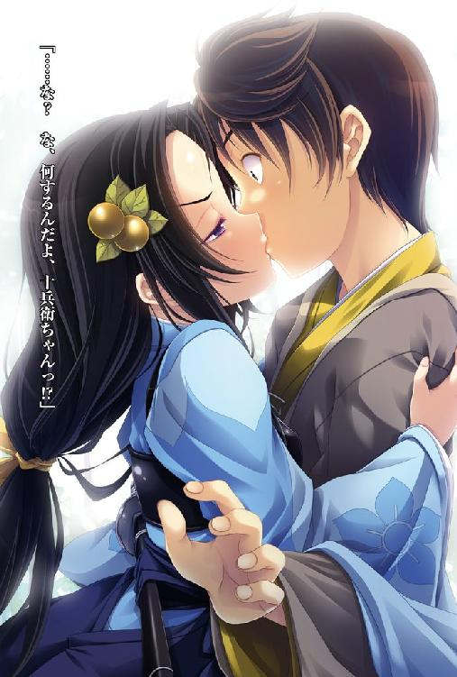
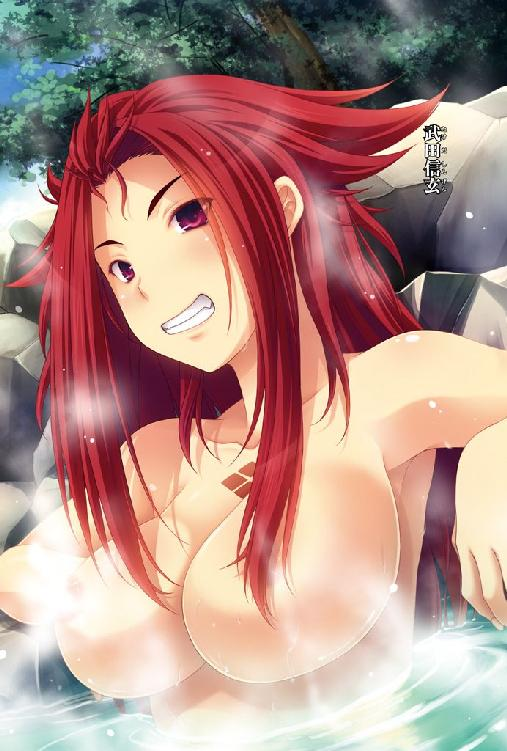
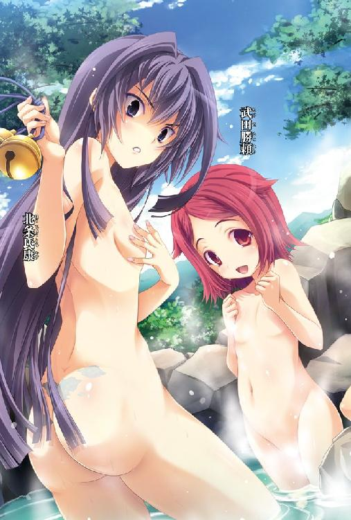
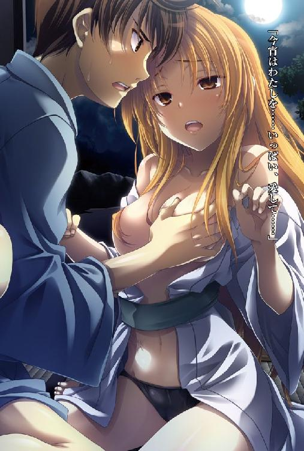
織田信奈の野望７
春日みかげ
本書に掲載されているコンテンツの著作権等の知的財産権およびその他すべての権利は、ソフトバンク クリエイティブ株式会社または正当な権利を有する第三者に帰属します。
本書の内容を権利者の許諾なく複製・複写・翻案・放送・出版・データ配信（送信可能化を含む）などすることはできません。
カバー・口絵 本文イラスト
みやま零
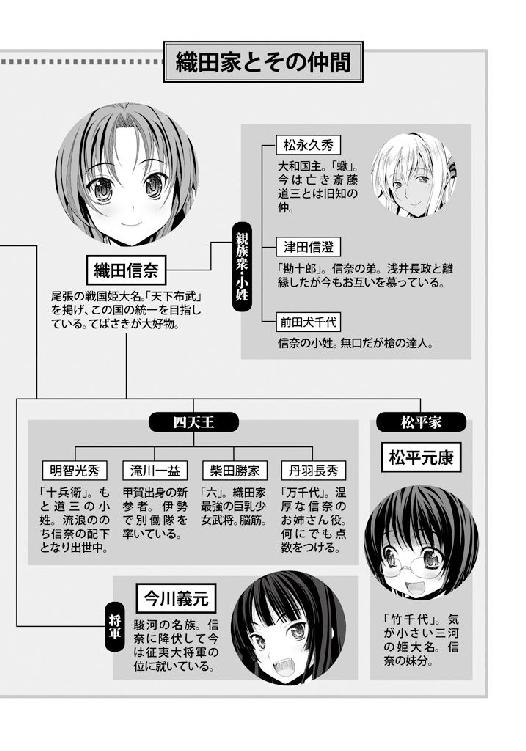
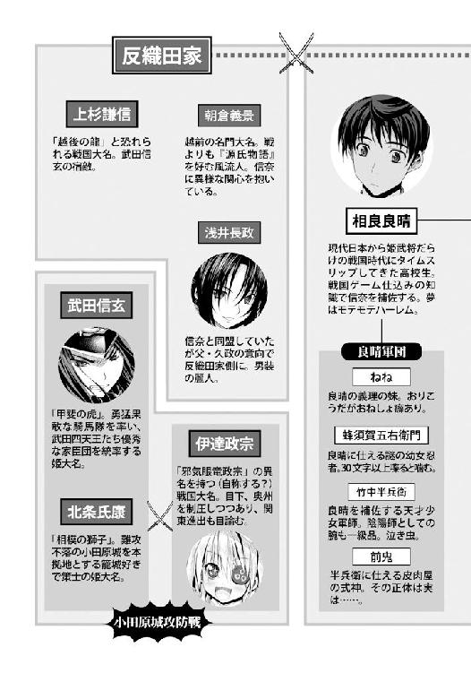
目次
「見て、良晴！ あれが富士山よ！ すごーい！ 大きい！ 高い！ 美しい！ わたし、まさかこんなに早く富士山を拝めるとは思っていなかったわ！」
「信奈、あまりはしゃぐな。ここはもう駿河の国。武田信玄の領地だぜ」
「敵地にこっそり乗り込んで来ているんだから、わたしのことは〝吉〟って呼びなさいよ、バカなんだから」
「おっと、そうだった。すまねえ」
時は戦国動乱の時代。
尾張一国の姫大名から身を起こして、破竹の勢いで美濃を奪取、並み居る戦国の群雄英傑を出し抜いて電撃的な上洛作戦を成功させた織田信奈。
今、信奈は堺の豪商で納屋を経営する今井宗久の娘「吉」に変装して、たった一人のお供を連れて東海道を東へ東へと足早に進んでいた。
敢えて馬を使わないのは、あくまでも武家ではなく商人の娘だということを示すため。
すなわち、武田信玄の配下の侍たちに正体を見破られぬためである。
「良晴も富士山を見るのははじめてでしょう。感激したでしょう。ふっふーん。わたしに感謝しなさいよ！」
艶やかな振り袖姿の「吉」こと信奈は、別に富士山の所有者でもないのに鼻高々。
隣を歩くただ一人のお供、こちらは丁稚姿に身をやつした相良良晴に「富士山は日ノ本でいちばん高い山でねぇ、尊い霊峰として昔から信仰の対象になっているのよ。今はまだ女人禁制だけど、そのうちわたしは叡山同様、富士山にものぼってみせるんだから！」と大はしゃぎしている。
どうやら信奈は、高い山が好きらしい。
美濃の稲葉山城を攻め取って山城の名を「岐阜城」と改めた際にも山麓に豪華な建物を建てて城下町を一望できるように改築したし、今は琵琶湖の畔にある安土山を土台にした七層の天主を誇る前代未聞の高層建築物「安土城」の普請に取りかかっている。
「つまり吉は高いところにのぼりたがる習性の持ち主なんだな、うん」
「人をバカかサルみたいに言わないでよね。サルはあんたでしょ。もうちょっと感動しなさいよ、富士山よ？ 富士山を拝んでいるのよ、わたしたち？」
「......悪いけど、中学の修学旅行の時にとっくに富士山は見物したんだ、俺。個人的に登山もすませたし」
相良良晴が鼻の頭をかきながら、信奈の大きな瞳から視線を避けるようにそっぽを向いてそうつぶやいた。
信奈と視線を合わせないのは、心臓のドキドキが止まらないからだ。
相良良晴は現代の日本に生まれ育った普通の男子高校生だったが、ある日気づいたら突然戦国時代にタイムスリップしていた。
なぜか、この戦国時代では有名な武将の多くが「姫武将」つまり女の子だったりする。
良晴の世界と直接つながっている過去の世界なのか、それともパラレルワールドなのかはまだ良晴にはわからない。
幸運（？）にも極度の戦国ゲームマニアだった良晴は、ゲームで覚えた戦国知識だけを頼りにして、戦国乱世を統一する運命にある覇王・織田信長ならぬ姫大名「織田信奈」にここまで家臣としてお仕えしてきたのだが──。
気がつけば、良晴はその小さな身体で戦国乱世を統一しようと奮闘し続ける信奈に惚れていた。
家臣としてだけではなく、一人の男の子として......。
そして信奈もまた、戦国時代には無縁のはずなのに自分のために命がけで戦ってくれる良晴に恋心を抱くようになっていた。
未来から来たと言い張っている一族郎党もいない風来坊と、生まれながらの姫大名でしかも京の都を掌握した事実上の天下人。
戦国時代の常識では、あまりにも身分が違いすぎて決して結ばれるはずのない二人だったが、禁じられた恋だけにいったん燃え上がるともう誰にも消し止められない。
まして、ここは駿河の国。
信奈の領国ではないのだ。
だから小姓もお目付役もいない。
良晴に仕える忍びの蜂須賀五右衛門がどこかに潜んで二人を守っているはずだが、気を利かせているのかはずかしいのか、五右衛門は姿を見せない。
つまり、今、良晴と信奈は二人きりだった。
「て、手をつないで行きましょうよ。誰もいないんだし。婚前旅行みたいなものなんだし......」
デレってデレってデレまくっている信奈が頰を赤らめながら、良晴の手をきゅっとにぎりしめてくる。
良晴は、「あ、ああ」と生唾を飲みこみながら信奈の白くて小さな手を握りかえした。
やわらかい手だった。
お互いに、異性と交際した経験はない。
二人とも、手をにぎったはいいがはずかしくなってしまってぎくしゃくしている。
色恋の道に通じた松永久秀や亡き信奈の義父・斎藤道三から見れば、おままごとのように見えるかもしれなかった。
それでも、不器用ながらも、二人はここまで来たのだ。
短気で毒舌でひねくれ者で人を怒らせるのが趣味みたいな信奈。
大言壮語を吐くのが好きで、主君に対して礼儀作法もへったくれもない良晴。
ずっと、顔を合わせればケンカばかりだった。
金ヶ崎で良晴が討ち死に間違いなしのしんがりを買って出た時には、お互いに、あれが今生の別れになるだろうと覚悟していた。
姉川では、本陣に孤立していた信奈が敵将・朝倉義景に襲われそうになるという事件もあった。
なによりも、この時代の世間が、一般常識が、この国に何百年も続いている身分制度の壁が、二人の恋などを許すはずがなかった。
信奈の将来を最後まで案じていた亡き斎藤道三に約束はしたが、祝言をあげて夫婦になることはおそらくできないだろう。
良晴もいちどは本猫寺で「南蛮蹴鞠神」に祭り上げられた時に信奈をあきらめかけた。
だが、今、奇跡のように二人は手をつないで東海道を誰にも邪魔されずに歩き、広大な富士山を見上げている。
ほんとうに、美しい山だった。
霊峰と尊ばれて当然だ、と二人は同じ思いを抱いていた。
「ちょっと待って良晴。あんた、もう富士山を見たって言ったけど......それって、ずっとずっと未来の話でしょう？」
「あ、ああ。今から四百年以上未来の話だな」
「だったら、あんたがはじめて富士山を見たのは今この瞬間ってことになるんじゃないの？ だって四百年以上も昔の古い富士山でしょ、こっちの富士山は？」
「......難しいことを言うなよ、ややこしくなる」
信奈は、戦国時代の人間でありながら、まるで現代人のように理屈というものにこだわる。
理屈に合わないものは「迷信」として退ける。
だが、どれほど奇異な話であれ、理屈に合っていれば信じる。
合理主義者なのだ。
たとえば、人間は死んだら塵芥に戻る、死後の世界などはない、と信奈は考えている。
理由は簡単で、死後の世界など誰も見た者がないのだから信ずるに値する証拠がない、というものだ。
南蛮から渡ってきた宣教師が「地球は丸い」と地球儀を差し出して教えてくれた時には、その奇異な話を信奈は素直に信じた。
宣教師の説明が、理にかなっていたからだ。
反織田信奈連合軍が拠点としていた聖地・叡山を焼き討ちにしようとした作戦にも、合理的な理由があった。
まず、叡山を落とせば当時八方ふさがりだった戦局を打開できたからだった。
次に、叡山は仏教の聖地と尊ばれていたが、僧兵を抱えてしょっちゅう合戦に参加していた。信奈は民の心に平安をもたらすことを使命としている宗教勢力が武装して武家に交じって合戦することを「矛盾している」「理に合わない」と考えていた。
第三に、信奈はこの世にたたりなどないと思っている。仮にかの世に神仏がおわすとしても、日ノ本の戦乱を終わらせようとしている自分に仇をなすのであればそれはほんものの神仏ではない、と合理的に結論づけている。
その他にも、中世の象徴とも言える旧商人たちの既得権益システムである「座」を廃止して「楽市楽座」政策つまり万人に開かれた自由な商業活動を推奨し、無数にあった関所を廃止して通行税をなくし、街道を整備して貿易ルートを確立させて各地の町を発展させるなど、信奈の先進的な行動は中世の古いシステムにしがみついて利益を得ている連中からすれば破壊者そのものといえた。
こんな信奈は同時代の迷信深い人々から誤解され中傷される羽目になることが多い。
最近では「第六天魔王」と呼ばれることが多くなった。
だが、未来から来た良晴は違う。
良晴は、信奈に「お前が正しかったということを、俺は知っている」と優しい声で言ってくれる。
そんな時の良晴は、いつものふざけている時とは違って、ほんとうに優しい。
ただ......「お前が正しかったんだ」と語る時の良晴はどこか、信奈を悲しみに満ちた目で見ているような気がして、信奈は時々少し不安にもなる。
良晴は、信奈に彼女の未来を教えることをかたく禁止されている。
信奈はあくまでも自分の意志と力で自分の運命を切り拓きたいのだ。だから、予言には頼りたくないのだ。
それで良晴は、「本能寺の変」について信奈に前もって教えることができない。
どうやって「本能寺の変」を食い止めるか、が良晴の最大の悩みどころなのだが、はたして食い止めることができるだろうか。
なにしろ、「本能寺の変」を引き起こす運命の武将・明智十兵衛光秀が──。
（十兵衛ちゃんがなあ。まさか......俺はどうすればいいんだ）
良晴がそこまで考えた時、信奈が頰をつねってきた。
「ちょっと、聞いてるの？ どうやって富士山旅行に行ったのよ良晴。そもそも、あんたはまともに馬にも乗れないじゃない」
「い、一応は乗れるようになったよ。さすがに」
「あんた未来では冴えない庶民暮らしだったんでしょ？ ゆっくり富士山見物できるほど暇じゃなかったでしょ？」
「未来の日本にはなあ、新幹線っていう便利な乗り物があるんだよ。椅子に座ったまま、尾張から江戸まで南蛮時間で二時間で移動できるんだよ。大坂から江戸までなら三時間かな？」
「なにそれ。速すぎて旅行にならないじゃない。つまんないわね」
信奈が唇を尖らせた。
「せっかくの、こ、こ、こ、婚前旅行、な、なんだから、そんなにあっという間に移動しちゃったら、い、い、意味がないじゃない......」
「え？ よく聞こえなかった。ごめん。もう一度言ってくれ」
「に、二度も言えるわけないでしょっ！」
照れた信奈が、良晴の向こうずねを蹴ってきた。
いつものような殺人的破壊力はない。
軽く猫がじゃれてくるような優しい蹴り方だった。
「さてと。こうしていつまでも遊んでいるわけにはいかないわ。どうやって伊達軍が包囲している小田原城へ近づくか、ね」
「そうだな。茶店で相談するか」
「は、旅籠に泊まりましょうよ......これから箱根を越えなければいけないのよ？ 今日中に小田原まで行くのは無理でしょう？」
「旅籠だって!? ききき吉お嬢さま。そそそそれってげげげ現代語で言えば、らららららラブホテルなのでは？」
「ら、ら、裸撫火照るぅ？ さ、さ、サル語にしては、ず、ず、ずいぶんとわかりやすい字面じゃない」
「悪い、どんな漢字をあててるのか俺にはわからない」
「あ、あ、あんた、なにいやらしいこと考えてるのよっ？ わ、わたしたちはあくまでも小田原城に籠城している武田信玄と交渉するために来てるのよっ？ ま、ま、まあ、その、も、もうひとつの目的は、こ、こ、こ、婚前旅行なんだけど......」
「悪い吉、途中から声が小さくて聞こえなかった」
「い、いいから、旅籠を探しましょうっ！」
顔を真っ赤にした信奈が、良晴の手を引っ張ってずんずんと箱根の上り坂を進んでいく。
信奈と良晴が武田信玄領の駿河を経由して関東の王者・北条氏康の居城である小田原城へ向かっているのには、理由がある。
良晴の軍師・竹中半兵衛が信奈にこっそりと献策し、織田家の家臣をまとめるお姉さん役・丹羽長秀が「どどどうしようかしら」とあわてる信奈に「満点です」と即採用することを勧めた、この二人の旅行。
表の目的は、「奥州の覇者」「黙示録のびぃすと」を名乗る伊達政宗率いる奥州軍に包囲されている小田原城へと入り、城主・北条氏康のもとに加勢して一緒に籠城している武田信玄と和睦することだ。
信奈は今、北近江の浅井久政・長政親子と越前の王・朝倉義景の連合軍と対峙していて、戦局が膠着している。
しかも、越後の龍・上杉謙信が、こんどの戦では不利な浅井朝倉側に味方すると公言しているため、信奈軍にとっては実に厳しい情勢になっている。
もうひとつの敵である摂津の大坂本猫寺とはかろうじて和睦を結べたとはいえ、「軍神」とも呼ばれる越後の上杉謙信がもし本腰を入れて北方から浅井朝倉とともに攻め込んでくれば、信奈は南近江と京を守りきれなくなる。
南近江の要地に、対上杉・対武田防衛戦の拠点となる壮大な「安土城」を普請しはじめてはいるが、完成までにはまだ時間がかかるのだ。
天才軍師・竹中半兵衛は、信奈にこう献策した。
『武田信玄さまと上杉謙信さまはご存じのとおり、川中島で壮絶な戦をやったほどの宿敵同士です。上杉さまに上洛の意志ありと武田さまがにらめば、武田さまは上杉さまを足止めしてくださるはずです──武田さまもいずれ再上洛軍を興すおつもりでしょうが、その際、正直に言いまして畿内に織田軍がいてくれたほうが武田さまは楽なのです。強力な越後兵を率いる上杉さまがもしも南近江から京へ至る街道を固めてしまえば、武田さまといえど容易に抜くことはできません。でも信奈さまの尾張軍なら兵が弱いからなんとかできる、と武田さまはお考えです。ごめんなさい、ごめんなさい。お手討ちにしないでください。くすんくすん』
つまり、「敵の敵は味方」──武田信玄にライバルの上杉謙信を牽制させて足止めさせる、という策だった。
だがその信玄は今、同盟相手の北条のために小田原城にこもっていて、伊達政宗軍と対峙している。
『攻めダルマの武田さまはこの長い籠城戦に辟易されているはずです。しかし小田原城の主・北条さまは根っからの籠城好きですから、このまま籠城を続けるおつもりでしょう。ですから、信奈さまと良晴さんが小田原城へ直接乗り込んで伊達軍を奥州へ帰らせる手助けをするのです。そのみかえりとして、武田さまに上杉さまを足止めしていただくのです──それで、小谷城に籠城する浅井朝倉勢を破ることができます』
半兵衛は、上杉と武田を同時に敵にすれば織田家は滅びる、と読んでいる。
戦国最強といえば越後の上杉謙信か甲斐の武田信玄、というのがこの時代の常識だった。
織田家は、信奈の卓越した戦略眼の力で上洛に成功したが、尾張兵というのがもうどうしようもなく弱いのだ。
『そううまくいくかしら。小田原城に入れてもらえるかどうかも賭けだし、わたしとサルだけで伊達政宗をどうやって追い返すの？ ほんとうに追い返せれば武田信玄もひとつくらいなら約束を守ってくれるでしょうけど......難しすぎるわ』
信奈ははじめ半兵衛の策が困難すぎると考えたが、半兵衛は『このままでは織田家は上杉さま率いる北方連合軍に滅ぼされますから、ここは一か八かの賭けです。それに武田さまは良晴さんに対して好意的ですから、信奈さまだけでは無理でも良晴さんを連れていけば交渉の席にはついてくれます。ただし使者が良晴さん一人では本猫寺の時みたいなことになりかねないので、信奈さまご自身も交渉の場に行かれるべきです。あとは信奈さまと良晴さんの知恵と勇気とそして天運次第です、こほこほ』と小さくせきをしながら信奈に迫った。
武田信玄がサルに好意的？ 本猫寺でもあいつ、けんにょに気に入られて独立しようとしてたじゃん。どうも悪い予感がするわね......と戸惑いつつも、信奈は家老の丹羽長秀に半兵衛の策について相談を持ちかけた。すると、
『満点です。もちろん命の危険はともないましょうが、それは武家としての宿命ゆえ逃れられません。どこで何をしていても危険なのは同じです。むしろこれは願ってもない機会。この旅を相良良晴どのとの婚前旅行になされませ』
と長秀が満面の笑みで太鼓判を捺したので、信奈は半兵衛の献策を採用したのだ。
そう。
この旅の裏の目的。
それは、信奈と良晴の婚前（？）旅行、だったのだ。
戦国の世で天下を争う信奈もその家臣である良晴も、いつ何時死ぬかわからない。
お互いにここまで生きてこられたことがある意味、奇跡と言ってもよい。
一日一日を、後悔なきようにせいいっぱい生きぬくべきである。
ならばいっそ、正式に夫婦になれぬのなら、ひそやかな婚前旅行に出かけて家臣団の目が光っていない遠国で人知れず結ばれるべきである......それが長秀の言葉だった。
信奈は『じょじょじょ冗談でしょ。なんでわたしがあいつと......』と照れながらも、結局、良晴だけをこっそり呼んでこの旅に出ることにしたのだった。
姿を隠してひそかに二人を守っている忍びの五右衛門以外、誰も連れて来ていないのは、つまりは、そういう理由のためだった。
これは信奈と良晴、二人きりの旅行なのだ。
とりわけ、柴田勝家と明智光秀は絶対にお供に連れて来られなかった。
勝家は信奈の貞操を守るのが自分のつとめだと思い込んでいるし。
光秀は二人の仲を疑っているし。
特に、光秀の問題は二人にとって頭が痛い。
なぜなら、明智十兵衛光秀は......。
「ねえ良晴、さっきから顔がひきつっているじゃないの。どうしたの最近？ ため息ついてることが多いわよ」
「え？ ああ。悪い。腹が減ったんだ」
「箱根にいい旅籠があるらしいわよ。宿賃は高額だけど建ったばかりでとてもきれいだし、それに部屋からは富士山と芦ノ湖がどちらも望めるんだって。そこに泊まりましょう」
「......お、おう」
「......泊まるのは......同じ部屋よ」
「あ、ああ。ご、五右衛門一人じゃ、守れるのは一部屋が限界だからな......」
「そ、そ、そういうことよ。べ、べ、別に、何かを期待しているわけじゃないんだからねっ。わ、わかってるでしょうねっ？」
「う、うん。わ、わ、わかってるさ。や、や、優しくするから、さ、最初は我慢してくれよな吉」
「......ちょ。あんた、何を......ま、まあいいわ。入りましょう。ま、まずは温泉で身を清めてからよ......が、が、がっつかないでよね」
「わ、わ、わかってるって......ああ、喉が渇くなあ。やべえ俺、がちがちに緊張している！」
「がちがちって......スケベね、ほーんと」
「そそそそういう意味じゃねえよ！」
やれやれ、あつあつで見ていられないでござる、とどこからともなく五右衛門の嘆く声が聞こえてきた。
「いつまで見張ってるのよ、あんた。肝心の場面になったら消えなさいよ、覗き見禁止なんだからっ！」
「そ、そうだぜ五右衛門！」
「拙者は旅籠に結界を張ってひとりさびしく闇に潜んでいるでござる。にんにんでごじゃる」
いよいよここまで来ましたな相良氏、いざという時に緊張して役に立たないという恥をかかにゅよう、この丸薬を飲むでござる、と五右衛門がだんご屋の屋根の上から小袋を良晴の頭の上に投げてきた。相変わらず、姿は見せない。
「なんだいこれ？」
「忍びに伝わる秘薬でござる。桶狭間の時に相良氏と前田氏の傷に塗った膏薬と同じ成分を丸薬にしておりまちゅ」
「......ああ。あの薬か。五体に力がみなぎってきて、やけに身体が火照るんだよな......」
「ふふ。栄養満点なのでござるよ。鼻血が出やすくなるのでご注意あれ」
「わかった」
とうとうわたしたち『裸撫火照る』に入るのね、べ、別に怖くなんてないけど緊張しちゃうわ......と信奈が少し震えながら良晴の腕にしがみついてきた。
良晴は思う。こんなにかわいい女の子が俺に......俺は果報者だ。藤吉郎のおっさん、俺はモテモテハーレムの夢は捨てて信奈一人を愛しぬくことに決めたけど異存はねえよな？ この通り、見た目も心も天下一の美少女だぜ！ と良晴は夕日に照らし出される富士山を眺めながら内心で手を合わせた。
あまりにも幸福すぎて、良晴は自分の今の境遇がまだ信じられない。
とはいえ、明日には小田原城へ決死の潜入を試みるのだ。
天才・半兵衛の策とはいえ、必ず成功するという保証はない。
特に、半兵衛からは、
『くれぐれも北条氏康さまに注意してくださいね、良晴さん。武田信玄さまは暗殺などなさらぬ剛気なお方ですが、北条さまは何をしでかすかわからない策士ですから。しかも、これといった方法論にとらわれず臨機応変にその時々に応じた策をひらめくお方。決して隙を見せぬよう、また余計な恨みを買わぬよう、ご用心ください。くすん、くすん』
と出発に際して忠告されている。
だから今夜、信奈と結ばれるんだ。
照れたり戸惑ったり遠慮したりビビってる場合じゃない。今夜だ。
俺がどれほど信奈を愛おしく思っているか、どれほど信奈に惹かれているか、何もかもを正直に伝えるんだ。言葉で、そして行動で。
そう、良晴は決心した。
（とはいえ、はじめてなんでよくわかんねーんだけどさ）
※
「ほんとうに姉上の影武者だとバレないかなあ？ 勝家？ 今のぼかぁ、きちんと美少女に見えているかい？」
「はいっ。ばっちりです、姫さま。どこからどう見ても、戦国一艶やかな愛らしさと凛とした美しさを兼ね備えた織田信奈さまその人ですよっ！ 思わず押し倒したくなってしまうほどですっ、はあはあはあ」
「か、勝家？ どうしてぼくを飢えた猛虎のような視線で見つめてくるんだい？ ぼくは姉上じゃないんだから、や、やめてくれたまえよ～」
北近江──。
浅井朝倉軍が籠城する小谷城の向かいに位置する、こんもりとした小さな山──虎御前山。
ここは今、織田軍の対浅井朝倉最前線基地となっていた。
浅井朝倉の連合軍をやまと御所や将軍今川義元の居城がある京の都へ入れれば、信奈の負けになる。
そこで信奈は虎御前山から南へは浅井朝倉軍を進撃させまいと必死で防衛しているのだが、越後の龍・上杉謙信が浅井朝倉に味方するという噂が京を駆け巡っていて、兵士も民たちもみな「こんどこそ織田軍は京から叩き出される」と動揺している。
そこで信奈自らが、弁舌たくみ（舌先三寸で女の子を惑わすとも言う）な相良良晴とともに東国へ向かい、武田信玄に上杉謙信を牽制するよう交渉に向かったわけだが。
その間、総大将の信奈が虎御前山の陣を留守にしているのが浅井朝倉方にバレてしまうのは、いかにもまずい。
で、軍師・竹中半兵衛が考え出した奇策が、信奈の影武者を虎御前山に置いておき、小谷城ににらみをきかせるというものだった。
ところが信奈には姉妹がいないし、尾張一の美貌を誇る信奈のお人形のように整った顔だちはとみに有名で、遠くからでもよくわかる。
最近は、南蛮渡来の遠眼鏡（望遠鏡）という便利な道具が流行っているので、小谷城からでも虎御前山にある信奈本陣が見えるのだ。
信奈の影武者をつとめられる女の子は、織田軍陣営にはいなかった。
美少女ならば明智光秀をはじめ何人もいるのだが、信奈独特の人相に似ている者がいないのだ。
「というわけで、この津田勘十郎信澄が特技の女装を活かして姉上に化けおおせているわけなんだがね。自慢じゃないが姉上にいちばん似ている美貌の持ち主は織田家中にぼくしかいないからね、ははは」
そう。
半兵衛が信奈の影武者に選んだ者、それが信奈の実弟・津田信澄だった。
信澄は織田家の貴公子だけあって信奈似の整った顔立ちの美少年。
しかも、信澄は女の子顔で、もともと女装癖がある。
彼以外には、信奈の影武者役は考えられなかった。
「男の子だということを忘れさせるほどに愛らしくて姫さまにうり二つ。あ、あたしはもう、我慢できませんっ。姫さま、南蛮具足を着込んで汗をかかれたでしょう。この勝家が着せ替えてさしあげましょう。はあはあはあ」
「ちょっとちょっと勝家？ どうしてぼくに襲いかかってくるんだい？ やめておくれ～ぼくには浅井長政という想い人が～」
「六と呼んでください、姫さまはあたしを勝家とは呼びません。さあ、六、と呼び捨てにしてなんなりと無体なご命令を！ 失敗したらお仕置きよ、という冷たい一言もお忘れなく！ 切腹させちゃおうかしら、と気まぐれなわがままを時々言いだすのも姫さまの魅力のひとつですよ。はあはあはあ」
「......勝家の姉上への忠義心って、なんというか......まあいいやぁ」
本陣に信奈愛用の南蛮具足を着て座っている信澄と、その隣に副将としてはべる柴田勝家のコンビは、なかなかうまく「信奈と勝家主従」役をつとめていた。
津田信澄と一時夫婦だった浅井長政が陣に近づけば、信奈が偽者だと見破るだろう。だが、小谷城から遠眼鏡で覗く程度では見破れまい。
二人の後ろには、赤母衣衆の前田犬千代が虎の皮を頭にかぶって朱槍をかまえ、無言ではべっている。
「ところで長秀と光秀はどこだい、勝家」
「......六、と呼べっつってんだろオラ！ 影武者らしくしろや！」
勝家、勝家。影武者だとバレるから信澄の胸ぐらをつかんではいけない、と犬千代が無表情のまま勝家をいさめる。
「ひい、ごめんよう。り、六ちゃん......丹羽長秀と明智光秀はどこにいるのかな～？」
「はっ。長秀は安土山にて、安土城の普請工事の指揮を執っています。長秀らしく、篤実で堅実な仕事ぶりのようです。光秀は京でやまと御所の公家衆や将軍、商人たちの間をかけまわりさまざまな仕事を同時にこなす八面六臂の大活躍中ですっ」
「後詰めの軍勢はいないのかい？ 不安だなあ」
「いえいえ！ 光秀はいざ浅井朝倉が動けばすぐに京の守備兵を率いて虎御前山にかけつけてくれますからご心配なきよう！」
「そうかあ～。副将が勝家だけじゃ心配だったけど安心したよ～、あっはっは」
「六って呼べ、つってんだろコラ！ あと、『そうかぁ～』なんてマヌケな返事があるかっ！ そこは、きりっとした表情で一言『デアルカ』って言わなきゃあたしの姫さまじゃないだろーがっ！」
「......で、『デアルカ』......これって姉上の口癖だけど、どういう意味なんだろう？」
「弟君のくせに知らないとは情けなや。『そうであるか、大義である』と言うべき家臣への返事を短縮して『デアルカ』って言ってるんだよっ！ 姫さまは性急で無駄がお嫌いな聡明なお方だからなっ！ 口癖になるまで練習しろ！ デアルカ、デアルカ、って」
「デアルカ、デアルカ......デアルカデアルカデアルカデアルカ～。いやぁ、何かの呪文みたいだねぇ」
「......うーん。こんな影武者でだいじょうぶかなあ～」
勝家が頭をかきながら嘆息した。
「ははは。だいじょうぶだよ、勝家」
「六と呼べ」
「ごめんごめん。いいかい、六？ お市......いや、浅井長政が特攻してきたらこのぼくが命に代えても阻止してみせる。次に相まみえた時には、決着をつけると約束したからね。心配は無用だよ」
浅井長政の話をする時だけは、いつもお気楽な信澄の表情が凛とひきしまり、まさに尾張の貴公子となる。今は、信奈に扮しているから尾張の姫さまになっているけれど。
虎御前山の副将に任命された際、「他言無用だよ。浅井長政は実は女性なんだ」とひそかに信澄から教えられた勝家は、
「長政の話をするとまるで別人のようにかっこよくなる。恋ってそんなに人を変えるものなのかなあ？」
と不思議そうに信澄の横顔を見ている。
「変えるさ。いいかい、ひとたび真剣に恋をしてただ一人の相手に魂を奪われれば、人は否応なしに変わらざるを得なくなるんだ。人を愛しぬくと決意した瞬間に、背負わなければならないものが生ずるんだよ。責任感とでも言うのかな......自分一人だけではなく、相手の全人生をも引き受けなければならないんだからね」
「へえ......そういえばサルも、いつもはサル面なのに姫さまのお命を守るためとなると、別人みたいにきりりとかっこよくなるよなあ......顔は同じでも、目つきとか表情がぜんぜん変わるんだ。あれが恋の力かぁ～」
あ、あたしも恋をすればかわいくなれるかな......と勝家がうらやましそうに口ごもる。
「勝家は初恋はまだなのかい？」
「六と呼べ、つってんだろ！」
「......はあ。お年頃の女の子とは思えないその乱暴な口調。とても乙女とは思えない、まさに鬼柴田だ。勝家には恋の道はまだまだ先の話だろうねえ」
「......あたしも、恋をすれば女の子らしくなれる？ 最近の姫さまみたいに？ 姫さまはサルと出会って以来、ますます愛らしくなられたよなっ......くっ、悔しいっ！ どうして姫さまの恋の相手があたしじゃないんだよっ！ いつかサルの寝首をかいてやるっ！」
「......いやぁ、姉上が勝家に恋することはないんじゃないかなあ......ははは」
「どうしてだよっ？ あーあー、あたしも恋がしてみたいなー。姫さまの愛らしさには到底追いつけないけれど、せめて長秀くらいには女らしくなりたいよ」
先日の漫才コンビ決裂事件以来、勝家は長秀を妙にライバル視するようになっている。
いつものキャラでコンビを組んで漫才をしてみたところ、
勝家＝おっぱいキャラ、汚れ役。
長秀＝お姉さんキャラ、清純派。
そーゆーコンビになってしまったので、勝家は「あたしも女の子らしくなりたいっ」と急に乙女心に目覚めたらしいのだ。
「......勝家には恋よりもだんごが似合う。ういろう、食べる？」
ういろうを爪楊枝に刺してふりふりしながらそうささやいてくる犬千代を前にして、「いーやっ！ これからのあたしは、食い気より色気だっ！ 腰をもっとくびれさせるんだっ！ もう、おっぱいがでかいだけの乳牛だなんて誰にも言わせないんだっ！」とやせ我慢して涎を拭く勝家であった。
「まずはその口調を女の子らしく改めてみてはどうかなあ？」
信澄の提案に、勝家は「そーだなあ。未来の女の子の口癖をサルにいろいろ教わったし......はずかしいけど......長秀に勝つためならなんでもやるっ！ いえっ、やりますぅ♪」と照れながらウィンクしてみせた。
その頃、陣から少し離れた草庵では、竹中半兵衛が虎御前山の防衛策を一人で練っていた。
式神の前鬼と後鬼が半兵衛の額に代わる代わる、濡れた手ぬぐいを当てては熱を冷やす。
「休んだほうがよいぞ、わが主。昨夜から一睡もしておらぬ。仕事のしすぎだ」
「......こほ、こほ......このたびの武田さまと交渉する策はわたし自身が考えたものですが、もともと博打的な部分が大きい策ですし、どうも悪い予感がするんです。ありとあらゆる状況に対応できるように万全の策を練っておかなくてはいけません」
「しかし、そなたの〝気〟は叡山の法灯を消したことで弱っている。無理は禁物だぞ」
「わかっています、前鬼さん。この書類を書き終えたら休みますから。わたしにはもう、あまり時間が残されていませんから......こほ、こほ、こほっ」
「......やれやれ......そなたは、よい子すぎる。これほどがんばっているのだから、たまにはわがままを言っても罰は当たるまいに」
前鬼は、心配げに半兵衛の額を冷やしている後鬼と顔を見合わせた。
「相良良晴にすべてを打ち明けたいところだが、主からかたくいましめられているのではな」
「......」
「後鬼。相良良晴は鈍いのではない。主を常に気遣ってくれておる。だがな......あの男は天性ご陽気なよい男だが、ご陽気ゆえに見落とすものもあるのだよ」
前鬼にも後鬼にも、半兵衛の決意を翻すことはできなかったのだ。
「さてと。俺は相良良晴の影武者をつとめねばならぬのだった。本陣へ行くとするか」
前鬼は完璧に他人の姿形を真似られるわけではないが、ある程度であればそれらしく化けられる。
半兵衛は虎御前山に信奈あり、と示すために津田信澄を影武者に仕立て上げたが、相良良晴の影武者をも準備していた。
それが、前鬼だったのである。
「前鬼さん。よろしくお願いしますね。こほ、こほ」
「うむ」
半兵衛がせきこむ姿を、前鬼は心配そうに見つめていた。
京の本能寺では、京都所司代の役目を仰せつかっている明智光秀が公家衆や商人衆、将軍・今川義元、畿内の武家衆を集めて風雅な茶会を開催していた。
きんかんの髪飾りと広いおでこが愛らしい明智十兵衛光秀は土岐源氏の血をひく高貴な生まれで、茶の湯や宮中での作法にも精通しており、信奈の京統治には決して欠かせない有能な姫武将だ。
なにしろ織田家は尾張の田舎者揃いで、京風の雅な公家文化とは水と油。
光秀抜きでは、織田家の京統治ややまと御所との交渉ごとがまるで立ちゆかない。
「さて。本日は堺より高名な茶人のお三方に来ていただきましたです。お三方、どうかよろしくお願いしますです」
優雅な笑みで茶人たちそして客人を歓待する光秀。
堺の茶人三人とは、
「いつぞや明智はんが九条ねぎを使いはった京風のたこ焼き、あれは八丁みそさえ塗らなんだら売り物になるんと違いますやろか」
商業都市・堺を取り仕切る納屋の主人・今井宗久。
南蛮渡来の片眼鏡を愛用する、大柄な頑固親父だ。
いつも銭と商売の話ばかりしていて、茶人というよりは根っからの商人である。
「......手前などが納屋さまや利休さまと並べられるなど、おはずかしい限りでございます」
青白い顔色と線の細い身体が今井宗久とは対照的な津田宗及。
物静かだが、なにやら腹にいちもつを抱いているタイプのようで、かつては今井宗久と堺衆の代表の座を激しく相争ったこともある。
今は今井宗久と信奈の「大風呂敷」好きな名コンビにおとなしく従っているが、そう簡単に「堺の頂点に立つ」という野望を捨てそうな男には見えなかった。
そして最後の一人が、
「......」
堺の魚屋の商人から高名な茶人となった少女、千利休。
南蛮服と和風着物を折衷した真っ黒い珍奇な衣装に身を包み、なかなか声を発しない。
だが、なんとなく「こんにちは」と利休が挨拶している声が、その場の全員に聞こえてくるのだから不思議なものだった。
利休が持参してきた茶器も、これまた珍奇なものばかりだった。
官位の高い公家や将軍も参加する茶会である。「今こそ」とばかりに世に名高い豪華絢爛な名物を持って来た今井宗久や津田宗及とはおおいに異なり、利休の茶器はどれもこれもそのへんの民家で使われていそうな地味で質素なものばかり。一部が欠けているものや、形が曲がっているものまであった。
しかも、その茶器の多くが、どういうわけか漆黒なのだった。
「これが利休ごのみ、ちゅうやつでんな。既存の名物にとらわれんのが利休はんが一流たる証しや」
「......いや、いつものことながら勉強になります」
今井宗久と津田宗及が利休をほめると、利休は「......ぽっ」と頰をほんのり赤らめて、客人たちに茶を点てた。
ぼむっ！
ぼむっ！
利休が茶を点てるたびに、茶器の中で小さな爆発が起こる。
「......」
「どうぞ、と言うておるのでおじゃるな。ほっほっほ、不思議な子じゃ」
お歯黒に白塗り書き眉という公家姿の関白・近衛前久──通称・麻呂──が利休から茶器を渡されて、その中身に驚いた。
なんと、京名物・宇治上林の抹茶ではなく、南蛮渡来の赤葡萄酒。
つまり、ワインだった。
しかも、その赤葡萄酒の上に、ふわりと浮かび上がっているものは、
「小粒金でおじゃる！ い、いったい、いつ小粒金を茶器に入れたでおじゃるか？」
小さいながらも、純金の粒だったのだ。
「......」
茶を点てて金を造った、と利休が声を出さずに解説した。
「な、な、なんたる......南蛮の酒はかような奇跡をも起こすのでおじゃるか。利休どのはもしやキリシタンでおじゃるか？」
「......」
こくり、と利休がうなずいた。
口数が少ない利休にかわって、今井宗久が「茶道にキリシタンの術を使うとはこれは異な」と驚いている近衛前久に詳しく説明した。
「利休はんの店の屋号は、『魚屋』。魚とはキリシタンの神イエスの象徴ですわ。さらに、千利休という三文字の名前、すべての漢字に十字架が入っております。南蛮文化と茶の湯を融合し、『錬金術』なる新たな技能を習得したのが利休はんが天才たるゆえん」
「なるほどでおじゃる。麻呂は南蛮趣味は嫌いでおじゃるが、よもや茶の湯で金を造ることができるとは......これは天晴れでおじゃる」
「......黄金の貿易都市・堺は、利休さまの新たな茶の湯によっていよいよ栄華を極めることとなりましょうな」
津田宗及が深々と頭を垂れながら、ちらりと近衛前久に視線を送った。
この二人は公家と商人という身分の違いこそあれ、実は裏でつながっている。
公家衆の頭領である自らが天下人にならんという野望を抱く近衛前久は、ひそかに全国の反信奈派を煽動している。
風貌と口調がまるっきり麻呂なので信奈たちが気づかないだけで、もともと近衛前久は越後の上杉謙信を煽って自ら関東公方となり関東全域を支配しようとしたこともある野心家だった。
津田宗及は、表向きは信奈に従いつつも、裏でその近衛前久と通じている一人だった。
「おーっほっほっほっほ！ わらわも茶を一服、所望いたしますわ。小粒金って飲むとお肌によさそうですものね。おーっほっほっほ！」
お飾り将軍の今川義元は、今日もこれでもかとばかりに着飾っていて元気いっぱいだった。
信奈が傀儡として将軍職に就けているだけなのだが、こうして京の都で公家衆たちと交わって優雅で風流な茶の湯や蹴鞠に興じることこそが将軍のお仕事だと本気で信じている義元は、今川将軍の権威を利用して天下布武の事業を進めている信奈にとってはまことに好都合。
「......」
「あらあら、まあまあ。わらわには抹茶をくださるの？」
「......」
「そうねえ。お酒はもう少し大人になってから、そのとおりですわね利休ちゃん。それでは抹茶を一杯くださる？」
「......」
「おーほほほ。いただきますわね！ うっ......に......にっがーい！」
この傀儡将軍をどうにか反信奈派に取りこみたいでおじゃるが、どこか抜けているというか足りぬというか、今の境遇にすっかり満足しきっているでおじゃる......と近衛前久が津田宗及に目で合図した。
（武田信玄が東国に釘付けとなり、頼みの大坂本猫寺が一年間の和睦を信奈と結んでしもうた今、将軍も使えぬとなれば、やはりここは越後の上杉謙信に頼るしかないでおじゃる）
（左様。浅井朝倉だけでは織田家は滅ぼせませぬが、軍神・上杉謙信さまならば）
（ただ残念なことに越後はちと遠いでおじゃる。畿内にあと一人、反信奈派の武将がいれば必勝疑いなしでおじゃる）
（そのような武将がいますかな？ 三好一党は四国へ逃げ去り、甲賀の六角承禎はさんざん戦に敗れて行方知れず。紀州の雑賀孫市はいずこかへ出かけてしまい不在。謀反常習者の松永弾正すらおとなしく大和にこもっているこの情勢では......）
（いなければ、なんとかして作るでおじゃる）
近衛と津田が内心そんな野心を抱いているとは露とも知らない明智光秀は、
「さてさて。畿内より来ていただいた武家衆の皆さんにも、茶をふるまわせていただきますですよ!!」
と上機嫌。
「ありがたき幸せ。アーメン」
胸からぶらさげた十字架にキスをしながら、キリシタン大名の高山右近が利休から茶器を受け取った。
堺から最新の南蛮文化が次々と流入してくる畿内にはキリシタン大名が多いが、その多くがいまや利休の弟子になっている。
キリシタンの儀式を茶の湯に融合した利休独特の「ごす・ろり」の精神が、彼らのハートをがっちりつかんで離さないのだろう。
敬虔なキリシタンである高山右近は、きちんとパンを赤葡萄酒に浸けて「主の肉、主の血......」とつぶやきながら目を潤ませてありがたーくいただいている。
見事なまでのキリシタン流である。
公家の近衛前久にはまるで理解できないが、
（これ以上南蛮夷狄の文化を畿内へ入れては、やまと御所の未来が危ういでおじゃる）
とますます南蛮にかぶいている信奈への対抗心を燃やすのだった。
そして光秀は赤葡萄酒をこくりと飲むと同時に、広いおでこをかああっと赤く染めていた。
しかし、赤くなっているのはアルコールだけが原因ではない。
数日前の夜、相良良晴とのやりとりを光秀はふいに思いだしていたのだ。
......
あれは、大坂、天満の森でのことだったです。
月が美しい夜の出来事でしたです。
「相良先輩が恋されておられる想い人とは、まさか、信奈さまなのではないですか？」
相良先輩と二人きりで森を散策しながら、この十兵衛は、思いきってそんな質問を先輩にぶつけていたです。
いつ頃からか、（もしかしたら......）という悪い予感を抱いてはいたのです。
しかし疑惑が深まったのは、大坂本猫寺での南蛮蹴鞠大会で織田軍が勝利したあの瞬間からだったです。
信奈さまと先輩が嬉しそうに抱き合ってくるくると芝生の上をまわっているその姿を見た時に、なぜか、十兵衛の脇腹が破れそうなほどにきりきりと痛くなったです。
この十兵衛としたことが、今まで感じたことのない不安に襲われたのです。
理由は、ええと、そうです。
もしも先輩が信奈さまに道ならぬ恋心を抱いていれば、いずれ織田家の天下盗りにとって巨大すぎる障害になってしまうからです！
京を支配して天下人となった姫大名と、どこの誰ともわからない、正式な身分すら持たない家臣。
もしも女好きの先輩が強引に信奈さまを襲って押し倒してしまえば──先輩はこの国の身分秩序を完全に破壊することになりますです！
まあ想いを遂げた瞬間に先輩の首は激怒した信奈さまに落とされるでしょうが、叡山の焼き討ち未遂事件よりもはるかに大きな信奈さまの悪評が立つことは間違いないです。
大名とその家臣が結ばれるだけでも非常識な大問題なのに、よりによって相手が本来ならば武士ですらない、いえ、農民や商人ですらない相良先輩では......。
いけませんです！
この十兵衛は忠義の武士なのです。
土岐源氏の血をひく高貴なこの十兵衛と相良先輩では身分的にはあまりにも釣り合いませんが、一応は織田家の重臣同士ということでかろうじてぎりぎり祝言できる関係です。ですから、信奈さまの天下盗りの足枷となる悪い噂を消すために先輩と祝言をあげてやる、と何度も十兵衛は言ってきました。
しかし、そのたびに先輩にはぐらかされてきたです......。
もしかして先輩はほんとうに信奈さまを想っているのでは？
南蛮蹴鞠大会での二人のあの仲むつまじさは、そう疑いたくもなるほどにただならぬものでした。
ですから、祈る思いで相良先輩にたずねてみたのです。
「どうなのですか。相良先輩は決してかなわぬ恋と知りながら、信奈さまを慕っておられるのですか。その行く手には悲しすぎる結末が待っていると知りながら──」
そうです。サル人間にいつ襲われるかわからない信奈さまの行く末が不憫だから、十兵衛はつい涙を流してしまったのです。
さ、相良先輩が不憫で泣いたわけではないです！
ま、ましてや、この十兵衛自身が不憫だから思わずこらえきれなくなって泣いてしまった......なんてことはありえないです！
「十兵衛は真剣に問うています。答えてください」
十兵衛は、べ、別に先輩に恋をしているわけではないのです。
ですから、あの時流したあの涙も、べ、別に、自分が先輩に片思いしているのだとしたらこの身が張り裂けそうなほどに悲しいです......と思ってついうっかり流してしまったわけではないのです。
ほ、ほんとうですよ？
そして、あの夜の相良先輩はめずらしいことに、茶化したりしょーもない駄洒落でごまかしたりすることなく、この十兵衛の肩をそっと抱いて真剣な眼差しで十兵衛の目を見つめてきやがったのです。
い、いきなりあんな真面目な顔で見つめられたら、て、照れるです。
放しやがれ、と言いたかったですが、なぜか十兵衛はもじもじと身をよじらせるばかりで抵抗できなかったのです。
未来サルは、十兵衛の心を操る謎の催眠術を習得しているのかもしれないです。
先輩は言ったです。
「たしかに俺は、信奈を崇拝している」
柄でもなく、瞳をきらめかせながら。
まるで子供のように、熱く語ってくれたです。
「俺は、信奈を天下人に押し上げたいんだ。京を支配している今でもすでに信奈は天下人だが、俺が言っているのはもっと大きい意味での〝天下人〟だぜ。十兵衛ちゃん」
「日ノ本すべてを治める女王、という意味ですか」
「もっとだ。それだけじゃない。俺は戦国時代以外の歴史にはさほど詳しくないんだけどさ、織田信奈が戦国の時代に誕生したというイベントは、この国が大きく生まれ変わるターニングポイントだったんだ！ まったく新しい国に、だよ！ 俺自身も見たことのない別の日本を生みだせる可能性を持った人間が歴史上にいたとすれば、ほんの数人だろうと思う。信奈か、幕末の坂本龍馬だけじゃないかな」
「サカモトリョーマとは誰ですぅ？」
「うーんと。土佐の人間なんだけど、十兵衛ちゃんの子孫だよ」
「この私に、子孫っ!? だだだだ誰が私の夫にななななるのですかっ？ ままままさか」
「さすがにそこまでは俺も知らないよ」
一瞬、心臓が飛び跳ねそうになったです。
「十兵衛ちゃん。日本だけじゃない。信奈は、この星で暮らすすべての人間の運命をも変えることができるんだ！ な、何を言っているのかさっぱりわからねーと思うが、俺も実際そうなんだけど、信奈はただ戦国日本を武力で統一して終わりなんていうちゃちな存在じゃねえ！ ぜんぜん違うんだよ！ この星の歴史を変えるほどの力と志を持った英雄なんだよ！ 俺はなぜ未来から戦国時代に来たと思う？ きっと信奈を補佐することで、日本の、いや、この星の運命をより良き方向に変える、それが俺に託された使命だと思うんだ！」
そう、男の子がとりとめもなく自分の夢を語っている時の、あのきらきらと輝くような表情で、相良先輩は熱く自分の赤裸々な思いを語り続けてくれたです──この十兵衛光秀を信頼してくれて。
両肩をきつくにぎりしめられながら、顔に唾まで飛ばされながら、それでも十兵衛は先輩から目を離すことができなかったです。
「最初は、いきなり戦国時代に迷い込んでしまった不安で気が変になりそうだったから自分で自分に無理やり言い聞かせてきただけだった。俺は信奈を補佐するためにこの世界に来た、って。でも、本猫寺との十年合戦を回避させることに成功して、確信したんだ！ 俺はほんとうに、信奈のためにここに来たんだって！ 世界史は今、猛烈な勢いで変転している。『大航海時代』が到来しているんだ。ヨーロッパから、続々と世界各地に船団が行き来しているだろう？ 世界中にキリスト教を布教しようと志すキリシタンの宣教師を乗せた船、世界のお宝を狙う海賊船、世界中の港と交易して巨万の富を稼ごうとしている貿易船、そして隙あらば他民族の土地を武力で占領して植民地化しようともくろんでいる軍船──鉄砲伝来とキリスト教伝来は、大変化のはじまりにすぎないんだ。これから日本は、怒濤の『大航海時代』に巻き込まれるんだよ。この大変化に対応できる奴は、今、この国にたった一人しかいない。それが、常識にとらわれない自由な精神を持つ信奈なんだ！ 信奈がいなければ、日本は世界から取り残されちまうんだ！ たとえこの時代を『貝のように国を閉ざす』という消極的な方法でしのいでも、いずれ必ずまた来るんだ、もっともっと日本と圧倒的な差をつけた外国の船がな！ その時にはもう、日本はヨーロッパの国々に追いつけなくなっている......！」
「その時には私の子孫のサカモトリョーマとやらがこの国を救うのですか、先輩。さすがはこのお利口で優秀で高貴な十兵衛の子孫ですね♪」
「うん。でも、そのあと日本は無茶に無茶を重ねなければやっていけなくなる。だが、今なら。信奈が生きているこの戦国時代なら、まだヨーロッパに追いつける！ いや、追い越せる！ 俺が知らない歴史が生まれるんだ！ フロイスちゃんが言っていた。俺は、いろいろな宗教やさまざまな民族の神話が予言している遠い未来の大破滅を回避させるために、この時代の日本に敢えて送られたんじゃないかって。俺は神なんて信じていねえけど、もしかしたら......日本と世界の歴史を良い方向に変えるために、俺は信奈のもとに来たのかもしれないって、半分本気で信じはじめているんだ。どうして何のとりえもない俺なのかはさっぱりわからないんだけどな」
まるで、先輩は信奈さまを神のように崇拝しているようです、と十兵衛は漏らしていました。
信奈さまが、うらやましい......。
なぜか、ふいにそう思ったです。
「......そうだな。風来坊の俺を雇ってくれていっぱしの武将にまで引き立ててくれた信奈は、俺にとって、ある意味神さまみたいな存在かもしれねえ。崇拝しているのかと言われれば、崇拝しているのかもな」
「の、信奈さまが、お好きなのですか？ 正直に答えて下さい」
「お、おう。好きか嫌いかと問われれば、もちろん──好きだよ」
好き、という言葉が先輩の口から飛びだしてきた瞬間、十兵衛の心の臓が止まりそうになったです。
「......では、先輩は、やはり信奈さまのことを......お好きだったのですね」
「す、好きだよ。でも......叶わぬ恋だということくらい、わかっているさ......」
十兵衛はついに、先輩の本心を聞き出すことに成功したです。
聞かなければよかった......という後悔と、むくわれぬ悲恋という運命を背負ってしまった先輩を癒やしてあげたいという衝動が、同時にわきあがってきたです。
だって身分違い以前に、あの信奈さまがブサイクなサル先輩ごときに惚れるなんてこと、天地がひっくり返ってもありえませんから！
モテない先輩が哀れで哀れで、十兵衛はまた思わず涙を流してしまったです。
「頼むよ、十兵衛ちゃん。十兵衛ちゃんが信奈のそばについていてくれなければ、信奈は戦国の世を終わらせて海の向こうへ打って出るという夢をかなえることができないんだ。織田家による天下布武、日本の再統一事業。これはすげぇ難しい仕事だぜ。すぐに敵を作ってあちこちに放火したがる荒っぽい信奈だけじゃ無理だ。教養深くて常識をわきまえた十兵衛ちゃんの補佐が絶対に欠かせない」
「......ほんとうですか？」
「ほんとうだ。俺は、この国の歴史を知っているんだから。その俺が言うんだから、間違いない」
また、相良先輩は、あの目で私を見つめてきたのです。
あの、悲しげな目で......今にも泣き叫びだしそうな、どうしようもなく辛い秘密を隠している人のようなあの視線で、この十兵衛光秀を凝視してきたのです。
すがりつかれているような気分になりましたです。
先輩は、いったい何を隠しているのでしょうか。
先輩が知っている歴史には、もしかしたら、とても悲しい結末が待っているのではないでしょうか。
未来人ではない十兵衛には、わからないです。
ただ、先輩が文字通り命をかけて真剣に語ってくれていることだけは、はっきりと感じられるのです。
「だから......だから俺はともかく、頼むから信奈に対してヘンな疑いを持ったりしないでくれ！ 十兵衛ちゃん、お願いだ」
ほとんど求愛されるかのような勢いで、懇願されたです。
先輩は土下座せんばかりに、十兵衛に哀願を繰り返したです。
そ、そこまで言われて、信奈さまを信じないですなどとは十兵衛は言えませんです。
「......わ、わかったです。でも、お二人の仲があやしいという噂を消すためには先輩は誰かと祝言をあげねばならないですよ。ですから、この十兵衛と祝言をあげやがれ、です」
「え？ どうしてそうなるの？」
「先輩は、信奈さまと夫婦になれると本気でお思いですか？」
「わかってるよ......俺の手に届くような女の子じゃねえ、ってことくらいは......わかっているさ......」
ひどく、悲しげでしたです。
十兵衛を見つめる瞳も、信奈さまに手が届かないとつぶやく時の声も、何もかもが、とても痛ましげだったです。
「......でもな。信奈の夢を果たすまでは妻はめとらねえと俺は決めている。あいつの夢をかなえると約束したからな。俺自身の夢を探すのは、その先でいい」
ほんとうに、そう思っているのでしょうか、先輩は。
先輩自身の夢とは、いったい何ですか？
信奈さまと一緒に、同じ夢を見ているのではないのですか？
相良先輩は一見単純そうですが、なにかとても深い秘密を隠しているのです。
誰にも言えない、とてもとても悲しくて辛い秘密を。
それは、ただ、自分がいた時代に帰りたい、といった普通の人が抱くような感情だけではなくて......。
もっとずっと、深くて痛ましいものに違いないのです。
ですから十兵衛は、気がついた時にはもう、相良先輩の唇に接吻をしていたのでした。
これで、少しでも先輩の悲しみに満ちた心が癒やされてくれれば。
その一心で、思わず接吻してしまっていたです。
「......な？ な、何するんだよ、十兵衛ちゃんっ!? うわああぁ、十兵衛ちゃんとキスしちまった!?」
「先輩。十兵衛は、先輩の言葉を信じるです。信奈さまと結ばれようという実現不可能な夢は、先輩は持っていないのですね？ では十兵衛は先輩と私がともに一国一城の大名になるまで、祝言の式を待ってやるです」
「ええっ？ どうしてそういう話の流れになるのっ？ 十兵衛ちゃん、空気を少しは読んで......」
「先輩......もしかして先輩は十兵衛が嫌いなのですかっ？ うっ、ぐすっ、うぇっ......」
「うわああああ、泣くなよ！ 嫌いなわけないじゃないか！」
ちなみに、これは噓泣きでしたです。
「接吻くらいでしたら、いつでも好きな時にしてやるです。ですから......先輩はいつも、笑っていてください。泣いたり悲しんだり暗い顔している先輩は、似合わなくて見ていられないですから」
そう。これは、人助けなのです。
先輩がもといた世界のおうちに帰ってお母さんに会いたがっている。人知れず夢の中で泣いている。その事実を知っているのは、この十兵衛だけなのですから。
先輩の秘密の一端を覗いてしまった十兵衛は運が悪かったのです、はあ......。
あんな先輩を見てしまっては、放っておけるわけがないです。
「相良先輩。それではまた明日お会いしましょう！」
「って、ちょっと待ってくれ十兵衛ちゃんっ？ 今のキスっていったいどういうつもりで......あいてっ」
はずかしくなってしまって走りだした十兵衛を追いかけようとした先輩は、石段で転んでそこで止まってしまったです。
まったく、どこまでもかっこわるい奴なのです。
ああ、どうして十兵衛は先輩にあんなはずかしい台詞を吐いて、こともあろうに接吻なんかしてしまったのでしょう。
まさか......まさか、先輩を哀れんでいるだけではなくて、十兵衛はまさか......こともあろうにあのサルの国のニセ王子に......恋心を......まさか。
......
「まさか、です！ そんなはずがないのです！ この十兵衛は、あくまでもあのサル王子を哀れんで......迷子になった動物に対する慈しみの気持ちをもって先輩に優しくしてあげてるだけなのです！ 違うですうううう！」
「一人で腰をくねらせて、畳に『の』の字を書いて......どないしましたんや？ 明智はん？」
「これ光秀どの、いったいどうしたでおじゃるか？ 戦場での槍働きで疲れているでおじゃるのか？」
「明智さま、茶に続きましてそろそろ連歌などを」
「はっ？ この十兵衛としたことが、一瞬意識が彼方へ飛んでいたです！ こ、これは申し訳ありませんでした、です！」
光秀の意識が、やっと茶会に戻って来た。
良晴と信奈が禁断の恋に落ちている可能性はなくなった。やっぱり良晴の片思いで、その良晴自身も常識をわきまえていてこの道ならぬ恋をあきらめている......と光秀は信じたかった。
だが、どうしても不安をぬぐいきれない。
良晴を抱きとめて、信奈のもとへ向かえないように縛りつけておきたくて仕方がない。
だって、万が一にも良晴が道ならぬ恋を突き進めば、その結末は良晴そして信奈の破滅なのだから......。
「......」
利休が無言で光秀に茶をもう一杯、点ててくれた。
漆黒の茶器には、抹茶ではなく、赤葡萄酒が入っていた。
「......」
相良良晴の心を理解したいのであればキリシタンになってみるのもいいかもしれない、と利休が光秀に無言で伝えてきた。
「......」
南蛮文化こそは今もっとも未来に近い文化だから、ということらしい。
光秀も、未来の日本では生活から何からすべてが南蛮流になっている、と良晴から聞いたことがある。
「そ、そうですね。それで少しは先輩の単純そうに見えて実はややこしい心を理解できるかもしれないです......じゅ、十兵衛はあいつが別にどうなろうが知ったことではないのですが、なにぶん女好きなせいで悪い噂が絶えない奴ですから」
「その、相良良晴さまの悪い噂についてですが」
津田宗及が、抑揚のない声でいきなり切りだした。
「織田信奈さまと相良良晴さまがクリスマスの夜に接吻をしていたという噂が、京でも堺でもさかんに流れております。これ以上放置してはおけぬかと」
「......ぐ。そ、それはただの噂ですぅ」
「そういえば麻呂もちらりと小耳にはさんだことがあるでおじゃるな。京童は口さがなくて噂好きでおじゃるからのう。もしも事実なら、おおごとでおじゃるなあ」
近衛前久がお歯黒を塗った前歯をむきだしにして「ほっほっほ、人の口に戸は立てられぬでおじゃるもの」と愉快そうに笑った。
「おひぃさまと相良はんが？ いくら御所から筑前守という高い官位をいただいとる相良はんでも、ご自分の主君と結ばれることだけは無理や。並みのおなごなら、今の相良はんなら選び放題ですがな」
今井宗久が渋い顔で茶を飲み干す。
「ほっほっほ。あの風来坊のサルが自分の主君、しかも天下人を嫁にするためには、サル自身が公家にでもなるくらいしか方法はないでおじゃるのう。それも公家衆の筆頭、関白か太政大臣にでも出世せねばのう。むろん天地がひっくり返っても無理な話でおじゃる。身分すら持たぬ者が公家になった例は日ノ本にはありゃしまへんし、そもそも関白の座にはこの麻呂がどっかと座っておるでおじゃるからのう」
光秀は、激しい不安にさいなまれはじめていた。
京でも......堺でも......あの噂が!?
しかも、あろうことか、やまと御所にまで！
（まずいです。意外にも、噂が猛烈な勢いで広まっているです！ まるで誰かが意図的に言いふらしているかのように......しかも今、先輩と信奈さまは虎御前山に二人きり！ いくら柴田勝家どのが目を光らせているとはいえ、柴田どのは男女の機微に疎いところがあるです。柴田どのの目を盗んでエロザルが信奈さまを襲うのはたやすいこと）
あのへそまがりで意地っぱりな良晴が信奈を「好きだ」とはっきり言ったのだ。
良晴は、信奈を強引に押し倒して想いを遂げるかもしれない！
しかも良晴にはなぜか戦国の世で戦う女の子をときめかせる妙な力があって、光秀ですら気がついたら接吻させられていた。
（ああああれは十兵衛の本意ではないです！ 先輩が隠し持つ、未来人独持の催眠術にかけられたに違いないです！）
信奈とて、良晴の術に陥ってうっかり言いなりになってしまうかもしれない。そして、はたと気がついた時にはもう......。
その後、正気に戻った信奈は良晴を間違いなく打ち首にするだろう。だがもう手遅れだ、今よりももっと破滅的な噂がかけめぐる！
（もし暴走した先輩が信奈さまを襲って、そしてそのことがバレたら、もう織田家は終わりです）
光秀は、いてもたってもいられなくなった。
「連歌は津田宗及どのにお任せするです！ 十兵衛はちと急用を思いだしましたので、これより虎御前山へと早馬を飛ばすです！」
光秀はみんなが引き留める声も聞かずに、電光石火の勢いで本能寺を飛びだして馬を駆り、虎御前山へと急行した。途中、雄大な琵琶湖を高速船でショートカットしていよいよ光秀は破竹の進撃。
これが戦であれば電撃的な大勝利を収められるほどの速度であった。
「ののの信奈さま！ サル人間！ やはり二人きりになっていたですね！ こんな時に二人きりになってはさらに噂が広まります！ だから柴田勝家はバカなのです！ あいつはどこですか！」
虎御前山の本陣に、半兵衛がしかけた迷路をがむしゃらに突破してきた光秀が割って入ってきたのはその日の夜のことだった。
こともあろうに、本陣には勝家はおらず、犬千代がういろうをほおばりながら「勝家はおしっこに行った」とつぶやいており、そしてなんと信奈は良晴に南蛮甲冑を脱がせてもらっている真っ最中だった。
これからいったい何をはじめようとしているのか？
光秀は大激怒。
「なななな何をしているですかあああ！ 前田どの、どうして止めないですかあああ！」
「やあやあ、光秀じゃないか。ぼくも勝家につられて厠に行きたくなったのだけれど、姉上の甲冑がうまく外せなくてねぇ」
「やれやれ。俺も南蛮の鎧の構造はよくわからぬ。なかなか脱がせられぬな」
「漏れそうなんだ、急いでくれたまえ。それにしても南蛮甲冑は脱ぎにくいし暑いし、これを脱いだらぼかぁもっと身軽な衣装に着替えるよ」
ああ、なんということ。
光秀は、あきれた。驚いた。
信奈も良晴も、虎御前山の本陣にはいなかったのだ。
信奈に扮しているのは、弟の津田信澄。
そして良晴に化けているのは、竹中半兵衛の式神・前鬼ではないか。
「の、の、信奈さまは？ サル人間は？ 二人はいったいどこへ消えたのですかっ、この最前線の砦を放り出して!?」
まさか暴走したサル人間が信奈さまをさらって逃げ出したっ!?
半兵衛の策を知らされていなかった光秀は、狼狽した。
（光秀に知らせなかった理由は、半兵衛ならずともおわかりであろう）
あわてた光秀は信澄の首筋に日本刀の刃を突きつけて、
「今すぐ教えるです！ さもなくば、のどをかっきるです！」
主君の弟を手にかけようとしていた。完全に謀反である。
「ひぃ。言うから、命ばかりは助けておくれ～。姉上とサルくんは、武田信玄と交渉するために出かけてるんだよ～」
「二人きりでですかっ？」
「乱破くんが一緒だけど、乱破くんは地面に埋もれていたり水に沈んでいたりするから......まあ、二人きりも同然だよね」
「おいおい、この娘に二人を追いかけさせればたいへんなことになるぞ。それ以上秘事をバラすな」
「狐は黙っているですう！ やいこら偽者、二人はどこへ向かっているですかっ？」
「お、お、小田原城だよ。北条家の居城さ。た、武田信玄は今、小田原城で北条氏康とともに籠城中だからね......途中、富士山を見ながら小田原へ入るって話だったよ。武士だとバレたらまずいということで、徒歩で東海道をゆるゆるとね」
「きいいぃ！ 小田原行きはサル人間が信奈さまと二人きりになるための口実に違いないです！ あの男は、そういう悪知恵だけはよく働くエロザルなのですっ」
信澄を脅しあげて吐かせた二人の出発日と出発時刻から、光秀は素早く計算した。
おそらくは掛川、焼津と東海道を進んで左手に富士山の絶景を眺めながら、二人は急ぎ足で小田原へ到着しようとするだろう。
だが徒歩ならば、まだ小田原には着いていないはず。
なぜならその小田原の眼前に──そう、箱根山がある！
箱根は、有名な難所！
馬でもたいへんなのに、あそこを徒歩で越えるとなると、大仕事だ。
「箱根山といえば芦ノ湖。あのあたりの旅籠で二人はくたくたになった足を休ませようと一泊するはずです！ ま、ま、ま、間違いなく、夜這いの夜になってしまうですううう！」
まあいいじゃないか、愛しあう二人の仲を引き裂いちゃいけないよそれは野暮というものさはははとお気楽に笑う信澄のみぞおちに「あの信奈さまがサル人間ごときに恋するなどありえないです」と叫びつつドゴッと重いパンチを入れて失神させてから、光秀は馬に再び飛び乗って虎御前山を駆け下った。
「どうかご無事でいてください、信奈さま！ 馬ならばまだ間に合います！ この十兵衛光秀が、お守りいたしますですぅ！」
※
上弦の月が夜空にのぼった頃。
箱根の坂をのぼった良晴と信奈は、芦ノ湖の畔にある旅籠に部屋を借りていた。
今回の信奈は「今をときめく堺の大商人の娘・吉」というはぶりのいい身分なので、とびっきり豪華な旅籠の最上の部屋を堂々と占領している。
襖を開くと風流な日本庭園があり、その向こうに雄大な芦ノ湖が、そのさらに向こうには富士山が一望できる。
浴衣姿に着替えて箱根の名物・黒たまごをいただきながら、畳の上に素足をのばした信奈が一言。
「明日からは命をはった大勝負だけど、今夜だけは戦国の世のことは忘れてまったりしましょうね。良晴」
しみじみと、この貴重な時間の大切さをかみしめるように言った。
「お、おう」
良晴のほうは、「ついについにこの時が。信じられねえ」と緊張してがちがちに固まっている。
なかなか、皿に盛られた黒たまごをたいらげることができない。
「それにしても、どうして箱根のたまごは黒いんだ？ ねねのおみやげ用に買い置きしておかなくちゃな......ウケないかな？ 子供には」
「箱根の温泉の水でゆでると、黒くなるんだって。一個食べると七年寿命がのびるそうよ。『人間二十年』だけど、三個くらい食べてうんと寿命をのばしておこうかしら」
「前から思ってたんだけどな。『人間二十年』って、やけに短くね？ 俺が知っている『敦盛』の歌詞では......」
「この戦国乱世だもの。もののふの家に生まれた者は、二十年生きられるかどうかもわからないじゃない。わたしだって良晴だって今まで何度も死にかけたでしょう？」
信奈が、浴衣の裾をまくって脇腹にうっすらと残っている銃創の痕をちらちらと良晴に見せた。
今の良晴には、完璧な美貌を誇る信奈の身体に残ったその傷跡までが愛おしく思えた。
「ま、まあな」
「こうして、二人きりで宿に泊まって一晩を一緒に過ごせることが、奇跡みたいなものよ」
「......そ、そうかもしれねえな。そもそも、俺はこの時代の人間ですらないからなぁ」
「わたしは合理的にものを考える人間だから神仏の加護なんて信じないけど、天だか神だか仏だか、それとも大勢の未来人の意志か、とにかくそういう説明のつかないものが良晴をわたしのもとに遣わしてくれたってことだけは信じられるの」
信奈は、良晴の手をつかんで自分の脇腹に添えながら、瞳をきらめかせて語り続けた。
その澄んだ瞳は、良晴だけを映している。
「良晴が来てくれなければわたしは弟を斬るはめになっていただろうし、叡山も本猫寺も焼き討ちしていただろうし、それ以前に桶狭間か金ヶ崎で死んでいたかもしれない。ここまで来られたのも、良晴のおかげよ」
「い、いや。俺が来てなくても、俺じゃない他の人間が俺の役目をつとめていたさ。そのおっさんの名は木下藤吉郎って言ってな、俺を守るために合戦場で死んじまったんだ。だから俺はおっさんのかわりに......」
「今は、わたしのことだけを考えて」
「......あ、ああ」
信奈のすべすべの脇腹をなでながら、良晴は（誰が送ってくれたのか知らねーけど、俺はこの世界に来てよかった）と心から思った。
（俺を助けてくれた藤吉郎のおっさんを供養するために、一国一城の主となった暁にはでかい寺を建てるぜ）とも。
良晴の胸に頭を載せてきてほほえむ信奈は、この世の人とは思えぬほどに美しかった。
良晴は震えながら、信奈の脇腹に残った傷跡の上を何度も指でなでた。
「痛むか？」
「ううん。くすぐったい」
なんてかわいい笑顔なんだ、ちくしょうこんなの反則だぜ！ 仏頂面でつんけんしているからこそ信奈じゃねーか、こんなに無防備にほほえまれたらかわいすぎて俺の心臓のほうがもたねえよ！
良晴はふと光秀のことを思いだした。
（そういえば十兵衛ちゃんをきちんと説得できたんだろうか、俺は......正直に俺の思いを伝えたつもりだけど。あの時は予想すらしてなかったけれど、こんな奇跡のような一夜を信奈とすごせる機会を得られたということは、十兵衛ちゃんに『信奈をあきらめた』と言って噓ついてだましたことになっちゃうんだろうか......それに、十兵衛ちゃんは俺にいきなりキスしてきたけど、あれはいったい何だったんだろう？ また俺をおちょくってるのだろうか、それともまさか......）
あの天満の森での明智光秀は、凛とした月の如き美しさに満ちていて、信奈一筋の良晴ですら思わず胸の高鳴りを抑えられなくなるほどだった。
信奈の天下布武が達成されるまでは俺は嫁を取らない、という言葉であきらめてくれればいいのだけれど、どうも悪い予感がする。そのうちまたしても文金高島田姿で押しかけてくるのでは......？
いくら信奈と俺の悪い噂を気にかけてるとはいえ、わざわざ俺なんかと祝言をあげようとしなくてもいいのに。十兵衛ちゃんってヘンに生真面目だよなあ。まさかとは思うが......十兵衛ちゃん本人が気づいていないだけで、もしかして真剣に俺にほれてるんじゃないだろうな？ だったら、とてつもなくヤバイよな......この俺自身が「本能寺の変」の原因になりかねねえ、と良晴はふとため息をついた。
「良晴。他の女のことを考えてるわね」
カンの鋭い信奈に、頰をぎゅううとつねられた。
「痛い痛い。じゅ、十兵衛ちゃんはどうしてるかな、ってちょっと考えただけだよ！」
「十兵衛がどうしたって？ 今夜はわたしのことだけを考えていなさいって言ったでしょう？」
「う、うん。悪かった」
信奈ってやっぱ、おっかねえ......ほっぺたの肉をひきちぎられそうになったぜ、と良晴はぶるぶる震えた。
藤吉郎と約束したモテモテハーレムの野望は、今宵限りで露と消えそうだった。
でも、良晴はこれでいい、後悔はない。
天下一愛おしい女の子が、自分の腕の中にいるのだから。
「二人きりで契約したことを覚えてるでしょう。わたしの夢がかなうまで、良晴はわたしのもとにお仕えするのよ。わたしの独占物なのよ。どこにもいっちゃダメなんだから」
「お、おう。たしかにそう約束したよな」
「......でも......わたしの夢がかなったら、契約は終わっちゃうの？ 良晴は帰っちゃうの？ わたしを置いて、未来の世界へ......」
ふいに、信奈の瞳が曇ったように見えた。
良晴は、笑いながら信奈のおでこを指でつっついた。
「バカだな。帰りたくても帰る方法なんてわからねーよ。そもそも、俺はどうやってこの世界に来たのかも覚えてないんだぜ？」
「そうね。ちょっとだけ心配になっちゃった」
「それに、帰る気もないよ。未来の世界に残してきた家族や友達は心配だけどさ、お前のほうがずっと心配だからな。目を離したらすぐに危険なところへ飛び込んでやがるし、放火癖はあるし」
実際、良晴は信奈に仕えて以来、未来に帰る方法なんてぜんぜん探していなかった。
忙しくてそれどころじゃなかったという理由もあるが、目の前に天下一の女の子が......ここまで惚れぬいた女の子がいるというのに、どうして帰らなくちゃならないのだろう？
家族や友達に会えなくてさびしいという思いはある。だが、この世界にもねねという妹がいてくれる──仲間もいる。そして、信奈がいる。
「俺にとっては信奈、お前がいちばん大事なんだ」
「......嬉しい」
良晴に頭をなでられながら、信奈は子猫のように目を細めて良晴の胸にほおずりしてきた。
本猫寺での南蛮蹴鞠合戦以来、どことなく猫っぽい仕草が癖になっているらしく、ほんものの子猫に見えた。
「良晴。わたしのこと、好きって言って」
「え？ な、なんだよ。は、はずかしいじゃねーかよ、そんなの」
「言ってよ。これから契りを交わそうっていう時なんだから照れていないで、はっきり言いなさいよ」
「お前のほうが先に言えよ。相良良晴が好きだ、愛している、って言ってくれよ。そしたら俺も照れずに言えるさ」
「〝愛している〟......？ 変わった言い回しね。キリシタンがよく、愛って言葉を口にするけど」
「惚れた、好きだ、にくわえて未来の日本じゃ〝愛している〟って南蛮風の告白もするのさ。どれだけ好きかという順番に並べれば、そうだな、〝愛している〟という言葉がいちばん上だな。重い言葉だ。俺なんて未来の世界じゃまだ高校生のガキだったから、実際に口にした経験はねえな」
「ふうん。〝愛〟ねぇ。南蛮風でかっこいいわね......じゃあ、わたしを愛している、って言って。良晴」
「い、いや、それは......最上級の言い回しだからな、緊張しちまうぜ！ なにしろキリスト教の教会で結婚式をあげる時には、〝永遠の愛〟を誓うんだからな～」
「永遠の、愛......素敵ね。惚れた、好きだ、は一瞬の感情だけど、〝愛〟は永遠なのね......やっぱりキリシタンの趣味ってお洒落で素敵だわ。うっとりしちゃう」
「ガチガチの教会で式をあげるとうかつに離婚できないとか、いろいろ困ることもあるらしいけどな」
「まぜっかえさないで！ ほら、わたしの唇にキスして。そして、永遠にわたしを愛する、って誓いなさい。良晴。お願い」
ほんのりと上気した信奈が瞼を閉じて、良晴に小さな唇を近づけてくる。
たしかに、俺はこの子を......信奈を愛している、と良晴は思った。
ただ、織田信長としての歴史的使命を背負っているからだけじゃない。見た目がきれいだからだけじゃない。
まっすぐで純粋な孤高の志を抱いて、誰に誤解されてもなお唇をかみしめて前へ前へと進み続ける信奈の意志の力が、その孤独さとまぶしさが、どうしても良晴をひきつけてやまないのだ。
俺だけは、信奈をほんとうに理解できる──たまたま未来から来たためにすぎないかもしれないけど、だけど、うぬぼれじゃなくそう思う。幼い頃から戦国ゲームマニアだったのも、信奈と出会うためだったのかもしれない。
良晴は本気で、そう思えるようになっていた。
「愛してる、って言って。お布団に入りたいなら、早く言いなさい」
「......お、おう......でもほんとうにいいのか？ 俺たち、たとえ結ばれても祝言をあげられないんだぜ？ 天下人とその家臣じゃ、身分が違いすぎる。しかも俺は本来、織田家に仕えて武士をやれるような人間じゃないんだぜ。そもそも身分すら持たない風来坊だったんだからな」
「身分なんてどうでもいいのよ。わたしが良晴を選んだのだから。世間の誰にも、文句は言わせないわ」
「でもな。バレたら天下布武どころじゃなくなるぜ。富士山が女人禁制だなんていうこんなモロに中世な時代じゃあ......」
「でも良晴は未来から来た人間だわ。身分なんて関係ない。そうでしょう」
「そ、それはそうだが。しかしな」
「今は誰も見ていないわ。ほら、早く言いなさいよ。そして、今宵はわたしを......いっぱい、愛して......」
その信奈のしおらしい言葉が、良晴の理性を決壊させた。
もともと、理性よりも感情と根性と気合いと欲望で生きている野生の良晴だ。
いちど決壊すれば、あとは怒濤の進撃をはじめるのみ。
良晴はじいいんと感動にうたれながら、心の中で叫んでいた。
俺ほどの果報者がこの世にいるだろうか。いや、いない！
藤吉郎のおっさん！ 金ヶ崎で散った野郎ども！ みんな、見てくれているか？ 俺は今、天下一の恋人をこの手に抱きしめているところだぜ！
今から俺は狼になる！ サルじゃなくて！ 今にもサルになりそうだけど、ウッキー！
そこを敢えて渋く、狼になる！
「の、の、信奈ああああっ！ お、お、お、俺は、俺は、俺は......！」
「......良晴」
信奈は目をきゅっとつむって、良晴の腕の中でじっと動かない。
信奈の浴衣の中へ滑り込んでなだらかな脇腹をなでていた良晴の指が、信奈のきゅっと盛り上がった胸のほうへと自然に吸い寄せられていく。
良晴にとって信奈の胸だけは見てもいけないし触ってもいけない、神聖なものだった。
勝家のおっぱいのように、ただドキドキと興奮する対象というだけではない。
霊峰・富士山にも匹敵する、いや、それ以上に神聖な場所だった。
信奈の胸へと登り詰めた次にはこんどは深い深い海溝を目指して新たなる冒険にチャレンジしなければならないなんて、今まで彼女を作った経験のない良晴にはあまりにも困難でハードでめくるめく体験だったが、明日死ぬかもしれない二人だ。
勇気をふりしぼって、どこまでも行くしかない！
良晴ははじめて、信奈の素の胸を手でにぎりしめていた。信奈は浴衣一枚を羽織っているだけで、いつもの見せブラをつけていなかった。
大きすぎず、さりとて小さすぎず、ちょうど良晴の掌にぴったりと収まる絶妙のサイズだ。
信奈がひどく緊張しているせいか、白い絹のような肌ざわりの胸全体が汗ばんでいた。とくとくとく、と心臓の鼓動が激しく高鳴ってくるのが手から伝わってくる。
思わず信奈の胸を握り潰したくなる、狼のような衝動に駆られる。
「......あ......よ、良晴」
信奈が、声を漏らした。
怯えと喜びとが、微妙に混じったようなため息を吐く。
もう良晴はこれ以上我慢できない。
「信奈、俺は......！」
お前を愛している、と良晴が力の限り叫ぼうとした時だった。
「待ちやがれ、です！」
「えっ、十兵衛っ!?」
「うわああああっ？ 十兵衛ちゃん、どうしてここにっ!?」
間一髪。
良晴と信奈の二人を引き裂くかのように、明智十兵衛光秀が投げつけてきた短刀が良晴の首筋ぎりぎりのところを「びゅんっ」と高速で通過していた。
「球よけのヨシ」の異名を取る良晴でなければ、頸動脈にずぶりと短刀が突き立てられていたことは間違いない。
「あ、あぶねえええええっ!? 何するんだよ十兵衛ちゃん！ マジで死ぬところだったぞ！」
「京都所司代の仕事はどうしたのよ？ どうしてここにあんたがいるわけ？」
よくぞ聞いてくださいました、とばかりに得意満面の光秀が、大見得を切った。
「天知る、地知る、人が知る──京の茶会にてこの十兵衛、信奈さまと相良先輩のよからぬ噂がやまと御所にまで知れ渡っていることに驚き、信奈さまを救うために馬を乗り継いではるばる箱根までかけつけてきた次第ですぅ！ えへん！」
ばばーん。
大見得を切ったわりには、信奈と良晴には光秀の忠義心の厚さはこれっぽっちも伝わっていない。
「どうして邪魔するのよ、このきんかん！」
信奈はあわてて帯を巻いて浴衣を着直しながら、まさしく第六天魔王そのものとしか言いようのない怒気を発して光秀の前に仁王立ちしているし。
「十兵衛ちゃん。もしかして俺を素で殺すつもりだったろ、今......」
良晴は顔面蒼白。
良晴はどうにかこうにか天満の森で最大限の誠意を見せて光秀を納得させたつもりだったが、完全に失敗していたのだ。
信奈なんか好きでもなんでもねーむしろ大嫌いだ！ とでも言っておけば、人を疑うことを知らない光秀をあっさり騙すことだって可能だったろう。
だが、あの時の切羽詰まった光秀に、そんな大噓をつくことは良晴にはできなかった。好きだと正直に告白するしかなかった。
そのかわり、信奈がいかに日本の、いや世界の歴史にとって大切な人間なのかという話を真剣に語ったり、好きだけど自分の手に届く相手じゃないことはわかっていると苦しい本音まで伝えたり、光秀が信奈にとってどれほど欠かせない重要な存在かを説明したりして、光秀を納得させた......つもりだったのだが。
「相良先輩？ 少々の浮気でしたら、この許嫁の明智十兵衛光秀は許してやるです。われながら心が広い女ですから。しかし、相手が主君の信奈さまだとなればこれは話がぜんぜん別ですぅ！ それも、最前線の虎御前山を放り出して信奈さまを言葉たくみにかっさらい、箱根の旅籠まで拉致して襲うとは──許せませんです！ 天下布武の大事業をなんとこころえるですか！ サル人間は、すっかり色ボケしやがったですか！」
「ちょっと良晴。あんた十兵衛をうまく説得したんじゃなかったの？ 相変わらず婚約者ヅラしてるじゃないの」
「......ごめん......説得に失敗したらしい......っていうか、俺とお前が相思相愛だということすらいまだに十兵衛ちゃんは理解できていない。俺が一方的に信奈を襲っていると今でも思いこんでいる」
「とことん鈍い奴ね......それだけが救いといえば救いかもしれないけどぉ」
ひそひそ話す二人の前で、光秀は刀を抜いた。
「サル人間、戦場の真っただ中から主君をさらって襲おうとしたその罪は万死に値するです！ わが婚約者なれど成敗します！」
「待て、待ってくれ！ 明日、小田原城へ入って武田信玄と交渉するんだよ、俺たちは！」
「そ、そうよ。これは浅井朝倉そして上杉謙信に対抗するための大仕事なのよ。サルを斬っちゃダメよ！」
「しかし、先ほど明らかにサル人間は信奈さまを襲っていたです！ あ、あ、あろうことか、む、む、胸を手でつかんで......い、い、いやらしいです！ 信奈さま、この男に何か弱みでもにぎられておられるのですかっ？ でしたら、汚れ役はこの十兵衛にお任せください！ 十兵衛がどうしようもなくエロいサル人間にこの身を捧げて、その煩悩を浄化してさしあげますから！ これも家臣としてのつとめですう！ というわけで先輩、この場で二人の祝言をはじめましょう♪」
「十兵衛ちゃん。俺を斬るのか祝言をあげるのか、どっちなんだよっ」
「こ、こ、このきんかんは......なんだかんだと理屈をこねてるけど要は、サルをわたしから奪い取るつもりなんでしょっ！」
ぶっちーん。
とうとう、信奈の堪忍袋の緒が切れて底が抜けて火を噴いた！
「待て信奈！ それ以上しゃべるな、修羅場になる！ 『その時歴史が動いた！ 織田信奈と明智光秀、泥沼の愛憎劇！』って展開になっちまうぞ！」
「あーもう、うるさーい！ きんかんっ！ いいこと、サルはねえ、わたしの独占物なのっ！ わたしの飼いザルなのっ！ サルといちゃいちゃしていいのは、このわたしだけっ！ あんたには絶対絶対ぜ────ったいに、あげないんだからっ！」
「うわあああああ！ なんてことを言いだすんだ、信奈ああああっ!?」
「な、なんですと？ 信奈さまっ？」
言ってしまった！
ついに、信奈と良晴が相思相愛の恋仲であることが明智光秀の知るところとなった！
というか、今の今まで気づいていなかった光秀もすごいが。
「......あ、あ、哀れなり、信奈さま！ そんな心にもない台詞を言わされるほど、サル人間に大きな弱みをにぎられておられるだなんて......うっ......」
いやいや。
なおも誤解し続けようとする光秀、その鈍さは尋常のものではなかった。
さらにブチ切れた信奈は、衝動的に決断した。
もはや、絶対に誤解できないようにはっきりとほんとうのことを──真実を教えるしかない、と。
その結果、光秀が出奔しようが謀反しようが、もう信奈の知ったことではなかった。
信奈は旅籠中に響き渡るカン高い大声で、叫んでいた。
「どーして素直に解釈できないのよ！ わたしは、本音を言ってるだけよっ！ 良晴はねえ、身も心もわたしのものなの──────っ！」
「......なんですと？」
「そうよ、良晴はわたしの男なのっ!!!!!! これからやっとはじめての契りを交わすところだったのに、邪魔しないでっ！」
「ええええええっ？ の、信奈さまっ!? そ、それは、まことなのですかっ？」
「まことに決まってるでしょっ！ この気位の高いわたしがこんな噓言うわけないじゃん！ いいから、あんたはいーかげん良晴をあきらめなさい！ これは上意よ上意っ！」
光秀が「あああ！ すでにサル人間先輩は、信奈さまのお心をここまで洗脳してわがものにしていたのですね......おそるべきは未来人の催眠術......手遅れでしたか......」と衝撃のあまり崩れ落ちる。
驚くべきことに、まだ「信奈はだまされている」という持論を捨てていない。
「の、信奈さま。それだけはいけません。冷静になってください。仮にも天下人の信奈さまが生まれすら定かでない相良先輩と恋仲になろうだなんて、叡山を焼き討ちにするよりも無茶な話ですぅ」
「だから何よっ！」
「このような不適切な関係が露見すれば、天下布武の事業は瓦解するです......信奈さまは尾張のうつけ者という悪い評判に逆戻り。いえ、もっとひどいことになるです。世に身分というものがあることも知らないたわけ者と......」
「知ったこっちゃないわよ！ 反対する者はみんな敵よ！ しのごの言う奴はみーんな、やっつければいいのよ！」
「の、信奈さま～、目を覚ましてください！ ただでさえ上洛して以後の織田家は四面楚歌ですのに、反織田家勢力を一斉蜂起させる絶好の口実を与えてしまいますぅ！ 民草も納得してくれないですぅ！」
「その時は民もみ～んな敵にまわして戦う覚悟よ！」
「ひいいいん。そんなの無理ですう！ この日ノ本を滅ぼすおつもりですかっ!?」
「あーもう、うるさいわね！ 要は正式に祝言をあげなければいいんでしょっ！ あんたが黙っていればすむことでしょ、十兵衛！ 見逃しなさいよ！」
「そそそそんな～!?」
できません！ と生真面目な光秀が頭を抱えた。
「おそるべし相良先輩、信奈さまにこれほど強力な催眠術をほどこして、こんな台詞を叫ばせるだなんて......さすがは未来人です！」
ほんとうにおそるべきは、いまだに信奈の言葉を信用しない光秀のほうだったが。
「きんかん。ここまで言ってもまだ現実を認めないわけ？ あんたが良晴と祝言をあげて夫婦になりたいだけなんでしょ、要するに！」
「ちちち違います、十兵衛はただ今流れている悪い噂を消して、そして先輩を癒やしてさしあげたい一心で......」
「......それはわたしの役目よ！」
「いいえ。先輩を優しくお守りできるのは、この十兵衛だけなのです。僭越ながら短気な信奈さまには先輩のお母さん役をつとめるなどご無理な話です」
「むっ......それって、わたしが良晴に愛されることばかり求めて、良晴を愛する能力に欠けているとでも言いたいわけ？」
「むむっ......あ、愛......そのようなキリシタンの言葉まで口走るとは、信奈さまはそこまでサル人間に洗脳されて......いけません！ 目を覚ましてください！」
「なにがいけないのよー！」
「もうこの十兵衛は何度も先輩と接吻しましたからっ！ 今さら手遅れなのですう！」
「わたしだって、良晴とキスしたわよっ！ クリスマスの夜にっ！」
「えええええっ？ あ、あ、あの噂はほんとうだったのですかっ？ 道三どのが亡くなられたどさくさに、エロザルはなんてことを......」
「ちょっと待ちなさいよ！ どうしてあんたが良晴とキスしてるのよっ？ しかも、何度も、ってどういうことっ？」
光秀乱入からここまで、実にわずか一分足らず。
戦国を代表する二人の美しき姫武将は、互いに火花を散らしながらすさまじい舌戦を繰り広げた。ハイスピードすぎて、ほとんど二人以外の誰にも聞き取れない速度でしゃべり続けた。
このままでは、ほんとうに斬り合いになってしまう。
光秀はすでに刀を抜いているし、信奈も壁に立てかけておいた名刀・圧切長谷部をたぐり寄せていつでも抜刀できる体勢に入っていた。
両者は至近距離で激しくにらみ合った。
（やっとわかったわ。十兵衛は良晴に夢中なんだわ！ こいつは気位が高くて超鈍いから自分では気づいていないだけで、良晴にすっかりへろへろのめろめろじゃないの！ うきいい！ エロザルはいつの間に十兵衛の心を奪ったのかしら！ 許せない男ね、斬っちゃおうかしら）
（義父であった斎藤道三どのを失った信奈さまはきっと愛に飢えて一時的に錯乱しておられるのです！ そんな信奈さまの心の隙間に忍び寄ってここまで完璧に洗脳しやがった相良先輩......信奈さまになにかあやしげな薬でも飲ませたに違いないです。このエロザル、信奈さまに手が届かないことはわかっているとか泣ける台詞を言っておきながら、十兵衛に黙ってこっそり信奈さまに手をつけようとするとはなんという不義不忠の輩！ この純朴な十兵衛をだました罪は重いです。信奈さまを正気に戻すためにも斬ってしまうべきですぅ！）
二人は、無言でうなずきあい、そして揃って刀の切っ先を良晴のほうへと向けた──。
「サルっ！ 今すぐどちらかを選びなさい！ わたしを選ぶか、それともきんかんを選んでわたしに斬られるかよ！」
「先輩、この十兵衛を選ばないと言うのでしたら信奈さまをお守りするために即刻斬り捨てますです！ お覚悟を！」
......
......
......
しかし、相良良晴の姿はすでに室内にはなかった。
身代わりだろうか、座布団の上に「うきぃ」と歯をむきだしにしているぶさいくなサルのぬいぐるみが置かれていた。
二人がつい今しがたまで良晴だと思い込んでいたのは、このサルのぬいぐるみだったのである。
「ちょっとっ？ ほんもののサルはどこ？」
「先輩がいないです！ 逃げやがったですぅ！」
「......あんの、バカザルうううぅうううぅ～！ 返答に窮して、ほんとに逃げ出しちゃったのっ？ 武田信玄との交渉はどうするのよ？ 信じられないっ！」
「信奈さまをかどわかし、仕事を途中で放り出し......二重の意味で不義不忠です！ まだ遠くまでは逃げていないはずです信奈さま、捜し出して斬りましょう！」
「そうね！ この期に及んでわたしを選ばないなんて、どーゆーつもりなのよっ！ わ、わ、わたしの、お、お、お、おっぱいを直に触っておきながら、あの無責任男～！ 必ず斬る！ 斬っちゃうんだからっ！」
「ああ、いつもの信奈さまに戻られました。やっと先輩にかけられた術が解けたのですね。よかったです信奈さま！」
信奈と光秀は息もぴったり。
二人仲良く並んで、抜刀したまま廊下へと突進していった。
目的はただひとつ。
乙女の心を弄ぶサイテー男・相良良晴を始末することであった。
......
......
......
「もう出てきていいでござるよ、相良氏」
信奈と光秀が消えてからしばらくして、天井裏から音もなく忍び装束の五右衛門が畳の上に舞い降りた。
五右衛門が「とん」と忍者刀の柄で畳の隅を叩いてひっくり返すと、
「けほけほっ！ とっさにかくまってくれて助かったぜ五右衛門！ で、でも、これから俺はどうすればいいんだっ？」
軒下に隠れていた良晴がほこりまみれの姿であらわれた。
「助けてくれよ、五右衛門～！ 俺の心は信奈一筋だけどさ！ あれじゃあ、どっちを選んでももう一人に即座に斬られるじゃねーか！」
「だから常々、落ちてくる実をぜんぶ拾うことはできない、と教えさとしてきたでござりゅ。おとめごころはとりわけ、あぶにゃいもの。こうなったのもちゃがらうじがうまれもった〝じょなんのそー〟のちぇいでごじゃろう」
「あああ。勝千代ちゃん......いや武田信玄との交渉を明日に控えてるのに、ムチャクチャになっちまったぜ。十兵衛ちゃんが、信奈は俺にヘンな術をかけられて操られていただけだといまだに思い込んでいることだけが救いかな......信奈までが本気だと気づいたら、十兵衛ちゃんは信奈を斬りかねねえ」
「ともかく、二人とも利口者。さきほどは頭に血がのぼっていたのでだまちぇまちたが、ちゅぐにさがらうぢが部屋の中からでていにゃーことにきづいて舞い戻ってきまちゅな」
ぶるるっ！ と良晴の背筋が震えあがった。
「そ、そうだな！ ひとまず、二人の怒りがとけるまで退却だ！ でも、その後どうすればいいんだ？ さすがに手ぶらじゃ帰参できねーだろ？」
「殺されたくなくば、このまま単身で武田信玄と交渉して和睦を結ぶしかないでござる。大手柄を立てれば、二人ともかんにんしてくれまちょう」
「じゃあこのまま小田原城へ行くか。でも通行手形は信奈が持っている。俺は手ぶらだ。どうやって籠城中の小田原城へ入るんだぜ？」
「ともかく、やらねば首が落ちますな。もっと早い時期に、明智氏をすっぱり袖にしておくべきでちた」
「......祝言話を持ち出されるたびに何度も断って袖にしてきたつもりだったんだが......ぜんぜん伝わってなかったなあ。あの様子だと十兵衛ちゃんって自分じゃ気づいていないけど俺にマジ惚れしてるのかもなぁ」
だとしたらほんとうにまずいよこの状況は、と良晴がうめいた。
「相良氏は女の子を一人も傷つけたくなかったのでござるな。その悪い癖でおのが身をほろぼちゅときがきたでござるよ」
五右衛門は半ばあきれ顔だが、そんな良晴が気に入っているらしく半ばは笑っている。
「......まいったなあ。十兵衛ちゃんと浮気した覚えなんて俺にはほんと、ぜんぜんないんだよ。でも信奈は信じてくれないだろうなあ......少なくとも十兵衛ちゃんにいちどキスされちまったしなあ......」
「ささ。軒下から旅籠の外に出られる狭い穴を見つけたでござる。この穴をもぐらのようにはって、この旅籠からにげまちょう」
どうしてこんなことになったんだああ～。信奈も十兵衛ちゃんも俺を斬ろうとしてるし、行き先の小田原城には武田軍に北条軍にさらに奥州軍までがひしめきあっている！ どう考えてもこんどというこんどは生きのびられそうにねえ！
良晴は「前鬼、女難の相とやらをお前の力でお祓いしてくれえ～」と泣き言を言いながら、暗くて狭い穴の中をもぐもぐと進んでいった。
身も心も、ほんとうにもぐらになってしまった気分だった。
っていうか、このままもぐらになってしまいたかった。
じめじめした地面の中で生涯を埋もれて過ごし、太陽の光も浴びず月を眺めることもできなくなるが、少なくとも信奈と光秀の大修羅場に巻き込まれるという地上最大規模の恐怖からは逃れられる。
穴があったら入りたいってこういう気分のことを言うんだなあー、と覚えた良晴はひとつかしこくなった。
「長夜叉！ そんなひよわな腕で、朝倉家の当主がつとまると思うておるのか！ 槍を取れ！」
その幼子は、鬼の形相で立ちはだかる老将に頭ごなしに叱りつけられ、木刀で滅多打ちにされていた。
長夜叉の父親も、この朝倉家を支えてきた老将・朝倉宗滴には口をはさめない。
名将の中の名将、朝倉家を北陸一の大大名の地位にまで押し上げた朝倉宗滴自らが「長夜叉の教育はわしにまかせよ」と名乗りをあげたのだから。
母親は、長夜叉を産んだ直後に不運にも命を落としていた。
名門・朝倉家の次期当主として生を受けた長夜叉は、だから、母を知らない。
長夜叉は鬼の如き老将、朝倉宗滴に毎日猛特訓をほどこされ、立ち上がれなくなるまでしごかれ続ける幼少時代を過ごしていた。
だが、いくら特訓を受けようとも、戦のような血なまぐさいものを好まぬ内向的な性格に生まれついた長夜叉は、朝倉宗滴を失望させるばかりだった。
「お前に朝倉家を継がせねばならぬとは、心配でならぬわ。お前の父も病弱で、どれほど生きられるやらわからぬ。朝倉家の軍事を支えてきたこのわしはすでに老人で、いつ黄泉の国からお呼びがかかっても不思議ではない。このような大事の時に、お前みたいな女のようにひよわいこわっぱに名門朝倉家を守ることができようか」
倒れてせきこんでいた長夜叉に頭から水を浴びせながら、宗滴はなおも説教を続けた。
長夜叉は一乗谷の邸宅にこもって、平安王朝の絵巻物語を読むのが好きだった。
王朝文化に詳しい父の影響で、つたないながら自ら絵画や歌をたしなんだりもする。
だが、この朝倉宗滴なきあとの朝倉家の当主がそれでは困るのだ、と宗滴は一途に朝倉家の未来を心配していた。
朝倉家は軍事のいっさいを一族きっての猛将・朝倉宗滴に任せきり、代々の当主は都での政治活動と風流趣味を仕事としてきた。
つまり朝倉家には、文化・政治の担当と軍事の担当が別々に存在していたのである。
だが軍事の要・宗滴はもはや老いていて、先は長くない。
当主である長夜叉の父もまた、生来病弱で長命は期待できなかった。
その焦りが、長夜叉への猛烈なしごきになってあらわれていた。
まだ幼い長夜叉には、宗滴の気持ちはわからなかった。
（ぼくは、どうして毎日やりたくもない武術の稽古で宗滴にしごかれるのだろう。せめて母上にひとめ会いたかった。それがかなわぬのなら、平安絵巻の世界に母の面影を捜し求めたい......）
とりわけ、平安王朝文学の最高峰である『源氏物語』の世界に長夜叉は心を惹かれていた。
生母を知らず、母の面影を大勢の女性たちの中に追い求めてさまよう光源氏の生き様に、「きっと将来、ぼくは彼のような男になるんだろうなあ」と己を重ね合わせていた。
ただ、光源氏は事実上の都の支配者にまで出世して絢爛豪華な館に美女たちを集めるという栄耀栄華を極めていながら、結局は幸福にはなれなかった。
年老いて美しい容姿も衰えた晩年は、新しく迎えた正妻に浮気されたり、最愛の女性・紫の上に先立たれたり、次々と不幸に見舞われて、最後はすべてを捨てて出家してしまったのだ。
（紫の上という理想の女性を妻にしておきながら、他の女たちにも心を移したからだ。光源氏は生涯、母の面影をいろいろな女性の中に見つけようとして、紫の上を大切にしなかった。だから失敗したんだ。ぼくは違う。ぼくは、理想の女性を見つけたらその人だけを一生大切にする。一乗谷の館にお迎えして、生涯その人のために尽くし続ける......）
芝生の上に倒れながら幻の「紫の上」を夢想していた長夜叉は、腹を朝倉宗滴に蹴り上げられて宙を舞っていた。
激痛が腹部を襲った。
舞いながら、吐いた。
「小僧！ またしても、絵空事の女のことなどを考えておったな！ この馬鹿者が！ うつけ者が！ そのようなことで、戦国の世を生き抜けると思うておるのかあっ！」
宗滴は、長夜叉の風流趣味を「女子供のやること」と軽蔑しきっていた。
仮にも朝倉家の次期当主が、そのような趣味に耽溺して弱肉強食の乱世から目を背けるようなことがあってはならないのだ。
ううう、と涙をこぼしながら這おうとする長夜叉の背中を踏みつけ、宗滴は心を鬼にして叫び続けた。
「風流の道など、しょせん厳しい乱世という現実から逃げるための道楽趣味にすぎぬ。この乱世の真理は、ただひとつじゃ！ 武士とは犬じゃ、畜生じゃ、ただ戦にて勝つことのみが武士の真理にて候！ しっかと覚えておけい！」
越前で蜂起した北陸の一揆勢、その数実に朝倉軍の三十倍という大兵力を一撃で破り、しかもそのことごとくを殺し尽くそうとした朝倉宗滴が叫ぶその言葉には、動かしがたい現実の重みがあった。
だが、長夜叉にもただひとつ、どうしても譲れないものがあった。
それは、母への思慕の情だ。
これだけは、宗滴にいかに厳しくしごかれようとも捨てられなかった。
「......ぼくは......ただ、母上にひとめお会いしたいだけです......戦なんて......ただ、人を殺すだけの残酷な仕事ではないですか！」
「甘いわ！ 乱世に父も母もない！ お前は駄目だ！ 見込みがない、朝倉家もお前の代で終わるであろう！」
宗滴は、ボロぞうきんのようになった長夜叉を蹴り飛ばしながら予言した。
「尾張織田家の跡取りとされておる姫ぎみ、吉。あの子供の未来が見てみたいものよ。あれは、地元尾張ではうつけと呼ばれておるがとてつもない大器の持ち主よ。幼いながらに堺の宣教師と対等に語り合ってこの世の理をよく理解しておるというではないか。尾張の者どもはあの姫を変わり者と嫌っておるようじゃが、英雄の気概は英雄にしかわからぬ。つまり、わしにはわかるのじゃ。あの姫は、成長すればやがて尾張を飛びだして天にのぼるであろう」
これは、晩年の宗滴の口癖だった。
「織田家はもとはといえば越前の神官あがりぞ。それがいまや尾張一国を支配しようとしておる。しかも跡取りはお前とは比較にならぬ英傑じゃ。朝倉家は、あの吉という姫に滅ぼされるやもしれぬわ。風流趣味などにうつつを抜かしておるお前の代でな」
長夜叉はいつも、会ったこともない尾張の幼い姫、吉と比較され続けていた。
そして、「お前は吉にはるかに劣る」と宗滴に罵られてきた。
長夜叉は、まだ見ぬ吉という少女が憎かった。
......
......
「嫌な夢を見た」
小谷城の小丸。
朝倉義景が目覚めた時、彼は全身にじっとりと嫌な汗をかいていた。
「宗滴の夢など。あの老人はとっくに死んでいる。今さら、なぜ死人に怯えねばならぬのだ」
義景はひとりごちた。
余はかつて、織田信奈を憎んでいた。
宗滴が余の頭の中に叩き込んだ織田信奈という幻を、だ。
だが、今は違う。
「宗滴の言うとおりだった。織田家の家督を継いだ織田信奈は、桶狭間の戦いと美濃攻略戦を経て英雄となり天にのぼった。すなわち、武田信玄や上杉謙信、毛利元就ですらなしえなかった全軍を率いての上洛に成功した。しかしひとつだけ宗滴にも読めなかったことがあった。それは、織田信奈がこの世に二人といない余の理想の女性であったことだ、わが母になってくれる運命の相手だったことだ──こればかりは、風流を解さぬ宗滴にはわかるまい」
小姓を呼んで持ってこさせた手桶の水で顔を洗いながら、朝倉義景は暗い笑みを浮かべた。
「余は、織田信奈を手に入れるまでは一歩も退かぬ。たとえどれほどの犠牲を払うことになろうともだ」
はじめは、まだ見ぬ母を求める純粋な感情だったのかもしれない。
だがいまや義景の心の中で、長らく宗滴に押さえつけられてきたその感情は、暗くよどんだものに変質しきっていた。
義景が居座っている小谷城の小丸に、朝倉家への人質として自ら乗り込んできていた浅井久政──浅井長政の父──が、「大声で叫んでおられたが、なにごとかな」と義景のもとにかけつけてきた。
織田軍との決戦に敗れた浅井久政はすでに世俗を捨てて、事実上隠居の身になっている。
朝倉義景は、織田信奈を手に入れるためなら小谷城の主である浅井長政をすらだまし討ちにしかねない。浅井長政は、離縁した信奈の妹・お市（その正体は津田信澄）にいまだに心を惹かれていて、織田軍との決戦に乗り気でない。むしろ和睦したがっている。
信奈に心を奪われ、もはや一種の狂気を帯びた朝倉義景が内心降伏を考えている浅井長政をその毒牙にかける危険が、多分にあった。
そこで久政は自ら、義景のもとへ人質として居座り、義景の害が長政に及ばぬよう自ら盾となっていたのである。
が、その久政も、義景が夢にうなされて叫んでいた言葉を聞くに及び、義景もまた戦国乱世の大名家に生まれてしまったがために犠牲となったのだ、とはじめて知り、この男に同情した。
朝倉義景が画家の長谷川等伯に入れ込み、小谷城の小丸の襖に幾多の美少女画を描かせているのも、自らなりたくてもなれなかった風流画家としての夢を等伯に託しているからなのだろう。
「義景どの。宗滴どのをお恨みなされてはなりませぬぞ。大名の跡取りを育てることは、親としての心を、人としての心を捨てることかもしれぬ──これほど戦下手で脆弱なわしとて、長政を愛らしい姫として育てることができなんだ。長政を六角承禎の人質に差し出し、男装までさせねばならなくなった......そして、ついには天下盗りという野望のために長政と信澄の仲を引き裂いてしもうた。わしほど、自分の娘を苦しめた愚かな父親もおるまい。死ねば地獄行きじゃ」
久政の言葉を、義景は止めた。
「貴様は反省しているだけ、まだ救われている。宗滴は死の寸前まで、己が正しいと信じ切っていた」
「わしは戦国の武将としては、心が弱いのじゃ。そこが宗滴どのとの差よ」
「武士とは犬畜生なりなどと言い張る男よりは、よほどましであろう。だがこたびは勝たねばならぬ。天下などに興味はないが、この戦だけは勝たねば、な」
「宗滴どのを見返すためか、義景どの」
「違う。宗滴など、関係ない。織田信奈だけが、余を現世につなぎとめてくれるただひとつの夢なのだ。どこの馬の骨とも知れぬサルなどには絶対に渡さぬ！ 悪い噂を聞いた。あの二人が雪の夜に接吻を交わしていたという噂だ──あんな嫌な噂を耳にしたために、余はあのような悪夢を見たのだろう」
勝ちが見えてきたよ、とあどけない子供の声が聞こえてきた。
土御門久脩だ。
安倍晴明を始祖に持つ陰陽師の本家・土御門家の少年当主。
竹中半兵衛との力比べで大敗して行方知れずになっていたが、今朝方ひょっこりと戻って来たのだ。
「どこへ消えていた。若狭にあるお前の屋敷は無人だったが」
「越後へ行っていたんだよ」
「越後へ？」
にやり、と久脩が口元をつりあげた。
「上杉謙信さんから、手紙を受け取ってきた。宛先は......言わなくてもわかっているね」
「余と、浅井長政か」
「越後軍が動くよ。まもなく越前まで後詰めに来てくれる。途中、にゃんこう宗門徒が勢力を誇る加賀・越中が邪魔になるけど、そこはやんごとなきあるお方がうまく処理してくれるらしいよ。越前に無事入国できれば、いよいよこの小谷城まであの越後軍が加勢に来てくれる」
「......糸を引いているのは関白・近衛前久だな。あの妖怪じみた男は、無能なお歯黒の麻呂を装ってはいるが上杉謙信とはかねてより昵懇。用心深く知恵深い武田信玄よりも純粋でまっすぐな上杉謙信のほうがはるかにたやすく操れるからな」
「今、武田さんは小田原城に釘づけで動けないからね。上杉さんにとって、こんな好機は二度とない。上杉さんは関東制覇を後回しにして一気に上洛するつもりみたいだね」
「よい。信奈がわが妻になるならば、上杉にだろうが武田にだろうが天下などぜんぶくれてやる。久政、異存はないな？」
「......わが子長政には、もはや自ら天下人になる野望はなかろう......今はただ、長政が生きのびてくれればそれでよい。だがそのためには、織田家を滅ぼさねばならぬ。あれほどの裏切りをしでかした浅井家を、織田家が許せるはずがない......許せば、天下に面目が立たぬであろう。たとえ織田信奈が当家を許したくても、絶対に滅ぼさねばならぬ。天下布武の野望を達成するためにはのう」
「だろうな」
他にもいい知らせはあるよ、と久脩が続けた。
「ボクはこんどこそ、あの竹中半兵衛に勝てる。陰陽師でなければ読めないある大きな変化が、今この国に起きている。ボクは各地の龍脈を自分の足で辿って、この目で、この身体でたしかめてきた。虎御前山の結界を破る勝算はばっちりさ」
あとは惑っている浅井長政に決断させるだけか、と義景はうなずいた。
※
「よいですか相良氏。小田原城に近づくには、山側から行くしかござらぬ。おだわらじょーは海と川と山にまもられれた、ちょーだいなようちゃいでちゅぞ。しのびとて、よういにははいりこめぬでごじゃる......あうう、せりふがながすぎまちゅぞ！」
「ご、五右衛門おとつけ！」
「落ち着け、でござるよ相良氏。相良氏こそ落ち着くでござる」
「信奈に無断で小田原城へ乗り込もうだなんて、独断専行してんじゃねーのか？」
「あの二人を激怒させている相良氏はもはや手柄を立てる以外に、生きのびるすべはないでちゅよ」
五右衛門の「でちゅよ」はレアだな......録音しておきたかった、と良晴はちょっとだけ残念に思った。
どうも最近、川並衆の悪癖がうつりつつある気がする。
「しかし、とてつもねえでかさだな～小田原城は。複雑な川の流れの中州にあった大坂の本猫寺もでかかったが、さらに規模が大きいじゃねーか。この広い町ぜんぶが城なのか？ マジで？」
「ものの本にいわく、小田原城の外郭の長さは東西へ五十町。南北へ七十町。ぐるりとめぐって五里にござる」
「五里......およそ二十キロか!? ありえねえー!! それはちょっとサバ読んでねーか？ さすがに十キロ前後ぐらいだと思うぜ」
「『総構え』と申す北条家独自の設計でして、町をまるごと外郭で覆っているのでござる。ちぇんごくちゃいきょーをうたわれるうえすぎけんちん、たけだちんげんでさえ落城させられにゃかったりゆうも、おわかりでござろう」
相良良晴と五右衛門は、信奈＆光秀が結成した「良晴死ね死ね暗殺隊」の追撃をうまくかわしながら、箱根の山中のけもの道を移動して今ようやく森の中から広大な小田原城を眼下に眺めていた。
小田原城を取り巻いている雑軍は、奥州連合軍だろう。
総大将はあの梵天丸こと伊達政宗で、堺から帰郷するや否や強引に伊達家の家督を相続し、奥州諸侯をかたっぱしから斬り従えて無理やり関東遠征に出てきたのだという。
だが、いかにも急ごしらえの雑軍という感じで、良晴から見てもまとまりがなさそうだった。士気も、政宗の本隊以外はふるわない。なにしろ、奥州軍の兵士たちのほとんどはつい最近謎の必殺兵器「邪気眼」を発動して暴れまわった政宗に降伏したばかりなのだ。
「まだ会ったことはないけど、二十一世紀にまで『軍神』として語り継がれてきた上杉謙信が越後から越前、そして北近江にまで進出してきたら信奈は危うい。っていうか浅井朝倉上杉三者連合が相手じゃ必ず負ける。領土欲が薄い上杉謙信だけなら信奈が『ごめんなさい許してください命ばかりはお助けください』と頭を下げればあっさり越後に帰ってくれそうな気もするが、朝倉義景がいる限りそれはねーな」
「そもそも、あの負けず嫌いの姫が敵に土下座するわけないでござる」
「そうだよなあ。俺が歴史ゲームで覚えた織田信長は、実は自分より圧倒的に強い二人、武田信玄と上杉謙信にはひたすらぺこぺこしてお世辞を吐きまくって必死で合戦を避けてたんだけど、信奈はそういうキャラじゃねえ。あいつは信長よりもよっぽど信長らしいぜ」
それにしても、ただでさえ現時点では日ノ本一堅固な要塞、小田原城だ。
いったい何を考えて北条家はこんな巨大な城......いや、要塞都市を作り上げたのだろうか。
北条家代々の当主の性格が籠城好きだったのか、あるいは上杉謙信・武田信玄という戦国最強の攻めダルマコンビにはさまれたために城の防御力をひたすらアップする以外に道がなかったのだろうか。
しかも今は悪いことにその小田原城を奥州軍が包囲している。
「幸い、この山側には奥州軍はおりまちぇん。それでも近づくのは困難でござるよ」
「帰ってくれねーかな、梵天丸のチビガキ。いいかげん田植えの季節だろうに。このまま奥州の働き手たちを関東に出張させ続けていたら、この秋は飢饉になるぞ」
「おそらく、そこまで深いことを考えてまちぇんな」
「......だろうなー。いくら奥州の覇者とはいえ、ねねに毛が生えた程度の子供だしな」
「いやらちい言い方でちゅな、相良氏。たしかに、ねねどのには毛ははえておりまちぇぬが......」
「違う、そういう意味じゃねえ！ 俺はロリコンじゃねえって！」
「どうでござろう。周囲に幼い子供ばかり集めているでござるよ。配下に竹中氏、ねねどの、せっしゃ、しかもおとなりさんはまえだうぢでござる」
「大人のおねーさんや、たくましい野郎を片腕として抜擢してーんだよ、俺は。それがなあ。巡り合わせっていうのかなあ......前野某は真性ロリコンで五右衛門の命令しかきかねーしな」
「しっ！ 声が大きいでござる！ 北条方の忍びに気取られたら一大事でござるよ！」
「有名な『風魔』ってやつか？ 山にはいねーだろ。今までぜんぜん出会わなかったし。みんな城にひきこもってんじゃねーのか？」
「......き、来たでござる！」
「ええっ？ 風魔が？」
「いや足音を立てて迫ってきているでござる。忍びとは違うようでござる......だが、敵でちゅな」
「見張りに見つかっちまったのか！」
「拙者は、逃げ道を探すでござる！ 相良氏は敵の攻撃を避けながら、ついてきてくだちゃれ！」
「ちょ。待ってよごえもーん！ 俺を置いていかないでくれよーう！ 信奈と十兵衛ちゃんに見つかっても斬られるというのに、そんな無体な～！」
「それ以外に生きのびるすべはないでござるよ！」
五右衛門が、ぱあっ！ と足下に積もっていた木の葉を舞い散らせて、姿を消し去った。
どうやってついていくんだよ、姿が見えねーよ！ と良晴がツッコむよりも早く、四方から得物が良晴めがけて飛んできた。
「「「「くせ者！ 生かしては帰さぬ!!!!」」」」
聞こえてきた声も、４チャンネル。
声を出して襲ってきたということは、忍びではなさそうだった。
ちなみに全員、うら若き女の子の声だった。そのあたり、いくらピンチでも良晴は聞き逃さない。
とはいえ。
「うおおおおっ!! 前後左右からの同時攻撃かよっ!!」
「「「「死ねー死ねー！ 喰らえっ、『四天王同時連撃』!!」」」」
前からは、鋭い小刀が一直線に。
後ろからは、刃物が取りつけられた真紅の殺人扇子が回転しながら飛んでくる。
右からは、ハンマーのような巨大な金槌が振り下ろされてきた。
そして左からは......石つぶて。
最後のひとつだけ妙に貧乏臭い武器だったが、とにかく山中でいきなり四人の刺客に襲われた相良良晴は絶体絶命。
「ここでやられちまっちゃあ、『球よけのヨシ』の異名がすたる！」
良晴はこれでもかと身体を曲げ、タコ踊りのように手足を自在にくねらせながら、ヨガの行者のような無理やりなポーズで四つの攻撃を同時に避けきろうとした！
だが正確に四方から得物が飛んでくるので良晴は前にも後ろにも進めず、右にも左にも飛ぶことができない！
これではさすがに逃げられない！
しかも、刺客たちは攻撃を繰り出しながら、どんどん距離を詰めてきている！
「やべえよ、これは！ どうする、俺!!」
もうダメかな？ と良晴は一瞬、死を覚悟した。
だが......。
そんな良晴の姿が、ふいにかき消えていた。
同時に四方から良晴の急所めがけて正確に飛んできた攻撃は、それぞれがぶつかりあって相殺されてしまった。
いずれも軌道が正確だったために、攻撃対象が消滅すればそれぞれが激突するのは必然。
「あたしの小刀がっ!?」
「わたくしの扇子と衝突するだなんて」
「......あー......自分の金槌は、石つぶてを砕いてしまった......この石つぶて、誰が投げたんだろう......」
「ああっ、この内藤修理が戦国の合戦に革命をもたらした最新兵器・石つぶてでお手柄を立てる絶好の機会でしたのに～！」
四人の武者姿の女の子たちが、いっせいに良晴がたった今くねくねとヨガ行者のような踊りを踊っていた地点まで駆け寄ってきた。
「あのタコ男が、どこにもいません！ さては逃げましたね！ 加勢を引き連れてくるかもしれません、こちらもいったん逃げましょう！」
小刀を拾うは、武田四天王のアイドル的存在、ひまわりのように華やかな姫武将・高坂昌信。
信玄の小姓あがりの娘で、防御戦を得意とし、口癖は「逃げましょう」。
なので通称、逃げ弾正。
「敵に後ろを見せるとは、もののふではないわ。あのような卑劣な男は追い詰めて殺しましょう」
真紅の扇子を操るは、四天王最強と呼ばれる小柄な姫武将、山県昌景。
まるで小動物のように小さい身体に似合わぬ猛将であり、貴族的な意識がとても強い。
美麗な武具「武田の赤備え」を考案したほど、スタイルにこだわる姫でもあった。
「......信玄さまのお命を狙う刺客かも......しれない......」
巨大な金槌をかついだのっぽの姫武将は、馬場信房。
近接戦闘では傷ひとつ負ったことがないほど強く、敵からは不死身と怖れられている。
「この内藤修理の石つぶてが輝く時が来たと思ったのに～！ 悔しいです！ このままでは信玄さまにほめていただけませんっ！ それ以前に、名前を覚えてもらえませんっ」
石つぶてを投げた貧乏臭い少女は、武田四天王最後の一人、内藤昌豊......だと思われる。
数合わせのためだけに四天王の四人目にカウントされているらしいとか、存在感がないとか、キャラが薄いとか、地味すぎて信玄から感状をもらったことがないとか、さまざまな苦悩を背負った薄幸の美少女だった。
四人はくまなく相良良晴の姿を捜したが、見当たらない。
前後左右に四天王がいたのだから、水平方向には逃げられるはずがない。
上空を見上げても、鬱蒼とした木々が茂っているばかり。
もしもあの男が忍びであれば、驚異的な跳躍力を駆使して上空へ逃げたのかもしれない。だとすればこの森の中で再び発見するのは至難の業だ。
「あの者を生かしておいてはならないわ。長い籠城暮らしに疲れた信玄さまが箱根の温泉にお忍びで来ていることを、奥州軍の間者に察知されたのではないかしら。以前にもいちど、信玄さまは温泉入浴中に織田方の武将に見つかったことがあったでしょう？」
「......だから、今日はこうして四天王全員で温泉の周囲を警備していたのに......不覚」
「あの男のあやしい動きは忍びというよりもタコでしたが、とりあえず逃げましょう！」
「......逃げては駄目......追い詰めて始末する......信玄さまの危機」
「この内藤修理が草の根を分けても捜し出しますですよ！ そして信玄さまに、おほめの言葉をいただくです！ ああ、信玄さま、内藤修理の活躍をご期待ください♪ ほら、さっそく見つけました！ 穴です！」
「「「穴？」」」
内藤修理の大手柄。
藁と落ち葉で隠してあった穴への狭い入り口を、四つん這いになって「くんくん」と鼻を利かせていた内藤修理が発見した。
良晴は、五右衛門が地中に掘った穴に潜り込んで、からくもこの場から逃れたようだ。
とはいえ、五右衛門がいきなり何メートルも続く長い穴を掘れるわけはない。
もともと地中にのびていた地下道を掘り当てたのだろう。
これは忍び、特に五右衛門が得意とする土遁の術のひとつである。
「もう、穴の中を覗いても姿は見えないですね！ しかも中が狭いですから一人ずつしか通れません。うかつに中に入ると、一対一の戦いになってしまいます。してやられました。逃げましょう！」
「......穴から風が吹いてくる......山中のどこかに出口が開いている」
「やりましたよ信玄さま！ 内藤修理の大手柄です～♪」
「この穴の出口を見つける方法ならあるわ！ それも、あの男をいぶしだす効果がある一石二鳥の方法よ！ このもぐら男！ もののふならば、堂々と出てきなさい！」
山県昌景が、何かを穴の中に放り投げた。
煙幕弾だった。
穴の中で爆発して、激しい量の煙を発生させた。
「煙は毒ではないけれど、これで地中の敵は呼吸ができなくなるわ。こちら側の穴から出てくるか、出口から飛びだすか、敵が次に取る行動は二つにひとつよ。そしてなによりも！」
「......そうか......出口からも、煙が......のぼる」
しゃべるスピードは遅いが、馬場信房の知力は実はかなり高い。
「うわああん。またしてもいいところを持っていかれてしまいました！ 内藤修理の大手柄が、早くも色あせてしまいましたあ！」
「いいから逃げましょう！」
「逃げちゃ駄目でしょう。敵の逃げ道をふさぐのよ！」
「......早く、出口を発見しないと......信玄さまは、温泉で丸裸......」
「個人戦でも最強の信玄さまですが、温泉では別人のように気を抜かれますから不覚を取るかもです！ 前回も織田方の武将相手にのほほんとお風呂を満喫したといいますし。相手がかなりの馬鹿だったらしくて助かりましたが今考えると危なかったです！ ここは早く信玄さまを連れて逃げましょう！」
「......敵を殺すのが先。奥州軍に報告されたら......最悪の事態になる」
「絶対に見つけ出して殺すのよ。たとえ四天王が欠けてもかまわないわ、信玄さまのお命のためならば！」
「信玄さまあああ～！ 必ずや、この内藤修理が敵の忍びを殺してお手柄を立てますから、ご安心くださいっ！」
武田四天王のうちの三人が、相良良晴の命を必ずや奪わん、と心に決めて「出口」を求め、散っていった。
入り口の穴を見張るお留守番は、やっぱりというか、一歩出遅れた内藤昌豊だった。
「うわあああん。なぜに、一言もなしにこの内藤修理がお留守番と決められちゃうんでしょうかっ？ なぜですかあ？」
そういう星の下に生まれた少女の宿命としか言いようがなかった。
はたして相良良晴は、自らの命を捨てて追尾してくる武田四天王から逃げ切れるのか？
しかも、まもなく出口は発見されてしまう！ 山県昌景が投げ込んだ煙幕弾によって！
まさに「女難の相」。
右を向いても左を向いても良晴の命を狙う姫武将だらけ。
頼みの良晴軍団ははるか彼方の北近江。
味方はもはや、五右衛門だけだった。
相良良晴の天運はこの箱根山中で尽きるのか？
「い、息ができない。げほっ、げほっ、げほっ」
「相良氏、しゃべってはいけないでござる！ 空気を吐いたらそれだけ息が続かなくなるでござる」
「煙が毒性じゃないのは幸運だったが、このままじゃいぶしだされちまうぜ。早く出口から出よう」
「無理でござる」
「どうして？」
「前方を見られよ。岩の隙間にわずかに開く出口から、空気とともに煙が漏れてござる」
「......あそこから脱出するつもりだったが、敵が待ち構えてるってわけか」
「この五右衛門の得意技・土遁の術を見破るとは、おちょるべき手練れの連中」
「五右衛門って困ったら地中に埋まってるよな、いつも」
狭い地下道の中で、良晴と五右衛門は進退きわまっていた。
もと来た穴へ戻れば敵が待ちかまえている。
さりとて、地上に開いている出口の場所も煙の流れによって敵にバレてしまった。
足下には地下水が濁流と化して流れていて、さらなる深い地底へと勢いよく落ちている。
うっかり足をすべらせれば、地下の滝に落ちて真っ逆さまだ。
このあたりの山の地下には、このような地下道や地下水脈が複雑に広がっているらしい。
しかも滝の向こうは漆黒の闇で、地下水の行き着く先はまるで不明だった。
「まったく......タコ踊りであの手練れの者どもの同時攻撃をかわせるわけがないでござる。地中にもぐらず、空へと飛んでおくべきでちた......ちゃがらうぢがおどってちゃえいなければ、かつぎあげてとべたものを......ぶつぶつ」
めずらしく、五右衛門がぐちっぽい。それだけ追い詰められているのだろう。
「あいつら、いったい何者なんだろう？ 小田原城を守る風魔の忍び衆かな？」
「忍びではありまちぇんが、四人ともよほどの腕利きでちたな。呼吸がぴったりでちたぞ」
「おい、またまた煙が増えてきたぜ！ ごほごほっ！」
早くいぶりだしたいのだろう。とどめとばかりに、入り口からさらに煙幕弾が投げ込まれてきているようだ。
それも、一個や二個ではない。
ぽんぽんぽん、と調子に乗ったかのように大量に投下されている。
「......敵はできれば、われらをいぶしだすちゅもりでござろう。突入してくるとすれば、ちぇっちゃたちがくうきをうちなって弱ってからでごじゃる」
「なるほどな......まだ、俺はだいじょう......あれっ？」
ふいに、良晴は自分の頭のスイッチがぷちっとオフにされてしまったかのように身体中の力が抜けてしまったことに気づいた。
もう、立っていられない。
足下の濁流に落ちかけて、五右衛門に「危ないでござる」と抱きとめられた。
「せ、せ、拙者、お、お、おにょことくっつくのは、に、にがてでござるよ！ た、たってくだちゃれ、ちゃがらうぢ！」
「......悪い五右衛門......俺......肺の酸素が尽きたみたいだ......五右衛門はどうして平気でいられるんだ？」
「厳しい修練を積んできた忍びたるもの、これくらい平気で当然。相良氏はもう限界でござるのか。ぺらぺらちゃべるからでござるよ。ぶつぶつ」
「......げほ、げほっ......だ、ダメだ、もう息が......目の前が......見えねえ......」
息を吸おうとすれば、白い煙を吸い込んで肺が焼けそうに熱くなる。
これでは、呼吸するのはもう無理だった。
「......だ、ダメ......だ......さすがの俺も、煙は避けられねえ......あ、あっけなかったな......」
「ちゃ、ちゃがらうぢっ!? しっかりするでござる！」
失神して崩れ落ちた良晴の唇に、あわてて五右衛門が自分の唇を当てて空気を送り込んだ。
だが、実は五右衛門は極度の男性接触恐怖症なのだった。
川並衆の子分たちにも自分の身体には決して指一本触れさせないほどに、男が苦手だった。
良晴は主なので今までどうにか我慢できていたが、今回ばかりは「おにょこ、おにょことせっぷんを......うにゅうう～！」と激しい発作が起きた。
五右衛門から酸素をわけてもらった良晴は死をかろうじて免れたが、五右衛門の精神のほうが崩壊してしまった。
「ちぇっちゃ、お、お、おにょこと、おにょこと......なんとゆーことを......あうううう～っ!?」
忍び独特の呼吸法もすっかり忘れて、五右衛門はたちまち酸欠に陥ってしまった。
その上、男と接吻したショックで全身に拒絶反応が出ていた。
もう忍びの術を使えないどころか、ただの幼女以下の戦闘力さえ発揮できない！
「あっ、あっ、あるじをまもるためとはいえ、うきゅううううう～っ！」
ばたりっ。
良晴が目を覚ますと同時に、五右衛門のほうが突っ伏して失神してしまった。
「おい、五右衛門？ どうしたんだっ？ 何があった？ 一瞬気を失っちまってたから、何が起きたのかわかんねー！」
「うにゅう......」
「やべえ！ 五右衛門が死にかけてるっ！ 何が起きたんだっ？」
目をまわして屍寸前になっている五右衛門を抱っこした良晴の背後から、小刀が二本、三本と飛んできた。
さらに、刃物を仕込んだ真紅の扇子までもがぶんぶんと旋回して良晴ののど笛をかききろうと地下道の中を暴れまわる。
敵は狭い出口を金槌で破壊して広げ、そこからいっせいに飛び込んできたようだ。
「こほこほ。煙が多すぎて視界が狭いわ。乱れ打ちで仕留めましょう」
「この高坂弾正にお任せー うふふっ、農民時代に兎狩りで鍛えた小刀の技をとくとごらんあれっ♪」
「......もう逃げ場はない......どこの手の者か吐いてから、死ね......」
三人の追っ手の影が、問答無用とばかりに良晴と五右衛門に迫ってくる。
入り口からは、ぽんぽんと煙幕弾が投げ込まれ続けている。
もう終わりか？ と良晴はいよいよ覚悟したが、「うにゅう」とのびている五右衛門をお姫さま抱っこしているままで立ち往生という最期は「かわいい女の子こそ国の宝、世界の財産」と本気で思い込んでいる良晴の美学に反していた。
五右衛門も、忍びマスクを取れば美少女なのだ。
それに、これまで何度も何度も良晴を死地から救ってくれた相棒である。
五右衛門だけでも守らなければならねえ、と良晴は次々と飛んでくる得物をタコ踊りでかわしながらとっさにひらめいた。
「そうだ、このまま地下へ流れ込んでいる滝壺へ落ちちまえ！ きっと忍びの五右衛門なら、生きのびてくれるだろう！ 俺はもうおしまいかもしれねーけど、二人まとめてこのまま死ぬよりはずっといい！」
良晴は五右衛門の身体をぎゅっと抱きしめた。
「信奈と十兵衛ちゃんの怒りをとかずに地の底で人知れずくたばるのは口惜しいが、五右衛門。お前は絶対に死なせねえぜ！ 相棒だからなっ！」
良晴は目をつぶり、「えいやっ！」と足下に流れる濁流に飛び込んで、さらなる地下へと落ちていく滝壺へ身を投じていた。
ゴゴゴゴゴゴ。
地下水が流れ着く先は、誰にもわからない。
滝壺の向こうは、完全なる闇だ。
良晴と五右衛門の姿も、あっという間に濁流に呑まれて消え去っていた。
「......死んだ......あっけなく自決した......」
「あの世に逃げられましたね。きっと奴らはこのままおぼれ死んでお化けになってわれらをたたってきますから、逃げましょう！」
「男子たるもの、堂々と戦って死ぬべきなのに、あの者は武人ではなかったのかしら。せめて誰の手の者かだけは口を割らせたかったところだけれども、やはり男って情けない生き物だわ」
馬場、高坂、山県の三人は間者を仕留めたと確信して、地上へと戻っていった。
......
......
「ちゃがらうぢ。目を覚ますでござる。ちぇっちゃ、これいじょーせっぷんをつづけていたら心の臓がとまってちんでちまうでござる。あうううっ......」
げほげほげほ。
口からぴゅーっと水を吐きだしながら、良晴はぐっしょりと濡れた身体を起こした。
かたわらには、「うにゅうう」と涙目になって震えている五右衛門の姿があった。
「五右衛門、無事だったんだな！ よかったあ！ いきなり失神された時にはどうしようかと思ったぜ！」
「だきちゅくな、だきちゅくなあ！ うにゅうう、ちぇっちゃのみさおが、みさおが～」
「あだだだだ。どうして十字手裏剣で俺の背中をぐさぐさ刺してくるんだよ、五右衛門？ 痛いじゃねーか！」
「これ以上おにょこと接触していたら、もたないでござる！ 拙者、実はおにょこがにがてでちて！」
「......男を意識するような歳か、お前？」
「く、屈辱でござる」
くらり、と五右衛門の身体が揺らいだ。
いろいろ物騒なものが入っている忍び袋からなにやらすさまじそうな大きい玉を出してきて、導火線に火をつけようとする。
「せ、拙者の唇を奪っておきながらその言いぐさ......火炎弾を爆発させて無理心中してやるでござる！」
「待て五右衛門！ よくわかんねーが、悪かった！ 俺を許してくれえ！ 信奈と十兵衛ちゃんに続いて五右衛門にまで命を狙われたら俺、戦国時代に居場所がなくなっちまうよー！」
「このことを川並衆に教えたら、相良氏の命はないでござる」
「ひえええええ！ 五右衛門ちゃん、許して！」
どうして俺は自分でも知らないうちに女の子の唇を奪いまくってるんだろう？ 意識してやったのは信奈一人だぜ、あとは身に覚えがなかったり、不意打ちをくらったりってパターンばかりじゃねーか！ 良晴はいまいち納得いかない。それどころかたいていの場合、キスした記憶すらないし。これが「女難の相」のおそろしさか。
「ところで俺たちは今、どこにいるんだ？」
「地下水脈を流されて、滝から落ちて森の奥にある泉に出たでござる。まったく......無茶をするでござるな、ちゃがらうぢはすっかりどざえもんになっていたでござるよ。なんど、くーきをおくりこまされたか......」
ずぶ濡れになった忍び装束を脱いで「ぎゅー」と絞りながら、ふんどし一丁というはずかしい姿になった五右衛門がまたぐちぐちと文句を言いはじめた。
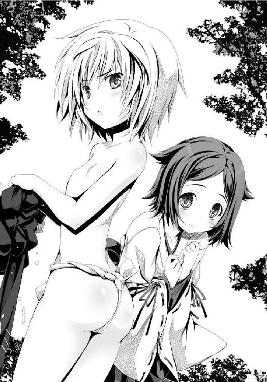
「おいおい。男が苦手と言いつつ、そんなエロい姿を俺に見せるのは平気なのかよ。お尻の割れ目が見えそうだぜ？」
「ふんどしは忍びの魂でござる。いやらちい視線で見るほうが心が汚れているのでござる」
男が苦手なのか鈍感なのかよくわかんねーな五右衛門は、でも五右衛門が生きててよかった！ と良晴は新鮮な空気を肺いっぱいに吸い込んでようやく一安心。
周囲を見渡してみた。神秘的な森、神聖な泉、美しい水、咲き誇る花々、澄んだ空気──美しい場所だな、と良晴は感嘆した。
「待てよ？ 迷子になったわけか、俺たちは。追っ手は振り切れたが、小田原城の場所もわからなければ信奈と泊まっていた旅籠の位置もわからない。さて、どうする？」
「二人を助けてくれたのは、この子でござる。この子に礼を言って、そして道案内をしてもらうでござる」
「えっ？ この子って......誰？」
五右衛門の背後に隠れていた幼い童が、ぴょこっ、と照れくさそうに顔を覗かせた。
まだ幼くて髪は禿なのに、なかなか立派な巫女姿だった。
伊勢平定のために巫女になりおおせているとはいえ根は忍びの姫で邪悪かつわがままな滝川一益とは正反対、高貴かつ純真そうな、瞳の大きい幼女だった。
「きみが、俺たちを助けてくれたのか？」
「......あい」
幼い巫女がはずかしそうに、こくり、と小さくうなずく。
「か、かわいい子じゃねーか。俺としたことがお持ち帰りしたくなっちまったぜ」
「にんにん。かわいいでござる。お嬢ちゃん、名は何というでござるか？ 拙者は蜂須賀ぎょえもん、こちらのサルは......」
「......しろう」
「お嬢ちゃんの名前は、四郎、でござるか」
「ありがとうな！ 人間いつかは死ぬにしても、ここで死んだら俺は悔いだらけ、後世に悪評しか残らねーところだったぜ！ なにかお礼をしたいけど、二人とも手ぶらなんだよなぁ」
「忍びの殺し道具がいくつか残っているでござるよ」
「五右衛門。殺伐とした道具をあどけない巫女ちゃんに渡すんじゃないぞ」
「......いい。いらない」
ぽっ......と頰を赤らめながら、幼い巫女がおずおずと返事をした。
「いい子でござるな」
「海賊を率いるエセ巫女だったり朱槍で突いてきたり金的を蹴ってきたり火炎弾で自爆しようとする邪悪幼女が多いこの戦国の世では、貴重な存在だな。やまと御所の姫巫女さまを思いだすなあ」
「えっ？ 相良氏、あのお方のお姿を見たことがあるでござるか？」
「あーいや、その話は置いておいて。四郎ちゃんは、このへんに暮らしてるの？ 俺たちは迷子なんだ。人里に出られれば助かるんだけどな。道はわかる？」
「......あい」
なんていい子なんだ。良晴は感激した。妹のねねも、これくらい素直な幼女だったら俺はどれだけ楽できるか。ここまで純朴な子じゃなくてもいい、せめておみやげの食べ物をぜんぶみそ味にしようとする、あの尾張人特有の悪癖さえ改めてくれればそれでいいのに。
「四郎どのは、土左衛門になっていた相良氏を気に入ったらしいでござる。火をおこすのをてつだってくれまちた」
「そうなのか。ありがとう。俺ってつくづく、みんなに生かされているなあ......戦国時代の人々に感謝！」
「拙者にも感謝するでござる。なにしろ、汚れを知らぬ乙女の唇を何度も何度も......あうううっ......うっかりおもいだちてちまったでござる！ きゅう」
「五右衛門がまた失神したああっ!? おーい、五右衛門っ？」
「......こっち、こっち」
いきなり目をまわして倒れてしまった五右衛門に「ふんどし一丁という姿のままじゃかわいそーだな」と忍び装束を羽織らせてから、良晴は五右衛門をおんぶして四郎と名乗る幼い巫女のあとを歩きはじめた。
「四郎ちゃんはこのあたりで暮らしている子なの？」
「......ちがう。でもこのもりはふるさとににているから、すき......」
「ふるさとはどこなんだい？」
「......すわ」
「諏訪、かあ。諏訪といえば信濃有数の観光地だ。東国における巫女さんの本場らしーな、あそこは」
「あい」
四郎が「て、て」と小さな手をのばしてきたので、良晴はにぎってあげた。
「......ぽっ」
「照れてる。うーん。なんて素直な子なんだ。心が洗われる。もう、かしましいお年頃の女の子に囲まれて命を狙われる修羅場はこりごりだ......俺もこのまま幼い子だけをまわりに集めてひっそりと平和に暮らしてえ......はっ？ お、俺はロリコンじゃねえぜっ？」
深い森の中をすたすたと歩く四郎に案内された先は──。
緑に覆われた、小さな天然の露天温泉だった。
しかも、先客がいた。
「おや？ お前は、相良良晴ではないか。またしてもあたしの入浴姿を覗きに来たのか？ あきれた奴だな」
半身浴を満喫していた先客の一人は──甲斐の虎、戦国最強の座を上杉謙信と激しく奪い合っている武田信玄だった！
「あれええぇっ、勝千代ちゃんっ!? どうしてこんなところに？」
「ちっ。なんだ、あたしの入浴姿を求めてやってきたんじゃなかったのか。つまらんな」
「あ、相変わらず、すごいプロポーションだな......む、胸ぐらい、隠してほしいんだけど。ごくり」
「......ほう。四郎がなついているのか。さすがは人たらしだな」
信玄が、良晴の隣に四郎の姿を見つけてふふっと顔をほころばせた。
「この子、勝千代ちゃんの家来なの？」
「妹の四郎勝頼だ」
「あい」
「ええええっ？ それじゃあ......この子が、未来の武田勝頼っ？」
武田勝頼といえば、武田信玄亡きあと、武田家の当主の座を継いだ悲劇の武将である。
諏訪氏は信濃の諏訪神社の大祝（神官）として地元では絶対的に崇拝されてきた高貴な家柄で、神の血をひく古い一族。
信玄の説明によれば、かつて信玄が信濃に侵攻した際にこの諏訪氏を滅ぼしたのだが、その際、諏訪氏直系の血をひく幼い巫女・四郎勝頼があまりにも愛らしかったので自分の義理の妹としたのだという。
「なるほどなあ。勝千代ちゃんって、子供に優しいんだな」
「ふふ。かわいい女の子を集めるのが好きだからな。おいで、四郎。姉の膝の上に座って一緒に温まろう」
「あい」
そして......すっかり話の輪に入れずに温泉の片隅にぽつんと孤立している先客が、もう一人。
「何なのっ？ 誰なのこの男はっ？ 痴漢よ、覗き魔よ！ どうして武田信玄は平然としているのっ？ だから小田原城の外には出たくなかったのよっ！ 帰らせて！」
と平らな胸を手ぬぐいで隠しながら金切り声で叫んでいた。
「そうだ勝千代ちゃん。隣にいる、胸の薄い女の子は誰？」
「胸の話はやめなさいっ！ 誰っ？ 誰なのよお前はっ？ この私のあられもない入浴姿を覗き見しておきながら、胸が薄いの一言しか感想はないのっ？ 今すぐ成敗してやるから、土下座しなさいっ！」
「はははっ！ 相良良晴、教えてやろう。この胸の薄い女の名はな」
「胸の話はするなと言っているでしょう！」
「この女は小田原城主、北条氏康だ」
「えええええええっ!? 北条......氏康......といえば！」
あらこの小僧、私の名前を聞いて顔色を変えたわ。私は関東を治める北条家三代目当主で通称は「相模の獅子」、驚いて当然ね、と北条氏康が自慢の長い黒髪を櫛でときながら冷たい笑みを浮かべた。
やっと関東の女王としての余裕を取り戻したらしい。
しかし、良晴の口から出た言葉は。
「......北条氏康ってどんな武将だっけ。小田原城にずーっとひきこもっていた武将、ってイメージしか無いんだけど......」
戦国マニアを自称するにしては、うっすいものだった。
「ちょっとお前！ 失敬にもほどがあるじゃない！ 私にだって『河越夜戦』という有名な戦歴があるわよ！ お前、私を殺しに来た伊達の刺客ね、さては！ 風魔を呼ぶわよ！」
信玄が、かたわらに置いてある鈴に手をのばそうとした北条氏康の手をつかんだ。
氏康は常に、鈴を持ち歩いている。
この鈴をちりちりと鳴らせば、関東最強の忍び軍団・風魔のものどもがたちまち馳せ参じることになっているのだ。
「まあ待て、相模の洗濯板。この相良良晴は織田信奈の家臣だ。伊達の刺客ではない」
「相模の獅子、よ！ 信玄、あなたもどうしても死にたいみたいね」
「ちょっと待ってくれ。どうして小田原城に籠城しているはずの二人が、箱根山の温泉にいるんだよ？」
良晴にはわけがわからない。奥州の軍勢に包囲されている小田原城を放置していてだいじょうぶなのだろうか？
「私は絶対に小田原城から出たくないと抵抗したのよ！ それなのに、この女が無理やり私を連れて来たのよ！ こんなことになるんだったら来るんじゃなかったわ！」
「言っただろう。あたしは籠城が苦手なんだ。時々温泉に入らないと気がヘンになりそうになるんだ」
「あらそう。私は籠城が大好きなのよ。小田原城の本丸にこもって美味しい鯛めしをいただきながら、広大な小田原城の外郭を取り囲んでいるうちに飢えはじめ士気が落ちていく敵兵どものマヌケ面を眺めているのがなによりも幸せなのよ。実際問題、上杉謙信もあなたも小田原城を落とせなかったでしょう」
「ハッ。最初から籠城しか頭になくて戦うつもりがない相模の洗濯板が相手じゃ真剣に戦う意欲が続かないのさ。謙信もあたしも正々堂々の合戦が好きだからな」
「あなたたちはただの戦バカだわ」
武田信玄と北条氏康は、今川義元を巻き込んで「三国同盟」を結び、越後から襲来する上杉謙信に対抗してきた盟友関係にある。
だが、今川義元が桶狭間で信奈に降参するやいなや、信玄は迷わず義元の本拠地・駿河をさくっと奪い取った。
信玄はいずれ上洛作戦を決行する時のために、駿河の海そして水軍がほしかったのだ。
それで一時、「駿河を独り占めしないでちょうだい」と怒った氏康と揉めて両者が合戦に至った時期もあった。
しかし今は、なおも「関東管領」として関東に出兵を繰り返す上杉謙信にくわえて、奥州の覇者・伊達政宗という新たな強敵までが出現している。
そもそも氏康は初代・北条早雲以来の「中央政権から独立した関東の王」になるという野望を抱いていて、対する信玄は上洛して京を支配し天下人になるという悲願を持っている。
もともと利害が一致する二人は、だから仲直りして再び盟友になったというわけだが......。
「いいこと。胸は大きいほうがいいだなんて、南蛮人が持ち込んだ邪悪な思想だわ！ 小さいほうが美しいに決まっているでしょう？ この日ノ本では今までずっとそうだったわ！ 最近の男どもがおかしいのよ。胸が大きいほうがいいだなんて......俗物の戯言だわ！」
「負け惜しみを言うな。さっきから相良良晴の視線はあたしの胸に釘づけで、お前の胸には一瞥もくれない。それで勝負はついているだろう」
「あなた......伊達政宗を追い払ったら、必ず殺すから」
性格が合わないのか、胸のサイズが違いすぎることが決定的な両者不和の原因になっているのか、二人はとにかく口げんかばかりしているようだった。
「良晴、せっかく来たのだからお前も温泉に入っていけ。あたしに用事があるのだろう？」
「あ、うん。俺は信奈の使者として勝千代ちゃんに会いに来たんだけど......その信奈が......はぁ......どうしようかな」
「ほう。主君と不和なのか？ ちょうどいい。実はあたしもお前に大切な用事があったんだ。この洗濯板の籠城愛好家のおかげで小田原から動けずにいらいらしていたが、お前のほうからこうして飛び込んできてくれたとは。これも天命というやつだろう。ははっ」
「勝千代ちゃんが、俺ごときに用事があるって？ どういうことだよ？」
まだ「うにゅう」とのびている五右衛門の忍び装束を脱がせて温泉に浸からせながら、良晴が首をひねった。
（最近、幼女の服を脱がせる手際がうまくなってきている気がする。やはり俺、ロリコンの病を発病したのか。あるいはもともとロリコンで、ついに覚醒してしまったのか）
と、ちょっと悩みはじめている。
良晴はそれからこっそり、信玄と氏康に見られないように草むらに隠れて自分の服を脱いで、「し、失礼します」と温泉の隅っこに浸かった。
「ほんとうに入ってくるなんて、いやらしい男！ 信じられない」
北条氏康が今にも頭の血管が切れそうなくらいにおろおろと照れまくっているので、ついつい良晴も照れてしまう。
胸は五右衛門なみだけど、こうして見ると氏康は京人形のように端整で芸術品ともいえる顔立ちの持ち主だったし、長い黒髪のつややかなことといったらまるで平安絵巻に登場する貴族の美女のようだった。
「ちょっと。お湯が汚れるじゃないの。やめてよ、入らないでよ！ 私の珠のような肌の毛穴から、お前の汚い男汁が浸透してきちゃうじゃないの！ いえっ、私の美しい絹の肌には毛穴なんてないけれど！」
「だ、だって勝千代ちゃんが入れって......で、どういう用事なのかな？」
信玄がお湯の中で腕組みしながら、にやり、と頰を崩した。
そして、「もう最悪だわ」と顔を覆っている氏康を無視して、ドーンと豪快に叫んだ。
「どうだ相良良晴！ わが武田家の、種馬にならないか！」
良晴は最初何を言われているのか、まるっきりわからなかった。
「た、たねうまああああっ!?」
「四郎からも、こいつに頼んであげてくれ」
「あい。さがらよしはる、たけだけの、たねうまになってたもれ」
幼くて純真な四郎にぺこりと頭を下げられると、「ははああーっ！ 承知いたしました！ この相良良晴、武田家の種馬として生涯忠誠を尽くしまする～！」となぜか土下座しながら叫びたくなってしまう。
諏訪の巫女・四郎勝頼の持つ魅力というか魔力というか。
だが年若い良晴のロリコン力は、まだ、山本勘助レベルにまでは上昇していなかった。
ぎりぎりのところで、こらえた。
「ちょっと待ってくれ。意味がわからねーんだけど、種馬ってなんだよ？ 馬車馬のように働けって言うのならわかるけどさ」
わかんないのか？ と信玄が不思議そうに良晴を見つめる。
「知っての通り、武田家の軍師、勘助が死んだ。勘助は生前、『織田軍の中に天命を動かす者がいる』、と言っていた。それはどう考えても未来から来た相良良晴、お前のことだ」
「......それと種馬とどういう関係が？」
「あたしには勘助の後継ぎが必要なのだ。というわけでお前が武田家の軍師になれ」
「無理だよ。俺は織田軍の武将だぜ？」
「ケチの信奈はお前を文字通り馬車馬のようにこきつかっているだろうが、あたしは気前がいい。報奨ははずむぞ」
「俺は軍略なんて知らないし！ 俺の手柄と言われているものは、実際には五右衛門や半兵衛ちゃんたちの手柄なんだよ！」
「お前は未来を知っていればそれでいい。軍略はあたしが自分で考える。だがそれだけで終わりではないぞ。次代の武田家のためにわが武田家の重臣とお前に子作りをさせ、その子に軍師としての英才教育をほどこし、二代目相良良晴として育成したい。あたしは慎重な性格だからな。自分が倒れたあとのことも完璧に準備しておきたいのだ。幼い妹の四郎のためにもな......つまりお前は武田家重臣の種馬となるのだ！」
「いまいち何を言っているのかよくわからないんですが......」
信玄が「まどろっこしいなあ！」と頭をかきながら声をはりあげた。
「甲斐の田舎育ちのあたしが天下を盗るには、広く世界を見通せる未来から来た人間が必要なのだ！ つまりお前だ！ そして英才教育をほどこされ武田家重臣の一族となったお前の子は戦国の世に完璧に適応した最強軍師となり、のちのちの武田家を支えるのだ！」
「武田の重臣の家系にサルの血を入れるなんて、酔狂な女ね。甲斐の山猿とサルもの同士、気が合うのかしら」
氏康はしらっとした顔で良晴をにらみながら毒づいている。
「私は早く小田原城に帰りたいんだけど......こんな頭の悪そうなサルに軍師なんかつとまるわけがないでしょう」
「まあ待て、今あたしは相良良晴を口説いているところだ。すぐに片がつく」
困ったなー......最近の俺、どんどん「女難の相」が悪化してるな......と良晴は焦った。
何度も勧誘を断ったが、軍師という存在は実に重要なのだ！ と信玄は譲らない。
「あの蹴鞠と押し出し以外に何のとりえもない今川義元が駿河を強国にして上洛軍を興せたのも、太原雪斎という名軍師が駿河にいたからだ。惜しいことに桶狭間の時にはすでに病没していたがな。わが武田家にも山本勘助がいた。軍師抜きでやっていける戦国大名は、毘沙門天憑きの上杉謙信と、困ったら小田原城に籠城して敵から逃げ隠れすることですべてをやりすごしてきた北条氏康ぐらいだろうな」
氏康がまた文句を言いはじめたが、信玄は話を続けた。
あたしは老境の勘助に二代目を作らせたいとつね日頃思っていたのだが、あの男は四郎に夢中でついに妻をめとらなかった。
そのため、二代目山本勘助を育成することはできなかった。
あたしの好物は土地の開墾、治水、町作り──そして人材の育成なのだ！
武将の育成には成功し、うら若き武田四天王が勢揃いした！
だが、勘助にかわる軍師がいない！
「どうだ！ 武田四天王のうち、好きな姫武将をお前にやるぞ！ みんなあたしが選び抜いたとびきりの美少女揃いだぞ？ 言うまでもなく、全員生娘だ」
「あ、いや、その、勝千代ちゃん......俺は今、女難の相発動中で命の危機にさらされているところで......俺の話も聞いてくれよ！ 信奈からの使者として来たと言ってるだろー！」
「あたしの話が先だ！ 四天王！ こそこそ覗き見していないで、さっさと温泉に入ってこい！ もちろん一糸まとわぬ姿でだぞ！ 良晴に、この場で品定めをさせることにする！」
「「「「えええええええ」」」」
茂みの奥から、乙女たちのあわてふためく悲鳴が聞こえてきた......。
武田四天王だった。
相良良晴と五右衛門が死んだと確信し、大急ぎで信玄のもとへかけつけた四人は、なんと信玄自らが良晴と一緒に入浴して楽しげに話している姿を見てしまって出るに出られなくなり、（親しいお知り合いでしょうか）（信玄さまに男の親友がいたなんて初耳だわ。まさか恋人？ にしては下品な顔つきの男だわ）（......どうしよう......）（信玄さまのお友達を殺そうとしたことがバレたらお仕置きされます。逃げましょう）と協議中だったのだ。
そこに、信玄から無理やりな命令がくだされたのだ。
「お前ら全員裸になって良晴の前に並べ、種馬による品定めをさせる！」
さすがは豪快な武田信玄、細かいことにはこだわらない器の大きな姫大名であった。
ここまで大げさにやれば良晴も断れなくなるだろう、との計算もある。
良晴が「ちょっと待って」と止めるまもなく、裸になった四天王がずらりと良晴の前にほんとうに並んで立ったから、良晴はもう温泉から出られなくなってしまった。
「「「「うううう、はずかしい......」」」」
温泉にあらわれた四人の美少女、しかも全員が何も身につけていない！ 酒池肉林とはこのことだった。
「うわあああ！ お前ら、勝千代ちゃんに忠実すぎっ！ 少しは反抗しろよ！」
「「「「だって......信玄さまのご命令だから」」」」
「あたしの命令は絶対なのだ。そうしつけてある。さすがに男の面前に裸身をさらさせるのははじめてのことだがな......勘助は四郎以外の女の子にいっさい興味がなかったからなぁ」
「あい」
「筋金入りの変態紳士だったんだな、山本勘助」
氏康が「あわれね、武田家の家臣は。こんな山奥の温泉で裸にされてサルに品定めされるだなんて......あまりにも田舎臭くてにおってくるわ」と鼻をつまむ。
信玄は自慢の四天王を良晴に紹介できて、自信まんまん。
「このひまわりのように愛らしい娘っ子が、高坂昌信。あたしの自慢の姫武将だ！ わが自慢の『風林火山』四天王のうち、『風』を担当する高速騎馬部隊を率いる。こいつはヤキモチ焼きで、他の女の子と添い寝するとすぐにぷりぷり怒って手紙であたしを責めてくるのだぞ。どうだ、若くてみずみずしくて健康美にあふれた身体だろう」
「ひいいい。このサルに裸を見られてしまう上に、四分の一の確率でこいつに種付けされてしまうなんて......逃げましょう！」
高坂昌信はすでに逃げることしか頭にないが、それでも身体が硬直して逃げられないのが信玄のカリスマの強烈さというもの。
良晴は、どぎまぎしながら、「は、はあ。か、かわいいですね。げ、元気そうですね。お、おっぱいも張りがあってつんと尖っていて若さゆえの魅力に溢れていますね」と意味不明の論評を語った。
視線がついつい、真っ赤になって半泣きになっている高坂昌信の身体に釘づけになってしまうのは「女難の相」による厄災をまるで反省していない良晴の性というやつだろうか。
「どうだ良晴。高坂の種馬になるか？」
「ひいいん！ 選ばないで、お願い！ いやああ～あんまり見ないで～！」
「......す、すっげぇかわいいけど、ちょっと奥さんにするには幼すぎると思います。こ、子作りをするならば、あと二年ほど発育を待ったほうがいいんじゃないかなあと。はい」
高坂昌信は「助かったぁ」と天に感謝しながらも、なんとなく負けた気分になって「乙女のあられもない姿を見ていながらよくも......相良良晴、必ず殺します」と良晴に恨みを抱いた！
良晴の女難の相レベルが、さらにアップした！
「さすがは天命を動かす男、なかなか女の子の好みにもこだわる奴だな。じゃあ次だ！ 山県昌景！ 『風林火山』のうち、苛烈に敵を攻め立てる『火』を担当する猛将だ。この子は身体はちびっこいが、顔かたちの見目麗しさは最高だぞ！ 抱き枕にするにちょうどいい！」
高貴な山県昌景にとっては悪夢のような恥辱だが、主君の命令とあっては逆らえない。
相良良晴にむしろ見せつけるように、ちんまりとした胸を「ふんっ！」と反らしてあくまでも高貴に華麗にいばり続けるのは誇り高き山県昌景としての最後の抵抗か。
大いばりしてつま先立ちしているが、それでも身体はちんまりとしていて、雛人形みたいだった。その傷ひとつない白い肌は抜群にきれいといえばきれいだが、この小柄さは良晴よりもむしろ勘助好みの範疇だった。
「わ、わたくしが山県昌景。し、四天王最強の姫武将よ......わたくしは今、はずかしいし怖くもあるけれど、名門山県家の当主として逃げも隠れもしないわ......な、泣いていないことよ！ うっく、うっく」
「どうだ。山県なら文句なかろう？」
なんて勝ち気で高貴な姫なんだ！ それにしても身体がちっちゃい！ 俺が守ってあげてえ！ 心がときめいた良晴は一瞬「はい。山県さんの種馬になります、俺」と返事しかけたが、そこを最後の理性がぎりぎりのところで食い止めた。
「さ、最高の奥さん候補だと思いますが......ただ......残念ながら、ロリコンじゃないんで俺。もう少し身体が大きい子のほうがいいなあ。涙をのんで種馬は辞退させていただきます」
「あなた、覚えてらっしゃい！ 乙女にこれほどの生き恥をかかせてのうのうとお湯に浸かっていられるなんて、いいご身分ね！ 必ず殺すわ、相良良晴！」
またしても女難の相レベルがアップ。良晴の稼ぐヘイト値は青天井状態だ。
「じゃ、馬場美濃はどうだ？ 沈着で剛気、常に冷静な手堅い武将で『山』を担当している。かなりおっとりしているが、とことん尽くす性格だぞ！ 腰も丸くて、安産型だ！」
「......うー......ぜんぶ、見られている......お、男に......も、もう、ここでお嫁に行けなかったら......どこにも嫁げない......」
意外にも、四天王の中でいちばんはずかしがって大粒の涙を流しているのが、日頃はぼんやりしている馬場信房だった。
見るのは気の毒と思いつつも、良晴は馬場信房の完璧な八頭身ボディをほれぼれと観賞してしまう。
身長は高いが、手足は細長くて腰はくびれていて、まるでファッション雑誌に登場するモデルのようだった。
もちろん顔のほうもモデル系の美人だ。普段はぼーっとしていて表情がない馬場信房だが、今はめずらしく感情をあらわにして大照れに照れてぽろぽろ泣いているところが、またいかにも純朴な乙女らしくて良晴を惑わせる。
「種馬と馬場、名前的にもゴロがいいだろう良晴。こいつは奥手なので、放っておくと誰とも祝言をあげられない。もらってやってくれるか？」
「い、いや、ダメだ！」
「はあ？ いいかげん、正直になれ。断る理由なんかもう何も思いつかないんだろう、お前？」
たしかに、この三人の誰が嫁になったって何の文句もない。全員、ハイレベルすぎた。
戦国時代にすでにハーレムの王として君臨しているすごい英雄がいたんだ！ その名は武田信玄！ って、勝千代ちゃんも女の子なのになーと良晴は首をひねった。
とにかく、断る言い訳だ。それも、相手に「殺す」と恨まれない、うまい言い訳を考えないと！
「あ、姉さん女房はぜんぜんアリだと思うし高身長の美少女ってところも俺のストライクゾーンだけど、うぶすぎて扱いに困りそうだ！ 俺はどっちかというと、高圧的な女の子のお尻の下にしかれてるほうが気が楽なんだよ！」
「良晴......お前、あたしの想像以上におかしな奴だったんだな......軍師とは相当な変人にしかできない職業なのか？」
信玄はあきれ顔。よりすぐりの美少女を集めたのにアテが外れた......と悔しそうだ。
「......こんな子供に、うぶだと切り捨てられて、もうお嫁にもいけない......相良良晴......必ず金槌で頭蓋を砕いて殺す......」
「結局、恨みを買っちまったよ!!」
女心がわかっていないわねこのサルは、と北条氏康が鼻をつまみながら冷笑を浮かべた。
「お前などにほれる女なんてこの日ノ本には一人もいないけど、清らかな裸身をはじめて男の視線にさらしておきながら袖にされたら恨むに決まっているでしょう。サル知恵と呼べるほどの知恵すらあなたにはないのね。それとも、この私がお好みかしら？ たしかに私ならば、サルをお尻の下にしいて毎日鞭でいじめてあげるわよ。でも、お前を種馬になんて絶対にしないわ、お断りよ！」
「......北条氏康さんかぁ。黒髪が美しくて素敵なお姉さんだけど......胸が小さいのが惜しいなぁ」
「..................」
どうして良晴、お前は思ったことをそのまま口にしてしまうのか。
正直者は、時として災いばかりを呼び込むことになる。
氏康の良晴への殺意は、この時、完全に固まったのであった。
良晴を氷のような冷たい視線でにらみながら、風魔を呼び出す鈴に再びそっと手をのばす。
「困ったな。四天王はこれで全員出尽くしたぞ......良晴には武田家の種馬になってもらわなければ困るのだが」
「信玄さまー！ ここにもう一人いますよー！ 内藤修理をお忘れですかー！」
「勝千代ちゃん？ そこにもう一人、全裸の女の子が手をぶんぶん振り回して猛アピールしているんだけど？」
「ああ。内藤か。美少女だけどいまいち売りがないというか個性がないし、無理だろ。戦場にて目立たざること林の如く、徐かなること林の如し、というわけで『林』を担当している」
「まあ、たしかにキャラが立ってないかもなあ。身長、プロポーション、顔におっぱいにお尻、すべて美しいけどなんというか......これというセールスポイントがない。アイドルグループの隅っこにいてはじめて輝くタイプだなぁ。センターを任せるのは無理だ」
「うわーん！ 言葉の意味はよくわかりませんけど、サルにまでいつもと同じ扱いを！ 相良良晴、必ず殺しますからねー！」
結局、良晴は四天王全員プラス北条氏康から恨みを買ってしまった。
ことに、胸を理由にダメだしされた氏康の殺意は真剣そのものであり、今ここで風魔を呼び出されたらこの場で良晴は瞬殺される運命なのだが、良晴は四天王の全裸一列横隊に惑わされていてまだ気づいていない。
「とにかく勝千代ちゃん。俺は武田家の軍師にはなれないから」
さすがは相良良晴、勘助が見込んだ男だけのことはある！ 英雄、色を好むというが、お前はここまで接待されてまだ要求をつりあげるか！ 桁外れだな！ と信玄はいよいよ良晴に執着を見せる。
いったいどうしてこんな小僧をほしがるのかしら？ 信玄は男に興味がなかったはずなのに今日はどうかしているわ、生まれて以来今日まで続いてきた男日照りがあまりに長すぎてついに狂ったのかしら？ と北条氏康がいちいち嫌みを言うが、信玄はとにかく勘助の後釜は良晴しかいないと決めてかかっているようだった。
いや、もしかしたら良晴を亡き勘助以上の存在として考えているのかもしれない......ある意味において。
ここまでお膳立てしたのに交渉がうまくまとまらない信玄は、焦りはじめていた。
膝の上に抱っこした四郎勝頼の頭をなでながら、ついに大幅な譲歩をはじめたのだ。
「そ、そうか。嫁が一人では種馬としての活躍が限られてしまって不足だというのだな！ じゃ、じゃあ、四人全員をお前の嫁にやろう！ これでどうだ！」
「「「「信玄さまあああ～!! わたしたちはバナナじゃありません!!」」」」
戦国時代の日本にもすでに南蛮貿易経由でバナナがあったんだ......しかも、すでに叩き売られていたんだ......と知った良晴はちょっとかしこくなった。
「いいから四人とも、温泉に入ったほうがいいよ。そのまま裸んぼうで立ってたら風邪ひくし......お、俺も視線のやり場に困るしさ」
「「「「さんざん見ておいて今さら何を!!」」」」
四天王が殺意に満ちた視線をいっせいに良晴へ浴びせながら、裸身を隠すために次々とお湯に浸かった。
五右衛門も「うにゅう」とうなりながらお湯に浮いているし、一見、良晴がハーレム風呂の主になっているかのように見えなくもないが、四天王は全員良晴を殺す気まんまんだし、氏康は「よくも私の胸を愚弄したわねこの南蛮かぶれの腐った下郎が」と敵意をむきだしているし、信玄の申し出を断ったら首が飛びそうだしで、まさに「ドキッ！ おっぱいだらけの温泉大会」の主役として招かれているはずの良晴にしてみればこれほどの生き地獄もない。
「なんと。四天王全員の種馬になってもまだお前は不足だというのか......ま、まさに、桁外れの英傑だな！ ますますお前がほしくなったぞ！」
「勝千代ちゃん、誤解だから。そうじゃないんだって......あの......その」
相手は織田家最大のライバルの一人、武田信玄である。まさか「俺は信奈一筋だから！」などとは言いだせない良晴は、返答に窮してきた。
もう、どう言えばいいのか、わからない。
顔を赤くしたり青くしたりしながら、うつむいたりお湯に潜ったり口笛を吹いたり、明らかに挙動不審になってきた。
「お、お、俺が恋心を抱いている女の子は......その......も、もう、決まっていて......だ、だからその、う、浮気はできねーんだ......た、ただ、その子は俺の手の届かないところにいるから......えっと......つまりだ......」
良晴は生来、噓をつくのが苦手である。
もうほとんど白状してしまっているも同然の言葉を、ついつい漏らしてしまっていた。
むろん自分では、一応ごまかして相手が誰だかわからないように言っているつもりだ。
勝千代ちゃんが、京のお公家さんの高貴な姫さまあたりを連想してくれれば......と祈るような気持ちでたどたどしく言い訳を続ける。
だが、悲しいかな武田信玄は京にのぼった経験がない。
だから信玄は、重大な勘違いをした。
かああああっ！ と顔を真っ赤にすると同時に、思わず四郎を抱き寄せて自分の胸が良晴に見えないように完全に隠した。
「......てっ、手の届かないところにいる女の子に惚れている、だと......ま、まさか......そ、そ、それはつまり、こ、このあたしのことなのかっ？ お前、こともあろうにこの甲斐の虎・武田信玄に惚れていると告白しているのかっ？ なんという大胆不敵な奴っ!?」
「「「「ええええっ、このサルが信玄さまにっ!?」」」」
信玄さま命！ の四天王が大騒ぎ。
「む、む、無理だっ！ あたしは甲斐源氏の嫡流、名門中の名門大名だぞっ？ いくら天運を動かす者でも、身分が違いすぎる！ お前を婿にはできない！」
「あの......勝千代ちゃん？ どうも何か重大な勘違いを......」
「......だ、だが、お前を、あたしの種馬にすることならできるがな......そ、そうだ。しゅ、祝言をあげなければすむことだ。ここにいる四天王全員とお前との間で盛大に祝言をあげてしまえば、まさか誰もあたしとお前の仲を疑うまい......ご、五人の妻、しかもこのあたし自身までくれてやると言えば、お前も断れまい。ど、どうだ！」
「「「「信玄さまあああ！ お考え直しを!!!!」」」」
四天王が涙の猛抗議。
なにしろ全員が信玄ＬＯＶＥなのだ。
こんなヘンな男にだけは信玄さまを取られたくない！ と必死で抗議してきた。
「武田家が天下を盗るためだぞっ！ あ、あ、あたしが五人妻体制に耐えると言ってるんだから、お前たちも耐えろっ！」
「「「「わたしたちは構いませんっ、でもせめて信玄さまだけは清らかな身体でいてください!!!!」」」」
「いーやっ！ 勘助を独身のまま死なせたことをあたしはずっと後悔している！ 次の軍師、相良良晴には二代目が必要なのだっ！ あ、あ、あたし自身がその子を産んでもいっこうにかまわんっ！ お前らのうちの誰かが産んだことにすればバレやしないっ！」
どうしてそんな話になるんだ......俺は呪われている......とうろたえた良晴はお湯の中でおぼれ死にしそうになった。
これがマンガなら、この場に信奈と十兵衛ちゃんがひょっこりあらわれて、俺の首は問答無用ですっ飛ぶところだろうなあ......なんて思っていたら。
「こんなところで武田家への寝返りの相談をしていたのね、サルっ！ そうなのね。あたしたちの猫耳冥土服接待じゃ不足だったのね。こともあろうに姫武将全員を裸にしてお風呂に入れて......この変態変態変態ッ!! 信じられないっ!!」
「武田家の重臣全員を手込めにして、さらには武田信玄本人まで孕ませようとは......女の子を次々とあやしの術にかけて好き勝手に弄ぶ先輩の鬼畜外道ぶりにはいいかげん堪忍袋の緒が切れたです！ もう何を言われても絶対に信用しないですっ！」
「おーい......ほんとうにあらわれたよ......五右衛門、そろそろ起きてくれ。ここから脱出しないと俺は死ぬ。間違いなく」
「うにゅ？ なんでござるか、この女の子だらけの露天風呂は？ しかも相良氏への尋常ならぬ殺気にみちているでごじゃる!?」
そうなのだ。
山中を走りまわって良晴をしつこく捜索していた信奈と光秀が、ついに良晴を発見したのだ。
しかも、考えられるうちで最悪のタイミングで。
温泉の周辺を警備していたはずの四天王がみんな信玄の命令で温泉に入っていたのだから、信奈と光秀がわいわいと騒がしい温泉に辿り着いたのは単なる偶然というわけでもない。むしろ、こうなったのは必然的な結果だった。
氏康は鈴を手にして風魔を呼ぶきっかけをはかってはいたが、まだ呼んでいなかったし。
「あー......」
「......うー」
武田信玄と織田信奈は、至近距離からお互いににらみ合い、完全に固まってしまった。
なにしろ、宿命のライバル同士である。
先の戦では、お互いに師であり父親的存在でもあった斎藤道三と山本勘助を失っている。
二人とも戦死ではなく病死だったために致命的な遺恨こそないが、お互いにいずれは決着をつけなければならない相手と見定めている。
しかも信玄はなんとも非常識な温泉接待を繰り広げて良晴を横取りしようとしていた！
「さ、さ、サルが女好きだからって、武田信玄！ あ、あ、あんた、い、いくらなんでも、これは......しゅ、羞恥心ってものはないのっ？」
「......あ、あたしには生来そういうものはあまりない。いや、なかった......たった今、相良良晴に求婚されるまではな......こほ、こほ」
「求婚ですってえええええっ!?」
信奈の怒りは頂点に。
誤解だ信奈、と弁明しようとした良晴の頭を踏みつけて、お湯の中にごぼごぼと沈めた。
一人だけこの修羅地獄の輪から外れていた北条氏康が、「甲斐の虎・武田信玄、関東の王・北条氏康、そして天下人を名乗る織田信奈。ずいぶんと豪華な面子が揃ったわね」と笑った。
「それにしても、この短気そうな女が織田信奈？ 噂通りの乱暴者ねぇ。隣の、おでこの広い娘は誰かしら？」
「信奈さまの片腕、明智十兵衛光秀ですぅ！ やまと御所から惟任日向守というありがたーい名前をいただいている土岐源氏の末裔ですぅ！ そっちこそ誰ですか！」
「私は相模の獅子、北条氏康よ。こんなところまでのこのこやってくるなんておバカな二人だわ。この場で殺してしまいましょう、信玄」
「外交の使者を斬ろうとは卑劣なりですぅ、相模の洗濯板！」
「......なんですって！ あなただってたいして大きくないでしょう！」
氏康は一瞬光秀に襲いかかろうとしたが、そこは籠城マニアである。
理性をすぐにフル回転させて、思いとどまった。
「そうだわ──このままここで武田家と織田家が相打ちになれば、関東平定のついでに天下まで転がり込むじゃないの。さあ、あなたたち。仇敵同士なのでしょう、さっさと殺し合いなさい。何が貴重なのかさっぱりわからないけどその下品なサルを......相良良晴とやらを奪い合うのよ。私は相良良晴とは無関係だからそろそろお湯からあがらせてもらうわね。小田原城に帰るわ」
北条氏康はさんざん信奈と信玄を焚きつけておいて、一人で温泉から出ようとした。
その手には、例の風魔を呼ぶ鈴がにぎりしめられている。
（あれは......あの鈴は。そして北条氏康のあの狐のようなあやしい目つきは！）
良晴はピンと直感した。
この温泉を警備している者は、武田家の武田四天王だけではないはずだ。当然、北条家の手の者も警備に参加しているはず──だとすれば、四天王が裸になって温泉に入っている今、武田信玄を守る者は不在。北条の手の者だけが温泉の周辺にいるはず。信奈のお供は、戦力にならない良晴を除けば光秀ただ一人。信玄も信奈もほとんど無防備な状態にいるというわけだ。こんなことはまず起こらない。希有な事態だ。
そして今、氏康は一人でさっさと温泉から逃げようとしている。
（これはつまり、予想外の信奈の登場を氏康が「武田・織田をまとめて始末する好機」と見てとっさに両者の暗殺を思いついたことを意味している！ 氏康は超やべえ！ 半兵衛ちゃんが言っていた通りだ！）
しかも、両者相打ちという形で始末すれば、北条は同盟者の信玄を暗殺したという汚名を着ずにすむというわけだ。
「その鈴を鳴らすと、風魔があらわれるというしかけだったな！ 武田信玄と織田信奈の両者が相打ちになった、という形でこの場にいる全員を始末するつもりか！」
図星を指された氏康はあわてて、お湯から出ると同時に足をすべらせてしまった。
「ちょっと。無礼者、触らないでっ！」
必死になった良晴は血相を変え、裸のままの氏康に飛びついた。
「自分だけ漁夫の利を得ようと......そうはいくかっ！」
良晴が信奈たちを守るために裸の氏康のお尻に抱きついてけんめいに押しとどめようとしたので、事態はさらに混沌と化した。
細身の氏康は、抵抗むなしく良晴にうつぶせの姿勢で押し倒されてしまった。風魔を呼ぶ鈴を鳴らそうとするが、その鈴も良晴に強引に奪い取られた。
「やめなさい、放しなさいっ！ 穢れるっ、私の身体がサルに穢されるっ......お尻を触らないでっ、見ないで、いやああっ！」
「誰が放すか！ 暗殺なんて絶対にさせないからなっ！」
「帰して、小田原城に帰してええ！ いやああ！ やっぱりお城から出るんじゃなかったわ！ 外の世界って怖いわ！ 発情したサルに襲われるだなんてえ！」
「ちょっとサル！ あんた、あたしと信玄の目の前でよりにもよって北条氏康に襲いかかるなんて......これじゃもう交渉なんてぶちこわしじゃない！ いったい何考えてるのよこのスケベ────!!」
「相良先輩、外道死すべしです！ 見境がなさすぎます、天誅です！」
「ちっ！ なんてことだ、いきなり北条氏康に発情して襲いかかるとは、相良良晴は器がでかいにもほどがある！ このあたしが驚きのあまり硬直してしまうとはな......いいか四天王！ なにがなんでも良晴を氏康にだけは渡すな！ 良晴が氏康を孕ませる前に、ひっぺがせ！ 無理なら、いっそ良晴を斬り捨てろ！」
「「「「承知つかまつった!!!!」」」」
「違う！ この女はこの場でどさくさまぎれにみんなを暗殺するつもりなんだ、一瞬でそんな策を閃くとんでもない食わせ物なんだ！ 俺はただ、みんなを守ろうとして......！」
相良良晴の「女難の相」が人生最初のピークを迎えたのは、この瞬間だったと言っていい。
武田信玄とその四天王。
織田信奈と明智光秀。
北条氏康。
戦国の世に名を馳せる天下の英傑たちが、揃いも揃って殺意を持って良晴に襲いかかってきたのだから（氏康は襲われているのだけど）。
「うー。だめー」
四郎勝頼が良晴に抱きついてかばってくれたので、かろうじてまだ良晴は生きているが、
「見て十兵衛！ サルがとうとう露璃魂まで発病しているわ！」
「幼女まで洗脳する技術の持ち主ですか先輩は！ どこまで外道なのですか！」
「......まさかお前の真の狙いは四郎だったのかっ？ 勘助の上を行く変態だな！」
信奈あやうし！ 良晴はもう必死である。氏康が裸だということも忘れて、けんめいに氏康の動きを封じようと暴れた。そして──見てしまった。
いかにも大人っぽいクールな美少女である氏康のお尻に......幼いお子さまのお尻に時々見られる青いあざ、いわゆる「蒙古斑」が残っているということに。
「......見たわね。私の秘密を」
それまで防戦一方で目に涙まで浮かべてうろたえていた氏康が、この時、にわかに顔面蒼白となり、まるで悪魔のようなおぞましい表情になった。
そして、自分にタックルして抱きついている良晴にだけ聞こえる小声で──底冷えがするような怨念に満ちた声で、つぶやいた。
「相良良晴──絶対に見てはならない北条家の秘密を、見たわね......」
「えっ？ これって、そんなに重大な秘密だったの？」
「計画変更よ！ 相良良晴！ お前を最初に殺してやる、殺してやるわ！ 出て来なさい、風魔衆！ 私の絶対に知られてはならない秘密を知ったこのサルを今すぐ殺すの！」
「待てよ、おい！ これ以上この場を混乱させてどうすんだよ、待てっ落ち着け北条氏康！」
五右衛門が「もう、いつもの落ちてくる実の話を蒸し返すのもバカらしいでござる」とあきれ顔でつぶやいた。
北近江の山城、小谷城。
小丸に詰めていた朝倉義景は、越前より急報を得ていた。
「上杉謙信の軍勢が越後を出立し、越中・加賀を進軍中。越前に急行しております。精強な越後軍が、小谷城への後詰めにまもなく参ります」
土御門久脩の報告通りに、事態は進展していた。
今だ、今、虎御前山を攻めるしかない！ と朝倉義景はこの吉報を聞いて狂喜していた。
「防戦一方だった形勢を逆転する時は今をおいてないぞ！ 虎御前山から織田軍を追い払って、再び京へと兵を進める好機だ」
この時もお抱え絵師の長谷川等伯を呼びつけて平安王朝絵巻と織田信奈の艶やかな立ち姿を融和させた屛風絵を描かせていた義景だったが、「上杉謙信が動いた」という一報を知ると同時に重い腰をあげていた。
「さすがは等伯よ。屛風絵も風流だが、いよいよ生きた実物を余の館へ持ち帰ることができるのだな。素晴らしい。素晴らしいぞ」
少年陰陽師の土御門久脩を供に連れて、朝倉義景は本丸へと向かった。
小谷城の本丸には、浅井長政がいる。
長政は虎御前山のどこかにいるという津田信澄宛てに、この時も文を書いていた。
内容は、
（浅井家の当主・浅井長政と、あなたの妻・お市。ひとつの身体で二人ぶんの人生を生きることはできません。次にお目見えした時には、約束通り、どちらの人生を選ぶかを返答したいと思います。しかしいまだどちらも選べずにおります。できることならば、私自身が二人いればよかったのに。今、わが心は千々に乱れています）
と、おのが心の葛藤を訴えるものだった。
戦意はある。戦意はあるが、決断ができない。「お市」というもう一人の存在が長政の内面にいて、その「お市」は日に日に大きく強く育ちつつあった。
だが、このままあてのない籠城を続けていてはいずれ浅井家は織田家に滅ぼされる。
織田信奈は弟のために自分を助けたいだろう。
だが、それは不可能なのだ。
浅井家が織田家に対してしでかした裏切りは──たとえ長政の反対を押し切って父・久政がやったことだとしても──それほどに決定的で取り返しがつかぬことだったのだ。
そのことだけは、痛々しいほどに長政もまた理解していた。
しかし今の長政は、誰を責める気にもなれなかった。
結局は、自分自身が「浅井長政」と「お市」のどちらかを選び取る勇気を持てなかったことが、今日の事態を招いたのだ。
長政が惑ったために、誰一人、幸せになれなかった。
信澄を選ぶか、浅井家を、父と家臣団を選ぶか──ついにこの選択に答えが出せないまま、長政は今、織田家との最終決戦に臨まねばならなくなったのだ。
朝倉義景と土御門久脩が、本丸にかけつけてきて、「今すぐに全軍で虎御前山を急襲すべし」と進言してきたからだった。
義景は、まるで別人のように大汗をかき目を血走らせ、口をとがらせて長政に決断を迫った。
物の怪にでも憑かれているかのようだった。
「上杉謙信が越前へ後詰めに来てくれる！ 上杉謙信はこの小谷城を経由して一気に京へとのぼるつもりだ。だが上杉には宿敵の武田信玄がいる。小谷城での長期籠城は上杉軍には無理だ。謙信が到着する前に、われらは虎御前山から織田軍を蹴散らして京への道を開いておく必要がある！ これは時間との戦いだぞ！ 上杉謙信が参戦しているうちに織田家を滅ぼさねばならぬ！」
「なんと。あの越後の上杉謙信が......それでは、義姉上の運命は」
「案ずるな、織田信奈の命は決して取らせぬ。余が館に連れ帰るのだからな。思う存分戦われよ」
「......ついに、このようなことに......私は......」
「まあ、聞いておくれよ。ボクの策を」
土御門久脩は、いちど竹中半兵衛に陰陽師の術対決で完敗してしばらく姿を消していたはずだったが、いまやすっかり自信を取り戻したようだった。
「虎御前山が落ちないのは、知っての通り竹中半兵衛が奇門遁甲の術を山の周囲にほどこして迷路の陣を作っているからだよ。でも破る方法はある」
土御門久脩は、名門陰陽師の一族・土御門家の当主である。
この道には熟達していた。
「ボクの見たところ、虎御前山を取り巻く迷路は『石兵八陣』だね。石兵八陣には休・生・傷・杜・景・死・驚・開の八門の出入り口があるのだけれど、ボクたちが攻め入る際には杜門・死門の二つの門からしか入れないように巧妙に構築してある。この二つの門から攻め入る限り、陣を抜くことはできない。だが、隠されている生門・景門・開門のいずれかを発見してそこから突撃すれば、陣を抜くことが可能になるよ。この三つの門が八陣の弱点なんだ。織田軍はこの三つの門から出入りしているが、こちらには門の位置を悟らせないように巧妙に陣を設計しているんだよ」
そこで、どうやって三つの門を探し出すかだが──と朝倉義景が意見をはさんだ。
「それなら、宙を舞う式神を繰り出せばよかろう。空から探せばよい。陰陽師の得意分野だ」
「ふふ。それはできないんだ」
久脩が首を振る。
「なぜだ？ そういえば今回、余はまだ式神の群れを見ていないが」
「とある事情があってね。ボクは式神を召喚する力が落ちている......だがそれは竹中半兵衛も同じこと。せいぜい、前鬼と後鬼を出すのがせいいっぱいだろう。しかも前鬼の力は叡山での時とは比べものにならぬほど弱まっているよ」
「ほう。陰陽師にも力が出る時期と出ない時期があるのか？」
「ふふん。ボクの推測では、今の竹中半兵衛には無理押しがいちばん有効だよ。体力勝負だね。三日三晩、休むことなく陣を襲い続けて三つの門のうちのどれかを探し出すんだ。どれほどの犠牲が出てもかまわないよ」
「だがどの門が破れる門だと見分けられるのか？ 余には見分けがつかぬ」
「門さえ発見すれば〝気〟の流れで簡単にわかるさ。見つければただちにボクが全軍突撃の指示を出す。あの迷路の陣さえ突破すれば、虎御前山なんて小さな砦にすぎないからね──ここでどれほど兵士を損じても、まもなく越後兵が来る。虎御前山さえ落としてしまえば、畿内の国人や小大名はみな上杉謙信になびくだろう。そうなれば兵は勝手にどんどん増えるよ」
なにか陰陽道の世界に起きている秘密をにぎっているらしい久脩の笑顔はどこか謎めいていたが、勝利を信じていることだけはたしかだった。
朝倉義景が、長政に迫った。
「浅井長政。勝利条件は揃った。どうする」
「......」
「決断するのだ。余はこの戦にわが命と朝倉家のすべてを賭けた。長政、そなたはどうするのだ！ 武士ならば、潔く己の運命を自ら決めよ！」
「......攻めぬ、と言えばどうなる」
「むろん、人質として小丸に住んでいただいている浅井久政どのの首をいただく。風流なやり方ではない。余の美学にも反する。だが、余はそこまで覚悟している！ それほどに、織田信奈がほしいのだ！ 余が現世に生きる場所を見いだすためには、生身の織田信奈を手に入れる他はないのだ！ さもなければ、余は永遠に『源氏物語』の絵巻の世界から自分の魂を呼び戻せぬ！ この世に戻れぬのだ！ 朝倉家の真の当主に......もののふになれぬのだ！」
すさまじい妄執だった。
何かにせきたてられ、追い詰められているかのようだった。
長政は、逆らえばこの男はほんとうに父を殺すだろう、と思った。
父が死ぬにしても、名誉の戦死ならば、いい。
それは、武士としての本懐だ。
だが、ここで子である自分が父を見捨てて自分の同盟相手の手で殺させるなど、とても選べる道ではなかった。
（あるいは父上は、自分を義景に殺させてでも浅井家そのものを終わらせてしまえ、お市として生きろ、と私に最後の機会をくださったのかもしれぬ。だが......武家の子として、それだけはできない。槍を取って名誉の戦死を遂げるのと、子に裏切られて人質として斬首されるのとでは、同じ死でもまるで違う）
長政は、決断した。
土御門久脩が「武家はたいへんだねえ。ボクは陰陽師の家に生まれてよかったよ」とからかうような口調でおどけてみせた。
「......よかろう。私は、結局は猿夜叉丸なのだ。虎御前山を攻めよう......だが義姉上と勘十郎の命だけは保証してほしい」
ついに、長政は決断した。浅井長政として戦おう、と。
「よくぞ決断した！ そなたは、捕らえた信澄と復縁するがよい！ これよりわれらは義理の兄妹ということになるな」
そんな日は来ない。虎御前山が落ちるような激戦となれば勘十郎は壮絶に討ち死にするだろう、姉川でもそうだった、あの姉弟の仲むつまじさがうらやましい、と長政は思った。
「......勘十郎もまた、私ではなく義姉上を選んだのだ。私も、父を選ぼう」
ついに小谷城から、浅井朝倉軍が、虎御前山へと襲いかかった。
総攻めが、はじまった。
虎御前山の本陣は騒然となった。
「せ、せ、攻めて来たよ！ ああ、お市......ついに浅井長政として姉上と戦う道を選んだのだね」
「この鬼柴田にお任せあれ！ こっちには半兵衛もいるしねっ！」
だが土御門久脩が看破していたように、前鬼と半兵衛の力はかつてよりも大幅に弱まっていた。
それでもなお、半兵衛には軍学があった。ことに、半兵衛の得意技は拠点防衛である。かつて偶然、稲葉山城をわずかな手勢だけで奪い取ってしまったために「城攻めの名人」と呼ばれるようになった半兵衛だが、性格的にも技能的にも実際には防衛の名人だった。
だが、その半兵衛が構築した奇門遁甲の迷路を破る強敵──土御門久脩が、再び舞い戻ってきたのだ。
さらに、京の部隊は光秀が信奈と良晴を追いかけていってしまったために指揮官不在で動けなくなっているから、後詰めが来ない。
すべて、半兵衛にとっては大きな誤算だった。
「けほけほ。良晴さんと信奈さまが帰還するまで、なんとしてでも支えねばなりません。武田さまとの和睦がなれば、東国の守りは必要なくなり、信奈さまが岐阜城から大軍を引き連れてくださいます」
半兵衛は何度も咳き込みながら、眼下の浅井朝倉軍の動きを観察した──今までとは動きが違う。陰陽師が敵軍の軍師についたのだ、と聡明な半兵衛は瞬時に察した。
（困りました。土御門さんにあの秘密を気づかれたようですね）
危ういかな、虎御前山！
※
小田原城。
箱根の山を背にし、正面には相模湾。
町まるごとを防壁と堀とで囲んで敵の侵入をはばむ「総構え」と称する独自の様式で築かれているこの関東最大の巨城の本丸に、今、相良良晴は縄でぐるぐる巻きに縛られた姿でひったてられていた。
「サル。あんたが武田信玄に求婚するとか北条氏康に襲いかかるとか、いくらなんでもヘンだとは思っていたのよ。ぜんぶ誤解だったのね。でも信玄の色仕掛けにたらしこまれそうになっていたのはホントなんでしょ！ 油断も隙もないわね！」
「求婚されたのはあたしの誤解だったのか、ほんとうに？ どうもあたしは何かがひっかかるのだがな。相良良晴、お前は何か重大なことをあたしに隠していないか？」
「「「「われら四天王をことごとく袖にするとは、こやつは実は衆道趣味の持ち主に違いありません」」」」
「まあ、仮に氏康が風魔を呼び出そうが、あたしには傷ひとつつけられんがな。はははっ」
「とにかく相良先輩、今の先輩は首の皮一枚つながっている状態です。さっさと奥州軍を追い払うです。それ以外に生きのびる道は残されていないです」
信奈も信玄も四天王も光秀も、みんな良晴にいろんな意味がこもった疑惑の目を向けている。
どうして俺がこんな目に......もうお年頃の女の子たちはこりごりだ。四郎ちゃんやねねたち幼い無垢な子供たちと静かに暮らしてぇ......と良晴は深いため息をつきながら、城の外郭の一角を激しく攻め立てている奥州軍の軍勢に目をやった。
「ところで織田上総介、お前が申し出てきた和睦の件だがな」
「何よ、武田晴信。今のわたしは織田弾正よ、姫巫女さまからいただいた官位を間違えないでちょうだい」
「そっちこそあたしの名前をわざと間違えているだろう！ 今のあたしの名は信玄だ！」
「ダサ。上杉謙信が改名したから真似したんでしょう」
「違う、かっこいい名前に改めたのはあたしが先だ！ あっちがあたしを真似したんだ！」
「どうだか」
良晴を足蹴にしながら、天下の両雄は今、激しくにらみ合っている。
一方、温泉で暴れすぎて体力を消耗したのだろう。
はあはあと荒い息をつきながら、小田原城の主・北条氏康が扇子を広げ、足下に転がされている良晴を氷のような冷たい視線でにらみつけた。
「相良良晴。私たちが温泉に出かけている隙をついて、奥州軍が猛攻をしかけてきたのよ。小田原城の〝気〟が弱っていると気づかれたのね。でも、私はもう絶対にこの城から出たくないの。お前に襲われてあの秘密を知られ、生き恥をかかされた心の傷が癒えるまではね。そうね、あと七年くらいは城から出ないつもりよ」
「たかがあれくらいのことで七年も心の傷をひきずるのかよ！ 執念深いなあ！」
「そうよ。私はいちど受けた屈辱は死ぬまで忘れない性格なの。貸し借りはきっちりしておかないとね......あと、ご飯におみそ汁をかける時にもきっちりと定められた分量をかけるの。多すぎても少なすぎてもまずくなっちゃうもの」
北条氏康は、かなり細かいことに神経を配る性格らしい。
「......俺があらわれてもあらわれなくても、どうせ城から出るつもりなんてなかったんだろ？ だいいち、とっさに信奈たちの暗殺を企てやがって、自業自得じゃねえか」
「あら。証拠もないのに、言いがかりはよして。そこで」
お前が武田軍の即席軍師となって、武田騎馬隊を率いて奥州軍を追い払いなさい、と北条氏康が提案した。
「俺がっ？ 武田軍の？ 軍師っ？ 無理だよ！ 俺はそんな大軍を指揮した経験なんてないし、そもそもいつもの勝手知ったるチーム相良じゃなきゃ統率できねえよ！ 武田軍の武将や兵士が俺の命令をちゃんと聞くわけねーだろ？」
「無理でもなんでも、三日以内に追い払うのよ。できなければ、温泉で私に襲いかかった罪をあがなってもらうわ。もちろん、関東の王の生のお尻に抱きついて私のはずかしい秘密を暴いた罪に値する刑罰はただひとつ、死罪よ！ 小田原城下を引き回しの上、磔獄門だわ！」
北条氏康は、「お子さまの印」である自分のお尻の青いあざを見てしまった良晴をなにがなんでも葬り去りたいらしい。
しかも計算高い氏康は、（これでサルがボロ負けしてくれれば、武田騎馬隊に大打撃を与えられて一石二鳥だわ。勝ったら勝ったで北条軍の主力を消耗させずに籠城戦を終えられるし、どちらに転んでも私の得ね）などと腹黒いことも同時に考えている。
信玄はさんざん今まで「城から出て決戦しよう」と言い続けてきたし、おりしも良晴を軍師として雇いたいと誘っていたところだったので、この氏康の下心みえみえの提案を蹴ることができなかった。
信玄は、良晴と武田騎馬隊の呼吸が合うかどうか多少の不安を感じつつも、氏康の提案に乗った。
「相良良晴。お前が勘助が言っていた通りの男であれば、この苦境を乗り切ってみせるはずだ。もしもお前が、真実天命を動かす男であればな！ 武田四天王を全員つけてやるから、がんばれ！」
信玄は信奈と共同戦線を張って上杉謙信に対抗するつもりはない。むしろ、良晴の真の力を見定めたくて仕方がないらしい。その衝動が、少しばかりの不安を上回ったのだ。さすがは天下有数の人材マニアといえた。
「信奈、十兵衛ちゃん。俺は氏康にヘンな下心があって襲いかかったんじゃない！ この女が、発作的に信奈と勝千代ちゃんを暗殺して漁夫の利を得ようとしていたから押しとどめただけだ。これは陰謀だよ。俺を殺すのが目的でこんな無茶を言ってるんだよ、この女は！ 弁明してくれ！」
しかし、信奈と光秀はまだまだ内心では怒っていた。
信奈と光秀は、笑顔をよそおった恫喝の表情で良晴の肩を叩いた。
「奥州軍を追い払わないと信玄に越後の上杉謙信を牽制してもらえないじゃない。いい？ あの武田騎馬隊を貸してもらえるなんて、まずないことよ。やってきなさいよ。武田信玄と四天王を全員自分の側室にしようとするほどの天下一の男なら簡単でしょ、サル？」
「そうです。本来ならこの十兵衛が先輩の首をはねて軍神に捧げてから奥州軍を蹴散らすべきところですが、先輩が武将らしく見事に活躍してみせたら命だけは許してやってもいいです......その後、数々の先輩の浮気疑惑についてゆっくり話し合いましょう、です」
そうなのだ。
良晴があの地獄のような箱根の温泉で生きのびられたのは、氏康に直接「出て来なさい」と肉声で呼び出された風魔衆が「奥州軍が猛烈な勢いで小田原城に襲いかかってきました」という緊急報告をしたおかげだった。
そのため、信玄と氏康が小田原城へ急遽舞い戻り、信奈や良晴たちも信玄たちに同行して、激しい防衛戦のさなかでようやく正式に織田・武田の和睦交渉がはじまったのだ──良晴は縄で縛られて氏康に馬でひきずられてきたのだけど。
交渉はもちろん、難航した。
信玄は、「織田信奈。お前にとっては浅井朝倉を除く好機となり利となる話だが、あたしにはあまり利がないな。越後勢と川中島でにらみ合うだけでは領土は増えん」と渋った。利にさとい信玄が話に乗ってくる確率はほとんどゼロだった。
信奈は次々と堺で買い漁った天下の名物茶器を「これをお礼にあげるわ」と繰り出してみせたが、甲斐の田舎暮らしの信玄はいまいち名物というものが理解できない。
「少しはありがたがりなさいよ！ これだから、風流も解さない田舎者は」
「なんだと。こんな土くれをありがたがっている上方の連中の神経があたしにはわからんな！」
「このわたしが、クリスマスに続いて蝮の仇敵ともう一度和睦してやると言ってあげてるのよ。こーんなにいっぱいお宝まで持って来てあげたのよ。おとなしく従いなさいよ」
「いつ、あたしが織田家ごときに従わねばならない立場になったのだ。そちらこそ勘助の仇敵ではないか！」
「武田信玄。どうしてもわたしと決着をつけたいようね」
「当然だ！ 北条氏康の籠城癖さえなければ今すぐにでも再上洛軍を興してみせる！ こんどは斎藤義龍の返り忠はないぞ、覚悟しておくのだな！」
「ぐぬぬ」
「あたしに頭を下げるなら、乗ってやってもいいがな。できるか、第六天魔王」
「......うう～！ 下げるべきところだとわかっちゃいるけど......お断りだわ！ 織田信奈が武田信玄に頭を下げたと天下に噂されちゃ、面目が立たないもの！」
「なら、これまでだな」
交渉は決裂するかと思われた。
だが、執念深い北条氏康がなにがなんでも自分のお尻の秘密を知ってしまった良晴を殺したい一心で、「武田軍の采配を良晴にとらせてみましょう。失敗したら処刑しましょう」と言いだしたのだ。
そして、この提案に信玄と信奈が乗った形となったのだった。
北条氏康自身は意図してなかったのだが、氏康の提案のおかげで交渉は奇跡的に軌道に乗った。
良晴が奥州軍を追い払えば戦は終わり、良晴の首はつながり、しかも武田信玄と信奈の交渉もまとまる。伊達政宗から解放されれば小田原城から引き返して、越後に牽制の兵を送ってやると信玄は信奈に約束した。
良晴の帰属問題は、とりあえず小田原城にいる間は良晴は信玄の軍師に。その後は信奈のもとに返す、ということでどうにか光秀と四天王が落としどころを見つけて一応決着した。
信玄は「せっかく借りた良晴を返すのか？」と不満そうだが、種馬に種付けされることをすっごく嫌がっている四天王がとにかく良晴を早く信奈のもとに追い返したがっていたので、信奈側に有利な条件で話がついた。
「ほら、さっさと行きなさい。虎の子の武田騎馬隊が壊滅したりしてね、うふふっ」
「相良良晴。お前にならやれる！ 任せたぞ、ドンと行ってこい！」
縄をとかれ、信玄から采配をあずかった良晴は武田軍の大将として出陣することになった。
「信奈。最善を尽くすし俺にはそれなりに勝算もあるが、戦場では何が起きるかわからないからな。もしかしたらこんどこそ最期になるかもしれねー。とにかく俺を信じてくれ。俺は、お前の夢のために戦国時代に来たんだ。俺に言えることは、それだけだ」
「......バカ。信じてほしいのなら、態度で示しなさいよ」
もしも良晴が討ち死にしちゃったら......だんだん心配になってきた信奈が、少し目を潤ませながら良晴の手をにぎりしめた。
「ああ。無い知恵を絞って、梵天丸を奥州へ引き返させてみせらあ！ 四天王の皆さん、よろしくお願いします......どうかお願い！」
四天王はそれぞれ華美な甲冑に身を包み、「信玄さまの命令なら致し方なし」とうなずいて、不満と不安を押し隠しつつ良晴のあとに続いた。
「命だけはなんとかしてお守りいたすが、戦に勝てるかどうかは相良氏の采配次第でちゅぞ」
どこからともなく、五右衛門の声が聞こえてきた。
「......がんばって」
信玄の膝の上で、四郎勝頼が手を振っている。
「おう！ 相良良晴一世一代の采配を見せてやるから安心してくれ！」
威勢よく力こぶを作ってみせて、良晴は武田騎馬隊へと合流した──。
......
武田軍は、士気に満ちていた。長い籠城で戦意を喪失するどころか、「一刻も早く奥州軍を追い払って再上洛するんだ」という闘志に燃えていた。
「明らかにこれは北条氏康の陰謀だが、俺はこれを奇貨としてやる。天下の武田騎馬隊と四天王がいるんだ、たとえ俺がへっぽこ軍師役を仰せつかったとしてもどうにかできる！ 敵はなにしろ梵天丸だしな。まだガキんちょだ。本陣に突っ込んで行ってお尻ぺんぺんしてやれば奥州に帰るだろう」
良晴は武田騎馬隊の諸将たちに向けてご陽気に演説すると、開門して一気に打って出た。
「......奥州軍との本格的な戦は、はじめて......不気味......」
「山本勘助どののかわりがこのサルだというのが気にくわないけれど、わたくしは信玄さまのご命令とあればどんなことだってやり遂げてみせるわ。少なくとも、こいつの前で裸になるよりぜんぜんマシだわ」
「敵の総大将、伊達政宗は〝邪気眼〟というあやしの技を使うおそろしい武将です、逃げましょう！」
四天王がめいめいに、馬を進めながら良晴に進言してくる。
前方で、槍隊同士の衝突がはじまっている。
頭上を弓が飛び交う。
馬上の良晴は、腹におさめていた秘密をここでようやく四天王に語った。
「ふふふ。あの腹にいちもつ隠していそうな北条氏康の前では黙っていたが、実は俺は邪気眼の正体を知っているんだ。そう怖れなくても、天下の武田四天王ががんばってくれりゃあ勝てるさ！」
「「「ええっ!?」」」
「迷信深い戦国時代の奥州では梵天丸の邪気眼が有効なのかもしれねーが、この未来人の俺さまには通用しねー！」
まさかこの男、ほんとうに勘助どのを継ぐ軍師？ と四天王の三人は驚いた。
またたく間に奥州の覇者となった伊達政宗の秘密兵器、邪気眼の正体をすでに見破っているとは！
「......信玄さまが、この男にこだわった理由が......わかった気がする......」
「さすが信玄さま。身分や外見にこだわらず軍師としての才を見抜く眼力は一級品ね。わたくしなら、はずかしながら勘助どのや相良良晴を軍師として取り立てる気にはならなかったわ」
「ですよねー。男は顔じゃないですねっ♪ この高坂弾正も、今回は逃げなくてすむ気がしてきましたっ」
「俺を信じろ。さあ、進撃だ！ このまま一気に中央突破して梵天丸の本陣へ行くぞ、それがいちばん兵士が死なない勝ち方ってやつだ！ 武田騎馬隊の突破力を見せてくれ！ 梵天丸には俺がちゃんと説教して奥州へ帰らせるから、殺したり傷つけたりするんじゃねーぞ！ 相手はまだ子供だ！」
「「「承知!!!」」」
相良良晴に率いられた武田騎馬隊が、「出てきた！」「まさかっ」とあわてふためく奥州軍の真っただ中へと突進を開始した。
まさに、疾きこと風の如し！
奥州軍は伊達政宗の本隊を除けば奥州のあちこちから寄せ集められた雑軍で、数は多いけれどまとまりはない。
それに、今まであまりにも北条氏康が消極的だったので、どうせ小田原城から兵は出てこないと油断しきっていた。
風のように突進する武田軍自慢の名馬に乗って駆けながら、良晴は、
「この俺が武田騎馬隊を動かすなんてなー。身震いがするぜ！ この武田騎馬隊と小勢で真っ向から渡り合った斎藤道三はほんとうにすげえ爺さんだったんだな......！ しかも重い病でぼろぼろだった身体で、信奈のために最後まで最前線から逃げずに踏みとどまったんだな！ 道三の爺さんのぶんまで、俺はでかくならなきゃならねーな！」
思わず、熱くなって叫んでいた。
ほろり、と目から熱い水が流れ落ちた。
つくづく、ほんとうに、斎藤道三は老いてなおすごい男だった。
今こうして精強な武田騎馬隊を率いる立場になってみて、道三のすごさがしみじみと理解できた。
とてもじゃないが、自分が追いつけるような男じゃないことも良晴はよくわかっている。
それでも、道三の夢──信奈の天下布武を補佐し実現するという夢を自分が継がなければならないことも、だ。
ただ一点だけ、道三より勝っていることが良晴にはある。
武田騎馬隊の弱点を、戦国ゲームに通じている良晴は知っているのだ。
野戦陣を構築されて大量の鉄砲隊に待ち構えられたら、この突進力が、この機動力が仇になって武田騎馬隊は壊滅する。
だが今、それほど大量の鉄砲を持っている集団は本州には見当たらない。堺を押さえた信奈ですら、まだ武田騎馬隊を撃滅するに必要な量の鉄砲を揃えられていないのだ。
それほどの鉄砲集団が存在するとすれば、それは紀伊の傭兵軍団・雑賀衆くらいのものだ。いったい雑賀衆はどこからあれだけの鉄砲を調達してくるのか。あるいは、自分たちで製造しているのかもしれなかった。
どっちにしろ、奥州には精強な騎馬隊はいても鉄砲隊は存在しない。そして騎馬隊同士のぶつかり合いなら、武田に分がある。
※
虎御前山では、浅井朝倉の猛攻が途切れることなく続いていた。
「また敵襲が来たぞおおお！ 追い払っても追い払っても撤退する気がないらしい！」
槍を手に石の迷路の中を暴れまわりながら、柴田勝家はあまりにも浅井朝倉軍の攻撃が執拗なことに閉口した。
これまでは、毎日偵察隊を送って迷路をぐるぐるさまよって終わり、ということが多かった。
いちどだけ無理押しで攻めて来たことがあったが、あの時も浅井朝倉軍は迷路をどうしても抜けず、手ひどい打撃を受けた。
あれから、浅井朝倉軍は籠城策を続けていたはずだったのだが──。
どうやら、敵の方針がいきなり変わったらしい。
（まさか、姫さまが不在だということがバレたんじゃないだろうな？ それとも、この迷路を突破する策でもひらめいたのか？ ありえないと思うけど......ああっ、姫さま！ 早く戻って来てくださいっ）
勝家はけんめいに「死ねや死ねや姫さまのために」と声をからしながら敵兵を薙ぎ倒そうとする。
だが、今までとはどうも勝手が違う。
敵兵たちは、織田軍の兵を見つけても、まるで無視しているかのように避けていく。
そして、迷路の中を四方八方へと散っていくのだ。
「いつもの攻め方と違いますにゃあ！」
「われら足軽には目もくれず、あちこちの道をかけずり回っていますみゃあ！」
「まるで、迷路を出る道を見つけようとしているみたいですみゃあ」
味方の足軽たちが、口々に勝家に異変を報告してくる。
「バカな。あたしはよほどの軍学者か陰陽師でないとこの迷路は抜けない、と半兵衛から聞いているけど」
「その、よほどの者が敵方にくわわったのでは」
「だとすれば、いずれ迷路を抜けられますみゃあ」
「虎御前山の山頂に置いてある本陣は手薄ですみゃあ」
「姫さまの危機ですみゃあ」
味方の足軽たちも、信奈が不在だとは知らされていないのだ。
「乙つけ、いや、落ち着けみんな！ このあたしがいる限り、姫さまは守りぬいてみせるっ！ 浮き足だつんじゃないっ！」
「......ところで柴田さま。ここ、どこですみゃ」
「逃げ回る浅井朝倉軍を追いかけているうちに、迷ったみたいですみゃ」
「ええっ？ そっ、そういえばっ？ きゃああああ、自軍の陣で迷子になっちゃったあああっ!?」
今、柴田勝家は絶体絶命のピンチに陥った──というよりは勝手に自爆して戦場の最前線から消えてしまう危機に立たされていた。
「うわああん！ 自分が迷子になってどーするんだよ、出口だ、出口を探せ！」
「敵兵がどんどん入ってくる方向を逆に突っ走れば、入り口から小谷城の正面へと出られますみゃあ」
「それしかないなっ！ 行け～！」
虎御前山の山頂にある本陣も、意外な浅井朝倉の攻撃にすっかり浮き足だっていた。
「けほけほ。今までとは違います。どうやら敵軍は、この石の迷路を破る見込みがついたようです」
激しくせきこみながら、半兵衛が本陣に駆け込んできた。
良晴に扮している前鬼、南蛮甲冑を脱いだかわりに信奈自慢の南蛮帽子をかぶって女装している信澄、そして虎のかぶりものをかぶった犬千代の三人が本陣の床几に腰を下ろしていた。
山頂にある本陣からも、山麓に広がる迷路の様子がいつもと違うことはありありと見えていた。
「八陣の道理を知っている者が敵軍についたようです。けほけほ」
「まずい。土御門のガキが例の秘密に気づいて、舞い戻ってきたようだ。結界が破られるかもしれぬ」
前鬼が牙をむきだしてうなり声をあげた。
「それにしてもわが主、ご無理をしてはなりません。お休みください」
「前鬼さん、今はそれどころではありません。信奈さまと良晴さんが帰還するまでこの拠点を守りぬかなければ、このまま京まで進撃されてしまいます。そうなればもう形勢逆転は不可能です」
「でも京には頼りになる光秀がいるじゃないか。そろそろ後詰めに来てくれる頃じゃないかなあ、ははは」
信澄が笑うが、半兵衛が「いえ。明智さまは忽然と京から姿を消してしまわれています。なので、京に進駐している軍団は身動きができない状態なのです」と容易ならざることを言いだした。
信澄が、腰を抜かして床几から落ちた。
「ほ、ほ、ほんとうなのかいっ？ ということは」
「はい。影武者の件を知った直後に、信奈さまと良晴さんを追いかけていったかと......けほ、けほ」
「まさかあああ！ ぼくが光秀に今回の企てをぜんぶしゃべってしまったのがいけなかったのかあっ？ いくらなんでも、京の警備を放り出して自ら二人を追いかけて行くだなんてえええっ？」
だから言ったろうに、まったく甘い御曹司だな、と前鬼が苦笑いした。
「松永さまは大和にお帰りになったまま。丹羽さまはすでに安土城の普請にかかっていて、軍勢は率いてません。ここにいる兵力だけで信奈さまたちが帰還するまで守りきらねば......けほけほ」
「だ、だいじょうぶさ。ぼくが姉上の影武者だとバレなければ......」
ばーん！
敵方が放った鉄砲の弾が、信澄の頭をかすめた。
本陣に弾丸が届いたということは、すでに迷路のかなりの部分まで攻略されてしまっているらしい。
水攻め・火攻めその他あらゆる罠をしかけておいてはいるが、浅井朝倉軍はいくら罠にかかっても決して撤退しようとはせず、がむしゃらに何かを探して迷路の中をかけまわり続けている。
「ひいっ！ し、し、死ぬかと思ったよ！ いやあ、ぼかぁ悪運が強いなあ」
信澄に幸い怪我はなかったが、頭の南蛮帽子が飛ばされて落ちてしまった。
信澄の素顔が、あらわになった。
「織田信奈じゃないぞ！」
「影武者だ！」
信澄の顔を見た敵兵たちが口々に叫びはじめた。
「本陣まではあとわずかだ！」
「しかも織田信奈はいないぞ！」
「虎御前山は、虎は虎でも張り子の虎だ！ 攻め落とせ！」
敵軍の士気は否応なしに高まり、味方の士気は「姫さまがいない？」という驚きとともに一気に下がっていく。
「......」
犬千代が無言で朱槍をとって、臨戦態勢に入る。
「ば、ば、バレた！ バレてしまったあ！ きちんと兜をかぶっておくべきだった。南蛮帽子のほうが兜より涼しいからって、ぼかぁなんて失態を......どどどどうすればいいんだあっ!?」
「俺は弾丸というものが苦手でな。いかんともできなかった......わが主・半兵衛どの。これは容易ならぬ危機だぞ。まもなく、迷路の出口を発見されるであろう。結界は破られる」
「......けほ、けほ。次の策を考えます。次の、策、を......」
「しかし半兵衛どの。そなた、これ以上術を使ってはならぬぞ。その身体で新たな式神を召喚しようとするでない」
犬千代が「ついに敵が迷路を突破した。防いでくる」と言い捨てて本陣を飛びだし、山腹を駆けおりていった。
「明智さまがこれほど良晴さんに執着していようとは、この半兵衛の読み違いでした。京の明智軍さえ後詰めに来てくれれば......」
止まらないせきと下がらない熱が、半兵衛の頭脳にかげりを生じさせていたのかもしれない。信澄に「良晴さんと信奈さまの居所を明智さまに決して明かさぬように」とかたく念を押しておけばよかったのだ。万全の策を練ったはずが、半兵衛はその一点を忘れていた。
「すみません......信澄さま。わたしの責任です」
「ぐ、具合が悪そうだけど、だいじょうぶかい？」
「は、はい。平気です......うっ」
半兵衛は信澄に気取られまいと作り笑いを浮かべようとしたが、胸を押さえて倒れ込んでしまった。
そして。
「けほ、けほ......」
赤い鮮血を、口から大量に吐きだしていた。
まるで、肺の臓が破れてしまっているかのような、大量の吐血だった。
※
小田原城での攻防戦──。
良晴も信奈もまだ、虎御前山で信澄たちが窮地に陥っていることを知らない。
序盤の戦局は、武田方が圧倒的有利のうちに展開した。
政宗直属軍を除く奥州諸侯の軍勢は、士気が低かった。武田騎馬隊のあまりの圧力と速度に度肝を抜かれて次々と逃げ散っていく。
「......わざと逃げているようには見えない......罠はない......」
「逃げてますね！ 敵が逃げてますね！」
「足軽の命をみだりに奪うのはもののふの仕事ではないわ。逃げる兵はうち捨てて、われらは華麗に本陣をつきましょう」
「よーし！ 俺も同じ意見だ！ 行くぜ、四天王！」
「「「御意!!!」」」
ドドドドド、と真紅の武田騎馬隊が疾走する最後尾を......。
「こっ、この内藤修理をお忘れなく～！」
すっかり忘れられていた内藤昌豊が、泣きながら走っていた。
しかも愛馬に誰かが間違って乗ってしまったらしく、徒歩だった。
そんな計算違い（？）もあったが、良晴は騎馬隊の先頭に立って声をからし、「出会え出会え、梵天丸！ もうさんざん暴れただろ、そろそろ満足して帰れよっ！ 悪い子はお尻ぺんぺんだ！」と采配を振りながら政宗の本陣を目指した。
政宗本陣の旗印が見えてきた。
真っ黒くてあちこちが破れた不吉な印象の旗に「６・６・６」の「びぃすと数字」が描きこまれ、さらにはこれまた黒い逆さ十字架がその旗印の真横に突き立てられている。
「相変わらず、中二病丸出しだなー。あのアンチ・クライスト臭に満ちた陣が梵天丸の本陣だ、間違いねえ！」
「「「御意です!!!」」」
最初は「いざとなれば背後から相良良晴をばっさりと」「温泉での恨み忘れられません」と良晴に敵意を抱いていた武田四天王も、みちがえるような良晴の采配ぶりと「未来人」としての神眼っぷり、そして意外にも矢が飛び交う戦場で堂々とひるむことなく先頭に立っている剛胆っぷりに心服しはじめていた。
良晴は確信していた。勝利を。
あと少し！
梵天丸をお尻ぺんぺんして奥州へ帰せば、勝千代ちゃんが上杉謙信を牽制してくれる。
それで小谷城にこもっている浅井朝倉の攻略は成るはずだ！
良晴が猛スピードで本陣へとつらなる丘陵をのぼっていくと。
丘の上に、見覚えのある顔が、待ち受けていた。
「あれ～？ 良晴はんやないか～？ 奇遇やなあ、南蛮蹴鞠大会以来や。あーははははっ！」
紀伊の鉄砲傭兵部隊・雑賀衆を率いる、雑賀孫市姉さんだった。
本猫寺の時のふんどしルックではなく、年頃の乙女が好む愛らしい振り袖姿で馬上に座っていた──が、その腕には言うまでもなく、あの漆黒の大鉄砲「八咫烏」がかまえられている。
「孫市姉さんっ？ どうして伊達軍に姉さんがいるんだよ？」
「いやー。畿内には良晴はんを越える天下一の男はいなさそーやったんでなー。ちょうど奥州の大将に呼ばれたんで、わざわざ小田原まで出張してきたんやー。まさか小田原で再会できるとはなー、うちらはよほど縁があるんやなぁ。あはははっ」
良晴はあわてた。
冗談じゃない！
味方ならともかく、敵方に孫市姉さんが八咫烏を携えて待ちかまえているなんて！
鉄砲名人の孫市姉さんに狙い撃たれたら、逃げられねえ！ ぶち殺される！
「けんにょちゃんとの漫才コンビは解消したのかよっ？」
「あー、漫才はなあ。けんにょはんが松平元康はんから『眼鏡、眼鏡～』のネタを高い銭を払って買い取ったんや。それで、相方がうちやのうてもどっかーんとウケが取れるようになってしもてなー。退屈なんで久々に傭兵仕事をやってみたわけやー。東国には天下一の男がまだ隠れてるかもしれんしなー、あははっ！」
ずどーん！
地を揺るがすような大音響。
孫市が馬上から、良晴の兜の前立を狙って撃ち抜いたのだ。
「うわあっ、避ける暇もねえ！ 止まれ！ みんな、止まれ！ 雑賀衆が加勢しているぞっ！」
先頭を走る良晴は怒濤の勢いで進撃する武田騎馬隊を制止しようと采配を振り回したが、その采配も八咫烏のさらなる一撃で木っ端微塵に砕かれてしまった。
びりびり、と良晴の全身が震えてあやうく落馬しそうになる。
「孫市姉さん、馬上からこんなにも正確に大鉄砲が撃てるのかよ!? どれだけ鉄砲名人なんだよ！」
「あははは！ 殺そうと思えば殺せたけどなー、うちの旦那になる、と誓えば命だけは助けてやってもええでー。いちどはあきらめた縁やったけどな、ここで再会したっちゅーことはうちらは赤い糸で結ばれとるらしいわ♪」
「ぐ、偶然だぞ！」
前鬼助けてくれえ、俺の女難の相はどんどん悪化してくばかりだあ！ と良晴は泣きたくなった。小便を漏らしそうになった。
「うちら雑賀衆は曲撃ちが得意でなー。馬上からでも自在に鉄砲が撃てるんや。さっそく奥州の馬を借りて、『騎馬鉄砲隊』ちゅーのを結成してみたで。今日が初陣やー！ 蛍、小雀！ 武田騎馬隊へと突撃やー！」
ざっ！ ざっ！ と、馬に乗った雑賀衆の鉄砲名人少女たちが前進してくる。
「げええーっ！ 『鉄砲騎馬隊』、だってえええ？ ちょっと待ってくれ。そんなものが登場するにはまだ時代が早すぎ......」
「『騎馬鉄砲隊』や！ 馬の大きさでは奥州馬は武田に劣るけどな、鉄砲の火力と馬の速度が一緒になっとるぶん、うちらのほうが強いで！ 壊滅させられたくないなら、うちの旦那になれやー！」
「そんな条件飲めるかよ！ 俺が今、どんな立場にいるか知ってて言ってるのか？ もう、めちゃくちゃだあ！」
「知らん！ 知らんけど、織田のお姫さんとはどうやっても結ばれへんで。ここが年貢の納め時、あきらめーやー。うちが尽くしてやるさかいな～」
まさか梵天丸が雑賀衆を雇って呼び寄せていただなんて......そうか、海路か！ 雑賀衆は鉄砲で有名だけど、もともとは海賊も兼ねていると聞く。紀伊から船を使って相模湾まで移動してきたんだな！ うかつだった！ と良晴は自分の頭を叩いた。
小田原城を囲んでいるだけでは落ちないと見ていちはやく遠方から雑賀衆を雇い入れるとは、さすがは奥州の覇者。
（ただ、邪気眼で素朴な奥州人を怖がらせて勝ってきただけじゃなかったんだ！ 俺は梵天丸があの天下に名高い伊達政宗だということを忘れていた！）
ここに武田騎馬隊と、伊達騎馬隊＆雑賀衆が合体連合した騎馬鉄砲隊が激突した。
雑賀衆が、丘の上を取っている。
丘の下から駆けのぼる武田騎馬隊が、いまや完全に不利だった。
どーん！ どーん！ と鉄砲の轟音が戦場に鳴り響き、武田騎馬隊の快進撃は止まった。
良晴は（しまった、武田騎馬隊と四天王だけは守らなきゃ！ このままじゃ勝千代ちゃんに顔向けできねえ！）と歯がみしながら、素足で良晴の馬の背後を駆けていた五右衛門に「四天王に全軍退却を命じろ！ このままじゃ全軍が鉄砲の的になる！」と言い捨てて、ただ一騎で雑賀孫市のもとへと突進した。
「どうやら俺の女難の相とやらは、避けては通れねー運命らしい！ 孫市姉さん、一騎打ちだ！ 俺が勝ったら、梵天丸に会わせろ！」
「おおー。望むところや。負けたら、うちの旦那になるかー？」
「それは ()」
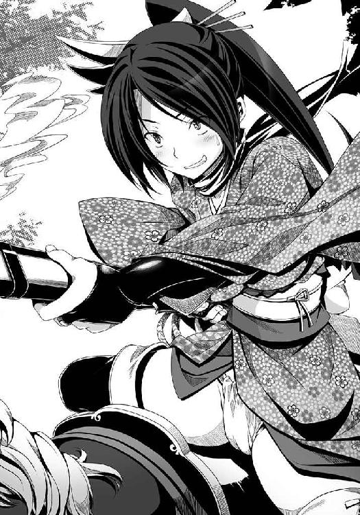
「なんでやねーん！ って、八咫烏を担いどるうちにツッコませんなやボケ！ うっかり引き金を引いてしもたわ！」
そう。
けんにょとの漫才の癖で、孫市はツッコむ時に条件反射で八咫烏を撃ってしまうのだ。
しかも、相方の胸をめがけて──。
ドゴオオオオオン!!
だが、けんにょは弾丸をはじく特殊な体質の持ち主だが、良晴はただの人間だ。
「球よけのヨシ」を名乗る逃げの名手も、雑賀孫市が放つ大鉄砲の弾は避けられない。それほどに孫市の鉄砲の腕は破格なのだった。
飛んでくる弾丸が、良晴の目にはっきりと見えた。だが、避ける時間はもう無い。
死が迫っているから、俺の感じる時間の流れが遅くなっているんだ。走馬灯ってやつだ......と良晴は気づいて、そして、絶望した。
（俺は、南蛮蹴鞠を伝授したことでうまく本猫寺と織田家の合戦を回避できたと思い上がっていた。雑賀衆との泥沼の十年戦争を無かったことにできた、と！ だが、歴史はこんな思いもよらぬところで帳尻を合わせてきやがったんだ！ やっぱり、俺ごときが歴史を変えようとしても無理なのかっ？ 何らかの見えない力が、歴史を予定通りに進行させようとするのかっ？ だとしたら、「本能寺の変」も決して逃れられない運命なのかっ？ 冗談じゃねえ！）
自分の死よりも、信奈が気がかりだった。光秀が心配だった。
「本能寺の変」だけは、回避しなければならない。たとえ自分がここで倒れても、あの悲劇のイベントだけは......日本の、そして世界の歴史を変えてしまったあのイベントだけは......！
「ちょ。良晴はん！ 避けてえな！ 死んだらアカンでえ！」
無理だよ、孫市姉さん、と良晴は馬上で泣き笑い。
もう、間に合わない。
心臓に、正確に、着弾する。
着弾まで、あと五ミリ。
「くそおおおおっ！ のっ......信奈ああああ～！」
戦場に、良晴の断末魔の叫び声が木霊した。
※
「サルが、討ち死に!? そんな、まさか!?」
「先輩が？」
「たしかなのか、四天王」
小田原城の本丸に、悲報が届いていた。
武田騎馬隊の最後尾を走っていた内藤昌豊が、「先頭を一騎駆けしていた相良良晴どの、討ち死に！」「鉄砲の弾に当たってお命を落とされました！」「最後まで天晴れな武者ぶりでございました！」と口々に叫びながら帰還してくる騎馬隊の将兵たちの声を聞いて、いちはやく本丸へと舞い戻ったのだ。
「そんな馬鹿な。勘助が、天命を動かす者とまで呼んでいたあいつが......そんなにあっけなく死ぬはずがない。四天王は何をしていた？ 大切な軍師に先頭を一騎駆けさせるとは、どういうことなのだ！」
信玄も、にわかには信じられなかった。
だが、四天王が騎馬隊を率いて城へ戻ってきて、
「すみません、信玄さま！ 誰かが軍師どのの盾になるべきでしたが、相良良晴は敵中に大勢の鉄砲隊が潜んでいたことに気づくや否や、われら四天王と武田騎馬隊に全軍退却をお命じになり、ただ一騎で鉄砲隊へと特攻していったのです！ 止める暇もありませんでした！」
「相良良晴は勇猛果敢で、かつ、意外なほどの知恵者だったわ。邪気眼の正体を知っている、と自信ありげだったわ。でも、一発の銃弾があの勇者の命を奪ってしまったのね......この山県昌景も残念だわ」
「......馬上から落ちていく最後の姿を見た......遺体は、いずこかへとかき消えた......おそらく......奥州軍の足軽どもによってたかって首を取られたはず......」
と、自分たちの目で見た戦場での悲劇を次々と報告してきたからには、信玄も良晴の死を信じざるを得なくなった。
良晴を撃った者は、艶やかな着物を着たお年頃の娘だったという。それが誰なのかはまったくわからなかった。まさかあの雑賀孫市が今までの印象とは正反対の乙女らしいいでたちで、しかも東国の戦場に来ているとは誰も思いもよらなかったのだ。
それに、上方にのぼったことがない武田軍の兵士たちは、伝説の鉄砲名人・雑賀孫市の顔を知らなかった。
「そうか。あいつは邪気眼を破る秘策を胸に秘めたまま、武田騎馬隊とお前たちを守るために足早に逝ってしまったのか。あたしはまたしても、軍師の血を残すことができなかったのか......」
信玄が意外にも狼狽し、目に涙すら浮かべているのを見た四天王は、いっせいにひれ伏した。彼女たちもまた、良晴の意外な男気とその果敢な最期に心を震わせ、涙ぐんでいる。
「「「「信玄さま、申し訳ありません!!!!」」」」
「いや、よい。戦場での討ち死には武士の名誉だ。相良良晴はもののふとして立派な最期を遂げたのだ。だが、あいつは織田家の武将。借り物の軍師だったからな......悪かった、織田信奈」
信玄は、信奈に頭を深々と下げた。
信玄は同盟相手の北条氏康や、かつて同盟していた今川義元にすらろくに頭を下げたことがない。
武田家の当主となって以来、他人に本気で頭を下げたのはこれがはじめてだった。
「相良良晴を死なせたのは、わが生涯最大の過ちだ。許せ」
四天王は一様に驚いたが、信玄はなおも頭をあげない。
「奥州軍にそれほど優秀な鉄砲隊があるとは、知らなかった。敵をあなどっていたあたしの失策だ。詫びても詫びきれないが......申し訳ない」
信奈と、その隣にはべる光秀は、無言のまま正座してみじろぎひとつしない。
いや、できないのだ。
あまりの衝撃に、声が出なかった。
桶狭間でも、墨俣一夜城の戦いでも、稲葉山城攻略でも、そしてあの金ヶ崎のしんがり戦でも死ななかった、あの良晴が。
まさか、こんなにもあっけなく戦死してしまうだなんて。
光秀は「先輩を武田なんかに貸したからです......」とつい漏らしそうになったが、耐えた。
信奈は光秀と信玄の心情をともに察して、そっと光秀の肩を抱いた。
「......十兵衛......ここは耐えて......わたしも、我慢しているんだから」
「信奈さま......うっ......うううっ......」
「な、泣いちゃダメでしょ！ ぐすっ......そ、そうよ。今は合戦中なんだから......あいつは、いつだって女の子を守るためなら命知らずだったから......きっと......きっと四天王を救えて本望だったのよ。み、みんなの、は、は、裸まで見ちゃってたんだから、じょ、情が移ってたんだわ。あ、あ、あいつは、ほ、ほ、ほんっっとにスケベだったから......！ うわああああああ......！」
光秀をさとそうと語るうちに、信奈の感情のほうが先に爆発してしまった。
光秀は、子供のように泣きじゃくる信奈を抱きしめて、大粒の涙をぽろぽろとこぼした。
「信奈さま......信奈さま......！」
「うわああああ！ 良晴......良晴......！」
光秀は、誰よりも大切にして目にかけてきた最愛の家臣を失って嘆き悲しむ信奈にかける言葉が見つからなかった。
いつもは口が悪くて乱暴な人ですけど、ほんとうはこんなにも家臣を愛してくださっている方なのですね。
そう思うと光秀もついに我慢できなくなって、信奈と良晴のために泣いた。泣き叫んだ。
ただ二人で抱き合って、そして声をあげて泣いた。
一時は完全に分裂していた主従の心は今、ひとつになった。
だが、犠牲はあまりにも大きすぎた。
しかも、この時、近江戦線から早馬を飛ばして信奈のもとに伝令が駆けつけてきたのだ。
『上杉謙信軍が、越前へと急接近中。浅井朝倉の猛攻を受けた虎御前山は影武者の策を見破られ、八陣の迷路を破られ、いまや陥落寸前』という大凶報だった。
まるで悪夢のように凶事が重なっていた。
信奈と光秀は、もはや泣いていられないほどの岐路に立たされた。
織田家存亡の危機が目前に迫っていた。
「......私のせいじゃないわよ？ 伊達政宗はいつ鉄砲隊なんて雇ったのかしら。今日温泉にさえ行っていなければ、風魔から報告を受け取れていたはずなのだけれど。運が悪かったとしか言いようがないわね」
北条氏康は憎い相良良晴を計算通り討ち死にさせることに成功したが、信玄たちも信奈たちもあまりにも深く嘆き悲しんでいて、人目をはばからずに頭を下げ、あるいは号泣している。
氏康のはずかしい秘密は、守られた──だが、下手をすれば信奈たちの怒りと恨みが自分に向けられるかもしれない。それは困る。
「......うう......くすん、くすん」
ぽろぽろと泣いている四郎勝頼を抱っこしながら、氏康は「お前のせいよ」と誰かに言われる前にどうにかしてこの場の雰囲気を変え、矛先を奥州軍に向けようとした。
実際、まだ戦は続いているのだ。
いつまでもこのようなお通夜状態が続けば城内の士気はどんどん落ちる。
敵にかなりの数の鉄砲隊が加勢していることも計算外だったし、武田信玄と四天王が良晴の死によって完全に士気を喪失しているのも氏康にとっては意外だった。
常に虎のごとき威厳と迫力に満ちていた信玄がこれほどかよわい存在に見えたことは、今までいちどもなかった。
勘助に続いて良晴をも失った信玄は今、「武田信玄」という自分の役割を忘れ、思慮深くて感受性の高い少女・勝千代という素の姿に戻ってしまっているのだ。
織田信奈と明智光秀主従に至っては、虎御前山陥落寸前の凶報と良晴の死の知らせを同時に受けたためだろう、再起不能とも思えるほどに衝撃を受けているようだった。
「......あたしは甲斐に戻る。川中島へ出兵し、上杉謙信を牽制する......いや、武田の全軍で越後へと攻め入ろう。それ以外に、織田信奈、お前に詫びる術がない。氏康、悪く思うな。城にこもって守っていれば伊達政宗もいずれは兵糧が尽きて奥州へ帰るだろう」
信玄が青白い顔のまま立ち上がり、四天王に帰陣の準備をはじめよと命令した。
氏康は、この時はじめて、動揺した。
武田勢が軍師を戦死させたまま、いっせいに小田原城から引き上げる!?
それはつまり、無敵の武田勢の敗走を意味していた。
奥州連合軍の士気は、天下の武田軍を退却させたとなれば否応なしに高まるだろう。
氏康は声をからして、信玄と信奈をはげました。
「いけないわ武田信玄。このまま相良良晴の仇を討たずに引き上げるだなんて！ 私は認めないわよ。織田信奈。あなたもしっかりなさい！ 京の都を支配する天下人なのでしょう？ それがなに？ 家臣一人が死んだからって、捨てられた子猫みたいに泣かないでちょうだい！ それほど悔しいのならば、堂々と復讐してこそ、もののふでしょう!?」
信奈が、この氏康の言葉を聞くと同時に、いきなり泣き止んだ。
そして、炎のように燃える視線で氏康をにらみつけた。
氏康は戦慄した。
この目。この燃えるような瞳こそが、第六天魔王と怖れられる織田信奈なのだわ、とはじめて理解した。
大柄な武田信玄も虎のように迫力があり、かつ一騎打ちではあの上杉謙信と引き分けるほどの剛の者であり、野望のためなら実の父を甲斐から追放してみせる、そんな手強い戦国大名である。
だが、どこかおおらかなところがある信玄は、いかなる時であろうともこのような暗く燃え上がる目つきは決して見せない。
信奈は、違った。
天下の破壊者、織田信奈......伝統ある叡山を全山焼き討ちにしようとした、第六天魔王。
その真のおそろしさ、信奈が愛情を注ぐ対象を見失って絶望と怒りに燃えさかっている時の形容しがたい感情の爆発力を、あまりにも愛情の量が多すぎるがゆえに自分でも自分を律することができなくなった時の信奈の怖さを、氏康は思い知らされたのだった。
私はとんでもないことをしてしまったのかもしれない、と氏康は気づいた。
そして、この魔王とはともに天を抱くことはできない、とも悟った。
（生かしておいてはいけない。いずれ北条家の一族を一人残らずなで斬りにしかねないわ、この女は）
まさに、今の信奈は、魔王だった。
（一か八かの賭けになるけれど、やはりこの場で風魔に殺させるべきかしら）
氏康は手許の鈴を鳴らそうとした。
だが、今の魔王と化した信奈を討てるとはとても思えない。かろうじて思いとどまった。
しかも信奈の隣には、こちらは蒼白な顔色のまま自分の唇をかみ締めている明智光秀がいる。おそるべき剣の達人だという。温泉場で不意打ちするならともかく、全員が帯刀しているこの軍議の席で下手に動いてはこちらの命が危うい。
「いいこと、北条氏康。わたしは良晴を討った仇をこのままにはしておかないわ！」
「──御意です」
光秀がうなずいた。
「十兵衛。一刻も早く虎御前山を救わなくちゃならない。そのためにはどうしても上杉軍を武田軍に足止めしてもらわなくちゃならないの。良晴を失ったわたしたちが奥州軍を追い返すには、もうこの策しかないわ！」
追い詰められた信奈が瞬時に実行を決断した、最後の策とは──。
伊達軍の本陣に潜入し、良晴を討ち取った伊達軍の鉄砲武将、そして大将の伊達政宗を自らの手で斬る。
それで良晴の仇を討ち、武田軍は小田原城から解放される。
成功率は万に一つ──生還できる確率は、なきに等しい。
自らの命を捨てた、壮絶な賭けだった。
氏康も信玄も誰も、悲しみと怒りの炎に激しく燃え上がる信奈を止めることはできなかった。
そしてもう一人、青白い怒りの炎に身を焦がしている者がいた。
「この十兵衛もお供いたします、信奈さま！」
※
「行くわよ、十兵衛。まず十中八九、わたしたちは生きて戻れないわ。覚悟はいい？」
「御意です！ 先輩の仇は必ず取らねばなりません！」
「めずらしく意見が完全に一致したじゃない」
「でも信奈さまが倒れられたら、天下布武の事業をどなたに継がせますですか？ できましたら、ここは十兵衛一人で」
「いいえ。今仕留めるべき相手は、良晴を撃った鉄砲隊の大将格らしき武将と、主君の伊達政宗の二人よ。いくら剣の達人・十兵衛でも一人では無理よ。わたしたち二人が一人ずつ討ち果たすしかないわ！ サルはわたしにとって、それほど大切な家臣だったのよ！ サルのいない天下布武なんて......むなしいものよ......」
「うっ......信奈さまが抱く家臣への熱く深い想い、十兵衛しかと受け止めましたです！ 先輩にあれこれいやらしいことをされても耐えていたのは、先輩を家臣としてそこまで信頼しておられたからだったのですね！ 信奈さま。ともに討ち死にして先輩のもとへ参りましょう！」
「ありがとう、十兵衛。わたしのわがままに最後までつきあってくれて」
「いえ。十兵衛は信奈さまにすべてを捧げてお仕えしておりますです！ 信奈さまの悲しみはこの十兵衛の悲しみ。必ずや、先輩の仇を討ちましょう！」
「ええ。ここでわたしたちが倒れても奥州軍が盟主を失って退却すれば、武田との和睦が成立するわ。上杉軍は撤退する。虎御前山で戦っている六や勘十郎たち、そして足軽たちはきっと救われるわ。天下布武は遠のくし、織田家がどこまで存続できるかどうかはわからないけれど──せめて勘十郎たちだけは、生き延びてほしいの」
「心中お察ししますです、信奈さま」
信奈と光秀は、相良良晴の仇を討ち果たし、同時に虎御前山を上杉謙信の侵攻から救うことに全知力と激しい感情を注ぎ込んでいた。
あれほど良晴をめぐってケンカが絶えなかった主従だが、その良晴を敵に討たれたことでひびが入っていた信頼関係は以前よりますます強固なものとなったのだ。
二人はこっそりと小田原城を出て奥州軍の中にまぎれこんだ。
はじめは遊び女の衣装に身を包んでそぞろ歩き、敵将にあやしまれぬよう敵陣深く入りこみ、隙を見て野ざらしになっている奥州兵の甲冑をはぎ取って身につけて奥州兵になりおおせた。
「最後になるかもしれないから言っておくけど......わたしが死んだら十兵衛、あなたに後事を託すつもりだったの。幼い頃から斎藤道三の小姓として鍛えられた文武両道の才能と高貴な家柄、なによりも短気なわたしと違って理性的な人柄。諸国を放浪して身につけた人脈と経験......わたしは家臣に恵まれているけれど、蝮の夢、わたしの夢を受け継いでくれるものは十兵衛しかいないと見込んでいたの。こんなことになって、ごめんなさいね」
「京で松永弾正と戦った折に先輩から、そのお話は聞かされていましたです。でも......私にとっては信奈さまが倒れられた時が、夢が終わる時です。後継者になどなるつもりははじめからありません。この十兵衛は最後まで、信奈さまとともに歩みます」
「そうなの。サルって、ほーんと、おしゃべりなんだから。わたしも一緒に戦っていたはずなのに、気づかなかったわね」
「あの戦はすさまじい騒ぎでしたから、屋根の上からひたすら鉄砲を撃っていた信奈さまには聞こえなかったのでしょう。先輩は、信奈さまは自分からは絶対にその話を私にはしないだろうと言っておられました」
「......人間、死ぬ間際くらいは素直になれるものよ。今までケンカばかりしてきた気がするけど、わたしは十兵衛の才能をそこまで買っていたの。同じ蝮の弟子だものね」
「ありがたきお言葉です。それでは、参りましょう」
二人は長年の親友同士のように、ほほえみあった。
「見て。あのヘンな逆さ十字架が立てられている陣が、伊達政宗の本陣だわ。噂通り、得体の知れない陣ね......」
「先輩を撃った鉄砲隊の武将もあそこに？」
「硝煙のにおいが漂ってくるでしょう。きっとそうよ。今頃、良晴の首実検をしているところじゃないかしら」
「先輩の首は必ず奪い返さねばなりません」
「わたしたちは生きては戻れない。敵のなぐさみものにされるくらいなら、サルの首は......爆破してしまいましょう」
「御意です」
奥州兵に化けた信奈と光秀はお互いにかたく手をにぎりしめ、うなずきあった。
本来なら感情のままに暴走している信奈を止めねばならない立場の光秀だったが、光秀もまた青白い憤怒の炎に全身を包まれている。
二人は、刀の鯉口を切って、ゆっくりと本陣へ向かった。
軍師を失った武田騎馬隊が小田原城へ総退却したので、奥州軍の将兵はみな浮かれている。
本陣の守りも、手薄になっていた。
仇を討ち果たせる、と二人は確信していた。
危機的状況にある虎御前山も、上杉軍が進撃を止めればもちこたえられるかもしれない。
だが信奈と光秀が生還することはほぼ不可能であろう──。
「鹿島新当流免許皆伝。明智十兵衛光秀、参るです」
「わたしは、圧切長谷部で仇の胴を寸断するわ。十兵衛、行くわよ」
「ついに八陣の迷路を突破した！ 余は小谷城を下りて陣を前進させ、虎御前山の正面へと打って出る。長政は虎の子の親衛隊を手許に残し、機を見て山頂から駆け下りて勝負を決してくれ──余は貴公をもののふとして信じている。ゆめ、土壇場で心変わりするでないぞ」
「言われずとも。すでにこの長政、猿夜叉丸として死ぬ覚悟は決めている。それ以上私を愚弄するでない」
「これは失言だった。われらの悲願成就は目前だ。小丸におられる久政どのはお返ししよう。くれぐれも頼むぞ！」
「いや、父は決して私のもとには戻るまい。この戦がわれらの勝利で終わるまでは──」
「そうか。久政どのもまた、一人のもののふなのだな」
朝倉義景は自らの旗本衆と陰陽師の土御門久脩を率いて、小谷城を下りた。
猛将・浅井長政率いる浅井軍の旗本親衛隊を最終兵器として本丸に温存しつつ、自ら前線で血を浴びて勝機を呼び込む覚悟なのだ。
すでに虎御前山を難攻不落の要塞としていた半兵衛得意の迷路は、土御門久脩によって破られている。
両軍の敵味方が入り乱れ、血しぶきをあげている大乱戦の真っただ中へと義景は突入した。
「御大将自らが、最前線へ出てこられた！」
「ここで雌雄を決するつもりじゃ」
「あの戦を好まぬ御大将が、命を賭けておられるのじゃ」
朝倉軍の足軽たちは、いよいよ士気をあげる。
「虎御前山の正面に陣を張れ！ 一歩も後退せぬという覚悟を見せるのだ」
弓矢と銃弾が飛び交う中、小姓たちに本陣を構築させていた義景のもとに、間者から驚くべき報告が入った。
「虎御前山本の陣にいる織田信奈は影武者！ しかも、織田信奈にはべっていた相良良晴までもが影武者にございます！」
「なんだと!? 間違いないのか？」
「はっ！」
一瞬、「決して結ばれることのない運命の二人が手を取り合って戦場から逃げた」という信じがたい光景を義景は幻視した。
「......まさか、天下をかなぐり捨てて駆け落ちを......いやバカな。余とて、現実と妄想の区別くらいはついている！ 織田信奈は天下布武の野望をこの大一番の土壇場で投げ捨てるような心弱き女人ではない。たおやかで繊細な少女でありながら、同時に鋼の意志力を持つ強い女性だ。二人は何か火急の用件があって、一時的に陣を留守にしているにすぎない。だが──」
今の信奈と良晴にそれほど重大な「火急の用」があるだろうか。義景はにわかには思い当たらなかった。
「だが、あの二人がいないのならば、この戦──勝てるぞ！」
※
「相良氏、目を覚ますでござるよ」
「......五右衛門......あれっ？ 俺、生きてるのか？ おかしいな、死にながら夢を見ているのだろうか？」
五右衛門にぽかりと頭を殴られて、良晴はようやく夢うつつの境地から抜け出した。
「いやー。一時はもうアカンかと思ったけど、良晴はんには相方の忍びがついとったんやなー。あやうく自分で自分がほれた男をツッコミで撃ち殺してしまうところやったわ、あっははは」
良晴に膝枕をしてくれていた女の子は、雑賀孫市だった。
良晴にふんどし衣装をダメ出しされたせいか、どこかのやんごとなき姫さまのような振り袖を着て女の子らしくなっている。
こうしてみるとなかなか高貴な美女に見えるから衣装とは不思議なものだ。
「孫市姉さん？ あいててて。胸が痛む......俺は生きてるのか？ どういうこと？ ここはどこだ？」
「拙者が間一髪、相良氏を馬上から引きずりおろして馬の腹側へと隠したでござる」
「馬の腹側へ？」
「地上に落ちたら、足軽たちに首をとられるところでちた。拙者は、さがらうぢを小脇に抱えて馬の腹にはりついて、ちゃがらうじのすがたを隠したでござる」
「なるほど。それじゃ俺は弾丸をくらわず、落馬もせずにすんだってわけか......毎度のことだがありがてえな五右衛門！ どう礼を言えばいいのか！」
「だ、だきちゅくな、だきちゅくなあ！ うにゅうう～！」
良晴は感激して五右衛門の小柄な身体を抱きしめたが、五右衛門はゆでだこのように真っ赤になって痙攣しはじめた。男が苦手という体質はそう簡単には治らないらしい。
「でも、どうして俺は気を失っちまったんだ？ 鉄砲が怖くて失神するような男じゃねーぞ俺は。命中するぎりぎりまで意識はあったぜ」
「拙者がとっさに馬の腹側に隠した折に胸の筋を痛めて気を失ったのでごじゃる。かなりむちゃなうごかしかたをちまちたからな」
「それで胸が痛むのか」
「秘薬を使ったので、痛みはすぐにおさまるでござる」
孫市が「いやあ、めでたいめでたい。あはははは」と扇を広げて高笑いした。
「このちんまい忍びのおかげで、良晴はんは命拾いしたちゅうわけや。そやけど胸を打って失神しとったから、とりあえずこの本陣に連れて来て今まで介抱しとったんや」
「本陣って......誰の？」
「うちの今回の雇い主、伊達政宗はんの本陣やー」
「ええええっ？」
良晴はまだ痛む胸を押さえながら、周囲を見渡した。
漆黒の陣幕のあちこちに、「６・６・６」の数字が刻印されたぼろぼろの黒い旗がなにやら意味ありげに配置されており、さらには逆十字架がまるで墓碑のようにぽつん、ぽつんと所々に突き立てられている。
世は戦国時代。まだ十六世紀である。この時代にこんなアンチ・クライストで中二病丸出しの奇天烈な本陣を考案する戦国武将は、ただ一人。
梵天丸こと、伊達政宗だった。
「ククク。堺以来、久し振りに会うではないか相良良晴。うぬのおかげでこの邪気眼竜政宗は奥州の覇者となることができたぞ！ 礼として、我自らが茶をふるまってやろうククク」
颯爽と漆黒の奥州馬にまたがって良晴の前にあらわれた政宗は、バカでかすぎる金色の弦月前立を兜に装着し、これまた真っ黒い黒漆五枚胴具足を身にまとった一人前の武者姿。
だが忘れもしないあのさらさらとした金髪、そして「６・６・６」というびぃすとの数字を刻印したあやしげな中二病眼帯。
間違いなく、堺の南蛮寺でフロイスが朗読する「ヨハネの黙示録」に夢中になっていたあの梵天丸だった。
「梵天丸のチビガキ！ ほんとにお前が伊達政宗だったんだなー！」
「ククク。うぬが教えてくれた『邪気眼』の威力はすごかったぞ！ 相良に見せたかったぞ、奥州をまたたく間に席巻していったわが勇姿を！ もっとも、まだ関東では試しておらんがな。切り札は最後の決戦まで隠しておくものだからなククク──むろん、最後の決戦とは聖書で預言されている〝はるまげどん〟だ！ 我こそ〝黙示録のびぃすと〟なり！」
政宗が「うんせ、うんせ」とお供の片倉小十郎に手伝ってもらって馬から降りながら、「ちょちょーん」とポーズを取って大見得を切った。
「おっとっと。この弦月の前立、重すぎて首が揺れるぞ小十郎。コケる、コケる～！」
「そりゃそうでしょう。いくら戦場で目立ちたいからって前立が大きすぎますよ姫。あ、ボクは姫のお守り役で、片倉小十郎と申します。相良さんには、姫が堺でとってもお世話になったそうで、いちどお礼をしなければと思っていたところだったんですよー。はい、これ、米沢名物のこけし人形です。おひとついかがですか？」
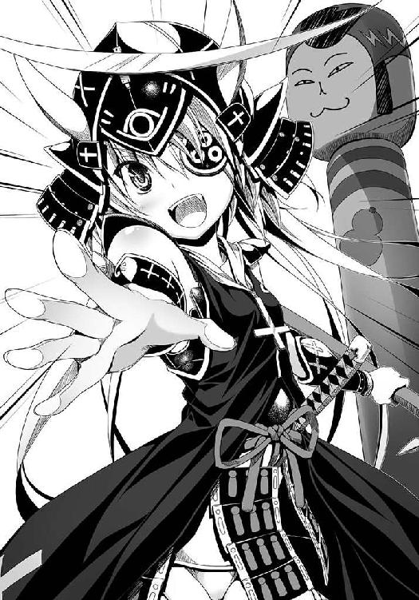
「あ、どうも」
「我が奥州の覇者になれたのも、相良のおかげだからな。感謝の気持ちをこめて、我はこの人形をこれより『相良人形』と呼ぼうと思う。ククク」
「あー、それいいですねー。頭を抱えたくなる逸話ばかりの姫にしてはめずらしく、『政宗のちょっといい話』ですね♪」
良晴はめまいに襲われた。
俺のせいで奥州の時間の流れが速くなっている！ 伊達政宗が奥州の覇者になるにはまだまだ時間がかかるはずだったのに、歴史がどんどん俺の知らない方向へと流れている！
「邪気眼のかわりに、この関東覆滅戦では雑賀衆を雇って『騎馬鉄砲隊』を編制してみたのだククク。江戸の港を手に入れたことで、我の活動範囲はぐっと広くなった。紀伊の雑賀衆を船で呼び寄せることも可能になったし、羅馬教皇にも使者を派遣したしな。世界最終合戦〝はるまげどん〟は近いぞ相良。〝はるまげどん〟でキリシタン軍をやっつけるには、船と鉄砲が大量に必要だ！ 鉄砲に日ノ本の武士が得意とする騎馬隊を合体させれば、宇宙最強の軍隊が完成するぞ！ 我こそが真の魔王であることを織田信奈に知らしめてやろうではないか、ククク」
政宗は、すっかり上機嫌だった。
良晴は孫市と五右衛門に両脇を支えられながら、（さすが梵天丸、戦国最強の中二病武将だぜ。話の流れがめちゃくちゃで未来人の俺ですらついていけねー！）とあきれ、政宗が語る意味不明の言葉を必死で解釈しようと頭を動かす。
「つまりお前、西洋の......南蛮の列強諸国とドンパチやらかすつもりなのか？」
「当然だ。我は〝黙示録のびぃすと〟なのだからな。預言を成就するためには、奴らと最終決戦せねばならんのだククク」
「無茶言うなよ！」
「安心せよ。いきなり奴らと戦ったりはせぬ。まずは日ノ本を覆滅してからだ。南蛮の海軍を日ノ本に呼びつけて我に逆らう諸大名どもをともにやっつけ、しかるべきのちに南蛮軍と雌雄を決するのだ。どうだ、わが構想の雄大さは？ 戦国大名にこれほど大がかりな戦略を持っている者はいるまい。ククク」
はあ......信奈が頭悪くなったらこんな感じになるのかなぁ......まあ梵天丸はまだ子供だからなあ、妄想と現実の区別がいまいちついてねー。いちど叱ってやらなきゃな、と良晴はふかーいため息をついた。
「大がかりな戦略じゃなくて、お前のは中二病っていうんだよ。異国の軍隊を日本に引き入れたりするんじゃねーよ」
「最後には我がやっつけるので、問題ないククク」
「まったく、困ったガキだな。お尻ぺんぺんしてやるから、こっち来い」
良晴が手をのばすが、政宗はちょろっ......と駆けだして逃げた。
「いやだー！ 奥州の覇者をガキ扱いするなあ！ 小十郎、相良のお仕置きから我をかばうのだ！」
「了解しましたー。でも姫、相良さんのおっしゃる通りだと思いますよー？」
「いいから、お尻ぺんぺんの刑から我を守るのだ。相良、我は今ここに結界を張った！ えろいむえっさいむ、えろいむえっさいむ！ 我から半径五寸以内に近づいたらうぬは我が召喚した〝でぇもん〟に取り憑かれて死ぬぞ！」
政宗は、「えろいむえっさいむ！」と唱えながら、小十郎の背中の後ろにぴょこんと隠れてしまった。
えらい変わった姫さまやなー、あははは、と孫市は笑っているが、政宗の子供じみた妄想力には異常な実行力がともなっている。ほんとに南蛮の軍船を呼びつけられたらやばいな、と良晴はちょっとだけ心配になってきた。まさかほんとうには来ないだろうけど。
「すみません。うちの姫はまだまだ子供で」
こいつが政宗の片腕・片倉小十郎かぁ。もっとごついおっさんだと思っていたけど、なかなかの美少年だなあ、どちらかというと腐女子向けのキャラだな、と良晴は思った。
ほんとうは女の子なのだが、男装しているので良晴はまだ気づいていない。
「とにかく、相良人形をどうぞ♪ 姫からの感謝の印です。姫が他人に感謝するなんて、人生にいちどあるかないかですから。これは貴重な品ですよ。ボクなんていちども姫に感謝されたことがありません......くすん」
「おう、ありがとう。でも伊達家の本拠地って仙台じゃなかったっけ？ てっきり俺は、牛タンを食わせてもらえると思っていたんだけどな」
政宗が、小十郎の背後からぶーぶーと不満げに声をあげた。
「せ、仙台はすでにわが領地となっているぞ！ だが奥州はまだ完全には平定していないのでな、米沢から仙台に拠点を移したいのだが敵の勢力に近いので移せぬのだ」
「なーんだ。お前、まだ奥州平定を完了していないのかよ？ それで勝手に奥州の覇者を名乗っていいのか？」
「ええ。実はまだ完全平定は達成してないんです。出羽の伯父さまが邪魔をしましてねー」と小十郎。
「出羽の伯父さま？」
「......出羽の大名・最上義光だ。狐みたいな顔をした腹黒いイヤな親父なのだ。母上の兄にあたるわが親族のくせに、我が奥州の覇者になるのがねたましいのかいちいち我の邪魔をしてくるのだ！」
政宗が、さらに不満そうに頰をふくらませて、どっかと良晴の正面にお尻を下ろした。
「いつか、あの狐もやっつけてやるー！ 我は奥州だけでなく羽州も統一するのだ！」
「姫、最上さんはお母上の実のお兄さんですよ？ いけませんよ、戦っては」
「小十郎。あっちがケンカを売ってくるのではないか。やはり、母上が我を嫌っているせいだ。母上が嫌っている娘を、伯父上が好いてくれる道理などない......ふ、ふんっ！ いいのだ、我には小十郎がいてくれるからなっ！」
「......姫......」
奥州と羽州はひとまとめにして「奥羽」と呼ぶこともある広大な地域であり、つまり現在の東北地方である。
奥羽の諸勢力は複雑な婚姻関係を結んで互いに滅ぼしあうことのないよう心がけてきた。最上義光の妹・義姫が伊達家に輿入れして政宗を産んだのも、そのような奥羽の習慣のひとつのあらわれだった。
だが頭の中はすっかり中二病、〝はるまげどん〟を目指す政宗はその古いしきたりをガン無視して、かたっぱしから奥州を切り取りまくり「奥州の覇者」を自称した。
しかし最上義光にとって、政宗も親族だが政宗に攻められている勢力にも親族がいる。ゆえに、伯父という立場でありながら反政宗派にまわったのだ。
「姫。お母上が姫を嫌っておられるからではありませんよ。姫が、婚姻関係にある諸侯を本気で攻め滅ぼしてはならないという奥州の掟を破ったから最上さんはあちらについたんですよ。そう、ひねくれて考えないでください」
「いーや小十郎！ 母上もあの狐も、我を嫌っておるのだ！ なにしろ我は伊達家の血をひいていない、南蛮人の子だからな。ふ、ふん。戦国の大名たるもの、親子親族などに頼ってはならんのだ！ 家族などみな敵だ！ 例外は小十郎だけなのだ！」
「そのような悲しいことをおっしゃらないでください、姫......お母上の話をする時の姫は、とても悲しげなお顔をしておられます。ボクは見ていられません」
梵天丸もお母さんと不仲だったんだな、そういえば、と良晴は思いだした。
堺で出会った頃の政宗は自分の出自（伊達家の血をひいておらず、母親と南蛮人との間に産まれたハーフ）と戦国時代ではやたらに目立つ自らのオッド・アイを深く恥じていて、劣等感の塊のようにいじけていた。
未来人の良晴が「未来の日本ではハーフの美少女もオッド・アイも大人気だぜ！ そのオッド・アイを邪気眼として戦の武器にしろ！」とはっぱをかけたことで梵天丸は覚醒し、自信に満ちあふれて奥州へ帰って行ったのだったが......。
その結果、親族を攻め滅ぼしてはならないという掟を破り、こんどは母親の実の兄と対立する羽目になっていたのだった。
「ええとこの姫さんは、みな苦労しとるなあ。それを思えば、うちなんか気楽な身分や。姫は姫でも、紀州の土豪やからなー。まあ、武田軍も城にひっこんどるし、茶でも飲んで憂さ晴らししましょ。あっはははは」
空気を読んだ孫市が、すねる政宗に茶を点てて差し出した。
政宗は「うむ」と茶器を受け取り、一服した。
「......これ、甘いぞ」
「甘酒や。お子さまには茶よりこっちのほうがええやろ。あははは！」
「ククク。そうかもしれぬな」
良晴は、ふと信奈と政宗のさびしげな表情を重ね合わせていた。
（信奈も、お母さんとすげぇ仲が悪いんだよな......俺はいちどもあいつのお母さんに会ったことがないけど、それって、お母さんが信奈によりつかないってことだよな......実の娘が仮にも天下人に出世しているんだから、いちどくらい挨拶に来るはずだよな。普通の家族ならば）
信奈と政宗の共通点は、それだけではない。
母親が、姉よりも弟のほうをかわいがっている、という点でも共通していた。
信奈の母・土田御前は八方破れで南蛮趣味にかぶいた信奈ではなく、弟の信澄に家督を継がせたがっていたという。
「我には小次郎という弟がいてな。母親は同じだが小次郎は父上の実子なので、母上は小次郎に家督を継がせようとしていたのだ。我が強引に父上から家督を譲り受けて以来、母上は機嫌を損ねたらしく口もきいてくれぬのだ......あの出羽の狐をけしかけたのは、母上に違いないのだ。母上は我を排除して小次郎に伊達家を継がせたいのだ」
「考えすぎです、姫。お母上は南蛮かぶれの姫をもてあましてどう接していいのかよくわからないだけで、姫を嫌ったりなどしていませんってば」
「小十郎。慰めはよい。〝黙示録のびぃすと〟に家族の情愛などいらぬ......」
ほんとーに中二病をこじらせた困ったガキだが、こんなさびしそうな顔をされちゃあほうっておけねえ、といたたまれなくなった良晴はつい政宗の肩をつかんで大声をはりあげていた。
「まったく、ひねたガキだなあ相変わらず！ 堺で俺さまのお説教を聞いて覚醒したんじゃなかったのかよ！」
「ふ、ふんっ。我はたしかに〝びぃすと〟として覚醒はしたが、黙示録の魔王の道とは孤独なものなのだ！」
政宗は、信奈に似ていた。しかし、目を潤ませて「母に甘えたい」という抑えきれない感情を全身から漏らしているあたりは信奈よりもずっと幼い。政宗はまだ子供と言ってもいい年齢なのだから、それも当然だった。
だから良晴は、半ば信奈に語りかけるつもりで、でも信奈よりももっと年若い幼い子供を優しくさとすつもりで、政宗と話してみることにした。
「......俺の知り合いに、似たような強がりを言う女の子がいるんだけど、そういうふうに孤独をきどる女の子に限ってほんとうはお母さんの愛情に飢えているものなんだ」
政宗は、黙って良晴の顔を凝視している。
「俺ん家はごくフツーの庶民の家だったし母さんとはすげぇ仲がよかったから、梵天丸、お前の気持ちを完全には理解してやれねえけど......いずれ必ず、お互いに歩み寄れる機会が訪れるって。血をわけた母親が、自分の娘を愛さないわけねえだろ？ いろいろな事情があって今は不和かもしれねえけど、絶対にきっかけさえあれば仲直りできるさ。肝心なのはその好機が来た時に、絶対に逃さないことだ。人間はいつ死ぬかわからない、特にこの戦国時代では。だから、自分の気持ちを正直に相手にさらすことをためらっちゃいけないんだ」
あれ、おかしいな。どうして俺、目から水が漏れてるんだろう、と良晴はふと気づいた。
別に俺が泣くようなシーンじゃねえだろここは、梵天丸が「うっく」と涙ぐむはずのシーンだろ？ と自分で自分の気持ちがわからなくなった。
「......相良。未来から来たうぬは、母上と生き別れになったきり二度と会えないのだったな......とてもとても、さびしいのだな......母上とケンカすることさえも、できないのだな」
まだ幼い政宗が、良晴の感情を代弁してくれた。
ちくしょー！ これじゃ、俺がチビガキの梵天丸に慰められてるみてえじゃねえか、かっこわりい！ と良晴はあわてて涙をぬぐった。
「そ、そんなんじゃねーよ。目にゴミが入っただけだよ！」
「良晴はんは、子供にも優しい男やなあ。涼やかなええ男やぁ。年上のうちが嫁になったるさかい、おかんやと思っていくらでも甘えてええで～？」
「孫市姉さん。ふんどし姿をお姫さま風に改めたのはいいけど、『おかん』と関西弁で言われるとどうも萎えるんだよなあ」
「ふ、ふんどし姿は漫才する時の舞台衣装やがな。うちは一応、紀州ではやんごとなき姫さまやで？ 今の振り袖姿が普段着やねん」
「ほんとかなあ～」
「そこは、ほんまかいな、って言うんやで。それがツッコミの基礎や！」
「あーはいはい」
孫市と話していると、ついつい漫才のペースになってしまう。良晴はついつい笑顔になり、涙も止まっていた。
「孫市と相良良晴はそういう仲だったのか、ククク。二人には世話になっているから、我がここで〝あんち・くらいすと〟風の祝言の儀式をやってもよいぞ。まずは活きのいい鶏と山羊を生贄に使ってだな......〝あんち・くらいすと〟の儀式ではな、山羊の頭を煮汁の具にするのだ。ククク」
「いや待て梵天丸。その儀式はいろいろと間違っている。どう考えても祝言じゃねえ」
「せやなー！ ここで再会したのも良晴はんが生きのびたのも縁や！ いっちょ祝言あげるか、良晴はん♪ きっちり尻の下にしいたるでー、あっはははは！」
「むぎゅ！ 孫市姉さん、悪い予感がするからそれ以上俺に抱きつかないでくれ......最近の俺は女難の相がどんどんひどくなっていてだな......」
五右衛門が、孫市に抱かれて困っている良晴の袖を無言で引っ張った。
良晴が視線を、五右衛門が指し示す方向へ動かすと......。
そこに、なぜか伊達軍の甲冑を着ている信奈と光秀の二人が抜刀したまま仁王立ちしていた。
「......サル。言い訳は、あとでゆっくり聞かせてもらうわね。捕虜を拷問する小田原城地下の座敷牢で！」
「素直に『生きていてよかったです先輩』と言わせるつもりが先輩にはないようですね。虎御前山が陥落の危機に陥り、われらが命を捨てて先輩の仇討ちに乗り込んで来たというのに、またしても妙な女と浮気しているとは......二度あることは三度あるとは言いますが!!」
良晴は、ただただ無言で土下座した。
だが、意外にもこんどはいじめられなかった。
良晴の仇を討ち、同時に信玄との和睦を成立させるにはもはやこれしかない！ と信奈と光秀は伊達軍の足軽から甲冑を奪い、斬り死にする覚悟で本陣へと良晴の仇討ちに乗り込んで来たのだ。
それなのに、良晴はあっけらかんと生きているし、しかも伊達政宗と仲良く話しているし、知らない女と祝言だのなんだの騒いでいるしで、完全に拍子抜けしてしまったらしい。
特に信奈は、良晴が政宗に「母親と仲直りしろ」と語っている時のその視線、その言葉の優しさについ（良晴が生きていたわ！）という喜びもあってもらい泣きしそうになってしまい、良晴がまたしても他の女といちゃいちゃしている姿を見ても本気で怒れないでいる。
政宗へ語りかける良晴の優しい言葉が、まるで自分へ向けられているかのように思えてならなかったのだ。
良晴は敵陣の真っただ中でも、自分のことをこんなにも気にしてくれている......そう思うと、良晴が生きていてくれてほんとうによかった、と信奈は喜びのあまり叫びだしたかった。
もちろん、そこは素直じゃない信奈だから、
「......ま、生きていてよかったわね。お仕置きはあとでゆっくりやってあげるわよ」
一応は憎まれ口を叩いておいたけれど。
ここで「良晴、会いたかった！ 生きていたのね！」とわんわん泣いて抱きついたりしたら二人の関係が関東全土規模でバレてしまうし、他の女の子といちゃいちゃしていたことも黙認してしまうことになる。それで、どうにか良晴に抱きつきたい衝動を我慢した。
あとで二人きりになったら......でもなれるのかしら？ 十兵衛がいる限り難しいわ、と信奈も道ならぬ恋の行方を思うと頭が痛いところ。
一方、母親との関係に悩んだことなんて一度もない良い子の光秀は、良晴が生きていてくれた喜びも大きかったけれども「またまたまた浮気ですか」と素直にぷりぷり怒っている。
「ふんっ。先輩の浮気性にはほとほと呆れるです。死んだと聞いていたのに、いつの間に伊達軍の姫武将とねんごろになっているですか！ しかも祝言とはなにごとですかっ？ 誰ですか、そいつは！」
「うちや、うちや。雑賀の孫市や。あっははは！ 二人ともぜんぜん気づいてへんのか～？」
孫市が「なんでわからへんの？」とけらけら笑った。
信奈と光秀は、またしても驚いた。
「えーっ？ なんであんたがここにいるのよっ？ あーっ、あんたが奥州軍にはいないはずの鉄砲隊を率いてたのね！ しかも、何よその普通のお姫さまみたいな衣装はっ？」
「ずっこいです！ 本猫寺とは一年間の和睦をしたはずですぅ！」
「うちはけんにょはんの家臣やあらへんで。自由な傭兵やさかいなー、今回は伊達政宗はんに雇われたんや～♪ ま、織田家の人間が戦にからんでくるとは思うとらんかったしな♪」
「あんたがサルを撃ったんでしょ！」
「あれは、うっかりツッコミを入れてしもうたんや。うちのツッコミ道具は、鉄砲やさかいな。殺すつもりなんかあるかいな。うちの未来の旦那さま候補を♪」
「......誰が旦那さま候補ですって？ 来年の南蛮蹴鞠大会では、ギッタギタにしてやるんだから。覚えておきなさいよ！」
「あーはははは！ そうはいかんな、うちの動きを封じたちびっこ対策はもう考えとる。来年の試合ではもう負けへんでー！」
ともあれ。
良晴と信奈は、生きて再会することができた。
本陣中で、即席ながらも茶会がはじまった。
信奈はもう、良晴さえ生きていてくれればそれでよかったので、復讐も仇討ちも斬り死にすることも忘れて、今は良晴の手をにぎっている。
ただし、顔の半分は幸せそうな笑顔、もう半分は（次から次へと金太郎飴じゃあるまいし、このエロザル～）と怒りにひきつらせていたが。
しかしこれはただの茶会ではない。最重要拠点・虎御前山が失陥寸前となっている織田家の運命がかかった交渉の席なのだ。
しかもこの時、〝黙示録のびぃすと〟伊達政宗と、第六天魔王・織田信奈が、はじめて顔を合わせたのである。
良晴がゲームで覚えた史実ではついに出会うことのなかった二人の英傑が、奇跡的に邂逅したのだ。
「わたしが天下人の織田信奈よ。ほんとうはサルの仇討ちに来たのだけど、サルは生きていたし、なんだかあんたと仲がよさそうだから仇討ちはやめにしてあげるわ」
「おお、お前が噂の第六天魔王か！ 魔王と名乗るからには牙や角でも生やしているかと思っていたが、わりと見た目はフツーではないか」
「普通とは失礼ね。わたしほどの美少女が天下に二人といると思って？」
「なかなかの自信ではないかククク。よいか！ 我こそが奥州の覇者、〝黙示録のびぃすと〟、日ノ本の歴史に伝説を刻みつつある大英傑、人呼んで邪気眼竜、梵天丸こと伊達政宗である！ ククク」
おおー長い名乗りをかまずに決められた！ と政宗が白い歯をきらりと光らせ、土の中に埋もれて隠れている五右衛門が「......身震いがする名乗りでござる」と感想を漏らした。
「だが織田信奈よ。どうして畿内で戦ってるはずのお前らが関東にいるのだ？」
「いろいろ事情があるのよ。細かい話はさっぴくわ。さっさと奥州へ帰ってちょうだい」
さっぴきすぎだろ、と良晴がツッコんだ。
しかし信奈は「虎御前山が危ないのではやく交渉を終えたい」という本音を言いだせない。言いだせばその分、足もとを見られて交渉が不利になる。
「帰れだと？ そうはいくか。我は奥州に続いて関東をも覆滅するのだククク」
「......どう考えても、素直に人の意見を聞き入れるガキじゃないわね、こいつは。誰よ、こんな子供に兵権を持たせた奴は？」
「急がねば、第六天魔王に先を越されてしまうからな。日ノ本を破壊して〝はるまげどん〟に参戦するのはうぬではなくこの伊達政宗である。ククク」
「......〝はるまげどん〟って何......？ 変わったガキねえ」
年齢こそ離れているが、お互い、似た者同士である。
南蛮かぶれのかぶき者。
素直じゃないひねくれ者。
古いしきたりを無視して次々と破壊し、その想像力が軽々と日ノ本を飛びだしてしまうスケールの持ち主。
二人とも日ノ本の中だけを見ているのではなく、広い海外へと飛びだそうとしている。
そんな飛び抜けた先見性とそして弟の存在が原因で、母親との関係が長らくこじれていて、母親への愛情に飢えているところまでがそっくりだった。
良晴は、信奈と政宗が互いに茶を飲みあっている光景を見つめながら、ゴクリと生唾を飲みこんだ。
（俺は信奈と信玄・氏康の出会いに続いて、またしてもありえないシーンを目の前に見ているんだなあ。温泉では俺自身が殺されそうになっていたから感慨にふける余裕がなかったけど、今回は感動する余裕がある。ほんとうにすごい場面だぜ！ 梵天丸が中二病をこじらせたちんちくりんのガキんちょじゃなければ、鳥肌モノの場面のはずなんだけどなぁ～）
くっそーケータイが生きてたらなあ～、写真を撮るんだけどなあ。動画ならさらに貴重な史料になるのになあ、と良晴は残念無念。
史実では信長と政宗は活動していた時代が違う。信長が本能寺で死んだあとに、政宗が台頭してきたのだ。
何もかもがよく似た二人の英雄がもしも出会っていれば、戦国の世はいったいどう変わっていたか──戦国マニアの良晴は何度も妄想したことがあった。
その出会いが、まさか、こんなに早く実現するだなんて。
もしかしたらこの二人が意気投合すれば、歴史が大きく変わって「本能寺の変」は回避できるんじゃないだろうか？ と良晴は信奈の外交力に期待した。
今回は万事そつなくこなす光秀も同伴してくれているから、いつものように信奈がでかい態度を取って大揉めに揉めて終わるということはないだろう。
信奈は、良晴が生きていたのでめずらしく外交交渉の席だというのに上機嫌。それに虎御前山陥落までもう時間がない。
「奥州に帰ってくれたら、馬とか茶器とかいろいろあげるわ。わたしが天下を統一した暁には、あんたの領地はぜんぶ安堵してあげるし。今川幕府の名のもとで奥州探題に任命してあげてもいいわよ！ それであんたは奥州を切り取り放題でしょ！」
と、政宗にこれでもかとばかりに異例の好条件を出した。
なにしろ、名物茶器なら武田信玄が受け取らなかったので余っている。
だが、中二病まっさかりの政宗が「はい、わかりました」と素直にうなずくわけがない。
「織田信奈、お前は第六天魔王として日ノ本の西を覆滅せよ。我は〝黙示録のびぃすと〟として日ノ本の東を破壊する。しかるのちに、〝はるまげどん〟に魔王として参戦する者がどちらかを決めればよいではないか。箱根の峠より東にまで口をはさむでない、ククク」
「......だから、〝はるまげどん〟って何なのよ？ サル、あんた知ってるんでしょ？」
「悪い。聖書に出てくるヨタ話でな。俺もあまり詳しくないし、フロイスちゃんがいない場で説明するのは難しいんだ。簡単に言えば、いずれこの星で人類の命運をかけた世界最終戦争が起こるという預言ネタなんだけど」
「そんな物騒な話、聖書にあったかしら？ わたしは聞いたことがないわよ？」
「あるんだなこれが」
つまりお子ちゃまなのね、扱いに困るわね、と信奈が思わず漏らした。
「我はお子ちゃまではないぞ！ 我をバカにするのなら、この小田原の戦でどちらが真の魔王かを決めようではないか！ くっ!? 待てっ、わが邪気眼よ！ ここで発動してしまってはまずい！ 小十郎たちまでを魔の力に巻き込むことになってしまう......耐えよ、ここは耐えるのだ！」
「......急に眼帯を押さえてもだえはじめたわ。いったい何なのよ、邪気眼って？ サル、説明しなさいよ」
「これもまた一言では説明しにくい難解な概念でな。まず、インターネットというものの説明から入らないと正確には伝えられないと思う」
「い、淫多ねっとり......？ 何よそれ。またいやらしい未来語を引っ張り出してきて」
「そこまで無理して、いやらしい方向に解釈しようとするなよ！」
「ククク。どうやらわが邪気眼の力をこれ以上封印しておくことは無理なようだ。『二人の魔王が出会う時、天は荒れ狂い大地は裂け海はうなりをあげる』と『梵天丸の黙示録』にも預言されていたからな。織田信奈、うぬは小田原城へ戻れ。そして、わが軍と正面から対決しようではないか」
そんな黙示録は聞いたことないぞと良晴が思わずツッコみ、小十郎が「姫が自分で書いて地面に埋めて掘り起こした、自作自演の預言書なんです」とはずかしそうに教えた。
政宗が「くっ、ダメだ！ これ以上魔王同士が同じ空間にいては日ノ本の大地が真っ二つに割れてしまう！」とかっこよくポーズを決めて叫びながら席を立ち、交渉は決裂か？ と思われた。
だがこの時、「黒脛巾組」と呼ばれる政宗直属の忍び衆たちが、音もなく政宗の真横にあらわれた。
とてもルビがなければ読めない名前の軍団だが、言うまでもなく政宗の中二病趣味がここでも全開になっているのである。
しかも彼らは全員が漆黒の忍び装束に身を包んでいながら、胸の部分に輝く黄金製の弦月プレートをはめ込んでいる。この、政宗が徹夜して自ら一枚一枚せっせと作り上げた弦月こそが彼らが黒脛巾組の軍団員であることを示すかっこいいエンブレムなのだが、夜間こんな光りものを身につけて活動していれば目立つことこの上ない。
そのため、彼らは北条家の風魔などに比べれば日頃はあまりこれといった成果を聞かない......それ以前に名前が読めないので人の噂にものぼらない謎の（悲運な）忍び軍団なのだが、この時ばかりは重大な情報を政宗のもとへ持って来たのだ。
それは......。
「出羽の最上義光が、姫の不在の間隙をついて奥州の伊達家本領、米沢へと兵を進めて来ました！」
という衝撃的なものだった。
つまり、よりにもよって伯父が空き巣狙いをやらかしている、という情報だった。
「バ......バカな......いくら不仲とはいえ、あの狐はわが伯父上ではないか。姪の留守中を襲うとは......いや待て、あの腹黒い伯父上ならありうるな！ わが伯父上でなければとっくに呪殺しているところだ、ええい！ えろいむえっさいむ、えろいむえっさいむ！」
「米沢城を落とされてしまえば、せっかく平定した奥州諸侯は散り散りに！」
「姫は帰る場所を失います」
小姓の小十郎が、「今すぐ帰還しましょう姫。天下の武田騎馬隊を退却させるという武功を収め、われらも面目が立ちました。ここがちょうどいい潮時です」と帰国を勧める。
「だが小田原から米沢はあまりにも遠い。遠すぎるぞ小十郎。今からでは到底間に合わん」
「そ、そうかもしれませんね。では姫。いかがなさります？」
「そうだな......江戸城に逃げ込んでも、勢いを得た北条勢に関東から駆逐される。目の前の小田原城を落として新たな本拠地にする他はあるまい」
「無茶です！ 野戦なら雑賀衆が率いる騎馬鉄砲隊が活躍してくれますが、攻城戦となれば小田原城が圧倒的に有利ですよ？ まさか邪気眼を使ってなんとかするとか言いだすんじゃないでしょうね？ 邪気眼の正体が関東勢にバレたら討ち死にしちゃいますよ！ 関東人は奥州の人間ほど迷信深くはありませんよ？」
「......仕方あるまい、小十郎。ククク......わかったか相良良晴。やはり魔王には家族の情など無縁なものだったということだ」
良晴も信奈も孫市も、政宗のこの苦境を打開する策が浮かばなかった。
玉砕を避けるとすれば、武田北条連合に降伏するか、それとも恥を忍んで信奈のもとに一時食客として厄介になるか──いずれにしても、奥州を失陥するという結果は免れない。
それならば、最後まで〝奥州の覇者〟として堂々と戦って倒れるぞ、と政宗が大見得を切るのも道理といえば道理であった。
だが黒脛巾組の一人が、決死の城攻めを覚悟した政宗に「いえ、まだ間に合います」と告げた。
「なぜだ？」
「姫のお母上、義姫さまが輿にて戦場の最前線へと乗り込まれ、最上義光軍の侵入をお一人ではばんでおられます！ 最上義光が何を言っても動こうとせず、娘の留守中に伊達領へ一歩でも入れば自害すると仰せです」
「......母上がっ？」
「はっ。さすがの最上義光も妹ぎみにそう言われては前進することができず、米沢へ向かう途上で立ち往生しております。今すぐに関東から軍を引き返せば、義姫さまのお命を救えますし、伊達領も失わずにすみましょう」
政宗は、この情報をにわかには信じられなかった。
最上義光が妹の義姫、つまり政宗の母に甘くて頭があがらないということは知っていた。最上義光は、現代で言うシスコンなのだ。
だが、あの自分を疎んじていた母が、自分の苦境を見かねて命がけで兄の侵略を阻止しようとするだろうか──してくれるだろうか。
あまりにも唐突で、政宗にとって都合がよすぎる話ではあるまいか。
策略だ、と疑った。
あの策士の狐ならば、それくらいの芝居はやってのけるに違いない。母上は「今後、伊達家は小次郎に継がせる」という条件ですでに狐に懐柔されているのではないか。
だって、自分がいなくなったほうが、母上には都合がいいのだ。
小次郎に家督を継がせることができるのだから──。
「我は信じられんぞ。伯父上と母上が一芝居打っているのではないのか。すでに米沢は伯父上と母上の手に落ちていて、我がのこのこ引きあげてくるのを待ち構えているのだ！ このまま我に他国へ亡命されては厄介だからな！ そうに違いない！」
思わず、片倉小十郎が声をあげた。
「姫！ それは疑いすぎです！ 義姫さまがせっかく姫のために命をかけてくださっているというのに、そんな、あんまりです」
「言うな小十郎。お前は知っていよう。我が今まで、どれだけ母上から疎んじられてきたかを......この奥州の覇者が最大の苦境を迎えた今になって、急に母上がわが味方をしてくれるとはとても思えぬ」
「姫～！」
「これは罠だ。我はだまされぬぞ！」
ぱちいんっ！
唇をぎりりとかみしめて「罠だ。信じない。噓だ」と戸惑いながら小声でつぶやき続ける政宗の頰を、良晴が思わず張り飛ばしていた。
「......な、何をする～!? うぐぅ......ぶ、ぶ、ぶったにゃあ～!? こ、こ、この奥州の覇者の頰を......ううう～！」
いきなり張り飛ばされた経験が今までなかったのだろう。
ぽろぽろぽろ、と政宗が大粒の涙をこぼした。
怒るよりも先に、驚いて身がすくんでしまっていた。
それほどに、良晴は激しく怒っていた。
相手はまだ子供だ、しかも中二病をこじらせているいちばん厄介な年頃だと理性では承知していても、良晴にはどうしても我慢できないことがあった。
「バカヤロー！ 今すぐ、お母さんのもとへ帰れっ！ 疑ってる場合かよっ！ 人間ってのはなあ、日頃は本音を隠したり心とは裏腹な態度を取ったりするもんだけどな、最大の危機を迎えた時には否応なしにその本性が出るんだよっ！ お前のお母さんは、なんだかんだ言ってもお前を死なせたくねーんだよっ！ その好意を信じずに親を見殺しにするつもりかっ？ その上、討ち死に覚悟の玉砕突撃とか、バカ言ってんじゃねー！」
「......さ、相良」
「たしかに空き家同然の米沢城を最上義光に狙われている伊達家は今、存亡の危機だ。だが、今こそお母さんと和解する最大の好機じゃねえか！ それも、向こうから手を差し出してくれているのに......自分の母親を信じろっ！ そんなことすらできねー奴に、天下だの日ノ本だのを語る資格なんかあるかよっ！」
「......ううっ......ぐすっ......」
「今すぐ、お母さんを救いに米沢へ戻れっ！ 関東攻略なんて、いつでもできるだろう！ 関東と自分の母親と、どっちが大事なんだ？ いいなっ！」
小十郎は「さ、相良さん。それほどまでに本気で怒って姫を張り飛ばしてくださるなんて......あ、ありがとうございます！」と思わず良晴に礼を言っていた。
光秀は、「先輩はやっぱり、お母上が恋しいのですね......」と涙目で良晴の背中を見つめている。
そして信奈は、まるで良晴が自分に対して怒っているかのような気になって、言葉が出てこなかった。
「うわあああっ！ 我は信じぬ！ 信じたくても、信じられぬのだ！ うぬは、自分の母上に毒を盛られたことがあるのかっ？ 母上に殺されるかもしれないという恐怖で眠れぬ夜を過ごしたことがあるのかっ？ 相良にはわからぬのだあああっ！」
政宗はぽろぽろと涙をこぼしながら、良晴の胸に体当たりしてきてぽかぽかとげんこつで殴りつけてきた。
（梵天丸......こんな幼さで、それほどの悲しい経験を背負ってきたのか。これじゃ、黙示録にハマって日ノ本を覆滅するなんて言いだすはずだ。こいつの心の傷は、温かい家庭でぬくぬくと育ってきた俺なんかじゃ癒やせない......）
良晴は、戦国時代の大名家の激しさと厳しさを目の当たりにして、自分の限界を感じた。
政宗はまだ、信奈のように思慮分別がつく年齢ではないのだ。
良晴はただ、泣きじゃくる政宗の背中をなでることしかできなかった。
小十郎は嗚咽をこらえるように、掌で自分の口をけんめいに押さえていた。
だが──。
あの信奈が、良晴のあとを受けてくれた。
良晴をなおも殴ろうと振りあげていた政宗の手をにぎりしめて、そして信奈とは思えぬような静かで優しい声で政宗に語りかけていた。
「......今なら、まだお母さんと和解できるわ。魔王になってしまう前に、お母さんのもとへ行きなさい......梵天丸」
「......ぐすっ......ぐすっ......だって......だって」
「魔王は一人でいいのよ。わたしのかわりに、あなたにはお母さんと仲直りしてほしいの。もちろん、弟さんともね。絶対に、自分の弟を斬ったりしちゃダメよ。ほんとうに魔王になってしまうから。あなたはまだそれほどの業を背負うには幼すぎるわ。そういう辛い魔王の仕事は、わたしに任せておきなさい」
優しく、しかし、凛とした声。
何かを決意し、何かをあきらめたかのような。
「......織田信奈......うぬは、母をあきらめるつもり......なのか？」
「そうよ。あなたよりは、ずっと大人だもの。だから耐えられるわ。ずっと迷っていたけれど、あなたと会って母上から生涯『第六天魔王』と罵られる覚悟ができたわ、だからあなたには、わたしが生きられたかもしれないもうひとつの生き方を選んでほしいのよ」
「......わかった......織田信奈、お前は強いな。梵天丸も、かくありたい」
おい信奈どういうことだよ、と不安になった良晴が口をはさもうとしたが、信奈は首を振ってそれ以上良晴にしゃべらせなかった。
孫市が政宗の頭をなでながら、
「伊達の大将。うちら雑賀衆がしんがりをつとめるさかい、急いで米沢へ戻りーや！ うちがついとる、関東軍には手ぇ出させへん！」
と、危険なしんがり役を買って出た。
「ぐすっ。ぐすっ......ほ、ほんとに、や、やってくれるのか？ お、お前らは金で雇われた傭兵だぞ？」
「任せときー！ 親子仲直りの絶好の機会やないか。意気に感じたとはまさにこのことや！ 良晴はんたちの好意を無駄にしたらあかんで！」
孫市は大鉄砲の八咫烏を片腕でかつぎあげ、「すんすん」と鼻を鳴らしている政宗の背中を押してせきたてる。
小十郎の背中を借りて馬上へ乗った政宗は、
「全軍退却～！ はっ......母上～！ 梵天丸が今、参ります～！」
と年相応のへなへな声で叫びながら、本陣を飛びだした──目指すは、本拠地・米沢であり、さらにはその米沢から最上軍の正面へと突出した母・義姫が立てこもる輿だ。
「相良良晴！ この伊達政宗が無事に母上をお救いして狐を追い返したら、使者をよこす！ その時は必ずわがもとへ挨拶に来るのだぞっ！ それが撤退の条件だ、いいなっ！」
いったい何をやらされるのだろう？ まあ梵天丸はまだチビガキだから女難の相とは関係ないだろうと安心していた良晴は、
「おう！ いつでも呼んでくれや！ お母さんと仲良くするんだぜ！」
と手を振って、景気よく政宗を送り出してあげた。
小十郎が、あわてて「姫～！ ボクを忘れないでください～！」と政宗のあとを追い、奥州軍の足軽たちは「何があったのか知らないが、やっと帰れる」「夢じゃなかろか」「もう田植えの季節だからなあ」と喜んで続々と帰還準備をはじめたのだった。
「追撃するもせんもそっちの好きにしいや。ただし、しんがりはうちら雑賀衆がつとめるさかい。そう簡単には突破させへんでー」
小田原城へ戻る良晴たちを見送る別れ際の孫市は、今日もからりとしていた。
これからあるいは死地に飛び込むことになる立場の人間とは思えない、底抜けのご陽気さだった。
良晴は、梵天丸のためにも孫市姉さんのためにも関東軍による追撃は阻止しよう、と心に誓いながら急いで馬に乗った。
もう、休んでいる時間も喜んでいる余裕もない。一刻も早く虎御前山を救わねばならないのだ。
小田原城へ向かって早馬で駆けながら、光秀が、
「一時は命を捨てて斬り死にする覚悟でしたが、丸く収まりそうでよかったです。でも先輩って、お母さんがよっぽど好きなんですねえ♪」
と嬉しそうにほほえんだ。
「そ、そんなんじゃねーよ。戦国時代ってさ、あまりにも親子きょうだいの争いが多くてさ......俺の世界の常識とはあまりにも違うんだよな。でも、人間の本質ってのは戦国時代でも俺が生きていた未来の時代でも変わりはしないんだと思うんだ。殺伐としたこの時代が、家族の関係を狂わせているだけなんだ。いつの世にも子供を愛さない母親なんていない。日頃はどれほど冷たかろうが、心の底では子供を愛しているさ。俺はそう思うぜ」
「これほど母親にこだわる相良氏の心境を、未来語ではたしか、露璃魂と言うのでござるな」
どこからともなく、五右衛門の声。
「違う。マザコンっていうんだ！ ロリコンと一緒にするな！ お、俺はマザコンじゃねえけどなっ！」
「ほう。魔坐魂、ですか。未来語は難しいでござるな」
小田原城へ帰還する途上、めずらしく信奈の口数が少なかった。
死んだと思っていた良晴と、生きて再会できた。
これで、虎御前山を救援できる。虎御前山救援が間に合いさえすれば、浅井朝倉攻めにかかることができる。
長かった膠着状態にケリをつけ、揺るぎない畿内の支配者になることができる──天下布武にぐっと近づく大きな一歩だ。
だが、信奈の心の片隅は、ずきずきと痛み続けていた。
上杉謙信が加勢できないとなれば、浅井家は滅びるだろう。いや、自分がこの手で浅井家を滅ぼすのだ。天下布武を実現するためには、そうせざるを得ない。
そうなれば浅井長政と弟・信澄の悲恋の結末は、いったいどうなってしまうのだろう。
そしてその時、信奈と信澄の母・土田御前は、いったいどう思うだろうか？
弟の恋路を「天下布武」という自分の夢のために踏みにじった信奈を、どう罵るだろうか？
桶狭間で奇跡的に勝利して凱旋した時ですら、信奈は母に罵倒されたのだ。
がんばってもがんばっても、どれだけ功名をたてても、信奈は決して母からほめてはもらえなかった。
もし、信澄の恋を悲劇的結末で終わらせたら......。
（でも、梵天丸のような子供とわたしのどちらが魔王になるべきかと問われれば、わたしよ、としか答えようがないわ。わたしは耐えられる。天下布武の夢のためなら、母上をあきらめることができる......でも、勘十郎までをも傷つけたくない。どうすればいいの）
信奈は、（ほんとうに自分には天下人の資格があるのだろうか）と戸惑わざるを得なかった。
母に愛されていないという大きな負い目が、心の傷が、信奈の性格を極端なものにしていることは本人にも痛いほどよくわかっていたのだから。そしてその負い目は、浅井朝倉攻めによってさらに大きなものになる。
この傷だけは、良晴にも癒やすことはできないのだ。
なぜなら良晴は、男なのだから──。
いくら良晴に愛されても、常にどこか不安でうしろめたいのは、良晴が女の子好きだからではなくて、もしかしたら自分と母との殺伐とした関係が原因なのかもしれない、と信奈ははじめて気づいた。
（そうね。それにわたしに優しくしてくれる松永弾正も、ほんとうの母ではないものね......）
この痛みを良晴と十兵衛はわかってくれるかしら。
二人とも、お母さんに愛されて育ってきた者同士だから、ぎりぎりのところでは理解してもらえないかもしれない。
もしかしたら、最終的に良晴と結ばれる女性は、心にこんな大きな穴が空いているわたしではなくて──。
母親の愛に満たされて育ってきた十兵衛なのかしら──。
良晴は、未来の世界に戻らない限りは母親と会うことができない。そのさびしさを癒やすことができる女性は、愛されることしか求められない自分ではなくて、母親の愛情というものを知っている十兵衛なのでは──。
それにどのみち、わたしと良晴が夫婦になる日は来ないのだから──。
信奈は、次々と浮かび上がってくるそんな暗い考えを振り捨てるように馬に鞭を入れた。
「みんな！ 北条氏康は追撃戦だけには積極的なのよ、阻止しなくっちゃ。もう時間がないわ、急ぐわよ！」
おう、と良晴が陽気に答えてくれた。
御意です！ と光秀が律儀に返事をしてくれた。
わたしも自分の母を信じてみたい。仲直りしてみたい。良晴に、ほめられてみたい。
でももう、わたしは引き返せない道を歩もうとしている。天下布武への道を。母上の愛情とひきかえに──。
信奈は、駆けた。
良晴が、そんな信奈の背中を心配そうに見つめていたことは言うまでもない。
（かわいそうに、信奈......まるで天下布武の夢に近づけば近づくほど、どんどん孤独になっていくかのようだ。黙っていても、背中で泣いているのが俺にはわかる。なんとかしてやれないものだろうか）
※
奥州軍を撤退開始させ、無事に生還してきた信奈一行を出迎えた武田信玄と四天王は、熱烈に良晴を歓迎した。
「相良良晴！ そうか、生きていたのか！ よかった、よかったぞ！ あははっ！」
「あの絶体絶命の危機から逃げおおせたのですね、さすがです！ この高坂弾正もお手本とさせていただきます！」
「たいしたものだわ。織田信奈と明智光秀の二人にも感じ入ったわ。二人きりで敵陣まで乗り込んでいって見事に奥州軍を撤退させるだなんて。武士の誉れだわ」
「......よかった......」
「皆さん！ この内藤修理がお祝いの席を設けますから、手伝ってください！ お願いしまーす！ 内藤修理を忘れないでえー！」
中でも、武田信玄の無邪気なはしゃぎようは、すっかり勝千代に戻ってしまったかのようだ。
「ほんとうによかった！ 勘助に続いてお前まで失ったのかと思った時には、目の前が暗くなったぞ！ これからは先頭を一騎駆けしたりするなよ、いいな！」
「あ、ああ。か、勝千代ちゃん？ む、胸に俺の顔が埋まって、い、息ができねえ」
「今日は無礼講だ！ こんなにめでたいことはないぞ！ はははっ！」
信玄自身がとまどうほどに、喜びの感情があふれて止まらなくなっていた。
涙までこぼれそうになっていた。
「やはりお前は、天命を動かす者だ。またしてもあたしの窮地を救ってくれたな。どんな礼がほしい？ 正直に言え！」
「い、いや俺は、信奈と和睦を結んでくれればそれでいいんだ。もう時間がない、今すぐに頼む！」
「わかった！ それはそれとして、武田軍の軍師として働いてくれた礼もやるぞ！ ほしいものを正直に言え！ あ、あたしたち五人全員の種馬になることがあくまでもお前の希望かっ？」
「「「「......他ならぬ軍師どののご希望でしたら、承知します!!!!」」」」
「やめてくれよ、背後に信奈がいるんだよ！ 俺はまだ袈裟懸けに斬られたくねーよ！」
ちょっとサルに馴れ馴れしいのよと文句を言おうとした信奈と光秀を武田家の面々は五人組タックルでどーんとはじきとばし、良晴に代わる代わる抱きついて祝福の嵐。
一時はしおれていた武田勢の兵たちも、
「軍師どのが生還されたぞ！」
「奥州軍が退いていくぞ！ 見よ、戦はわれらの勝ちぞ！」
「奴らも天下の武田騎馬隊をいちどは退けたのだから、痛み分けといったところか！」
「次こそは決着をつけてやるぞ！」
と一気に士気を回復して城内は大騒ぎとなった。
その間、信奈と光秀は完全に放置されていた。
「こいつら......何なのよ～！ サルと仲良くしすぎ！ この場で斬っちゃおうか、十兵衛」
「ちと数が多いです。特に武田信玄を斬るのはこの十兵衛をもってしても難しいです......信奈さま」
こうして小田原城本丸にて、ついに武田信玄と織田信奈の和睦が締結されることになった。
政宗が撤兵するに至った詳細を、信奈は信玄にも氏康にも明らかにしなかった。
詳細を語れば、政宗と母親との不仲について触れざるを得なくなる。そんな心の傷を他人に知られて政宗が嬉しいはずがないからだ。
もちろん、
「あらあなたたち、生きていたの？ よくもあの奥州のお子さまを撤兵させられたわね。では、さっそく奥州軍を追撃して痛い目にあわせておきましょうね──小田原城を攻めたものはただでは帰さないことにしているのよ。二度と攻めてこないようにするためよ」
と北条氏康が政宗の軍勢を追撃しようとしたので、詳細を語らぬほうがよかったという理由もある。
追撃を受けて政宗の帰国が遅れれば、政宗の母・義姫が命を落とす可能性があるし、「騎馬鉄砲隊」という奇天烈な軍勢を率いるしんがりの雑賀孫市部隊の存在は危険だった。北条軍が勝手に追撃して孫市の鉄砲をくらって返り討ちにあうのはかまわないが、武田騎馬隊が万一ここで大きなダメージを負ってしまっては元も子もなくなる。
だが、伊達政宗よりも信奈のほうがはるかに危険な存在だと悟っていた氏康は、信奈から「追撃は無用よ」と反対を受けるとすぐに「じゃ、追撃はやめてあげる」と意見を翻し、得意の追撃戦に強引に持ち込もうとはしなかった。
ところが、氏康はすぐに信奈と信玄の和睦を仲立ちすべき立場だったのに、「少し用があるの」といずこかへ立ち去ってなかなか姿を現さない。
氏康は小田原城内の秘密の隠し部屋に入り、鈴を鳴らして「風魔」の頭領・小太郎だけを呼んで、二人で密談を行ったのだ。
関東最大の忍者組織「風魔」の頭領は代々「小太郎」を名乗っているが、その小太郎の素顔はこの密室にあっても忍び装束によって完全に隠されている。
「織田信奈──あいつは他の戦国大名とは違う、完全に異質な存在よ。いつか倒さねばいずれこっちが倒されるわ。ここで殺せる？」
氏康はまだ織田信奈の暗殺をあきらめてはいなかったのだ。
「今はその時ではござらぬ。暗殺するとしてもよほど慎重に機会をうかがわなければ」
小太郎の声色は、男とも女ともつかない、不思議なものだった。
「この小田原城内でも無理だというの？」
「かの明智十兵衛光秀なる者、そうとうの手練れ。成功したとしても、武田信玄が怒りましょう。あの方は堂々の合戦にて敵と雌雄を決することに生き甲斐を感じておられる。今ここで武田家と断交すれば北条家が苦戦するは必定」
「......逆に考えれば、信玄を中心に反織田家連合を再編成して他家の大名どもに織田信奈を討たせるのもいいわね。あるいは上杉を利用するという手も......」
「このまま和睦成立の儀式を引き延ばして虎御前山を失陥させてしまいますか？」
「それは無理ね。あの二人は私を無視してでも和睦して自らの戦場へ舞い戻るでしょうから」
「ならば、今は和睦の仲立ち人をやって両者に恩を売るべきかと」
「......しかたないわね、悔しいけど。でも相良良晴はどれだけ時間をかけても殺すわ！ 小太郎、今後は相良良晴の周辺に常に風魔をつけて機会をうかがうように。頼むわよ」
「姫......お尻のあざのことでしたら、あと数年で消えるかと......お身体が成長すれば自然と......」
「あれを見た者は必ず殺すのよ！ 大人びた知的な武将という私の印象が台無しでしょう！ 何年かかっても、殺すったら殺すのっ！」
小太郎が、感情の無い声で氏康に献策した。
「相良良晴をただ殺すのはたやすいこと。だがあの者に対する織田信奈と明智光秀の態度は異常です。たかが一家臣の仇討ちのために伊達政宗の本陣へ二人きりで斬り込みをかけるとは......これがどういうことか、おわかりになりませぬか？」
氏康が、はっ、と目を見開いた。
「小太郎......まさかとは思うけれど、考えられるとしたら......あの二人が相良良晴に抱いている感情は──恋心？」
「ご明察。あの二人は相良良晴にそこまで惚れております」
氏康は「あのサルに？ 織田信奈が？ どうにも信じられないけど、言われてみればそうとしか考えられないわね」と首を傾げた。
「小太郎。だとすれば、相良良晴をただ殺してしまうよりも生かしておいたほうが利用できるわ。織田家を分裂、崩壊に追い込むことだって夢ではないわよ。ふふふっ」
「御意。そこで、こういう策はいかがでしょう──」
小太郎が氏康の耳元にとある献策を行い、氏康は冷たい笑みを浮かべて「その手でいきましょう」とうなずいた。
「ただし。ほんとうにあの二人が、とりわけ織田信奈が相良良晴に恋しているかどうか、私が直接たしかめてみるわ」
「御意」
小太郎が、ゆらり......と音もなく氏康の面前から姿を消した。
現れない北条氏康を仲立ち人としていては和睦の儀式は遅々として進まない。武田信玄と織田信奈は氏康を無視して、互いに急いで誓紙へと花押を書き込もうとしていた。
そこに小太郎との密談を終えて姿を現した氏康が、「仲立ち人の私を差し置いて勝手に和睦を進めないでほしいわね」と言いながらしぶしぶ誓紙の内容を両者の前で確認した。
「あんたが勝手に姿を消したんじゃない。ずいぶん長かったけど、どこへ消えてたのよ」
「厠だろう。こいつはいつも顔色が悪くて体温が低い。つまりお通じが悪い体質だろうからな。はっはっは！」
信玄......いつか見ていなさい......とこみあげてくる怒りを抑えながら、氏康が誓紙の内容を読み上げた。
「和睦期間は一カ月。武田信玄は越後の上杉謙信へと牽制の軍勢を出し、北陸を経由して近江へ向かおうとしている謙信を一カ月足止めすること。ただしこの和睦は一カ月きっかりで終了する。なお、相良良晴の身柄は──」
「相良良晴は小谷城攻めに必要だろう。持っていけ。貸してやる」
信玄があぐらをかき、豪快に茶をがぶ飲みしながら言い放った。
「いつからサルがあんたの家臣になったのよ！ サルは、わたしのものよ！ 勝手に恩を売らないでほしいわね！」
信奈が思わず信玄に茶器を投げつけそうになり、光秀と良晴があわてて制止する。
その信奈の激高ぶりを冷たい視線で観察していた氏康は（やはりこの女は──）と確信を深めた。
「もしもわが武田家と和睦しているあいだに小谷城を落とせなかったら、上杉謙信は近江まで攻め込んでくるだろう。そうなれば、次は相良良晴の身柄を武田軍に移籍させるという条件で正式な『同盟』を結んでやろう。そうだな。相良良晴が武田軍の種馬として働いてくれる限り、五年でも十年でも同盟してやっていいぞ。はっはっは！」
信玄は、「一カ月」という和睦期間を一日たりとも延長しようとはしなかった。
ライバルの信奈に過剰なアドバンテージを与えたくなかったし、それ以上にまだ相良良晴の獲得をあきらめていないのだ。
「ぜ～ったいに、サルは貸さないからっ！ また戦死させられちゃ困るのよっ！」
「ははっ。そいつはそう簡単に死ぬタマじゃない。今回の政宗撤退も、ほんとうは相良良晴の手柄なのだろう？ 隠すな隠すな。相良良晴はやはり、天命を動かす者、だ」
「......ま、半分くらいはサルのお手柄だけどぉ。でも、ちゃんとわたしも役に立ったわよ？」
「ほんとうか？ あやしいものだな」
「ほんとうよ！ 武田信玄。あんたとは仲良くなれそうもないけど、梵天丸とは気が合いそうだわ。どこかわたしの妹みたいな奴だったわ」
「ふん。それもそうだろう。魔王同士だからな」
ほほえみあう二人。勝千代ちゃんと信奈だって意外にも仲良しになれるかもな......と良晴が甘いことを考えはじめたその時。
信玄の表情が、突然精悍になった。
信奈をにらみつけるその獰猛な視線は、まさしく猛虎。
思わず信奈も腰を退きそうになったが、奥歯をかみしめて踏みとどまった。
「織田信奈。あたしは、お前に膝を屈するつもりなど毛頭無い。仇敵の上杉謙信に先を越されたくないから、ほんの少し手を貸してやるだけだ。この次に相まみえた時こそはどちらが最強か決着をつけるぞ。天下も良晴も必ず奪い取る。しょせんはそれまでの和睦だ、いいな！」
望むところだわ、と信奈が信玄を燃える瞳でにらみ返した。
信玄は、無言で信奈をにらみ続けながら、立ち去った。
「......ふはあ～......怖かった......勝千代ちゃんが武田信玄に変身したら、あんなに迫力あるのかぁ」
良晴は二人のあまりの迫力に腰が砕けて、思わず失禁しそうになっていた。
これほど緊迫した空気の中でもけろりとしていた光秀が、良晴をたしなめる。
「先輩。情けないです」
「お、おっかねえ......やっぱり武田信玄も織田信奈もおっかねえ！ 天下を争う英雄二人が放つ圧倒的なオーラに、はじきとばされてしまいそうだった......戦国格ゲーでぼひゅーんと吹っ飛ばされる雑魚武将のように」
「今さら再確認しなくても、先輩は立派な雑魚武将です」
「漫才修業をした者としては即座にツッコミを入れたいんだけど、言い返せねえぜ」
誓紙に記された二人の花押を確認し終えた氏康が、くすくすと冷たく笑った。
「私の望みは関東の王になること。京の都には興味はないわ。あなたたちはどうぞ好きなだけ戦っていなさい──上杉謙信があなたたちと激しく相争い続けてくれて、関東出兵のお仕事を忘れてくれれば助かるんだけど」
良晴には、どうにも北条氏康という姫武将の腹の底が見えない。
信奈も、氏康に釘を刺しておきたくなったようだ。
「北条氏康！ わたしは関東の独立を許さないわよ。畿内を統一し西国を飲みこんだら、次は東国を平定するわよ！ 南蛮諸国が世界各国へと乗り出している今こそ、日ノ本はひとつの国としてまとまらなくちゃいけないのよ。覚悟しておきなさい！」
事実上の宣戦布告とも言える信奈の挑発に、氏康はやはり冷たい笑顔でこたえた。
「ふふっ。ほんとうに元気なこと。次に会う時には殺されちゃいそうだわ。でも、それまであなたの命が持つかしらね？」
良晴の心臓が、どきり、と跳ねた。
氏康は「本能寺の変」が将来起きるかもしれないことなど知らないはずだ。
だが、
「あなたのその熱しやすい性格じゃ、いつ死んでも不思議じゃないわ。せいぜい坐禅でも習って冷静さを失わない修練でもすることね」
氏康は何かを企んでいる。だが信奈にも良晴にもまだ、その陰謀の正体はわからなかった。
「ふんっ。わたしはそう簡単に暗殺されるようなマヌケじゃないわよ。あんた、この短い期間に何度もわたしの命を狙ったでしょ。でもぜんぜん成功してないでしょ。もうわかったでしょう？」
「ええ、暗殺はよほどの好機が訪れない限り成功しない下策だわ。でもね......暗殺以外にも、人間にはいろいろな死因があるのよ？」
「あんたこそ、小田原城は絶対に落ちないなんて豪語してずーっと油断していればいいわ」
「ご安心なさい。小田原城は落ちないわ。武田信玄にも上杉謙信にも落とせないものを、あなたごときが落とせると思う？ 尾張兵が相手ならばたとえ百年でも持ちこたえてみせるわよ、ふふっ。織田信奈、いいこと？ 戦国の世の道理を教えてあげましょうか。合戦で勝った者が勝つのではないわ。最後まで生きていた者が勝つのよ......ふふふっ」
信奈は「うぐぐ」と怒りをこらえながら、氏康から視線を逸らして穏やかな相模湾を凝視した。
小田原城から望む大自然だけは、人々が相争い続ける戦国の世とは無関係に、雄大でそして比類なく美しかった。
（安土城が完成すれば、いずれ私もこんな美しい眺めを毎日毎晩、良晴と一緒に満喫して──でも、その夢はほんとうにかなうのかしら）
この時、信奈のそんな想いに気づいている人間は、良晴一人だった──もっとも、氏康は信奈の憂いに満ちた表情に何かを感じ取っていたが。
だが良晴は、北条氏康が謙信や信玄とは違う形でこれから信奈の強敵として立ちはだかってくるという予感に襲われていて、安土城のことを夢想する余裕はなかった。
（史実では、どうだったっけ？ 織田信長が「本能寺の変」で倒れたのち、一時的に天下は藤吉郎のおっさん、つまり豊臣秀吉のものになった。おっさんは京の公家衆と親しく交わって関白となり、位人臣を極めた。だが、最後の最後に勝者になった武将は──関東に左遷されていた徳川家康だった！ 秀吉のおっさんは日本を統一したあとに朝鮮出兵なんて派手な戦争をやらかして、武家も人民もみんな疲弊しきってしまったんだ。そんな中、秀吉のおっさんに屈服したふりをして関東でじっとしていた徳川家康だけが、諸将が外征で疲弊していくのを横目に見ながら力を蓄えて、そして秀吉のおっさんが死んでから天下という「漁夫の利」を得たんだ）
まあ、この世界の徳川家康はいまだに「松平元康」と名乗っていて、とてもそんな腹黒い武将には育ちそうにないけどな。そのかわりに北条氏康が徳川家康のポジションに就くことはじゅうぶんに考えられる──信奈が海外へ旅立つという夢のためにも、いつかはなんとかしなければならない女だ、と良晴は思った。
武田信玄・上杉謙信の両雄と戦っておきながら大敗北を喫した経験がなく、むしろ領土を着々と拡大している戦国大名など、北条氏康以外に誰がいるだろうか。それほどの策士なのだ。
（いずれは関東で決戦しなければならねー相手だな。だが、その前にこっちが策謀にはまるかもしれねえ......厄介な相手だ）
「何をぶつぶつ言っているの、相良良晴。いいこと。私のあられもない裸を見てあまつさえ私のお尻の秘密を知ったお前は、必ずお仕置きするから。私はあれほどの屈辱を男から受けたのははじめてなの。一日でも長生きしたいのであれば誰にも私の秘密を口外するんじゃないわよ。いいわね」
氏康が良晴のそばにそっと寄ってきて、わざと信奈に聞こえるような大きな声でそんな言葉を口にした。良晴は「げほげほ」とせきこんだ。
「ちょっとサル？ 氏康のお尻の秘密って何よ？」と信奈がむくれる。光秀も「許嫁の面前でまたまたまたまた浮気ですか先輩は！」と目をいからせる。だが、氏康は意味ありげな微笑を浮かべるばかり。良晴も信奈の問いには答えられない──口外したらたぶん、ほんとうに氏康の手で命を奪われそうだからだ。
「イヤよ、誰にも教えてあげない。私のお尻の話は私と相良良晴だけの秘密なのよ、ふふっ」
信奈と光秀の顔色がさあっと変わるのを、氏康は確認した。
「......しつっこいなあ。俺はもう一度死にかけただろ、許してくれよ」
「イヤよ。このままじゃ、私はお尻を見られ損じゃないの」
「ど、毒殺でもする気かよ。毒なら効かないぜ。織田家には松永久秀という毒博士みたいなお姉さんがいるからな」
「毒殺なんて無粋な真似はしないわ。町の中でいきなり風魔に襲わせて拉致しちゃおうかしら、そしてそこから二人きりでの楽しいお仕置きの時間がはじまるのよ。私好みの家畜に調教してあげるわ、ふふふっ」
「ちょ。氏康さん。どうして袂から鞭を取りだしてくるんですか？ 何に使うんですか、その鞭は？」
「相良良晴、これは寝所でお前を叩くための鞭よ。お楽しみにね」
「......見た目どおりのドＳだったんですね、氏康さん」
「あら、努江洲ってなにかしら。『努』という漢字って、『女』の『又』に『力』って書くのよね。そういう意味のサル語なの？ ふふっ」
「ち、違いますよ氏康さん！ って、なんで俺、さっきから敬語使ってるんだ？」
孫市姉さんみたいな人に深情けを受けるのもたいへんだけど、底冷えがするような冷たい目つきの美人からＳっ気たっぷりの敵意を抱かれるのも面倒っつーかおっかねえなあ......大人になれば勝手に消えるお尻のあざがそんなに重大な問題なんだろうか？ と良晴はため息をついた。
信奈が、なおも良晴にからんでいる氏康を忌々しげににらみながら立ち上がった。
「さあ、今すぐ岐阜城へ向かいましょう。東の守りに充てていた全兵力を率いて虎御前山を救援するわよ。ここからは時間との戦いよ！」
氏康は（そうねえ。織田信奈、あなたにとってもっともおそるべき敵は『時間』だわ。時間が経てば経つほど、あなたにとって状況は不利になっていく。相良良晴という爆発物を抱えているあなたにはね。私がその爆発物に火をつけてみせるわ）と不敵に笑った。
氏康は、信奈と光秀の目の前でさんざん良晴にからんでみせて、織田信奈にとって最大の弱点がこの良晴であると完全に確信したのだ。
（家臣との道ならぬ恋。そして恋仇は片腕の明智光秀。さて、どのように料理してあげようかしら。楽しみだわ、ふふっ）
※
ところで、これは余話。
遠江の浜松城。
まだまだ城とは呼べない、あばらやのような急ごしらえの建物である。
三河の大名・松平元康は遠江経営の拠点とすべく、岡崎城から移ってこの浜松城を新たな居城にしていた。
「へっくちゅん！」
「いかがされました、姫さま」
高台の上から遠眼鏡で浜松の海を眺めている途中、いきなりくしゃみをした松平元康に、かたわらの服部半蔵が不思議そうに声をかけた。
「なんでしょう～。誰かが私の噂をしたような気がしました～」
「だといいのですが。最近の姫さまは武田家からも織田家からもその存在を忘れられているような気がしますが......気のせいでしょうか」
「うふふ～。武田家と織田家の国境に割拠しているこの松平家が、まさか忘れられるはずがありません～」
「......なんとなく、松平家の姫さまの存在を忘れてあの両者が勝手に和睦したりするのではないかと悪い予感が」
「半蔵～。そんなこと、あるわけないですよ～。そんなことになったら、両家の板挟みになっている私の立場が宙に浮いてしまいます～。吉姉さまに限って私の存在を忘れて武田信玄さんと勝手に和睦するだなんて～。あ、は、は」
「そうですな。そんなことになれば松平家は武田家に領土を切り取られ放題。ありえませんな。ふ、ふ、ふ」
......信奈からその存在をすっかり忘れられていることに気づかないで、のほほんと笑っている松平元康であった。
唯一の救いは、武田信玄のほうも上杉謙信攻めの準備に夢中で、吹けば飛ぶような元康の存在を忘れていることくらいであった。
「しかし姫さま。このようなおんぼろ城に本拠を移されるのはいかがかと存じますが」
「だいじょうぶです、半蔵～。本猫寺にぜひ譲ってくれと頼まれまして、『眼鏡、眼鏡』の一発芸をたか～く売りつけることに成功しましたから～。濡れ手に粟とはまさにこのことです～、うふふ～」
「なんと。あの松平家末代までの恥と思われていた『眼鏡、眼鏡』を高値で！ さすがは姫さま、中途半端に腹黒い......いえ、銭にせこい......いやいや、商売上手ですな」
「その銭で浜松城をきれいに改築しましょう～。余ったぶんは、蔵に貯めこみましょう～。うふふ～」
「新たな一発芸を開発すれば、いよいよ蔵が潤いますな。しかも元手はかからない」
「そうです半蔵～。今日から二人で、一発芸の研究をはじめるのです～」
良晴が未来から来たことによって松平元康の未来がどう変化するのかは、まだ定かではない。
とりあえず、小田原城に驚異の粘り腰を誇る北条氏康がいる限り、「一発芸を本猫寺に売って稼いでいきましょう」と半蔵相手にあれこれくだらない芸の練習を開始した元康が関東に君臨する日は当分来なさそうであった──。
両軍兵士の怒声が木霊する虎御前山の本陣で。
信澄は、知ってしまった。
半兵衛の喀血を、見てしまった。
合戦中ではあるが、半兵衛の容体は危険なものだった。信澄は半兵衛を南蛮渡来のベッドの上に寝かせ、けんめいに介抱した。
「半兵衛。きみは......!!」
「......けほ、けほ......」
「わが主の病のこと、誰にも知らせぬよう。相良良晴には特に。漏らせば、お命をちょうだいしますぞ」
前鬼が牙をむきながら、半兵衛の額を濡れ手ぬぐいで冷やし続ける。
「言わない。ぼかぁ、自分の口の軽さをつくづく反省した。今のこの危機も、ぼくが光秀に秘密を漏らしさえしなければ防げたはずだった......でも、どうしてこれほどの重病にかかっていることを秘密にするんだいっ？ いったいなぜっ？」
半兵衛はなおもせきこみながら、優しい、やわらかい笑顔を浮かべてみせた。
信澄に心配をかけまいと、気を配っているのだった。
「......限られた時間のうちに、仕事を終わらせなければいけないからです」
「仕事、とは？」
「はい。それは、陰陽師でなければできない仕事なのです。信奈さまと、そして良晴さんのために、どうしても成し遂げなければならないんです......けほ、けほっ」
「主。それ以上話してはならぬ。とにかく今は休むのだ」
「でも、迷路の結界は破られました。次の、次の策を......」
「いかん。これ以上無理をすれば、主の身体は」
半兵衛がこれほどまでに命を削って成し遂げようとしている仕事の正体を、陰陽道に疎い信澄が察することはできなかった。
しかし、そんな信澄にもひとつだけ、今できることがある。
それは、槍をとって戦い、虎御前山の本陣を守りぬくことだった。
いや、このまま座していては本陣は守れないだろう。
すでに、頼みの綱だった八陣の迷路は破られてしまっているのだ。
小谷城の主力が、「今こそ勝機」と血眼になり虎御前山の本陣を目指して死にものぐるいで突進し続けているのだ。
もはや、こちらからも全軍を繰り出して反撃するしかない！
信澄は南蛮兜をかぶり、赤いビロードのマントを羽織って馬に乗った。
「姉上とサルくんは必ず戻ってくる。光秀も一緒に戻ってくるはずだ。それまで陣を持たせればこちらの勝ちだ。でも半兵衛はこれ以上働いちゃいけない！ 陣を守ることに知恵を絞らなくてもいいんだ。ぼかぁ、これから全軍で小谷城へ斬り込む！」
信澄は、死中に活を見いだす他はなし、と瞬時に覚悟を固めていた。
「敵が損害を怖れずにしゃにむに攻めてくるのは、上杉謙信が後詰めに出てきたからだろう。もし今ぼくが虎御前山から退却すれば、もう謙信の南下を止められなくなる──攻めるんだ。徹底的に攻めて、抵抗して、絶対に退却はしないという決死の覚悟を浅井朝倉軍に見せつけるんだ。式神くんは、半兵衛を頼む！」
「ほう。男の顔に化けたな」
前鬼が皮肉屋っぽい笑顔を浮かべてみせた。
「当然だろう。趣味は女装だが、ぼくだって男のはしくれさ！ 半兵衛は死なせないよ！」
「足が震えているがな」
「む、武者震いだよ！」
今こそ、お市との約束を果たす時が来たのだ。
信澄は戦は得意ではないし好きでもないが、男には戦わなければならない時がある。
ましてや、幼い少女の半兵衛が命を削りながらけんめいに戦っている姿を前にして、立ち上がらないならばそれはもう男子ではない。
（金ヶ崎でサルくんが自らしんがりを志願した時のように──今ここで戦わなければ、ぼくはもう男ではなくなる。お市を迎えに行く資格を永久に失うんだ！ 半兵衛はぼくが守る！）
信澄は、采配を振り下ろした。
「全軍、山頂から一気に駆けおりろ！ 神速を持って敵軍を突破し、小谷城へと攻めのぼる！ もう山麓の迷路には構うな、行軍の邪魔になる。攻城兵器を使って破却して全速で前進するんだ！」
総攻撃命令と同時に、信澄も自ら馬を駆って坂を急降下した。
敵の群れの中へ飛び込んで朱槍を振り回していた犬千代が、そして戦場の最前線で阿修羅のごとき活躍を見せていた柴田勝家が、信澄が一騎駆けする姿を見つけた。
「......あの信澄が、鬼になってる......」
「織田家の御曹司を死なせるなあ！ 全軍、突撃だあああ！ 目標は、小谷城！」
織田信奈不在！ しかも絶対の自信があった迷路を破られて惑っていた織田軍の足軽たちが、これでがぜん勢いを取り戻した。
「あの、女装好きでお気楽な信澄ぼっちゃんが......」
「やる気まんまんだみゃあ！」
「ういろう大臣が、猛虎に化けたみゃあ！」
「さすが姫さまの弟ぎみ、かっこいいみゃあ！」
「わしらも行くだぎゃあ！」
逆に浅井朝倉軍のほうが、浮き足だった。
まさか反撃されるとは想像していなかったのだ。
「迷路の出口を見つけたら勝ちじゃなかったのか？」
「自分たちの手で迷路の陣を壊しながら、突撃してきた！」
「大将の織田信奈がいないというのに、手強い......！」
小谷城と虎御前山とは、目と鼻の先に近接していると言ってもいいくらいに近い。
両者の間には、猫の額ほどの平地しかない。
その狭い平地の上で、両軍の兵士が入り乱れる大乱戦となった。
銃弾が飛び交い、矢が雨のように降り注ぎ、そこかしこで槍と槍が激突する音が鳴り響いた。
もともと、浅井軍が率いる近江兵のほうが尾張兵よりも精強である。
その上、「織田信奈が本陣に不在」「半兵衛の迷路をついに突破」「越後から上杉謙信が加勢に来る」という朗報が浅井朝倉方には次々ともたらされている。
本来ならば、信澄が率いる織田軍はこの狭い平地でひと揉みに揉み潰されてしかるべきだったかもしれない。
だが、可憐な半兵衛の吐血とそれでもなお知力をふりしぼって信奈と良晴のために戦おうとするけなげな姿を見て「ここで命を捨てなければお市との恋を成就させる資格などない！」と全身の血を沸騰させた信澄が別人のように果敢に敵中深くまで突撃をかけたことで、織田軍はかろうじて崩壊を免れた。
それどころか、織田軍のほうが浅井朝倉軍を圧しはじめた。
浅井朝倉軍は「迷路さえ破れば勝ちだ」と信じていたために、この信澄の物狂いのような突進に度肝を抜かれた形になったのだ。
およそ、影武者のやることではなかった。
信澄ですら、自分の小柄な身体の中にこれほどの力がみなぎっているだなんて、知らなかった。
姉川でお市──浅井長政と一騎打ちした時ですら、負けることを覚悟しての突撃だった。
勝てるなどとは、これっぽっちも思っていなかった。
だが、今は違う。
勝たなければならないのだ。
絶対に、虎御前山の本陣を蹂躙させてはならないのだ。
あのはかなげな少女をここで散らせてはいけないのだ。
半兵衛をここで死なせたら、良晴に合わせる顔がなくなってしまう。
半兵衛を守りたいという思いが信澄の中に芽生えた時、信澄の心中で何かが変わったらしい。
（お市がぼくを選びきれなかった理由が、やっとわかった。これまでのぼくは、男じゃなかった。姉上やお市や勝家に庇護されてきた子供だったんだ。でも、今は違う！ こんどは、ぼくが半兵衛を守るんだ！）
勝家が、犬千代が、信澄の左右を駆けた。
「御曹司、すげぇ闘志じゃねーかっ！ これは勝てる！ あたしと犬千代で露払いするから、イケイケで行こうぜっ！」
「......同意見」
「ははは。勝家はそろそろ女の子らしい言葉遣いを覚えたほうがいいよ。そんな乱暴な口調じゃ恋はできないよ？」
「あっ。そ、そ、そうでしたっ！ でもでも戦場で女の子らしくしてると敵になめられるんですぅ♪」
「......口調を変えても鬼は鬼。なめるどころか、勝家を見ただけで敵は逃げ散る」
「なんだとっ？ あ、あたしには女の子らしさのかけらもないというのかぁっ、犬！」
「......お犬さま」
「お前のかぶりものは虎じゃねーかっ」
「......犬は虎より強い、と証明するためにかぶっている」
ついに、浅井軍そして朝倉軍が後退しはじめた。
山城である小谷城へと、信澄率いる織田軍は一気に攻めのぼった。
だが、天然の大要塞である小谷城はただ力押しに押して落とせるような城ではなかった。
しかも、敵軍の実質的な指揮官は、朝倉義景であった。
信奈を生け捕りにして越前一乗谷の館へ連れ帰るという野望に、暗い情熱を燃やし続けている男だった。
「窮鼠、猫をかむとはよく言ったものだな。たかが影武者ごときが、ここまでやるとは」
小谷城から朝倉軍の旗本勢を連れて下山し、虎御前山の正面まで本陣を前進させていた朝倉義景は、乱戦のさなかこの危機を打開する策をひらめいた。
「勝ったぞ、この戦！ 織田信奈不在の報を聞いた余は一瞬、織田信奈と相良良晴が天下盗りの野望を捨てて駆け落ちした、などとありえない妄想を抱いたではないか。今、戦場は敵味方入り乱れての大激戦だ。足軽どもはみな興奮して判断力が鈍っている！ ならば、恋に狂している余と同じく、疑心暗鬼に陥りやすい！」
この重大な戦場に君主の織田信奈がいないのは、異常である。異常だからこそ、この流言飛語は──偽報は効果的だ、と義景は確信した。
「足軽どもに、口々に叫ばせろ！ 織田信奈と相良良晴は織田家を捨てて駆け落ちした、もう二度と戻ってはこない、とな！」
そう。
二人の関係があやしいという噂は、浅井朝倉軍の中にすら徐々にではあるが広まっていた。
まして織田軍の足軽たちは、信奈がどれほど良晴を寵愛しているかをよく知っている。
クリスマスの夜に二人が接吻していた、という話も広まっている。
だからこそ、この根拠のない噂は、効くのだ。
義景は暗い笑みを浮かべながら、全軍に指示を出した──口々に「織田信奈、織田家を捨てて駆け落ち」と叫ばせろ、と。
「両軍の足軽どもの多くがこの流言飛語を本気にするだろう。両軍の戦力は完全に拮抗している。ここまで来れば、士気の勝負だ。士気が落ちたほうが、潰走する」
浅井長政が義景の隣にいたら、「人の恋路を愚弄するな」と激高して義景の首を斬り飛ばしていたかもしれなかった。
だが、浅井長政はこの時まだ、戦場全体を見渡せる小谷城の本丸にいて、手許に残してある旗本勢の投入時期を見計らっていた。
戦局が味方有利に動けば、一気に山を駆けくだって織田軍にとどめを刺すために、だ。
ゆえに、土御門久脩が口笛を吹きながら「大人は陰惨な策を思いつくねえ。子供のボクには理解できないや」と義景をからかってみせただけで、義景の策は即座に実行された。
「姫さまがサルと逃げたっ？」
「もう永遠に戻ってこないっ？」
「噓だみゃあ！」
「でも実際、あの働き者のサルもいねーみゃあ！」
「まさか......まさか......」
「......姫大名とその家臣である限り、二人は結ばれねえ運命だみゃあ」
「だから追い詰められて二人で手を取り合って逃げた......ほんとうかもしれないみゃあ」
織田軍全体が、激しく動揺した。
浮き足だった。
この狭い戦場で両軍の足軽が入り混じっている乱戦状態では、士気のわずかな減少が、大きな打撃になる。
織田軍の進撃が止まった。
「バカな！ 姉上とサルくんが逃げるわけがないだろう！ みんな、だまされるなっ！」
「ええええっ？ さささサルが逃げたんですかっ？ 姫さまを連れてっ？ なんてことだ、むきいいー！」
「......勝家、騙されてる。ほんとうに脳筋」
信澄たち織田軍の特攻隊は、ちょうど小谷城の本丸へと続く坂を半ばまでのぼったところだった。
足軽たちが全員騒然となったために、そんな中途半端な位置で軍勢が一瞬、立ち止まってしまった。
そこに、「勝機が見えた！」と何も知らぬまま浅井長政が旗本勢を率いて山頂から猛烈な勢いで逆落としをかけてきた。
旗本勢を率いるは、近江の若き英雄・猿夜叉丸である。
ひとたまりもなかった。
織田軍は、潰乱した。
信澄も、浅井長政と邂逅することすらできず、一瞬で馬上から転がり落ちて勝家に間一髪で拾い上げられていた。
「......う、う......まただ。お市を迎えには、いけないのか......ぼくには、無理なのか......」
勝家に背負われた信澄は意識をもうろうとさせながらうめいた。
勝家と犬千代は、即座に「撤退」と叫んでいた。
「だ、ダメだっ！ 敵の勢いがすごすぎる！ 撤退しないと、全員討ち死にだっ！」
「......勝家。女の子らしく、女の子らしく」
「わかったよ！ いえ、わかりましたぁ！ 逃げないと、みんなやられちゃうぞっ♪ はにゃ～ん♪ ......って、かわい子ぶってる場合かあっ！」
だが撤退するにも、織田軍は小谷城の山頂へと半ばまでのぼりかけていたから、虎御前山に戻りたくてももう退路がなかった。
虎御前山と小谷城の狭間の平地には、浅井軍、朝倉軍の足軽たちが待ち受けている。
挟み撃ちとなった。
しかも、浅井長政率いる騎馬隊は頂上から逆落としをかけてきて、その勢いはとても阻止できない。
勝家も犬千代も、もはやこれまで、と覚悟を決めた。
「討ち死にするのかなあ、あたしたち？ あうう。いちどくらい、恋をしてみたかったなあ～。サルにおっぱい揉まれたのが唯一の男の子がらみの思い出だなんて......イヤだあああ！ まだ死にたくないいいい！」
「......討ち死にする前に......ういろう、食べたい......桜味が、いい」
ぼくの無謀な突撃のために......ごめん、みんな......と、勝家の背中で信澄がつぶやいた。まだ意識は戻ってきていない。夢うつつの中で、勝家たちに、そして半兵衛にわびているのだろう。
「いや。信澄のせいじゃない。敵があまりにも卑怯な手を使ったからだ、姫さまが駆け落ちしただなんてひどい噂を流しやがって！ 朝倉義景のやりそうなことだ！ ......いっけな～い。女の子らしくしなくちゃ。てへっ」
と勝家は槍を振り回しながら怒ったりほほえんだり忙しい。
「とにかくっ！ 信澄は死なせないからなっ！ 犬っ、ここで一緒に斬り死にするぞ！ 敵中突破だっ！」
「......お犬さまと呼べ」
「お前は虎だろ、だからあ！」
「......いいツッコミ......勝家と漫才してみたかった」
「生きて脱出できたらなっ！ やってやってもいいぜ！ あ、ダメダメ。女の子らしく話さなくっちゃ......やってあげるわよ、はにゃ～ん♪」
「......生きてるうちに知りたい......その〝はにゃ～ん♪〟って、なに？」
「サルに教わった、未来の女の子用語さ。かわいい〝二次元美少女〟という未来人の娘さんたちは〝はにゃ～ん♪〟を多用するんだって！ かわいく聞こえる？ はにゃ～ん♪ 他にも、〝うきゅ～〟とか〝うみゅう～〟とか〝きゅるる～ん〟とか〝ふえええ～〟なんてかわいい言葉がたくさん未来にはあるんだってさ」
「......ぜんぶ、アホの子の哀れな叫び声に聞こえる......」
「はっ？ 言われてみれば？ あのサルううう、またしてもあたしをからかっていたのかあああっ？」
これがこの世での最後のボケとツッコミだな、と勝家がほほえんだ。
犬千代が、無言でうなずく。
すでに四方八方から敵軍が迫ってくる。
文字通りの四面楚歌だった。
「御曹司だけでも逃げ延びさせるんだ。いくぜ！ ......いえっ、行くんだよ～っ♪」
「......承知」
勝家と犬千代は、同時に駆けた。
頂上から駆けくだってくる浅井長政の軍勢に背を向け、全速力で山からおりはじめた。
だが、山の麓にも敵兵たちが槍衾を作って待ち構えている。
これが、最後の奉公。
信澄を敵中突破させるための、斬り死に上等特攻である。
だが、まだ天は──天、という抽象的な存在が実在するならば、だが──勝家たちを見捨ててはいなかった。
ぎりぎりで、間に合ったのだ。
「六！ 犬千代！ 岐阜の軍勢を引き連れてきたわよ！」
「どうして信奈の留守中に特攻かけてんだよ！ なんとか間に合ってよかったぜ！」
「えへん。明智十兵衛光秀は京の軍勢を......えーと......放置したっきりです。すみません。すぐに召集するです。なにとぞ切腹だけはご容赦を」
「山城攻めは嫌いじゃが、みっちゃんが京から消えたと聞いたのでわざわざ伊勢から援軍を出してきてやったのじゃ。姫に感謝せい」
「滝川どの？ みっちゃんって誰ですか。この十兵衛のことですか」
「うん。光秀だから、みっちゃん」
「ややこしいから、〝きんかん〟以外のあだ名は禁止にしたいですぅ」
「〝みっちゃん〟って、道々うんこ垂れそうなあだ名だよな」
「......相良先輩。どーゆー言いがかりですかそれは、です」
信奈の加勢が、間一髪でこの戦場に間に合ったのだ。
東の強敵・信玄と一カ月の和睦が成ったために、岐阜にいた守備兵のほぼ全てを率いている。
しかも、あうんの呼吸とでも言おうか、伊勢で暇していた滝川一益までが一軍を率いてきて信奈に合流していた。
織田軍の軍勢は、一気に倍増した。
「姫さまああああぁっ！ よくぞご無事でっ！ サルと駆け落ちしてなかったんですねっ！」
「な、何を言っているのよ六？ そんなことするわけないでしょっ！ さ、サルがわたしを誘拐する可能性ならあるけどっ......」
「もうちょっとで、武田信玄と駆け落ちされるところだったです......まったく先輩は女たらしです、ぶつぶつ」
「みんな！ わたしもサルも無事よ！ 上杉謙信は越後に撤退したわ！ 武田信玄が川中島へ出兵したからよ！ 浅井朝倉にはもう後詰めは来ないのよっ！ このまま一気呵成に両家を滅ぼす絶好の時よ！」
うおおおおおおおおおお！
織田軍全員が、この信奈の華やかな勝利宣言に沸き立った！
「もうダメにゃあ」
「駆け落ちされたみゃあ」
「わしら見放されたみゃあ」
と落ち込んでいた反動で、その士気は天を突く勢いに。
特に、「上杉謙信はもう来ない」の一言が激しく効いた。
天下にその武名を轟かせている両雄、甲斐の虎・武田信玄と越後の龍・上杉謙信。
その両者が再び戦いを開始したということは、浅井朝倉軍はもはや孤軍になったということである。
しかも、東の守りが不要になった今、織田軍の主力のほとんどがこの戦いに集中している。
「勝てるみゃ！」
「姉川では、武田勢も同時に引き受けにゃあならなんだで、苦戦したけど......」
「主力が集結した今ならば、松平軍抜きでもいけるみゃあ！」
「敵兵は全員城から出て来てるみゃ、今が勝機みゃ！」
戦局は、再逆転した。
小谷城をおりて虎御前山の眼前にまで本陣を進めていた朝倉義景は、この「信奈、岐阜から兵を率いて帰還せり」「武田信玄、川中島へ出兵」「上杉謙信、越前へは入れず」という凶報を信じようとしなかった。
はじめに偽情報を流して敵を攪乱する策を用いたのは、義景自身である。
自分が考えつくことは、相手も考えつくだろう。
自分がやる策は、相手もやるだろう。
この時の義景は、そのように自分自身の思考に縛られていた。
義景の弱点は、目の前の現実に臨機応変に対応することができず、自分の頭の中でこしらえた観念によってのみ行動するというところにあった。
人を虚報でだます人間は、自らも虚報にだまされるのだ。
それも、他人が流した虚報ではなく、自らの心が疑心暗鬼となって生みだしてくる、ありもしない虚報に、である。
信奈と良晴が何のために虎御前山から姿を消していたか、という重大な疑問の答えに義景が思い至ることはこの時、ついになかった。
「虚報に虚報で応ずるか、織田信奈。しかし余はたばかられぬぞ」
義景は「このままでは小谷城はもたない。余は越前の一乗谷へいったん退却し、後詰めに来ているはずの上杉謙信と合流して再び小谷城へと戻る」と言い捨てると、ただ一人で馬を走らせた。
土御門久脩が馬で義景を追った。
「浅井さんはいいのかい？」
「浅井長政にはここで踏みとどまってもらう。越後勢を率いてくるまでの時間を稼がせてもらおう」
「やれやれ。信用ならない同盟相手だなあ。挨拶くらいしておいたほうがよくないかい」
「もはやその余裕はない。余は身ひとつで一乗谷へ戻る」
「ここにいたら命を落としそうだ、ボクも一緒に行くよ。たいした式神は召喚できないけど、落ち武者狩りから朝倉さんを守ることくらいはできるだろうさ」
朝倉義景は、浅井長政に一言も知らせずに戦場から撤退した。
それどころか、朝倉軍をも戦場に置き去りにした。
だが、「上杉謙信さえ来れば」という最後の希望にすがっている義景にとって、これは裏切りでも卑劣な行為でもない。正当な作戦行動だった。
そのはずだった。
それほどに、上杉謙信の強さは天下に轟いていた。
しかも実利では動かず、大義と筋目のために精強な越後兵を縦横無尽に動かしてみせる、それが軍神・上杉謙信という希有な存在だった。
小谷城での危機を謙信に訴えれば、謙信はいよいよ行軍速度をあげて、そして織田軍などはただいちどの衝突で一蹴してくれるはずだった。
「織田信奈をわが手にするまでは、絶対にあきらめぬぞ」
義景は、上杉謙信の後詰めに最後の望みをつなごうとしていた。
一方、しゃにむに小谷城を攻める信奈と良晴のもとへ、後鬼が半兵衛からの使いとしてかけつけてきていた。
虎御前山本陣に臥せっている半兵衛からの手紙を持参してきたのだ。
その手紙には、
『朝倉さまは必ず越前へ逃れます。小谷城の始末は良晴さんと信澄さまに任せ、信奈さまはこのまま手勢を率いて一気に越前一乗谷城を陥落させ、朝倉家を滅ぼすべきです』
と達筆な文字で記されていた。
この策を考案するに至った詳細は書かれていなかったが、利発な信奈にはこれだけですべてが理解できた。
しかも。
信奈自身が自ら考えぬき、採用しようかどうか検討していた作戦と、半兵衛の献策とはぴったり一致していた。
「デアルカ」
信奈は馬上で膝を打った。
良晴もうなずく。
「信奈。半兵衛ちゃんの言いたいことはわかるよな？」
「もちろん。サル、あんたの責任は重大よ。小谷城はたやすく落ちる。でも、ただ落とすだけじゃダメってことよ。わたしの期待通りの結末を、あんたの手で引き寄せてちょうだい。さもないと、ご褒美あげないわよ」
「ああ、わかっている。任せろ！」
「......姉川の戦いでわたしが小谷城を落とさなかったことを、無駄にしないで。お願い」
「おう。そのために俺はこの世界に来た！ こんどのご褒美は、柿一個じゃねーだろうな？」
「もちろん。期待してるわよ」
二人はうなずきあった。
この時、明智光秀は兵を連れて来るために急いで京へ引き返していて、戦場にはいない。本来なら切腹ものの大ポカだが、京からの援軍がいなくてもすでに戦には圧勝しつつあった。
信奈は、
「六！ 犬千代！ わたしたちはこのまま越前を攻めるわよ！ サルは勘十郎とともに小谷城を落としなさい！」
と叫ぶと馬頭を翻し、越前に向かうため北陸への道を駆けはじめた。
「どういうことですか姫さまっ？ 目の前にある小谷城はどうするんですかっ？」
「......良晴たちだけの手勢で落とせる、ということ......？」
「半兵衛は、小谷城の浅井長政・久政親子に降伏する猶予を与えたいのよ！ 仮に二人が降伏せず自刃しても、このわたし自身が手をくださなければ母上の怒りを買わないですむだろうと、そこまでわたしに気を遣ってくれているのよ！ それに、長政とのことは当事者である勘十郎自身が決着をつけるべきだと言っているの！ そういうことよ！」
へええさすが知恵者だ、そこまで姫さまのお心をくみ取っているとは、と勝家が感嘆した。しかし、すぐに「あれ？ じゃあなんでサルは小谷城攻めにかんでるんだろう？」と首をひねる。
「それに姫さま。一乗谷を今から急襲して、落とせるんですか？」
「今ならば、落とせるわ！ 朝倉軍の主力はこの近江で戦っているから、一乗谷は空き家同然よ！ 義景は上杉謙信が越前に来られなくなったという情報を信じないだろうから、味方を置き捨ててでも一乗谷へ向かうはずよ！ 策士、策におぼれるってやつね。いずれここで戦っている朝倉軍は義景が消えたことに気づいて潰乱するわ！ この戦いはわたしたちの勝ちよ！」
「......噓の噂をばらまいたりしたから......ほんとうの情報を信用できなくなってる......？」
「そうよ犬千代。ほんとうに半兵衛は頭の回転が速いわ。わたしもちょうど同じ策を考えていたところだったけれど、決断するにはあと半刻ほどの時間が必要だったわ！ この半刻の差で、越前平定と朝倉家殲滅は成ったわよ！」
「よし、行ってこい信奈！ あとは俺と信澄に任せろ！ お前の望み通りの結末を、必ず引き寄せてみせる！」
良晴が叫ぶ。
「お願いね！」
信奈は、駆けた。
金ヶ崎の戦いでは、浅井朝倉に手痛い反撃を受けて、命さえ落としそうになった。
良晴を戦場に置き捨てていくという非情な決断が、信奈自身の生きる気力すら奪いそうになった。
だが今、朝倉家は卵の殻のように脆い状態だった。
最後の最後に、朝倉義景はあれこれと理屈をひねりだして、戦場から逃げる道を、風流の限りを尽くした「小京都」一乗谷へとひきこもる道を選んでしまったのだ。
信奈のあとを、勝家と犬千代の軍勢がけんめいに追いかける。
その数はどんどん膨れあがっていった。
織田軍は今再び、北陸へと攻め入ったのだ。
その戦意は限りなく高かった。
あの金ヶ崎での借りを返す時が来たのだ。
休むこともなく、信奈たちは駆けに駆けた。
金ヶ崎での地獄のような撤退戦のことを思えば、これしきの疲労などものの数にも入らない。
尾張兵は東海地方最弱、日ノ本でも有数の弱兵だが、ただ、足腰だけは頑丈だった。
信奈の電撃的行軍にさんざんつきあわされてきたので、走るのに慣れているのだ。
朝倉軍の主力は小谷城に集結していたので、信奈の軍勢は無人の野を行くがごとき勢いで一乗谷へと迫った。
ついに、視界に一乗谷城を捉えた。
山城である。
その麓には、平安王朝の絵巻物語に登場しそうな風流きわまる義景の館が、まるでそこだけ時間が止まっているかのようにぽつりと建っていた。
信奈は、（義景は山上の砦にはいない。あの館にいる！）と直感した。
なるべく人の血を流さずに天下布武を達成する──良晴に教えられた道を今、信奈は歩もうとしている。
これまでも、敵対してきた大名の首を取った経験はない。
今川義元の降伏を受け入れ、将軍職に就けてやった。
浅井長政を、姉川で見逃した。
六角承禎は甲賀へ逃げるに任せたし、斎藤義龍はいちど捕らえたが放逐した。松永久秀は重臣として取り立てたし、三好一党も摂津を捨てて四国へ逃げたあとはそのままにしてある。
だが、どうしても朝倉義景だけは、助命する気にはなれなかった。
もしも姉川の本陣に良晴がかけつけてくれなければ、自分はあの男に......思いだしただけで、身震いがする。
同じ「天下盗り」を競いあっている相手なら、勝てばよい。負けたほうは、勝者に降伏して家臣となることもできる。
だが、朝倉義景は違うのだ。
ここで逃せば、今後いよいよ禍根を残すことになるだろう。
信奈は断固とした決意で義景を討つと決めていた。
「あそこよ！ 朝倉義景は謙信がいない一乗谷へと単騎で舞い戻ったばかりで、丸裸だわ！ 攻めかかれえっ！」
「おおおー！」
織田軍は一乗谷の町を素通りして、一路、義景の館へと迫った。
少数の守備兵だけが一乗谷を守っていた。
だが、そんな彼らも「上杉謙信は来ない」「かわりに、織田軍が殺到してきた」と知って、ほとんどが逃げ散ってしまっている。
まさか、小谷城での戦の最中に織田軍の主力が越前まで急襲してこようとは、越前にいる守備兵の誰もが想像していなかったのだ。
もはや、義景の館を守ろうとする者はいなかった。
「館の中には、このわたしの立ち姿をたくさん描かせているはずよ。長谷川等伯の作品を燃やすのは惜しいけど、わたし、あれだけはもう見たくないわ！ ぜんぶ焼いちゃって！」
「承知です、姫さまっ！ 破壊活動なら、あたしに任せてください......いえ。お任せするんだぞっ、はにゃ～ん♪」
「......女の敵に、お犬さまが天罰をくだす......」
「六。その〝はにゃ～ん♪〟って何なの。気持ち悪いんだけど」
「うわあああ。あ、あたしも女の子らしくなりたいんです、せめて長秀くらいにはっ！」
「はぁ？ 万千代は、〝はにゃ～ん♪〟なんて言わないと思うわよ？」
「くそっやっぱりあたしはサルにだまされていたんだ！ ちっくしょー、じゃなかった、ぜったいぜったい絶対に許さないんだからねっ♪」
「いいから、普通にしゃべりなさいよ。不気味......」
「がーんっ！ 姫さまに不気味と言われたああ、もうあたしは終わりだああ！」
勝家は涙目になりながら「かかれ！ すべてを焼き尽くせ！ ......ううん。焼いちゃうんだぞっ、はにゃ～ん♪」と軍勢に一斉攻撃を命じた。
「......なぜだ......なぜ、上杉謙信は来ていないっ？ 義の武将ではなかったのかっ？ 余をたばかったのか、上杉謙信までがっ!?」
『源氏物語』の女性たちを描かせた襖絵に囲まれた義景は、織田の軍勢に館が包囲されていく悪夢のような光景から目を背けて叫び続けていた。
「小田原に籠城していたはずの武田さんにいきなり攻め込まれて、進軍をあきらめたんだよ。義理堅い上杉さんがいちど約束した加勢をあきらめるだなんて、それほど武田さんの攻撃が苛烈なんだろうね。つまり、あの『武田信玄動く』の情報は虚報じゃなかったってことだよ」
ただ一人、義景に付いて来た土御門久脩は、落ち着き払っていた。
自分一人くらいの命なら守れる程度には、まだ式神を使役する力を残しているのだろう。
その手には、一乗谷に上杉謙信が残していった詫びの手紙がにぎられていた。
謙信の手紙を義景と久脩に渡した小姓は、もう館にはいない。逃亡してしまっている。
手紙には、「川中島へ出て来た武田信玄を追い払ったらすぐに越前へ向かうので、それまでどうにか小谷城で持ちこたえてほしい、必ず約束は果たす」と書かれてあった。いかにも悔しげに、切々と「信玄さえ邪魔をしなければ、義の戦を遂行できたものを」と何度も義景と長政に詫びていた。
上杉謙信は、来ない。来たくても、武田信玄のために来られないのだ。
結果論だが──義景が小谷城に踏みとどまってさえいれば、まだ勝ち目は残されていたのだ。
「あーあー。うまく小谷城から逃げられたと思ったのになあ。まさか織田軍が小谷城を落とす前にこの越前まで長駆追撃してくるなんて、うまくいかないもんだねえ。竹中半兵衛は術の力こそ衰えたりとはいえ、知恵は相変わらずだね。ボクには、とてもじゃないけど軍師役まではつとまらないよ」
「......名門朝倉家の歴史は、余で終わるというのか。宗滴が予言していた通りだったというのか！ 余は織田信奈にとって、天下布武のためのただの踏み台でしかなかったのか！ 男としても認められず、武将としても認められず、そして風流人としてすら認められぬのか！」
火矢が次々と撃ち込まれ、自慢の源氏絵が燃えはじめるのを見た義景は狂乱した。
宗滴にしごかれ、虐げられ、風流趣味を罵られてきたあの日々の屈辱が、怒りが、腸の底から蘇ってきたかのようだった。
自分のすべてを宗滴に、そして信奈に否定されたかのようだった。
「燃やすな！ 長谷川等伯の作品だけは燃やすな！ おのれ、織田信奈め！ 余の風流趣味を徹底的にこけにするか！ 余はここで切腹しても構わぬ！ だが......一言の断りもなく、余が築き上げてきた風流の世界までをも燃やし尽くすつもりなのかあっ！」
それだけは断じて許せぬ！ と義景は血を吐きながら炎に包まれた『源氏物語』の広間の中で呪詛の言葉を叫び続けた。
光源氏は女遊びにうつつを抜かしたから、紫の上という最愛の女性を得ていながら幸福になれず出家せねばならなかった。
だが自分は、操を守り続けてきた。織田信奈という運命の女性と出会うまで、ずっとだ。それなのに、織田信奈は母のような愛情ではなく、火と炎と矢でもって自分を焼き殺そうとしている！
姉川であまりにも美しい信奈に魂を奪われて理性を失い、信奈に襲いかかって恐怖させた因果が巡り巡ってこの結末を招いたことを、義景は後悔していなかった。義景に言わせればあれは戯れではなかった。敵陣に突入してまで決行した、命がけの求愛だった。光源氏とて、紫の上を強引に奪い取ったではないか──。しかし生身の織田信奈には、なにも伝わらなかったのだ。
ああ。源氏のような風流な生き様など現世では不可能なのだ。しょせん、これが現世なのだ！ なんと残酷で、なんとおぞましい！
もはや、生身の女になど、何も求めぬ！
朝倉義景はこの時、人ではなくなった。
鬼に、なったのだ。
「土御門久脩！ もはや余は現世にも風流の世界にも行き場がない！ 余は、人間をやめるぞ！ 陰陽師の力をもって、余を式神なり鬼なり化け物なりにせよ！ 余は人を捨ててでも生きのびて、そして織田信奈と相良良晴に復讐してくれるわ！」
「......やれやれ。式神を召喚する力が弱まったボクとしても、鬼を使役できるようになるのであれば助かるけれど......ほんとうに、いいのかい？ 二度と人間には戻れなくなるよ？ ここで死んだほうがましだと思うけどなあ」
「かまわぬ！ 余を鬼にするがよい！」
「......わかったよ。ボクも京の都に返り咲きたい立場だけど、式神を召喚する力が弱まっている。鬼一匹を飼えるのなら望むところさ。お互いの利害は一致するけれど......恨みっこなしだよ？」
炎に包まれた館の奥で──少年陰陽師の土御門久脩が、「そうだね。立川流の秘術を使おう」と邪な笑みを浮かべながら、懐の小刀を抜き、自らの舌をかみ切って叫び続ける朝倉義景の首を落とした。
落ちた首は、なおも「おのれ織田信奈。おのれ朝倉宗滴。うらめしや、相良良晴......」とあさましくも声をあげ続けている。
久脩は、命を絶たず、首だけを断つ、土御門家伝来の秘刀を用いたのだ。
「朝倉さんの魂を鬼として操るためには、立川流の邪法がもっとも効果的でねえ。朝倉さんの首には、黄金の髑髏になってもらうよ。髑髏に宿る魂、すなわち鬼神を取りだして化性のものとして生かし続けるためにね」
久脩が義景の首を小脇に抱えて、真言の呪文を唱えはじめた時だった。
館を支えていた柱が折れ、屋根が久脩の頭上に落ちてきた。
贅を尽くして『源氏物語』の世界を再現していた朝倉義景の風流な館は、轟音とともに崩れ落ちて燃え尽きたのである。
北陸の雄・名門越前朝倉家は、ここに滅亡した。
......
義景の館が全焼したのち、勝家たちは義景の遺骸を捜索した。
だが、どうしても発見できなかった。
「ダメです、姫さま。義景の遺骸は見つかりません。何もかもが灰になってしまいました」
「......この黄金の髑髏を、拾った......」
「デアルカ」
犬千代が、焼け跡の中から黄金の髑髏を見つけ出してきて、信奈に捧げた。
大きさは、ほんものの人間の頭蓋骨と同じである。
だが、どういうわけか全体が金箔で覆われていた。
信奈は、その黄金の髑髏に指で触れながら、眉をひそめた。
「何かしら、これ？ ずいぶん精巧にできているわね。何重にも金箔が貼り重ねられていて、ちょっとやそっとでははがせないわ」
「......何なのか、わからない......」
「作り物じゃないでしょうか、姫さま？ きっと、朝倉義景の家宝か何かだったんですよ。なにしろ悪趣味な奴でしたからね」
「ふうん。ま、いいわ。遺骸が見つからなかったとなると、義景はまだ生きているという風評が立つわ。これを義景の髑髏ということにしましょう」
「ええっ？ 黄金の髑髏をですか？ そんなあ。たたられそうですっ」
「あんたも自分で言ったじゃない。これは作り物でしょ、六？ 問題ないわよ」
「は、はあ......」
「この黄金の髑髏細工は使えるわね。ただ、母上をますます怒らせることになりそうだけど......」
「......姫さま？ とても悲しそう。どうしたの？」
馬上の信奈は犬千代の質問には答えず、「あとは小谷城だけね。勘十郎とサルは、うまくやってくれているかしら」と南の空を見上げた。
信奈が、そしておそらく半兵衛が考えているどんでん返しの秘策も、すべては小谷城でのあの二人の働きとそして機転にかかっていた。
小谷城もまた、落城の時を迎えていた。
「朝倉義景が単騎で越前へ逃亡」という新たな噂が駆け巡るや否や、まず朝倉軍の足軽兵たちが「もう終わりだ」と四散した。
姉川の戦いでも、朝倉義景は突然姿を消している。
「いつもの癖が出て、一乗谷の源氏館に舞い戻ったのだ」
と兵たちは口々に義景をなじりながら、いっせいに逃げ散っていった。
それでもなお浅井長政率いる浅井軍だけが小谷城を守ろうと孤軍奮闘したが、朝倉軍が潰走した時点ですでに勝負はついていた。
戦場に取り残された浅井長政は血路を開いて、父親・久政がいる小丸へと退却しようとしたが、すでに本丸と小丸の間にも織田軍が充ち満ちていて、長政がいる位置から小丸へ戻ることはもはや不可能だった。
この電光石火の小谷城攻略の策は、すべて、本陣に臥している半兵衛が手紙に書いて鳩の足にくくりつけ、最前線の良晴と信澄へと送っている。
『まず小丸を攻めて本丸との連絡を絶つべし、浅井長政は本丸へと退却させるべし』
本丸方面の織田軍はだから、まだ手薄だった。
「最後に私が逃げ込んだ本丸を攻めるつもりか。ということは......勘十郎はやはり、私との約束を守るつもりなのか」
長政は、山道を馬で駆けあがり、本丸へと戻った。
すでに味方の兵数は半数以下に減っている。
いや、もう、五分の一にも満たないかもしれない。
朝倉軍の崩壊は、上杉謙信が後詰めに来られなくなったという噂が真実だということを示していた。
足軽たちの多くが、浅井家も朝倉家ももう終わりだと絶望し、主家を見限って逃げ去ったのだろう。
長政は、座して信澄が本丸に到達する時を待った。
だが先に浅井家の三家老が、白装束で長政のもとへ馳せ参じた。
「申し訳ござらぬ！ 朝倉義景がふがいないばかりに、勝ち戦を落としました」
「久政さまがおられる小丸にはすでに織田軍が殺到しており、救出することかないませぬ」
「これもすべてわれらの責任です......まさか武田に続いて上杉の支援まで受けていながら織田家に勝てぬとは。ああ、織田信奈を裏切るのではなかった！」
「朝倉義景があまりにも情けない！ よもや一度ならず二度までも戦場から姿を消すとは」
いや。勝敗は武家の常だ。この私も姉川では敵に後ろを見せたではないか。この敗戦は私の責任だ。お前たちは浅井家の家老としてよくやってくれた──と長政は家老たちをねぎらい、さわやかにほほえんだ。
「父上と今生でお会いすることは、もうなかろう。あの尾張のサルが父上をお救いしようと暴れるだろうが、父上にも武士としての一片の意地がある。いかにすばしこいサルにも拾えぬ実はあるということを、相良良晴は学ぶだろうな」
父を恨む気持ちも、義景をなじる気持ちも今はもうない。
勘十郎とともに歩む、という選択をする勇気を持てなかった己自身が、この落城を招いたのだ。
今はただ、勘十郎信澄の迎えを待つばかりだった。
結局、浅井長政とお市、二人の人生を同時に生きることはかなわなかったのだ。
父上、すぐに参ります、と長政は辞世の句をしたためながら小声でつぶやいた。
「殿。この上は、腹を召されますか」
「このようなことになり、お詫びの言葉もありませぬ」
「......私は、勘十郎を待つ。最後は、勘十郎の手で討たれたい。もう一度だけ会おうと約束していたのだ。もうよいのだ、お前たちは上杉を頼るなり織田に降伏するなり浪人となるなり好きにせよ。下がれ」
「「「......重ね重ね、申し訳ござらぬ......!!」」」
家老たちが去り、再び一人になった長政は、みじろぎもせずその時を待った。
そして、その待ち人は、来た。
たった一人で。
「待たせたね、お市──いや、浅井長政」
長政が思わず息を飲むほどみちがえるような、男の、顔だった。
※
「あちちちっちいぃ！ やばいぜ、もう建物全体に火がまわっちまってらあ！ 戦の時の足軽ってのは、どうしてこうも乱暴になるものなのかな」
「みんな生きるか死ぬかの瀬戸際で気が立っているからでござる」
相良良晴は、相良軍団を率いて小谷城の小丸へと突入していた。
半兵衛から『おそらく浅井久政さんは朝倉家の人質として小丸におられます。いくら良晴さんでもこればかりは無理でしょうが、可能ならばお救いしてください。良晴さんは止めてもそうしようとするでしょうけど。くすんくすん』と手紙で指示をもらっている良晴は、頭の上に次々と落ちてくる瓦や燃えさかる柱をひらりひらりとタコ踊りで避けながら小丸の長い廊下を突き進んだ。
あれほど浅井朝倉軍と織田軍は拮抗していて長期戦に陥っていたというのに、いざ落城するとなるとあっけないものだ......と良晴は戦国の世の無常を感じずにはいられない。
「浅井長政は信澄に任せて、俺は親父のほうを救わねばならねーのか。できるかな、五右衛門？」
「無理でござろう。もはや浅井家は滅びるしかないでござる」
「でも、半兵衛ちゃんは、救えって書いてきてるぜ？」
「相良氏に気を遣って遠回しに書いているのでござる。本来の用事は別にあるでござる」
「というと？」
「行けばわかるでござるよ」
良晴は何度も五右衛門に助けられながら、ついに小丸のもっとも奥にある部屋──浅井久政の居室に辿り着いた。
「やっと来たか。待っておったぞ」
久政はすでに白装束で、かつ、今まさに腹に刀を突き立てようとしているところだった。
戦に弱い、優柔不断、脆弱と家臣たちからもさんざん陰口を叩かれてきた久政ではあったが、さすがにその最期は戦国大名らしく潔いものであった。
「よいか。浅井家が織田家を裏切ったのは、すべてこのわしの一存。長政は反対しておった。噓偽りではない。しかと伝えたぞ」
「待て待て、死ぬな！ 信奈は長政を助けたいんだ！ あんたがここで死んだら、長政も追い腹を切っちまうだろっ！」
この部屋は広すぎる。走ってももう、間に合わない！
五右衛門、切腹を止めろ！ と良晴が叫ぶが、五右衛門は動かなかった。
その理由は、この時点ではまだ良晴にはわからない。
久政は、見事に自らの腹へと刀を突き立てた。
ずぶり、と鈍い音が聞こえた。
久政はさらに刀を左右に、さらに上下にと動かし続け、見事におのが腹を十文字にかききってみせた。
「む、む......」
「あ、ああああ。おっさん......なんてこった......！」
良晴は、人の死が苦手である。いまだに慣れない。
まして切腹など。
見ていられない。思わず、顔を覆った。
久政は荒い息を吐きながら、言葉をふりしぼる。
「長政の結婚が真実のものであったと知った今になってみれば、織田信奈どのの気持ちがよくわかる。お頼み申す、本丸の長政のもとへ向かい、わが遺言を伝えてはくれぬか」
「......わ、わかった！ 遺言を言ってくれ！」
「猿夜叉丸は──浅井長政はここで死ね、それが最後の親孝行である。そうお伝えくだされ」
良晴は、頭を抱えて叫んでしまった。
そなたは生きろ！ って言う場面だろうが、ここは！
「なんだってええっ!? 息子に......いや、娘に追い腹を切らせるつもりなのかよっ？ それでも娘の父親なのか、おっさんはっ!?」
「父と子の間柄、そなたには通じずとも長政にはこれだけで意味が通じる。しかと、お頼み申しましたぞ。お頼み申す。お頼み申す......」
久政は、身悶えしながら突っ伏した。
もはや、口をきける状態ではなかった。
「相良氏。十文字に腹をかききる痛みは尋常なものではござらぬ。これ以上苦しめてはならぬでござりゅよ」
「で、でも、でも......お、俺には......できねえ。長政のお父さんの首を落とすだなんて......」
「相良氏！」
良晴はためらった。ここですみやかに首を落としてやるのが武士としての情けだとはわかっていても、どうしてもできなかった。
織田軍の足軽が一人飛びだしてきて、「介錯つかまつる」と久政の首を落とした。
「うわああああ。おっさん......ちくしょう、なんてこった......!!」
震える良晴のお尻を、五右衛門がぽんと叩く。
「本丸へ急ぐでござる！ 今のご遺言を浅井氏に伝えねば、取り返しがつかないことになりまちゅよ！」
「取り返しがつかないこと？ だって、『死ね』なんて長政に伝えに行けば、かえって......」
「あーもう。鈍いでござるな。ともかく、行くでござるよ！」
「待てよ、五右衛門！ どういうことだよっ！」
「話は駆けながら語るでござる！ 浅井久政は、娘を救うために自ら切腹し、さらにむちゅめへにゅいごんをにょこちたのでござる！」
「ええっ？ かみかみでいまいちよくわからねえ！」
「織田家が天下布武を成し遂げるためには、最悪の形で離反した浅井家だけは面子にかけてもほろぼちゃねばなりまちぇぬ！ ひさまちゃとながまちゃは、ちななければならにゃいのでござる！ かみかみになるにょで、いかりゃくでござる！」
「すでにかみかみで、わかんねーんだけど！」
「走りながら考えるでござる！ この建物が焼け落ちる前に出るでござるよ！」
二人は、間一髪、小丸の建物から脱出した。
久政の首は、さきほど介錯をした足軽が布にくるんで織田軍の本陣へと持っていったらしい。
（あんたの遺言は確実に長政に伝えるから成仏してくれよ、おっさん。あんた、ほんとうは何を長政に伝えようとしていたんだ？）
本丸へ続く山道を走りながら良晴は五右衛門のかみかみの謎かけをとこうと頭をフル回転させた。
足はそれなりに動いてくれるが、頭はそうたやすくは回転してくれないのが良晴の悩みどころ。
本丸が見えてきた。
こちらも、すでに炎上がはじまっている。
信澄の部隊が、本丸を囲んで次々と火矢を放っていたのだ。
てっきり、信澄はのんびりと本丸を包囲しているとばかり思っていた良晴はあわてた。
（冗談じゃねえぜ！ 裏切りの首謀者だった久政は仕方がなかったとして、長政は父親の裏切りに巻き込まれただけじゃねえか！ やめろ信澄！ まさか、長政を自ら討とうとしているんじゃねえだろうな？）
この苛烈な攻め方を見れば、信澄が長政を救出しようとしているのではなく、長政を討つという決断をしたことは明らかだった。
苦渋の選択だっただろう。
身を切られるような辛さと悲しさに耐えて、姉の夢のために究極の選択をしたのだろう。
あるいは、長政自身がすでに死を決断していて、その決断を翻意できないと信澄は理解し、長政の意志を尊重するつもりなのかもしれなかった。
だが、それでは......信奈はどうなる？
（信澄を姫に仕立てて浅井家へ嫁がせたことで、信奈はお母さんからさんざん罵られ叱られたらしいじゃねえか。この上、信澄に長政を討たせれば......信奈とお母さんの関係はもう修復できなくなる。冗談じゃない！ 信奈は、信澄と俺のコンビなら浅井長政を殺さずに降伏させられると信じて自らは越前へ飛んでいったんだろうけど、信澄もまた、自分の姉を裏切ることはできないんだ。長政が父親を裏切れなかったのと同じでさ！）
部隊長らしき者を捕まえて、良晴は怒鳴っていた。
「信澄はどこだっ？」
「われらが制止したものの、『ぼくを待っている者がいる』と振り切って本丸の中へ一人でお入りになりました！」
斬りに行ったのでござる！ たいへんでちゅ、と五右衛門があわててかんだ。
「俺はこれから、浅井久政からの遺言を長政に伝える！ 止めるんじゃねーぞ！」
「ははっ！」
そうか。
愛する信澄に討たれる時を一途に待っている長政。
長政の首を落とすために、決死の覚悟で本丸へと突入していった信澄。
お互いに、同じ目的を──同じ結末を導くために、二人は最後の出会いを果たそうとしているのだ。
すなわち、長政の死、という結末のために。
鈍い良晴にも、やっとわかってきた。
浅井久政の真意。
遺言の意味。
（そうか、そういうことだったのか！）
もう時間がない！
炎上する柱や屋根が次々と良晴を襲うが、かわす。かわす。髪の毛を焦がしながらも、かわし続ける。ジャンプして。のけぞって。転がって。
「待て！ 信澄、待ってくれ！」
火の粉を浴びながら、良晴は駆け続けた。
小丸で駆けた時よりも、スピードがアップしていた。
（もう切腹の場面なんて......あんな光景なんて二度と見たくねえ、俺は！ ましてや、浅井長政は女だ！ ああもう。姫大名ならばたとえ敗れて命を許されずとも、出家すれば殺せないという抜け道があるというのによ、男装しちまったばっかりに！）
そして、こんどこそは間に合った。
津田信澄が刀を構え、白装束の浅井長政が切腹しようとしているその現場に、ぎりぎりで間に合っていた。
二人は、今まさに切腹の儀式をはじめようとしているところだったのだ。
しばし、二人だけの間で話し合いが行われたのだろう。
そしてその話し合いの結果は、お互いにあらかじめ覚悟していたものだった。
長政は父に殉じる道を選び、信澄は姉の天下盗りを補佐するために愛する妻を斬り捨てる道を選んだのだ。
浅井家は、絶対にここで滅亡させなければならないのだ。
浅井家を存続させれば、天下布武は遠ざかる。織田信奈はあれほど手ひどく裏切られておきながら義弟を殺せない甘い姫大名だと、全国のもののふたちからあなどられる。
長政を救う手立ては、最初からなかったのだ。
長政が姫大名であれば、出家して命だけは助けてもらうという選択肢もあった。だが、長政はついに最後まで猿夜叉丸であり、近江の貴公子・浅井長政であったのだ。
こんなバカなことがあってたまるか！ と良晴は泣き叫びたくなった。
信澄も長政も、すでに覚悟を決めていて、むしろすがすがしいほどの表情で二人だけの世界を作りだしていた。
「サルくん、止めてくれるな。長政は......猿夜叉丸として死ぬ道を選んだんだ」
「......せめて最後は、勘十郎の手で父上のもとへ送られたい。サル、そなたとは糞だんごをともに食おうとするなどいろいろあったがこの件に関しては第三者だ。もう、口を開かないでほしい。二人きりにしてほしい......」
「いーやっ！ 違うな、俺は第三者じゃねえええっ！ 出過ぎ者と言われようが、ここで空気なんか読まねえからなっ！」
良晴は、本丸全体が地響きするかのような大声をはりあげて、二人の動きを瞬間、止めていた。
「いいか！ 俺は浅井久政どのから、浅井長政への遺言をあずかってきた！ 久政どのは見事に切腹して果てた！ 止めようとしたが間に合わなかった、すまねえ！」
「父上からの、ご遺言!?」
「サルくん、それは......」
「いいか、よく聞けよ！ いちどしか言わねーからなっ!!」
良晴は胸を張り、長政と信澄を交互ににらみながら、一言一句たがえることなく久政の遺言を割れんばかりの大音量で伝えた。
「猿夜叉丸は──浅井長政はここで死ね、それが最後の親孝行である!!」
信澄と長政は思わず言葉を失い、そして、すべてに納得がいったかのようにうなずいた。
お互いに、視線を交わしあった。
一瞬の沈黙ののち──。
信澄は無言で構えていた刀を振り下ろし、良晴は廊下へ飛びだして味方の諸将に聞こえるように大声で叫び続けた。
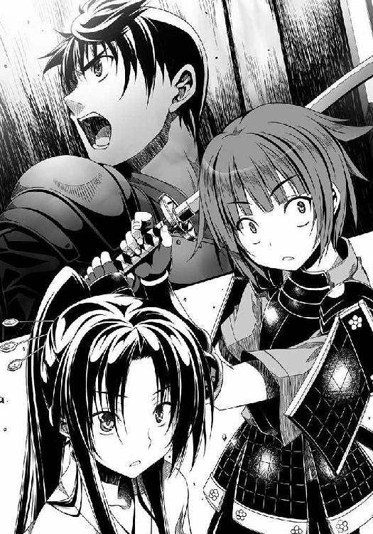
「敵のおん大将・浅井長政が首、津田勘十郎信澄が討ち取ったりいいい！」
小谷城本丸は、ここに炎上して崩落した。
小谷城落城の瞬間である。
浅井家は、ついに滅亡した。
北陸への玄関口である越前に続き、畿内有数の交通の要所である広大な北近江もまた織田軍の領土となったのである。
信奈軍は京へと凱旋した。
越前の朝倉家と北近江の浅井家、この宿敵を同時に討ち滅ぼした信奈の評判はいよいようなぎのぼりとなっていた。
「やまと御所から、今川の将軍さまよりも偉い官位をいただくらしいわ」
「これでいよいよ名実ともに天下人やなあ」
「まだ武田信玄、上杉謙信、中国の毛利ちゅう大敵がぎょうさんおるけど......」
「これで畿内の統一は近づいたわあ」
京の町衆たちが噂する中、信奈がいつも宿泊所として使っている本能寺にて、盛大な祝勝の宴が開催される運びとなった。
勝家、長秀をはじめとする織田家の諸将やお飾り将軍・今川義元はもちろんのこと、津田信澄の隣にはめずらしいことに、信奈と信澄の生母・土田御前までが座していた。
信澄が自らの手でかつて夫婦だった長政を斬り殺したと聞いて、血相を変えてあらわれたのだ。
土田御前はさっきからずっと信澄をなぐさめているが、信澄は「だいじょうぶです」と笑顔を崩さない。
いちばん奥の末席からはじめて信奈の母親の姿をかいま見た良晴は、
「やっぱり信奈に似ているなあ。底冷えがするような目つきのお母さんだぜ。美人だけど、おっかなそうというか......信澄に優しい言葉をかけているはずなのに、どこか冷たそうだよなあ。信奈の気位の高さは母親譲りだったんだな」
と背後にちょこんと隠れるように座っている半兵衛に感想を伝えた。
「それはもちろん、母と子ですから似ますよ。でも今日は人が多くて怖いです。けほけほ」
半兵衛ちゃん調子が悪そうだな、と良晴は少し心配になった。
「今日は畿内各地の大名、国人、豪商、茶人たちはもちろん、やまと御所から関白の麻呂たち公家衆まで招かれているもんなあ。俺なんて織田家ではそこそこの出世頭だけど、城持ち大名じゃねーし、これほどの豪華な面子の中ではせいぜい末席を与えられるのが関の山だぜ」
「ねねも来ていますぞ。兄さま、ものおじしてはなりませぬぞ！」
半兵衛の膝の上には、妹のねねが鎮座している。
「なんで、ねねが来ているんだよ？ ああ、これ小田原名物の『小田原城模型細工』な。木でこしらえた部品をぜんぶ組み立てると、小さな小田原城が完成するんだ。自分で組み立てろ」
「兄さま。おみやげは食べ物ではないのですか？ ねねはがっかりですぞ！」
「これと言った名物料理を見つけられなくてな。いくつか候補はあったんだけど......黒たまごのほうが良かったかな。悪い」
「小田原城なんか作ってもねねは楽しくないですぞ。ねねは女の子ですぞ。こういうものは男の子のためのおみやげですぞ！」
「そうかあー。俺の時代には、歴女がいっぱいいたけどなー」
歴女とは何でしょう、とフロイスがたずねてきた。
今日の祝勝会はある意味無礼講なので、良晴と同列の末席とはいえ南蛮の宣教師までもが招かれているのだ。
この喧騒の中、お供の前田犬千代を引き連れた信奈が、集まった面々の前へ笑顔で颯爽とあらわれた。
南蛮から手に入れた赤いビロードのマントを羽織り、お気に入りの南蛮帽子を被って南蛮椅子に腰掛けたその姿は、戦国の姫というよりはどこか異国の王女を連想させる姿だった。
「どうもどうも。みんな、わたしのために集まってくれてありがとう！」
もともと陽気な性格ではあるが、今日の信奈は妙に元気にはしゃいでいた。
少し躁状態なのではないか、というほどにアッパーな笑顔を振りまいている。
関白・近衛前久が、（なんという悪運の強い姫でおじゃろう。いや悪運ではなく、あなどれぬ実力の持ち主と認める他はないでおじゃる）と歯ぎしりしながら、信奈の前にかしこまった。
「本日は、やまと御所より信奈どのに右近衛大将の位を授けに来たでおじゃる」
「デアルカ」
信奈は、そっけない。はなっから官位などに興味がないのだ。
「かしこまるでおじゃる。右近衛大将は武家では武門の頭領のみに許される、権威ある官位でおじゃるぞ。征夷大将軍の今川義元ですら、叙任されていないでおじゃる」
今川義元が扇子を広げて、高笑い。
「おほほほ。まあ、仕方がありませんわね！ こたびの槍働きはまことに天晴れでしたものね！ 征夷大将軍のわらわはとーっても度量が広いですのよ、これくらいのことは許してさしあげますわ。おーほほほ」
「あんたは、官位制度のことがよくわかってないだけでしょ？」
一同がざわめいた。
「よくわかんないけど、姫さまが名実ともに武家の頂点に立ったわけだな、長秀？ いや違った。立っちゃったんですよね、はにゃ～ん♪」
「......はい、これで今川義元どのよりも姫の権威のほうが上であることがやまと御所によって公認されました。満点です。しかし勝家どの」
「なになにぃ～、長秀？ はにゃ～ん♪」
「......そのヘンなしゃべり方は、零点です。いったいどうなされたのですか？」
「ふざけんなあたしは乙女になれねーってのかコラ！」
「今の乗りツッコミのほうが、勝家どのらしいです。九十点」
「いやだあああ、あたしも長秀みたいな乙女になるんだあああ！」
静かにしなさい六、と信奈が勝家をじろりとにらむ。
「すすすすみません！」
「さて、論功行賞を行うわ。まずは越前一国を、六に──柴田勝家に与えるわ。対上杉謙信の最前線よ、今すぐ堅固な要害を築いて強い軍団を育成すること。もちろん楽市楽座政策もすみやかに実行して、越前の産業を育て、国を豊かにすること。できる？」
「は、は、はあああっ？ あ、あ、あたしが、越前一国の大名ですかっ？ むむむ無理です、そういう難しいことは長秀のほうが適任でっ......」
勝家は筆頭家老でありながら、一国の大名になることにいまいち自信が持てないらしい。戦は得意だが内政だの産業育成だのは勝家の領分ではないのだ。
「与力をつけてあげるから、なんとかしなさい。それに、万千代には若狭一国を治めてもらわなくちゃならなくなったから。越前朝倉家の滅亡を見て、若狭の国人たちは戦わずして織田家に降伏したわ。万千代、安土城の普請もあるし多忙だと思うけど、お願いね」
「ええ、御意です」
「長秀、お前今回戦に参戦してないのに一国一城の大名だなんてひいきされてるなー！ いいなー、姫さまのお気に入りなんだなー！」
勝家がやっかむが、信奈は「はあ」とため息をついた。
「万千代は安土城普請と同時に、虎御前山への兵站という最重要任務もこなしていたでしょう？ まったく六は脳筋なんだから。覚えておきなさい。戦でもっとも大切なものは、補給なのよ？ 万千代はどんな地味な仕事も万事そつなくこなしてくれて、ほんとうに頼りになるわね」
「ありがたきお言葉。私の気分は満点です」
「万千代。若狭と越前は隣国同士よ。六を助けてあげてちょうだい」
「はい」
「そうだっ。助けてくれ、長秀えええ！ いえ、助けてください～お願いだぞっ、はにゃ～ん♪」
「......その〝はにゃ～ん♪〟をやめていただければ、いかようにもお助けいたします。そればかりは鳥肌がたってしまってどうも......」
「なんだとコラあ！」
織田家の二大家老、柴田勝家と丹羽長秀はついに一国一城を統べる大名へと出世した。
あわわ。この十兵衛は今回、京の都を放り出してろくに働いていないです。坂本の城を召し上げられてしまいますぅ、と明智光秀はすっかり涙目になっていた。
諸将も、（出世頭だったけど今回は厳罰をくらうのでは）と光秀の立場を心配している。
しかし、命を捨てる覚悟で良晴の仇討ちに参加してくれた光秀を、信奈は罰しなかった。いまや二人の主従は以前よりもはるかに堅い絆で結ばれていた。
とはいえ、光秀さえ邪魔しに来なければそもそも箱根で良晴と結ばれていたはずなので、それを思うと法外に大盤振る舞いするわけにもいかない。
が、こつこつと茶会を開いて京の公家衆と交わり、渋る近衛前久を説得し、信奈の右近衛大将就任の件を進めてくれたのも光秀である。
信奈にすれば良晴の件に関してなかなか空気が読めない恋仇の光秀は憎いけどかわいい、というところ。
二人で良晴の仇討ちに向かった時から、主従の垣根を越えた友情のようなものを信奈は光秀に抱くようになっていたのだ。
そこで......。
「明智十兵衛光秀にくわえる罰はなしよ。引き続き坂本城の城主をつとめ、京の都を守る仕事もそのまま続けなさい。それと、新たに丹波一国を知行地としてあんたにあげるから、自力で切り取ること。いいわね」
褒美はあげるけれど手に入れたいなら自分で切り取るように、という折衷案とも言える論功行賞を信奈は行った。
「た、丹波ですか？ 丹波は京の都がある山城につらなり西国への玄関口ともなる要地、しかも三十万石の大国ですが、ほんとうにいいのですか信奈さまっ？」
「いいわよ。ただし今後もあんたの部隊をあちこちでこきつかうから、すぐには切り取れないかもしれないけどね。あと、これからわたしの配下になりたいと殺到してくるであろう畿内の小大名や国人衆の統率も、十兵衛にぜんぶ任せるわ！」
信奈は光秀に、畿内のほぼ全域を統率する「畿内管領」とも言うべき大職を与えたのだった。
良晴の件では邪魔で仕方がない光秀だが、武将としての有能さは織田家でもトップクラスである。しかも文化人としても一流の光秀は堺や京で顔が広く、複雑な外交仕事をすべてこなせる唯一の人材だった。
これは、破格の出世である。
家臣団の誰からも、異論は出なかった。
「ありがたき幸せですう！ ああ、わかりました！ これは信奈さまの貞操をお守りしたご褒美なのですね！ 箱根へかけつけた甲斐があったというものです！ これからも相良先輩が信奈さまにあやしい術を使いましたら、そのたびにこの十兵衛がすぐさまかけつけて信奈さまをお守りいたします！」
「......あんたって、ほんっっっっとに鈍いのね。もしかして実はバカなんじゃない？」
浮かれる光秀をにらみつけながら、信奈が大好物の「てばさき」をほおばった。
だが何がそれほど嬉しいのか、信奈は上機嫌で今日ばかりは光秀の鈍感ぶりを見せつけられても怒りださない。
ここで土田御前が、いらいらしたようにみけんにしわを寄せながら口を開いた。
「吉。北近江小谷城二十万石は、小谷城を落とし浅井長政を討った勘十郎に与えるのでしょうね？」
信奈は一瞬不機嫌そうに押し黙り母と視線を合わせたが、お互いに寒々しい目つきだった。まるで情がかよっていない......二人の関係はほんとうに冷え切っている......と気づいた良晴は信奈の心情を思うと胃が痛くなった。
だが、信奈は土田御前から視線を外すと、ご陽気な声をはりあげた。
「北近江二十万石は、サルに与えるわ！」
ええええええ、と全員が驚きの声をあげた。
ねねや半兵衛や良晴も、その中に入っている。
誰もが、浅井家の旧領である北近江は信澄に与えられると信じて疑わなかったからだ。
「吉！ どういうことです！ このような身分も知れぬあやしげな素浪人あがりの者を国持ち大名に取り立てるなど！ 断じて許せません！」
土田御前が「そこまで勘十郎が憎いのですか」と信奈に詰め寄ろうとしたが、信澄がそんな母の袖を押さえて「浅井朝倉家を滅ぼせたのは、サルくんのお手柄です」と笑顔でとりなした。
「勘十郎。自らの想い人をその手で斬り捨てよという残虐非道な姉の命を実行してまで、なおこのような扱いを受けるとは......かわいそうに、かわいそうに」
土田御前は信奈を恨むように涙を流しながら、信澄の頭をかき抱こうとした。
だが、信澄は「ぼくももう大人ですから」と母に甘えようとしない。
「今回は、ぼくの武功よりもサルくんの立てた手柄のほうがはるかに大きい。しかもそれは公には見えない隠れた手柄なのです。母上に説明したくとも、姉上から誰にもこのことについて語るなと口止めされていまして。ぼかぁこれからは口がかたい人間になりますので、申し訳ありません」
土田御前はいよいよ顔面蒼白となり、「いったい何がどうなっているのか」と取り乱した。
あの信澄が母を頼らないなんて！
吉が勘十郎に何か悪い術でもかけたに違いない、と土田御前は娘を疑いの目でにらんだ。
なにしろ昔から南蛮人などと行動をともにして、「仏像なんてただの木とかねの塊にすぎない」と罰当たりなことを豪語してきた娘だ。何をしでかすかわからない。
「の、信奈。いくらなんでも俺に北近江二十万石だなんてやりすぎだ！ 俺の取り分は五万石くらいでいいよ！ 北近江は勘十郎にくれてやれ！」
良晴までが遠慮したが、信奈は「ダメよ。もう決めたの」と決意を翻さない。
「......このあやしげなサルに筑前守の官位を与えるだけでは飽きたらず、ついに一国一城の大名に取り立ててしもうたでおじゃるか......世も末でおじゃる」
近衛前久も予想外のこの論功行賞には「何を考えているのでおじゃろうか」と思わず本音を漏らしてしまった。
半兵衛とねねが「承知してください、けほけほ」「そうですぞ、ついに兄さまの悲願・一国一城の主ですぞ！ モテモテはあれむの夢がかないますぞ！」と良晴の左右の腕をぐいぐいと引っ張って決意を促す。
「サル！ お前、姫さまにかわいがられていて、いいなー！ ちきしょー！」
「相良どのの見えない手柄とは、ひとつには武田信玄との和睦を成功させたことでございましょう。しかも、どうやらお手柄は他にもあるとお見受けします。お受けなさいませ。満点です」
勝家と長秀の態度は好対照。
「なんてことですか。ついに相良先輩が大名に！ 悔しいですがこの十兵衛と祝言をあげるにふさわしい身分になりやがったです！ 残念ながらまた一歩、祝言に近づいてしまったです！ あとは十兵衛が丹波一国を切り取って立派なお城を建てれば祝言待ったなし......ああ、元気すぎる先輩に毎年毎年孕まされる暗黒の未来が見えてきて十兵衛は倒れそうです......」
光秀はなにやら幻の未来を妄想して、口では「ああイヤだイヤだです」と文句を言いながらも、その瞳をきらきらと輝かせている。
「ノブナさまにはきっと深いお考えがあるのでしょう。ヨシハルさん、引き受けるべきです」
フロイスにまで背中を押された良晴は、「わ、わかった」とついに承知した。
「考えてみれば、北近江は藤吉郎のおっさんが信長公から与えられた領地だ。あと、北条氏康の脅し文句が少しだけ気になってたけど、自分の城を持てば風魔に暗殺される心配もなくなるだろうしな。少し荷が重いけれども引き受けて、なんとかしてみるか！ ......でも領国経営って、いったい何をどうすればいいんだ？ ぜんぜんわかんねー！」
「くすん、くすん。この半兵衛も戦と陰陽道が本業でして、そちら方面のお仕事は苦手です......けほ、けほ」
「誰か、内政をやってくれる片腕が必要になってきたなあ......誰かいねえかなあ......」
五右衛門に従っている川並衆の前野某が背後から「戦はまだまだ続く。町中のかわいい幼女を一カ所に保護してさんざん甘やかして育ててやろうぜ、それが男の生き甲斐ってもんだ！」と口をはさむが、「俺の軍団ってこんな男ばっかりだよな......」と良晴の悩みは深まるばかり。
「そろばん勘定なら、ねねにお任せあれ」
ねねがない胸をとんと叩いて大いばりしているが、幼いねねにそんな激務を丸投げするわけにもいかなかった。ねねの祖父、浅野の爺さんももういい歳のご隠居だし......。
「さてと、どうすっかなー」
このあと、なんとなく伊勢に自分の軍団を置いて勝手に大名っぽくふるまっていた滝川一益に、信奈は「めずらしく援軍に来てくれたから、今回のご褒美よ」と正式に伊勢一国を与えた。
「ぶーぶー。国なんていいから姫は茶器がほしいのじゃ。贅沢は言わぬのじゃ。あの、九十九髪茄子がほしいのじゃ」
「はぁ？ 九十九髪茄子がどれだけ価値が高いかわかって言ってるの？ 無理に決まってるでしょ！ 伊勢で真珠でも養殖してなさいよ」
「相変わらず、信奈ちゃんはケチなのじゃ。姫はいずれ謀反を起こすのじゃ」
「言ってなさい。まったく、扱いづらい子ねぇ」
さすがの信奈も、滝川一益だけはどうにも相手にしづらいらしい。
伊勢戦線は一益の力でほぼ収束に向かっているし、これから一益の軍団をどう活用するか、信奈はそろそろ決めなければならなかった。
論功行賞がほぼ終わった頃。
フロイスの隣に、少年宣教師のオルガンティノがこっそりとあらわれた。
「ふ、フロイスさま。客人がいらしています。ドミヌス会からの書状を持って」
「ドミヌス会から？ なにごとでしょう」
オルガンティノの様子がただごとではなかった。呼吸が荒い。汗をびっしょりかいている。
フロイスは「少し中座させていただきます」と頭を下げ、オルガンティノに案内されて庭へと出た。
「こ、これはいったい？」
フロイスは驚いた。
庭先に、異様な姿をした一つ目の巨人が立っていた。
いや、生きている巨人ではない。それは木とかねと陶器で作られた、人の二倍ほどの身長を持つ巨大なからくり人形だった。
「ガチャーン、ガチャーン」
と、その奇怪なからくり人形は聞き慣れない金属音を発しながら、一歩、二歩と庭を歩いてみせたが、うまくバランスが取れないのか、それとも動力が切れたのか、膝からどさりと崩れ落ちて動かなくなってしまった。
「な、なんですかこれは？ オルガンティノ？」
「お客人が、これからの合戦で馬の代わりに使うために試作したからくり人形だそうです」
「まるで、いにしえの大博士アルベルトゥスが造った人造人間ですね......」
「ぷはあ。失敗、失敗。人形に二足歩行させるのはなかなか難しいなあ。あはははははっ！」
一人の小柄な侍が、からくり人形の胴体の中から飛びだしてきた。
侍と言っても、ジパング伝統の着物は着ておらず、南蛮商人のように派手な南蛮ものを身にまとっている。かろうじて、腰に二本の刀を差しているので侍だとわかった程度であった。こんがりと焼けた小麦色の肌はこの侍が南国から訪れた証拠であろう。髪の毛はおかっぱ。竹中半兵衛よりもわずかに年下のこの見慣れぬ侍はどこか中性的というか、まだ半ば子供のようにあどけなくて、少年なのか少女なのか判然としない。
「ムイント・プラゼール！ わが名はドン・シメオン。九州でドミヌス会の洗礼を受けてきた！ 今日はフロイスどの宛てにドミヌス会からの書状を持ってきたぞ！」
「ドン・シメオン......キリシタンのおサムライさまなのですね」
「このシメオンは九州で最新の学問『えれくとりかす』を学んできた。このからくり人形『おーとまた』も『えれくとりかす』の原理で動かしている！」
「『えれくとりかす』......耳慣れない学問ですが......」
「ああ、そうそう。これがドミヌス会から預かった書状だ！」
ドン・シメオンが、書状をぽんっと放り投げた。
オルガンティノがあわててその書状をキャッチして、フロイスの面前で開いてみせた。
「ボクは先に読ませていただいたのですが、たいへんなことが書かれているんです！」
「......これは」
書状の中身を読んだフロイスが、眉をひそませた。
もしかしたらいずれジパングにとって不幸な事態が起きるかもしれないと、師ザビエルから忠告されてはいた。フロイスとその師ザビエルは、ヨーロッパの列強諸国がこの極東の島国ジパングを『コロニー』──フロイスたちは日本には従来存在しなかったこの概念に『植民地』という新造した日本語をあてていた──にするという野望を抱いていることを危惧し、ドミヌス会の日本での布教活動がそのような汚れた野望に利用されるのではないかと怖れていた。
そして信奈は、フロイスからヨーロッパの植民地主義という暗部を教えられた時にまるで初めて知ったかのようにふるまっていたが、どうやらすでに知っていたようだった──。
（もしかするとノブナさまとザビエルさまは面識があったのかもしれません。だとすれば、この事態は、ほんとうにジパングにとって、ノブナさまにとっては最悪です）
今、ついに「その時」が来たのだ。
「オルガンティノ。ジパングを支配する野望を持ったあのものが上陸したのですね」
「はい。しかも新たなドミヌス会ジパング支部長として、この都に向かっています」
まだ早い。早すぎる。
なぜならジパングのクィーンは、まだこの国を統一し終えていないのだ。
フロイスとオルガンティノは、互いにこれからジパングに迫り来る運命にうち震えた。
しかしドン・シメオンと名乗るキリシタン侍の少女は、書状の中身には興味がなさげだった。
若いシメオンは今、南蛮の新しい学問に夢中になっている。
透き通った声で、シメオンはフロイスに声をかけた。
「そうだ忘れていた。毛利家からの書状も持ってきたんだ！ 九州から畿内へ来る途中、中国の毛利家から託されたんだっけ。こっちの書状は織田信奈宛てだ！」
シメオンはどこまでも明るい声で、聞き捨てならない言葉を口にした。
「天下に名高い天才軍師であるこのドン・シメオンが断言する。織田信奈は天下布武の野望を遂げられない！ 相良良晴がいる限り！」
フロイスは、（この無垢な少女はまるで人々を驚かせるために地上に舞い降りたかのよう）とさらなる衝撃を受けながら、シメオンにたずねた。
「ヨシハルさんがいるから、ノブナさまの野望は遂げられない？ なぜですか？」
「フロイスどの。この書状は、毛利家から織田家への宣戦布告状なんだ！」
「ええっ？」
「中国の覇者・毛利家は、明から日ノ本に戻ってきた正統な足利将軍──さきの将軍足利義輝の妹・足利義昭を迎え入れた！ ほんものの足利将軍が現れた以上、織田信奈が担いでいる今川義元はニセ将軍に格下げだ。上杉も武田もみんなこぞって足利につくぞ。あはははは！」
「アシカガショーグンさまが？ このジパングに？」
「そうさ。足利幕府復興の大義名分を得た大名たちが東から西から続々と上洛してくるぞ！」
シメオンは明るく笑いながら続ける。
「織田信奈が今川将軍を担がねばならなくなったのは、相良良晴が今川義元を助命したからだ！ ほんとうは織田信奈は桶狭間で今川義元の首を取り、足利将軍を担いで上洛し、天下布武を達成した暁に足利幕府を自らの手で潰すべきだった。未来から来た相良良晴が、『織田信奈が天下を盗る』という歴史本来の流れを狂わせているのさ！ 相良良晴は本来、この時代にいてはならない『いれぎゅらぁ』な存在なんだ！」
「それでは、ノブナさまはいったいどうすれば？」
「フロイスどのにお頼みする。今すぐこのシメオンを織田信奈に会わせてほしい。さすればこのシメオンが、天下布武を実現させるための策を献じてご覧に入れる！」
会っていかがなさるのです？ と思わずたずねたフロイスに、ドン・シメオンは自信満々、張りのある声で答えた。
「あの男を未来へ帰せば、歴史の流れは正常化し、織田信奈の天下布武は成るよ！」
まるで天使のように澄んだ声と瞳、それ故にこの子はおそろしい、とフロイスは思った。
「相良良晴を未来の世界に帰す方法を、このシメオンは知っている！」
......
フロイスがドン・シメオンから受け取った書状をにぎりしめて庭先に立ち尽くしていたその頃、足利将軍の復活を知らない織田家の祝宴は佳境に入っていた。
「武田とはいずれ決戦するとして、次の敵は越後の上杉謙信と中国の毛利よ！ 北条氏康は小田原に放置しておきましょう。この戦国の世では、何もせずに待っているだけで漁夫の利を得ようだなんて甘い考えだということを教えてあげるんだから！」
信奈はすっかり上機嫌である。
考えてみれば、次々と家臣たちに領地を与えていくなんて、ケチで有名な信奈にしては大盤振る舞いにもほどがあった。
だが信奈の実弟・津田信澄は近江のわずかな領地をあてがわれただけで、旧浅井領のほぼすべてを所領として与えられた良晴とはあまりにも差があった。
「......想い人を斬ってまで大功をたてた勘十郎をむげに扱い、身分いやしきサルなどに小谷の城をくれてやるとは......どこまでかぶけば気がすむのか、この娘は......」
信澄を愛してやまない土田御前がどんどん顔色を青くしていったのも、当然と言えよう。
家臣たちも「おい長秀。さすがにまずいよ」「これ以上親子関係が冷えましたら三点です」「サルには城ではなく茶器をあげればよいのじゃ」と空気を読んで少しずつざわめきはじめていた。
空気が読めない子の光秀だけは「ああ、丹波平定達成の暁には信奈さまをお守りするためにサル人間と祝言とは......十兵衛の人生は悲劇そのものですぅ。もちろん式は坂本城の南蛮教会であげるです」と一人だけ例外というか蚊帳の外だったが。
場がだんだんしらけてきたところで、信奈はぽんぽんと手を叩いて、
「さてと。余興をはじめるわ。弾正、例の杯を持って来て！」
と、大和国主の松永弾正久秀を呼びつけた。
「はい、信奈さま。なかなか美しい仕上がりですわ、うふ」
稀代の悪女と呼ばれて都中から怖れられている妖艶な美女・松永久秀が持参したものは──三つの、黄金の髑髏だった。
その黄金の髑髏の中に、血のように真っ赤な葡萄酒が注がれている。
「ひ、姫さま、これはっ？ まさか朝倉義景の館で見つけたアレですかっ」
「......数が......増えてる......」
「さて。これはいったいどのような余興なのでしょうか。点数をつけづらいです」
「おい信奈！ まだお母さんがいる席上で、それを出しちゃうのかよ？」
良晴が、「お母さんが退室してから出せよ！」と信奈を叱りつけたが、信奈は「いいのよ。これを見て天地がひっくり返ったかのように大騒ぎしてくれる人が一人でも多くいたほうが効果的でしょ」と涼しい顔をしている。
松永久秀が、あやしげな笑みを浮かべながら口上を述べた。
「この三つの黄金の髑髏は、それぞれ、朝倉義景、浅井久政、浅井長政のしゃれこうべですわ。うふ。頭蓋骨全体に何重にも金を貼り重ねまして、黄金の杯として仕上げました次第。これが信奈さまに逆らった者どもの末路ですわ──今宵は、この黄金の髑髏に注ぎましたる南蛮の赤葡萄酒を、皆さんでまわし飲みいたしましょう」
くっくっくっ、と久秀が心の底から愉快そうに微笑んだから、三つ並べられた黄金の髑髏の不気味さはいっそう増した。
ひぃと勝家が腰を抜かして「ああああたしは無理！ 無理だよん、はにゃ～んっ!?」とさっそく辞退。まさか浅井久政と長政まで黄金の髑髏にしてしまうなんて、と信奈の苛烈さに震えている。
長秀も「......悪趣味な上に、死者を冒瀆するやり方が残虐すぎます。一点です」とさすがに手厳しかった。
「ままま麻呂はここここのような穢れた席にはこれ以上おれぬでおじゃる！ 帰るでおじゃる！ 織田信奈、必ずやそなたには天罰がくだされようぞ！」
「......なんといううつけ者。勘十郎の想い人をこのような無残な姿にして辱めるとは。これが姫たる者のやることか！ 吉、やはりそなたは人の心を持たぬ魔王じゃ、鬼じゃ！ 二度とわが前に顔を出すでない！」
たたりを怖れた近衛前久が「おお、穢れる。穢れる」と顔を隠してまず逃げるように広間から去り、次に土田御前が大激怒して立ち上がり、信奈をさんざん罵倒したのちに退室していった。
そのあともまだ、ざわめきがおさまらない。
近江半国の大名に格上げされ、末席から信奈のすぐ近くの席へ移っていた良晴が、
「ほんとうにこれでよかったのか、信奈......お母さんと和解する好機だったのに、こんな汚名を自らに着せて、ほんとうによかったのか？」
と、無言のままみじろぎひとつしない信奈に声をかけた。
信奈が、口を開いた。
「......いいのよ。ほんとうのことを知っている人間は、ごく少数だけでいいの。この黄金の髑髏の噂は日ノ本中を駆け巡らなくちゃいけないんだもの。そうでなければ、浅井長政が完全に、間違いなく死んだことを天下に知らしめられないでしょう」
ひどくさびしげな声だった。
ほんとうは、声をあげて泣きたいのだ。
この場で信奈の細い身体を抱きしめてやれない自分の身分に、良晴は歯がみした。
一国一城の主に、国持ち大名にまで出世しても、なおも天下人の信奈には手が届かないのだ。
この黄金の髑髏の登場で、場は、興ざめした。
一人去り二人去り、ごくごく一部の限られた重臣だけが、宴に残った。
信澄、勝家、長秀、一益、光秀、良晴、そして半兵衛にねね。
良晴が去るまでは自分も居残るつもりだったのだろう、なおも末席にちょこんと座っている半兵衛が、「......このような知恵の使い方は......悲しすぎます......くすん」と涙を一粒、こぼした。
いつも明るい一益も、「信奈ちゃんは、こんな時こそ姫の力を頼ればよいのにの」とこぼしながら、少し涙ぐんでいる。
「......姉上」
信澄が、信奈の前に歩み寄り、深々と頭を下げた。
「......ほんとうに......申し訳、ありません」
「いいのよ勘十郎。わたし一人が、第六天魔王として怖れられればいいの......他に道はなかったのよ。姉としては、これくらいのことしかしてあげられないわ」
勝家が長秀に「信澄は何を謝ってるんだろう？」とたずねると、長秀はようやく目の前で何が起きているかを察知して「とても一言では、説明できませんが......万事丸く収まったはずなのですが......姫の心情を思いやると......いえ、今の姫に点数などつけてはなりません」と苦しげに答えた。
「？？？」
勝家がなおも、今目の前で何が起きているかを理解できずに首を傾げていると──。
「そろそろ入ってきなさい。わたしの妹をほしがっていた浅井長政の手前、今までずっと隠していたけれど、実はわたしには腹違いの妹がいるの！ 名前は、お市、よ！ 浅井長政は死んだわ、お市！ もう人前に出てきていいのよ！」
襖が、静かに開いた。
そこには、「お市」と呼ばれた少し大柄な美女が、艶やかな振り袖姿で正座していた。
お市は、自ら悪役を演じて生母に嫌われ罵られるという耐えがたい苦痛に耐えてくれた義姉の心遣いを、顔を伏せたまま頭をあげられない信澄の嗚咽を、実父が最期に遺してくれた遺言のほんとうの意味を、そして自分と信澄を悲劇の運命から救うために燃えさかる小谷城の本丸へと傷だらけになってかけつけてくれた相良良晴の少しばかりひねくれた男気をかみしめながら、万感の思いをこめて、名乗りをあげた。
「市に、ございます」
その蝶のように艶やかな美女の顔かたちをまじまじと見た勝家は、「......あ......」と一声漏らしたきり、言葉を失った。
そのまばゆく艶やかな美女の正体が何者であったかを、この時の織田家の祝宴に最後まで残っていた少数の者たちは、のちのちまで決して他人には語らなかったという。
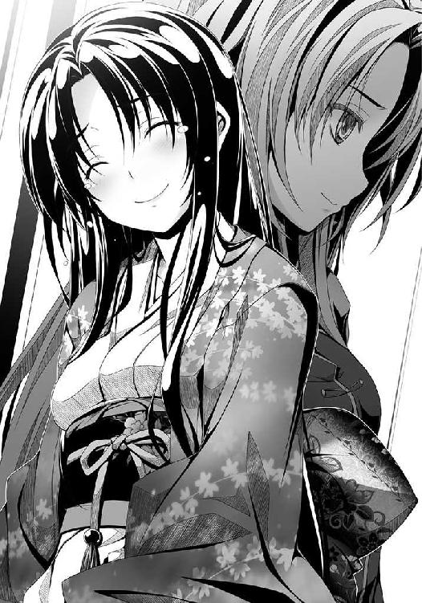
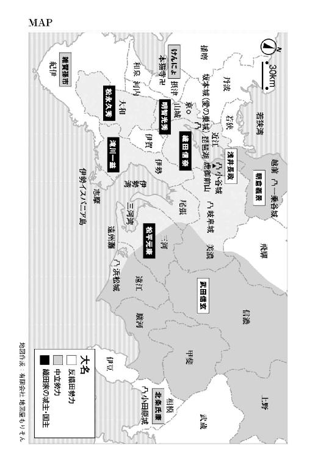
この巻を書くために当初は甲斐へ取材旅行に行く予定だったのですが、武田信玄が小田原城から動けないために急遽、小田原城周辺を旅行してきました。
もちろん豊臣秀吉の関東遠征軍と戦った頃の壮大な小田原城がそのままご当地に残っているはずはなく、かつての城の中枢部分が公園として整備されていて観光名所になっているわけですが、なぜか城内にはゴーカート施設があったりミニ動物園があったりして、往年の小田原城もこんなんだったんだろうか......と新たな歴史の謎に突き当たりました。
動物園には当初「ゾウがいる」という噂を聞いていましたが、実際にいたのはサルでした（数年前にゾウは死んでしまったそうです）。
北条氏康がこの巻で抱くことになるサル＝相良良晴への怨念というか執着は、この二十一世紀になってもまだこういうかたちで残存しているのだなあ、と感心しました。
また、復元された天守閣から望む箱根の山々と相模湾の絶景さは、春日のつたない筆力では表現できないほどに美しいものでした。もちろん、みやま先生へのおみやげ（ご当地Ｔシャツは強制的に送付）も買って帰りましたが、世はこれほどの戦国ブームだというのに「これぞ北条家ならではのおみやげ！」というものが少なかったのがちょっと残念です。
「氏康さんがんばって！」と応援せずにはいられませんでした。
いよいよこの巻では長らく続いていたあの二人の恋の行方についに決着がついて、今まで物語の舞台になっていなかった西国から新しい仲間と強敵が登場、ついに「信奈」も読者のみなさまのおかげで次巻からは新章に突入です。良晴と信奈の恋のほうは十兵衛光秀が本格的にからんできてますます混沌としそうな予感ですが、からんでくるのは光秀だけではなさそうです。
また『織田信奈の野望』がコミカライズされていまして、なんと角川書店の『月刊コンプエース』と富士見書房の電子コミック誌『エイジプレミアム』で２本立てで連載されています。なにとぞ、どちらもよろしくお願いします。
最後になりましたが......迷わず何のちゅうちょもなく温泉シーンを口絵に選んでくださいましたみやま零先生、相良良晴以上に東奔西走されておられる（お、お疲れさまです！ もはやかける言葉が見つかりません）担当のＫさん、そして『織田信奈の野望』シリーズを読んでくださっている読者の皆さまに今回も厚くお礼申し上げます。
春日みかげ
著者
春日みかげ（かすが みかげ）
今回は東国編と畿内編が同時進行ということで、小田原城に行ってきました。新幹線の駅前にあってびっくり！ 今は関ヶ原取材の準備中です。冬になって雪が積もる前にＧＯ、という予定です。あれ？ でも「信奈」に関ヶ原の合戦ってあるのかな......？
イラスト
みやま零（みやま ぜろ）
『戦国鍋ＴＶ』で好きなユニットは天正少年遣欧使節でした。「鍋ＴＶ」復活希望。子供のころ、地元祭の武者行列に参加させられて、伊東マンショをやったことがあります。首元のフサフサが邪魔でりんご飴は食べられません。
ファンレター、作品の感想をお待ちしています
＜アンケートページはこちら＞
https://emob.jp/m/fi.php?a=gabunko&d=6&i=4318
（このページのスクリーンショットを撮って、ＱＲコードリーダーアプリで読み取ればアンケートページにアクセスできます）
〈あて先〉
〒１０６－００３２
東京都港区六本木２－４－５
ソフトバンク クリエイティブ（株）
ＧＡ文庫編集部 気付
「春日みかげ先生」係
「みやま零先生」係
http://ga.sbcr.jp/
ＧＡ文庫
織田信奈の野望７
春日みかげ
発行人 新田光敏
発行所 ソフトバンク クリエイティブ株式会社
〒１０６－００３２
東京都港区六本木２－４－５
装 丁 株式会社ケイズ（大橋勉／彦坂暢章）
印刷・製本 中央精版印刷株式会社
２０１２年５月１７日 初版第三刷発行
２０１２年８月１日 電子第一版発行
Mikage Kasuga ISBN 978-4-7973-6749-2